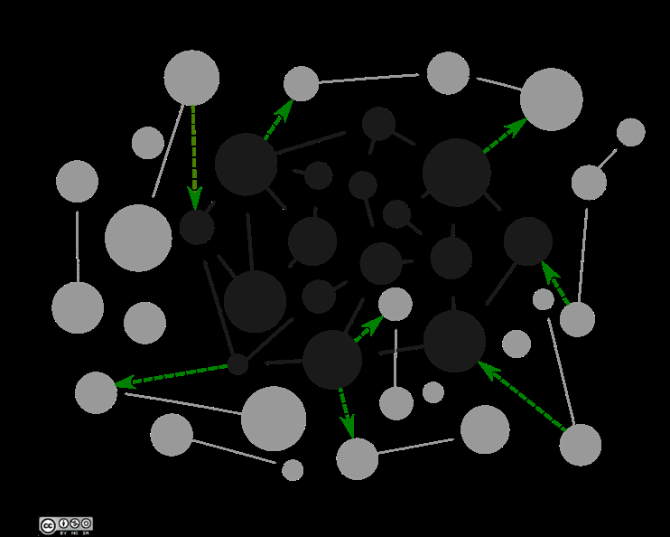
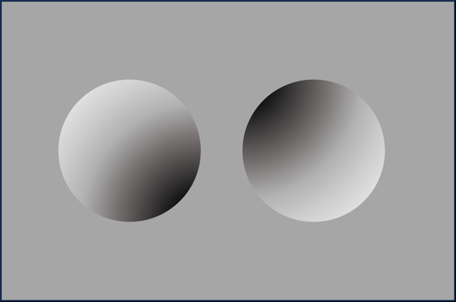
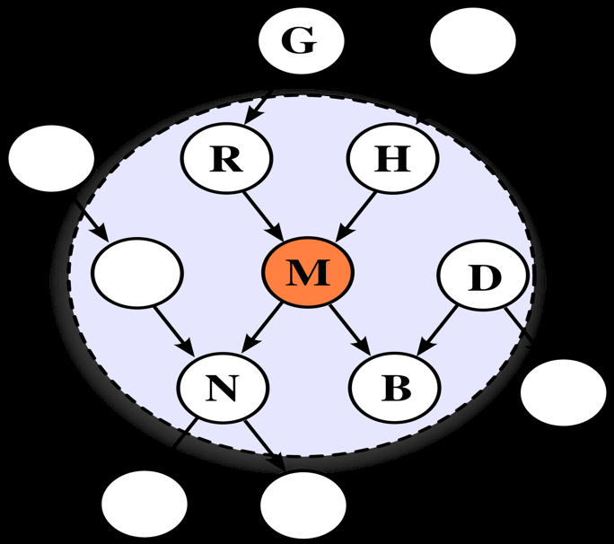
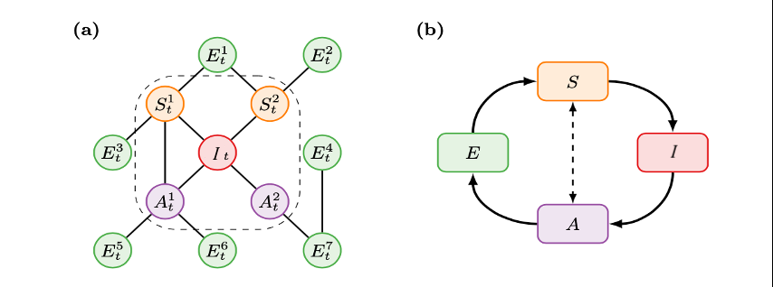
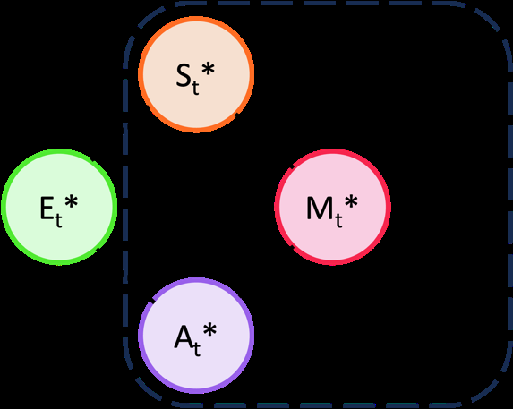
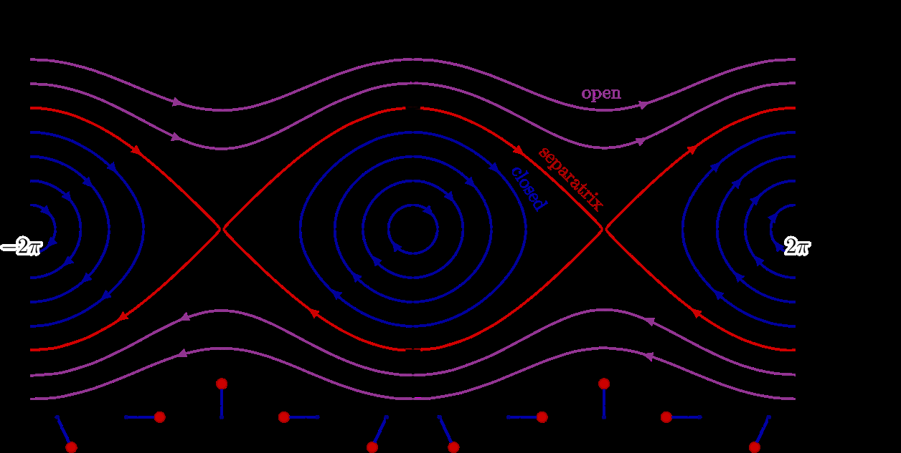
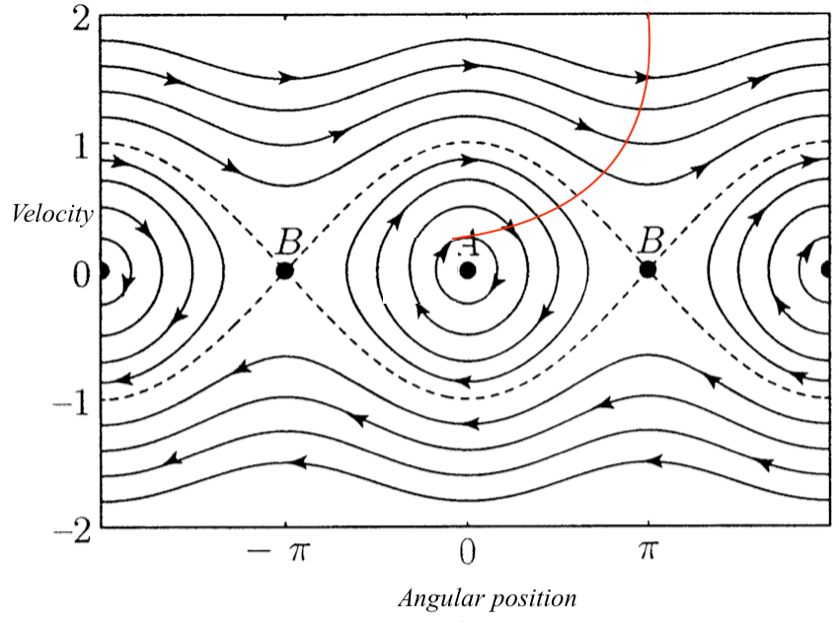
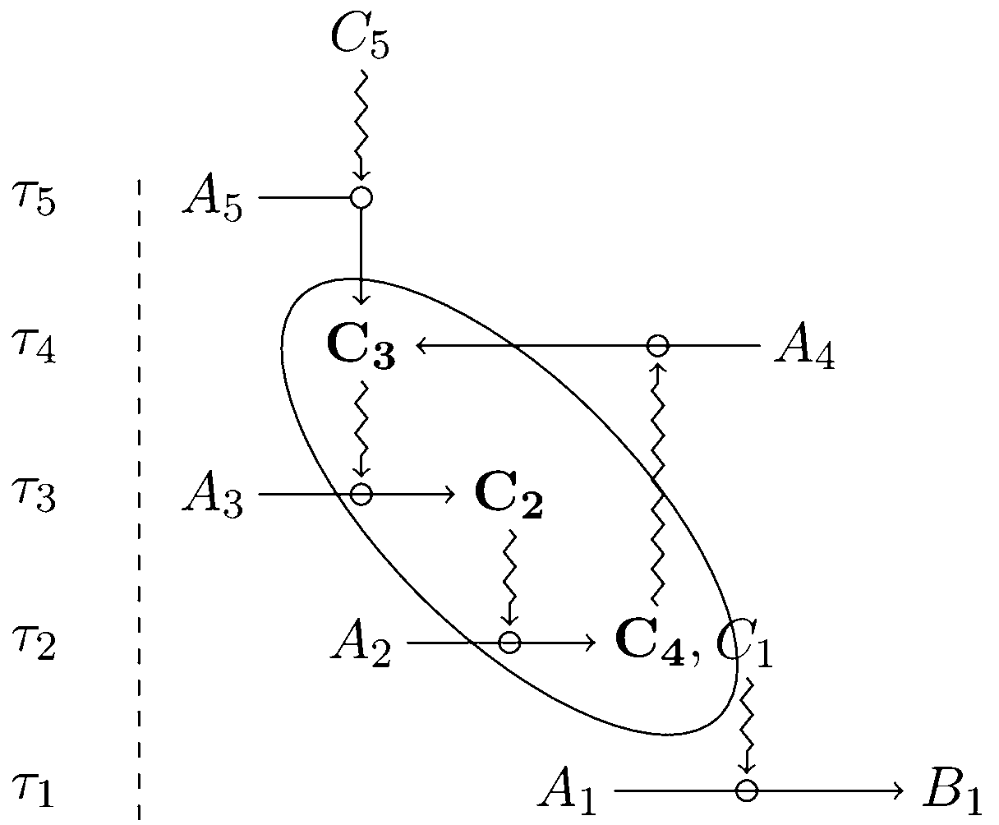

Kathryn Nave
这是即将出版的专著的草稿。可引用为’Nave, K. (2025). A Drive to Survive: The Free Energy Principle and the Meaning of Life. MIT Press’
在直接引用文本之前请联系我确认
致谢 1
引言：控制不是目标 1
0.1 引言 1
0.2 概述 9
1.1 能动方法 14
1.1.1 作为自然主义现象学的能动方法 19
1.1.2. 你的意图是什么？ 25
1.1.3 赫尔利的能动方法 31
1.2 生物能动主义 35
1.2.1 自创生与自主性 37
1.2.2 意义生成与适应性 41
1.3 从生物能动主义到预测性处理 45
2.1. 最小预测性处理 50
2.2 重构主义预测性处理 54
2.2.1 预测性处理作为无意识推理 57
2.3 感觉运动预测性处理 61
2.4 预测性处理的意义何在？ 65
3.1 变分推理 74
3.2 纳入行动 81
3.2.1 生成循环与主动系统 82
3.2.2 先行动，后思考 87
3.3. 主动推理与学习 89
3.4 第一个生成模型从何而来？ 93
3.4.1 描述与实例化 96
3.5. 从表征的角度来看，这将我们带向何方？ 102
3.6. 从可能的描述到规范性原理 105
4.1 有机体的议程 107
4.2 自组织与稳态 111
4.3 控制论重现 116
4.4 稳定性与能动性 120
4.5 越是变化，越是保持不变 126
5.1 因果推理和马尔可夫毯的简要回顾 134
5.1.2 因果装扮中的贝叶斯网络 137
5.2 马尔可夫毯实在论 142
6.1 缺失的循环 158
6.2 外延模糊性 167
7.1 ESIA-闭合 175
7.2 生物能动主义、自主性与闭合 180
7.3 操作闭合 183
7.4 从自由与稳定到依赖与目的 187
7.5 自我生产不是”组织的稳态” 193
8.1 过程与实体 202
8.2 有机部分的不稳定性 207
8.2.1 为什么新陈代谢很重要 212
8.3 从实现的稳定性到组织的稳定性 220
9.1 异态调节策略 231
9.1.2 从稳态到异态调节 231
9.2 多尺度稳定性 237
9.2.1 发展的问题 240
9.3 从稳态到可预测路径 244
9.4 机器之外的生命 250
9.4.1. 所有尺度的不稳定性 251
9.5 生命作为寻求稳定性的过程 263
10.1 将自主性定义为过程闭合的问题 276
10.2 约束闭合 278
10.2.1 约束因果关系 281
10.2.2 约束产生 287
10.3 约束闭合作为生命系统理论 292
10.3.1. 约束闭合与适应性 299
11.1. 有机体作为理由网络 307
11.2. 有机体作为其自身活动的原因 315
A.1. 上帝的宏大因果图 328
A.2. 自然化数学实在论 334
A.3. 绝对单位 336
A.4. 第二个稳定性要求 338
这本书直接受到以下人员的影响：戴夫·沃德、安迪·克拉克、阿利斯泰尔·艾萨克、马兹维塔·奇里穆塔和埃文·汤普森，他们在早期阶段阅读了这份手稿的部分内容，并为其改进提供了大量鼓励和有用的反馈。特别感谢
感谢 Evan 帮助我出版这本书。我也要感谢 Jaan Aru，他突如其来的那封可爱邮件给了我最终的推动力，让我真正寄出了出版提案。这本书之所以能更加完善，还要感谢三位匿名审稿人和 Giovanni Pezzulo——他们在评估中都既慷慨大方又富有洞察力，为改进提出了宝贵建议。
我很幸运能在爱丁堡大学哲学、心理学和语言科学学院度过过去六年时光，与以下这些优秀的人共同学习和成长：Lilith Lee、Matt Sims、Danaja Rutar、Jodie Russell、Emma Otterski、Shannon Prosckh、Jennny Zhang、Mark Sprevak、Frank Schumann、Mog Stapleton 以及许多其他人。在各种会议和暑期学校中影响和启发我的人数不胜数，但就我能够连贯地谈论马尔科夫毯(Markov blankets)而言，我要感谢 Benjamin Jantzen 在哲学与物理计算暑期学校中的精彩教学。
虽然自由能原理(free energy principle)的技术细节只是在过去几年里让我专注思考，但自从我第一次对手既可以看作世界中的一个物体又是自我的一部分这个问题感到困惑以来，我一直在试图弄清楚到底发生了什么。我现在能够以思考本质上相同的问题为职业，要感谢以下这些人的支持：我的父母 Kym West 和 Colin Nave，他们从未告诉我停止浪费时间。我的伴侣 Max Wilkinson，他经常这样做，并把我从理论世界拖出来，让我到真实世界中玩耍。Kate Webb，总是愿意同时探索这两个世界。Amy Mallinson，她比自己认为的更像一个哲学家。Jackson 先生，即使只有一个学生，他也愿意继续教授哲学课程。Graham、Louise、Izzy 和 Chris，他们欢迎我加入他们的家庭，并为理解我在说什么做出了无数勇敢的努力。攀岩伙伴们，只要我愿意再去枫丹白露旅行一次，他们就不在乎其他的。还有我从祖父那里得到的基因，我只通过他收藏的通俗哲学书籍了解他。把这本书放在你的书架上会是一件激动人心的事。
“人工智能(AI)指的是通过分析环境并采取行动——具有一定程度的自主性——来实现特定目标从而表现出智能行为的系统。”——欧盟委员会人工智能高级专家组(2018)
“比起一门声称与上帝平等的科学，我更担心的是一门科学，它剥夺了人类自存在之初就已知的最基本区别之一的所有意义：生者与死者之间的区别；或者更直白地说，生与死之间的区别。”——让-皮埃尔·杜普伊(Jean-Pierre Dupuy)(2018)
如果没有雷丁市外一个大地下室住户的支持，这本书就不可能写成。在这里，在一个看起来像美国航空航天局任务控制室和纽约证券交易所后代的空间里，住着英国电力网络背后的”大脑”。这是国家电网的电力控制中心(ECC)，一个部分自动化的系统，负责监控英国各地的数百万个传感器，以便在电网五千英里的电力线中保持400千伏的恒定电压，从而确保电力不间断地流向这台计算机和国内其他所有电气系统。
如果供应超过需求，ECC通过降低电价来释放压力。如果需求增加，控制中心会迅速启动储备来补偿——例如指示迪诺威格电站释放储存在埃利迪尔山峰附近的九十亿加仑水，将这种势能转化为足够的电力，确保英国数百万家庭可以同时泡制早茶而不会让国家陷入停电。
近年来，由于传统的电压支撑储备（如煤炭和天然气）被环境友好但不稳定的太阳能和风能替代，这项调节任务变得更加具有挑战性。为了应对这些不可靠的力量，电网必须通过部署AI系统来预测需求增长或天气引起的停电，变得更加”智能”，使ECC能够自动采取预测性行动来维持电网的微妙平衡。从原理上讲，国家电网的控制中心完全可能成为一个全自动化的预测系统。
ECC在某种微弱的意义上依赖于自身的成功运行。如果供应与需求不匹配，现场备用发电机只能在随后的停电期间维持其调节系统运行一定时间，之后系统就会耗尽继续运行所需的电力。正如土木工程教授盖伊·沃克(Guy Walker)(2013)所描述的，它”在某些方面更接近有机体而不是机器”。
英国控制论学者威廉·罗斯·阿什比(William Ross Ashby)会赞同这个比较。对阿什比来说，这种对”关键变量”的稳态调节就是成为生命系统的全部，实际上也是成为任何系统的全部。生存只不过意味着在扰动中保持稳定，有机体学习适应新环境、ECC的调节活动，以及钟摆回到平衡点的行为之间的唯一区别，在于所涉及的重新稳定机制的复杂性。正如他所说：
“我们已经听腻了机器无法选择这个说教；事实恰恰相反：每台机器在达到平衡时，都会执行相应的选择行为。现在，简单系统中的平衡通常是琐碎和无趣的；它是垂直悬挂的钟摆；它是发条用尽的手表；立方体平躺在一个面上……从琐碎到有趣的变化，仅仅是事件规模的问题。”（Ashby，1962，第70页）
20世纪人工智能的主流潮流对阿什比并不友善。对他的控制论同行来说，像他的”恒定器”这样的机器——当受到干扰时会随机摆动，直到重新获得稳定状态——这种”沉睡的机器”（如控制论同行格雷·沃尔特所讽刺的）有朝一日如何能够”以超越设计者的巧妙和深度策略下国际象棋”（Ashby，1948），这远非显而易见。
1900年代末的智能研究者更偏爱算法符号操作的整洁体面。因此，人工智能和认知科学的大量工作都专注于描述智能的计算”手段”，而非目的。问题在于，从纯形式角度来看，计算是琐碎的，任何由运动部件组成的物理装置，无论是钟摆还是差分机，都可以被解释为执行算法运算。如果我们想要区分真正在进行加法、减法、推理或整合的智能系统，那么对计算的语法描述不能优先于对这些形式运算的意义或它们所执行功能的描述。目的必须优于手段。
本世纪对将智能视为控制以及关注目标的实现而非理解手段的想法更加接受。今天，人工智能几乎与深度学习同义，其成功通过多层网络输出收敛于我们确定为期望值的可靠性来衡量。这些网络实现这一目标的算法往往难以理解，正是这种不透明性，以及由此产生的偶然意外行为，似乎激发了我们将它们视为”智能”的认知。上述欧盟对人工智能的定义完全可以在不损失含义的情况下重新表述为”以我们难以理解的方式做我们认为有用事情的系统”。
因此，我们说像ECC这样的复杂调节系统是”自主的”或”智能的”，我们认为它们在”努力”实现目标，当它们失败时我们会对它们生气。对阿什比来说，这样的系统因此是：
“在这种情况下是天赐的，因为它使我们能够弥合从简单易懂到复杂有趣之间巨大的概念鸿沟。因此，我们可以通过观察在计算机中出现的稍微简单的版本，对所谓生命的自发产生获得相当深刻的洞察。”（Ashby，1962）
仍然可能存在的担忧是，我们应该如何用维持稳定性的简单命令来解释与真正智能相关的适应性(adaptivity)和多样性(versatility)。例如，深度神经网络以脆弱著称，往往无法将其在一个领域的能力转移到另一个领域，并且在接收新信息时容易忘记它们已经学到的一切。
在认知科学中，这个问题随着一个提议而引起越来越多的关注：将大脑视为多时间尺度预测控制的分层架构(hierarchical architecture)可以解释我们所有智力能力的出现：从推理和想象到离线行动规划。与阿什比不同——他将自己的程序视为从智能行为（生物或其他）的科学解释中消除目的论态度——这个预测主义框架(predictivist framework)的许多倡导者热情地采用了用目的性术语来描述这种控制层次结构。通过将预测状态解释为分层控制架构”试图”实现的”目标”，他们声称能够描述这样的系统具有目的以及实现这些目的意图的意义。
如果我们将系统的预测目标视为它最可能被发现的稳定状态，那么当受到干扰时它返回到这种状态就成为通过最小化预测错误进行控制的行为。然而，正如阿什比所强调的，从钟摆到手表发条的一切都”拒绝”不稳定状态以”选择”稳定平衡。如果智能、能动性(agency)和意图仅仅归结为这种形式的预测控制，那么它们要么无处不在，要么根本不存在。
我们可能在这样的提醒中得到一些小小的安慰：我们自己的大脑及其预测错误最小化行为在重新稳定能力方面比简单的钟摆复杂得多——但ECC呢？我努力完成这本书的目标是否比它为了维持400千伏设定点”目标”而进行的日益复杂的预期操作更有意义？
可以说，ECC的成功关系重大得多。但是，虽然如果国家电网遭受电力损失对我们来说确实重要，ECC本身在乎吗？我提出，从某种意义上说，ECC依赖于维持电网的400千伏供电。它的调节操作需要电力，如果没有自己确保接收电力的活动，这些操作最终会停止。ECC在这方面并不特别新颖。地球的水文循环构成了相互依存过程的类似循环，但将
愤怒或其他行为属性归因于天气。
虽然ECC与水文循环并无太大不同，但我认为它与生物体存在根本性的差异。在活细胞中，不仅活动依赖于活动，存在本身也依赖于活动。ECC的物理部件，其硅晶体管和铜线，本质上是稳定的，如果没有能量流过它们，也不会自动分解。重新引入电力供应，它就可以继续像以前一样运行。相比之下，细胞的组成部分，其内部酶和周围膜，本质上是不稳定的，依赖于它们所启用的代谢活动来进行持续的修复和更换。如果缺乏为这种活动提供燃料的物质和能量供应，生物体的结构将不可逆转地分解。
ECC是一个特别复杂的稳定机制，但它只是一个稳定机制。我们称这种400千伏的稳定状态为”目标”，只是因为它是可靠实现的并且对我们来说是可取的，我们称ECC而不是蛋定时器为”智能的”，仅仅是因为我们不理解它。
也许这就是成为智能代理(agent)的全部。也许谈论目标和意图只是方便的启发式方法，用来抽象掉系统运行的混乱机械细节。这种对智能和代理性的工具主义观点是机械主义视角内唯一可用的观点，在这种视角下，假设部件的稳定性，我们只关心它们如何产生特定的行为。
但机械主义并不能穷尽每一种可能的存在形式。我键盘上到处游荡的细菌，与ECC能够概率性地建模各种未来事件的可能性并预先分配资源的能力相比，可能看起来并不特别令人印象深刻。然而，与ECC不同，细菌可以正当地为自己的存在承担责任。与ECC不同，它的结构是不稳定的，互相依赖于它所产生的活动。细菌不能在不影响其物理完整性的情况下被切断能量流。与ECC不同，细菌不仅仅是对原本稳定状态的扰动做出响应，它本质上是动态的，因为其内部组件的不可避免的降解释放能量来驱动重建它们的活动。
正如哲学家汉斯·约纳斯(Hans Jonas)所说，生物体与物质有一种”需要的自由”关系——既独立于任何特定的物质基础，又依赖于持续的供应以不断自我再生产。能量流过ECC的固定结构，但在生物体中，一切都在流动。
我键盘上的细菌群落必须可靠地维持某些代谢过程作为生存的必要条件。如果它们没有实现必要的物质和能量流动，它们不仅会停止活跃——它们将停止存在。说细菌需要以这种方式不断重建自己，这不是人类中心主义的投射。这与我们完全无关。
因此，对目的、意图或目标持现实主义态度，并不是活力论的或不科学的。这是关注生物存在的自然和内在特征，这些特征被纯粹机械主义的宇宙观念所抹除。将系统的功能视为为我们的目的服务，正如机械主义者经常做的那样，从一开始就不是一个特别令人满意的解决方案。在某个时候，这个工具主义者必须解释我们有什么特殊之处，凭借这一点，我们可以拥有需求和目的，让其他事物与之相关。
如果这种对成为意向性代理(intentional agent)意味着什么的”生物能动”观点提供了智能行为的目的，问题仍然是复杂和创造性的智力能力如何从这种简单的生存必要条件中产生。我认为，分层预测控制(Hierarchical predictive control)在帮助我们预测和避免可能破坏我们持续代谢自我生产的威胁方面，很好地服务于这一生物目的。就这种预测架构也被推进作为我们如何推理从未来行为到他人心理状态的一切的潜在解释而言，这个框架可能有助于展示生存的基本生物目标如何——通过进化、学习和社会支架——导致接球、跳探戈、插花或登山。
在使认知过程变得不那么晦涩的过程中，这些模型也许也会使它们看起来不那么智能。但如果我们归因于另一个系统的智能只是我们自己无知的反映，我不确定它一开始就值得关心。分层预测模型是否是自主的，是否是对自己活动有需求和投入的代理，不取决于我们的视角，而取决于它是否是本质上不稳定系统的重要组成部分，该系统只是通过其自身的操作暂时稳定。控制是手段，而不是目标。
你可以授予ECC访问全球每一条电力线的权限，安装最复杂的预测算法和最大的大语言模型。你可以将它连接到语音合成器并指示它唱出对电力的感情，安装Windows 95并用它来玩《毁灭战士》(Doom)，或者撕掉它的硅芯片来制作耳环并在Etsy上出售。无论哪种方式，ECC本身都不会在意。无论它变得多么复杂，无论它能够预测多少种扰动并实现稳定状态，只要那个稳定状态是一个”目标”，它永远只会是我们的目标。
与ECC不同，细菌需要寻求持续的
物质和能量从其环境中获取以继续生存。你可能并不关心它是否成功。这个细菌可能也缺乏关心所需的反事实灵活性或递归自我建模能力。但与ECC不同，它拥有一些原则上可以学会关心的东西。
如果智能是关于追求目标的，那么我认为，它必须从这里开始。
在第一章中，我介绍了能动方法，并将其作为现象学传统的自然主义延续进行了语境化，该传统由哲学家埃德蒙·胡塞尔在20世纪初开创。在这一背景下，能动方法的主要目标可以理解为试图提供一种替代的目的论意向性概念，即一个系统朝向某种非重构性目标或规范的努力。为了提供这一点，我倡导我称之为”生物能动主义”的观点，它旨在将这种内在目的论定位在生命系统特有的自主性中，其不稳定的存在依赖于它们为持续自我生产而努力的自身活动。
虽然这可能为我们提供了规范性评估的基础，正如Di Paolo (2005)所论证的，它只是持续存在的全有或全无的规范性。为了将分级规范性归因于智能体与世界的交互，我们需要引入他所称的”适应性”：一个系统根据这些交互是威胁还是支持其自主组织，来调节这些交互以朝向或远离状态的能力。虽然Di Paolo, Buhrmann & Barandiaran (2017)通过描述这种适应性如何通过感觉运动平衡过程”扩展”来推进能动叙述，但仍需要关于这如何实现的叙述。
正如我在第二章中提出的，这就是预测处理[PP]可以发挥作用的地方，即以分层预测误差最小化的方式来解释认知的叙述。当被呈现为我们如何从感官输入中提取多个时间尺度上的模式以发展输入和输出关系预测模型的模型时，PP看起来要摆脱Hurley (1998)所称的认知的”经典三明治”观点，即作为感知和行动这两个独立过程之间的独立操作（Vázquez, 2020; Nave et al., 2020; Harvey, 2018; Bruineberg, Kiverstein, & Rietveld, 2018; Kirchhoff, & Robertson, 2018; Clark, 2015）。
就PP也被呈现为执行近似贝叶斯推理的机制，并且已经被用来描述我们如何解决各种”更高级”认知任务——从行动规划（Pezzulo, 2017）到关于他人心理状态的反事实推理（Palmer, Seth & Hohwy, 2015），所以有理由乐观地认为它可能为这些”表征渴求的”离线认知形式提供一个具身框架，这些形式传统上被认为仅通过感觉运动协调是无法达到的（Roelofs, 2018; Matthen, 2014; Clark & Toribio, 1994）。
然而，正如我所论证的，对感知和行动相互依存性的认识以及对表征起点的拒绝并不能构成能动主义叙述。能动方法不仅将感知和行动视为构成性相互依存的，而且还将其视为指向某种其他规范或目标的。就这些”感觉运动预测处理”的叙述不能解决什么使某种东西成为智能体的定向行动，而不仅仅是物理对象的运动这一问题而言，它们只构成了朝向能动叙述的部分步骤。
除非这些叙述与生物能动主义为我们协调感觉运动参与所涉及的非重构主义规范性的基础相联系，否则这些叙述就不可能是完整的。没有这种对预测大脑功能的替代解释，Clark (2015)和其他人就缺乏将自上而下和自下而上信号之间的纯协变重新描述为系统”试图”最小化的意向性术语”预测误差”的正当理由。因此，PP不仅有助于将这种基本生物意向性扩展到”更高”形式的认知，而且还将从生物能动主义关于自主性和意向性的叙述中为预测心智的功能奠定基础而受益。
那么预测误差最小化究竟如何与生物自主性的保持相关呢？在第三章中，我介绍了Karl Friston的自由能最小化理论。其第一个组成部分是主动推理(active inference)，这是对近似推理和预测控制之间等价性的正式描述，两者都可能由预测处理器实现。在第四章中，我描述了这一理论的第二个组成部分，即自由能原理[FEP]，它声称以这种预测控制提供的那种稳定性来形式化自主系统的生存。正如分别在第5章和第6章中描述的，这种推理即控制的形式化然后通过添加马尔可夫毯来补充，马尔可夫毯将有机体从其环境中个体化，以及一组耦合随机微分方程，用于表述感觉运动回路的概念。当综合在一起时，FEP的倡导者论证这些组成部分提供了既为生命系统的意向性奠定基础又通过像PP这样的实现故事将其扩展到更高级认知过程的手段。
在将生存视为基本变量稳定性的问题时，FEP的叙述与半个世纪前控制论学者W.R. Ashby以”广义稳态”术语提出的生命理论惊人地相似。然而，正如我在第七章中论证的，生物自主性并不是
归约为稳态，而FEP对稳态的定义最终被证明是平凡的
——就像适用于任何稳定机制一样适用于生物有机体。
也许这不是FEP的错误。也许生物自主性不能
被归约，因为它是一个活力论概念，在对有机体及其认知过程的良好科学
解释中没有立足之地。为了论证相反观点，
我们需要证明FEP将生物有机体和机器之间的区别消解，仅仅是因为它忽略了前者的本质特征。在第8章中，我用
过程和物质之间的区别来框架这些本质特征，论证生物系统独特的物质周转和持续变化能力使得无法通过
保持任何实质性不变特征来捕捉它们的存在和同一性条件。在第9章中，我考虑了
FEP倡导者可能采取的多种策略，以便在所有这些周转和
变化中识别某种形式的可概率描述的稳定性，并表明它们都不会成功。
因此，我声称FEP不仅过于宽泛，无法提供区别
生物与非生物的解释，而且它也过于
具体，因为它声称一些对有机体来说根本不必要的必要命令。与无机结构不同，生物系统的持续
存在和同一性既不依赖于其部分的稳定性，也不依赖于这些部分之间相互作用的稳定性，也不依赖于其
整体行为模式的稳定性。这使得FEP在试图根据保持稳定
概率模型来定义系统时无从着手。
FEP的失败还不足以确立生物能动主义已经
成功地区分了生命与非生命——以便仅将
意向性归因于后者。实际上，在第10章中我将论证它没有。虽然以过程闭包理论为基础的主流生物能动主义自主性解释比自由能框架有优势——因为它提供了一个关系性解释，说明为什么某些变量可能需要
稳定化，为什么某些变量可以以开放式方式自由变化——但像
FEP一样，它忽略了生物的独特热力学地位。通过
从自创生的分子相互作用中抽象出来，转而支持相互依赖和不稳定过程网络中的闭包，
这种”过程闭包”可能足够通用以适用于生物组织的所有尺度，但它也过于通用，无法区分生物
意向系统与机器。
如我在第10章中所述，使有机体特殊的是，
不稳定的能量流（过程）和约束它们的不变结构之间没有明确的区别，因为这些结构本身
反过来也相互依赖于这些能量流。正是这种相互依赖关系，它们在约束闭包的替代概念中得以阐述。我认为，这成功地结合了
生物系统的热力学和关系性解释的优势，以便
描述生物系统独有的、使它们成为真正自主代理的特质。正是在这里，而不是在
FEP的统计构造中，能动主义者应该寻找目的论意向性概念的基础。
“
我对能动主义的最大问题是搞清楚它到底是什么。” - 内德·布洛克（引用自Meyer & Brancazio, 2021）
自从瓦雷拉、汤普森和罗施于1991年在《具身心智》中首次引入这个术语以来，“能动主义方法”及其具身、延展和嵌入的关联概念，统称为”4E认知科学”，在哲学、神经科学、机器人学和人工智能领域越来越受欢迎。然而，这种增长并未带来根本性转变。虽然人们可能普遍同意我们应该关注
认知如何被我们的身体和环境塑造，但完整的能动主义立场仍然处于主流之外。
这也许并不令人惊讶，因为能动主义方法的现象学取向
与主导认知科学和当代英语哲学的科学实在论并不容易融合。科学实在论者假设调查者和被调查对象
严格独立，而现象学者将自我与世界视为
不可分割地纠缠在一起，将知识或理解视为它们之间协调的问题，并将意向性概念化为行动的指向性而非表征的拥有。科学实在论者的任务是克服怀疑主义，解释我们内部机制的思辨操作如何能够反映外部世界的独立结构，而现象学者面临的问题是这种自我/他者区别如何产生。
由于这种张力，4E认知领域的许多工作转而采用了科学实在论的具身概念，将其理解为物理实例化的感觉运动系统，要么试图将能动主义思想从其现象学框架中分离出来，要么完全忽略它们。这样的解释
可能追随能动主义者拒绝将知识和认知视为指向准确重构目标的观点。然而，由于它们没有提供我们认知过程所遵循规范的替代解释，它们是不完整的，缺乏区分身体与客体、行动与单纯运动或自主代理与机器的基础。
在科学框架内选择性地部分吸收一些能动主义思想
现实主义框架已经导致了不同方法的激增，这些方法往往具有
不兼容的形而上学、方法论或认识论
承诺，它们要么声称要么被贴上了”具身认知”(enactivist)的标签。
标签是必要之恶，缺乏特定的、广泛认同的
参考点往往是不可避免的。同样的情况也可以说适用于诸如
“计算主义者”(computationalist)、“基督徒”(Christian)、“有趣”或”汤”等术语（Gualeni，2017）。尽管如此，我希望
至少对我所说的”具身认知”(enactivism)和
特别是”生物具身认知”(bioenactivism)的含义和不含义保持清楚。我还将解释为什么我认为这
能够在通常被归为一类并被呈现为”经典”、
“计算主义”(computationalist)和”认知主义”(cognitivist)心理学方法替代方案的一系列观念中，挑选出一个连贯的立场和传统。
首先，我对”具身认知”(enactivism)的含义和不含义。识别具身认知观点的一种方式是系谱学的，即根据它是否
从瓦雷拉、汤普森和罗施的《具身心智》(The Embodied Mind)（1991）发展而来，
该书中引入了”具身认知方法”(the enactive approach)这一标签。通常被称为
“自创生具身认知”(autopoietic enactivism)（尽管我将解释这个标签并不理想）
瓦雷拉、汤普森和罗施的作品包含了许多我认为
对具身认知传统至关重要的观念，它借鉴现象学来激发对认知科学非表征主义起点的替代方案的提议。尽管如此，其他人可能对《具身心智》的”关键
具身认知观念”是什么持不同意见。因此，依赖于与这一特定文本的声称
联系有可能将不兼容的观点归为一类，同时基于与瓦雷拉等人作品缺乏
历史联系而排除更密切相关的工作。
这些问题在哲学家和认知科学家经常基于
两个标准中的任何一个相当宽松地应用”具身认知”标签时变得明显，我认为这两个标准都不足以挑选出
对认知是什么的独特而统一的理解。第一个是指任何禁止在
理解心智时使用表征谈话的否定立场（例如Nanay，2014）；第二个，作为涵盖
广泛的积极提议，这些提议因认为行动的协调
在我们的认知和感知生活中发挥着某种本质的、未被充分重视的作用而统一（例如Gangopadhyay & Kiverstein，2009；Ward，Silverman &
Villalobos，2017）。
我认为将自己的方法与第一种方法认同是特别
不建设性的。“表征”对不同的人意味着许多不同的事情，无论是否有任何值得这个名字的东西会在
我们的认知解释中发挥作用，这不是在开始时就要承诺的事情，
而应该是我们发展的任何形而上学、
概念和方法论图景的下游结果。我认为《具身心智》
不是对任何”心理表征”谈话的绝对禁令，而是
提出了一个反对假设认知的主要功能
是对心智独立世界的真实再现的论证，并展示
我们如何可能从行动的感知指导的替代起点来接近它。
因此，具身认知程序的成功并不取决于它是否
成功地在其发展的每个阶段都回避了表征承诺。相反，测试是这种替代起点是否确实如瓦雷拉、汤普森和罗施所建议的，帮助我们回避自认知科学诞生以来就纠缠不清的怀疑主义困境。即使具身认知主义者
是正确的，非表征主义起点也不意味着反
表征主义。正如汤普森（2011）在谈到
露西亚·福利亚和里克·格鲁什（2011）以表征术语为其辩护的仿真理论时所评论的：
我反对将感知和行动分离的表征主义理论，而不是认识到它们的构成性相互依存，并且忽视了自主主体在感知和行动中带来或实施意义的方式（见第10、58-9页）。由于仿真理论不需要表征主义的这些典型特征，我对表征主义的反对不需要适用于仿真理论。（第19页）
我在这里的意图不是论证具身认知方法必须
拥抱表征谈话，就像它必须拒绝它一样。毕竟，具身认知方法的其他倡导者对任何形式的表征谈话的救赎得出了更否定的结论
（Di Paolo，2017）。我只是想强调，虽然具身认知方法的特定版本
可能有理由拒绝大脑中促进分离行动指导和
想象的内部实现结构的概念，但具身认知方法总体上没有任何东西强制要求这种
拒绝。仅仅因为这种内部结构的倡导者经常
选择称这些结构为”表征”或”模型”，并不意味着
考虑它们的可能性会使人承诺具身认知方法
所拒绝的重构主义、表征优先的认知方法。
虽然对具身认知的反表征主义理解
以我会拒绝的方式将其发展归类，但第二种使用
“具身认知”来指代拒绝认知和行动分离的观点家族的用法不那么有害。尽管以这种宽松的意义定义具身认知意味着将各种不同的方法归为一类，
但它至少似乎与瓦雷拉、汤普森和罗施（1991）对”具身认知方法”
的定义一致，该定义由两点定义。“（1）
感知包含在感知指导的行动中，（2）认知结构
从使行动能够被感知指导的循环感觉运动模式中产生”（第173页）
这种广度是有用的，因为它识别出了各种被提出作为苏珊·赫利(Susan Hurley)(1998)所称的”经典三明治”认知观的替代方案的多样化立场。“经典三明治”认知观将认知视为一个独特的、经典计算主义的程序，发生在感知和行动这些断开的外围过程之间。然而，这种对”经典三明治”的拒绝也见于J.J.吉布森(J.J Gibson)(1979)的生态心理学、威廉·T·鲍尔斯(William T. Powers)(1973)的知觉控制理论、各种感知的”技能理论”如加雷思·埃文斯(Gareth Evans)(1982)、里克·格鲁什(Rick Grush)(2007)或苏珊娜·谢伦贝格(Susannah Schellenberg)(2007)的理论，以及比克哈德(Bickhard)(2009)的”互动主义”(interactivism)等等，这些只是少数几个例子。上述观点没有一个认同实现主义(enactivism)，而且其中一些立场与实现主义观点之间存在明确的张力——例如吉布森的现实主义与《具身心灵》的建构主义形而上学之间的张力。
因此，认为行动、感知和认知能力以某种重要方式相互关联的观点，还不足以特别识别”实现主义”观点。基于这些原因，我希望明确区分我感兴趣的观点与有时被称为凯文·奥雷根和阿尔瓦·诺埃(Kevin O’Regan and Alva Noë)(2001)的”感觉运动实现主义”(sensorimotor enactivism)，以及丹·胡托和埃里克·迈因(Dan Hutto & Erik Myin)(2012)的”激进实现主义”(radical enactivism)的区别。(关于声称”实现主义”标签的不同立场的良好概述，见沃德、西尔弗曼和维拉洛博斯Ward, Silverman and Villalobos，2017)。
其中第一个在第二个更广泛的意义上是实现主义的，与瓦雷拉等人的立场的相似性并不比上面列出的一些”行动导向”理论更多。奥雷根和诺埃并不那么关心禁止表征性话语，而是关心对它的重新概念化。正如他们所说，“看见在于利用表征，而不在于拥有表征”(2001: 1017)。虽然感觉运动实现主义也分享了激发《具身心灵》及其后续作品的现象学灵感，但与这一传统不同，它倾向于关注关于知觉内容的更狭窄问题，而不是关于能动性(agency)、自我、环境和意向性(intentionality)的形而上学和认识论问题。也就是说，奥雷根和诺埃的更狭窄提议（他们更愿意称之为”感觉运动理论”）可以相对容易地置于这个更广泛的实现主义项目中。
胡托和迈因(Hutto & Myin)(2012, 2017)的激进实现主义则不能如此说，它在认同”实现主义”标签时更多地关注反表征主义。胡托和迈因主要否认塑造实现主义方法发展的现象学视角，主要关注从基本认知过程的解释中驱除所有关于”意图”和”内容”的话语。对于胡托和迈因来说，这种规范性归属不能基于纯粹的生物学属性，而只能在个体之间的社会互动层面出现。我认为他们关于表征的社会性质的论证有合理性的地方，恰恰是这种基本意向内容与表征能力的混淆，正是《具身心灵》中介绍的实现主义方法所试图避免的。
因此，无论是自我认同还是”实现主义者”标签的常见应用，都不是挑选出连贯和独特方法的特别有用的指南。因此，我提出识别实现主义的最佳方式不是根据对认知科学中表征解释的消除的承诺，或任何以感知和行动的协调来分析认知的观点，而是具体作为这样的观点：它们在构成上是相互依存的，意向性地指向一个主要不是重构性的目标。作为这种认知观点的灵感和结果，我们也发现了对科学实在论的拒绝，以及认知对象和对象的认知者是两个严格独立领域这一观念的拒绝。
这样的定义更好地区分了实现主义与其他行动导向方法（如生态心理学和激进实现主义），同时有助于识别贯穿更近期”典型”实现主义作品的共同线索，如《生命中的心灵》(Mind in Life)(汤普森Thompson，2007)和《感觉运动生命》(Sensorimotor Life)(迪保罗、布尔曼和巴兰迪亚兰Di Paolo, Buhrmann & Barandiaran，2017)。正如我将在下一节中论证的，它在允许识别共同方法方面也是有益的，无论其倡导者是否回溯到特定文本或以特定术语描述自己。
瓦雷拉、汤普森和罗施认为他们关于感知和行动关系的论题不仅仅是一个经验发现，这在他们不仅关心为认知科学提供替代方法论，而且关心提供替代形而上学来取代当时占主导地位的科学实在论（这种实在论在今天的哲学英语圈仍然占主导地位）(布尔格和查默斯Bourget & Chalmers，2021)的关注中是明显的。科学实在论认为心灵和世界是严格独立的，并询问前者如何能够认识后者，而瓦雷拉、汤普森和罗施明确将他们的项目置于现象学方法中，该方法将心灵和世界、自我和环境视为不可分割地纠缠在一起。
作为埃德蒙·胡塞尔(Edmund Husserl)引入的传统，我理解现象学的核心特征是康德式项目的延续，即找到一条介于理想主义和形而上学实在论之间的道路。正如萨哈维(Zahavi)(2004)所说，“我要坚持说，现象学基本上是一个超验哲学事业，忽视它的这一部分，就是保留某种东西
只能通过含糊其辞才能称之为现象学”（第340页）。
因此，虽然”现象学方法”最常与胡塞尔著名的”悬置(epoché)“联系在一起——即在分析经验对象时，按照它们向我们显现的样子进行分析，而不通过对其心灵独立性质的预先承诺来扭曲这种分析——这只是第一步。第二步是尝试识别超验结构，如透视性和时间性，这些是我们能够经验这个对象世界的可能性的先决条件（Zahavi, 2003; Moran, 2002）。
通过这样做，我们可以尝试通过牺牲将经验世界视为独立”给定”的形而上学实在论来拯救关于经验世界的实在论。对于现象学家来说，这意味着要认识到经验世界是一种构造，部分涉及我们自己的活动，但关键的是，这种构造仍然是经验上真实的，而不是纯粹主观的个人自由选择的问题。正如Varela、Thompson和Rosch（1991）所描述的：
(…) 认知不是预给定心灵对预给定世界的表征，而是基于存在于世界中的存在者所执行的各种行动的历史，对世界和心灵的制定(enactment)（Varela等人[1991：第9页]）
到目前为止，这很康德式。现象学的不同之处在于，它不是将这些必要的先决条件与纯粹”认知者”的概念图式联系起来，而是与行动者的”具身性(embodiment)“联系起来，因此逐渐认识到这些超验结构的偶然性、动态性和历史性，与康德范畴的所谓永恒和绝对基础形成对比（Mohanty, 1978; Zahavi, 2003）。
关于具身性有三个关键点。首先，这个术语不仅指通常理解的生物学身体，还指扩展的文化、语言和环境结构网络，因为这些结构提供、引发和约束可能的行动。其次，身体现在相应地分裂为两个方面：在经验中给予我们的、可通过科学方法调查的经验方面，与通过现象学分析揭示的超验生活方面。第三，语言、文化和生物结构的有趣之处在于它们可以变化和改变。因此，现象学分析揭示的作为经验某个方面的必要先决条件的东西，正如社会学家阿尔弗雷德·舒茨(Alfred Schutz)（1959）对胡塞尔早期必然基础主义的批评所指出的，仍然可能取决于我们的特定情境，而不是反映绝对和永恒的真理。
因此，在现象学身体的双重方面中，正如Petitot、Varela、Pachoud和Roy（1999）所论述的，“超验分析和自然说明本质上是结合在一起的”。Zahavi（2004）认为，正是这种对超验结构经验方面的认识，而不是对现象学超验维度的抛弃或贬低，开启了真正自然主义现象学的可能性。
虽然早期的胡塞尔可能确实寻求”普遍性、必然性、必然性”来为人类知识提供”绝对基础”（胡塞尔，1982/1913，第19页），但Zahavi（2003）认为他越来越认识到具身性的重要性（胡塞尔，2001/1920；1997/1907），以及现象学主张的可修正性（胡塞尔，1970/1936）和经验与超验方法之间富有成效互动的潜力（胡塞尔，1999/1929）。话虽如此，可以说是梅洛-庞蒂首先充分认识到现象学”身体”的双重性质如何包含了将科学和超验现象学认知方法的洞见结合起来的前景。
正如他所描述的，现象学分析关注的不是对不可动摇基础的追求，而是”一种智识的接管，对具体经验事物的明确化和澄清”（1964，第68页）。这种洞见与经验事实之间的明确区别现在变得模糊，并被重新塑造，使得”先天的(a priori)是被理解的、被明确化的、并被贯彻到其潜在逻辑的所有后果中的事实；后天的(a posteriori)是孤立的和隐含的事实”。（2013/1945，第221页）。在这方面，正如他所论证的，科学家的归纳和概括努力与现象学家的努力之间存在连续性：
不存在两种真理；没有归纳心理学和直觉哲学之分。心理学归纳永远只是揭示某种典型行为的方法论手段，如果归纳包含直觉，那么相反地，直觉也不会在空无中发生。它对事实、材料、科学研究揭示的现象进行操作。不存在两种知识，而是同一种知识的不同澄清程度。（1964，第24页）
科学家和现象学家都采用从变化的环境中提取不变特征的方法。一个在身体、语言或社会作为我们经验中的对象的经验中寻找这些特征，另一个寻找它们作为经验的结构的不变特征。但两者都没有完全逃脱经验，也都没有通往位于经验之外或超越经验的某个纯粹自然领域的直接方法论路线。现象学与科学自然主义不相容，只是因为科学家忘记了这一点，并将她的模型的属性视为心灵独立现实的不可撤销的真理。
正如梅洛-庞蒂对此的描述：
科学操控事物但放弃在其中生活。它制造自己有限的事物模型；通过操作这些指标或变量来实现其定义所允许的任何变换，它只是在极少数情况下才与真实世界面对面接触。科学一直是那种令人钦佩的活跃、巧妙和大胆的思维方式，其根本偏见是把一切都当作一般对象来对待——仿佛它对我们毫无意义，却又注定要为我们所用。(1964年，第290页)
因此，作为自然主义哲学的enactivism并不意味着一种自然化的现象学，其中活身体(lived body)的现象学描述被简化或消除，而支持将身体作为我们经验中一个对象的经验性描述，而是一种现象学分析和科学方法相互启发的哲学，两者都不被视为另一方必须绝对服从的无疑根基。正如Gallagher(2018, 2017)论证的那样，这样的图景可能不仅涉及我们赋予科学方法的权威性的修正，而且，正如Merleau-Ponty所做的那样，还涉及我们如何概念化其研究对象的转变，朝向将自然本身视为不可简化的关系性和主体间性的观点，由具身行动者(embodied agents)之间的互动构成。
正是这种现象学、科学和自然的观点，体现在Varela、Thompson和Rosch(1991年)在第31页的引文中，我将其作为enactive进路的基础，尽管不是原创贡献。
区分其不同分支的一种方式是根据我们具身性(embodiment)的哪些维度被强调进行研究：无论是生物自构成(biological self-constitution)，如Thompson(2007)或Weber & Varela(2002)，感觉运动动力学(sensorimotor dynamics)(Di Paolo, Buhrmann, & Barandiaran, 2017)还是社会和语言网络(Di Paolo, Cuffari, De Jaegher, 2018)。
虽然这种拒绝形而上学实在论而支持先验现象学对理解enactive进路至关重要，但这并不意味着任何enactive的东西都必须追溯到Husserl、Heidegger、Merleau-Ponty或他们的直接后继者。还有其他通向具身性现象学和先验分析的途径。这可能通过另一种后康德路线，例如通过Wittgenstein对我们世界的约定构成的类似关切，以及我们的主体间情境和语言具身在使这成为可能方面的优先性(关于现象学视角下对Wittgenstein的阐释，见Overgaard, 2006; Egan等人, 2013; Gier, 1981; Zhang, 2008)。
或者，人们可能完全穿越不同的传统和时期：从佛教的根基开始，与悉达多·乔达摩对究竟真理和世俗真理的区分，并跟踪这如何在中观学派中发展，该学派构成了《具身心智》的第二个哲学支柱，或者在瑜伽行派中发展，在那里我们发现与欧洲先验现象学传统最接近的平行之处(Lusthaus, 2014)。
然而，我认为参考欧洲现象学传统特别有用的地方是理解enactivist对认知的’意向性’(intentionality)的关切，以及这如何与对作为认知系统的表征主义理论的拒绝并存。
Enactive进路对意向内容(intentional content)和将身体视为’意义载体’的观念的关注(Colombetti, 2010)导致了那些认为enactivism的定义标志是其反表征主义立场的人的批评。例如，Hutto & Myin(2012)指责Varela等人(1991)、Thompson(2007)、Di Paolo(2009)和Colombetti(2010)的论述不够激进，因为他们继续承诺基本层面的意向内容。关于一个系统如何能够拥有意向内容而又不是表征性的这种困惑，源于’意向性’一词在现象学和’分析’认知进路中的相当不同的使用方式。
在心灵的分析哲学和经典认知科学中，意向性的主导概念是表征载体(representational vehicle)的内容与目标对象之间的指向关系(aboutness relationship)，该目标对象以任何应该支撑该指向关系的方式与该内容相对应。因此，几乎所有入门教科书都在开头强调”哲学家的意向性概念与以实现某事为目标的普通含义之间没有实质性的哲学联系”(Crane, 2015, 第32页)。后一种状态通常被解释为表征状态更广泛类别的子类，以及一种依赖于拥有指向事物状态这一更基本能力的能力。正如Crane所说，“普通意义上的意图(intentions)是意向状态(intentional states)，但大多数意向状态与意图关系不大。“(第32页)
这种将意向性视为对对象的指向关系，以及作为比对目标的意图更一般和基本的东西的观点，可以追溯到Franz Brentano(1874)将该术语引入心灵哲学。在解释其含义时，Jacob(2019)指出’intentionality’的词源来自拉丁语’tendere’，意思是瞄准、努力或趋向。
在我看来，这恰恰证明了与预期相反的东西。在Jacob关于瞄准目标的箭的例子中，箭并不指向那个目标。它趋向于射中靶心，而不是变得与目标相似或充当其某种替代物。同样，我可能旨在
更努力地工作、更礼貌、变得更强壮或编织得更快，但在这些情况中，没有一个是以某个我试图与之建立对应关系的目标”对象”为目的的。在普通英语中，甚至”对象”也有第二个含义，更多地与目的和目标相关，而不是与”关于性”相关，比如当侦探解释说”调查的目标是确定谁杀死了兔八哥”，或副校长宣布”大学的目标是培养高就业率的毕业生”。
正如汤普森(Thompson, 2007)解释的那样，表征主义心理理论将意向性(intentionality)视为状态与某些心智独立的”事物”具有”关于性”关系，而在现象学传统中，意向性反而是”行为具有导向性”的属性。这种现象学意向性仍然具有规范性内容，但它更类似于我们可能成功或失败满足的欲望的规范性，而不是可能准确或不准确的描述。
正是这种意向性概念在瓦雷拉、汤普森和罗施(Varela, Thompson and Rosch, 1991)提出的”认知科学的具身能动方法”(enactive approach)中发挥了核心作用(第9章)。
我们可以说，作为具身行动的认知的意向性主要在于行动的导向性。这里意向性的双面性对应于系统所理解的行动可能性以及由此产生的情境如何实现或未能实现这些可能性。(第206页)
这种行动的导向性不需要，通常也不会采取深思熟虑制定的计划形式。相反，它是我们面向周围世界的取向中持续显现的东西。这个世界，正如现象学家和具身能动主义者所理解的，并不首先表现为一系列中性的无关对象，我们后来可能对这些对象做出是否感兴趣的判断。相反，我们在非反思性参与中所体验的世界，呈现为行动可能性的景观，可能会吸引或排斥我们。这在梅洛-庞蒂《行为的结构》(1963)的一个经典例子中得到了很好的描述：
对于正在行动的球员来说，足球场不是一个”对象”，也就是说，不是那种可以产生无限多样的透视观点并在其表面变化下保持等同的理想概念。它被力线(如”码线”；那些界定”禁区”的线)所贯穿，并划分为不同的区域(例如，对手之间的”空隙”)，这些区域要求特定的行动模式，并发起和引导行动，就好像球员没有意识到它一样。球场本身并不是给定给他的，而是作为他实践意图的内在项出现的；球员与之合为一体，感受到”球门”的方向，就像他立即感受到自己身体的垂直和水平平面一样。(第168页)
因此，从现象学中，我们获得了认知、知识或理解的另一种解释。这种解释不是主要将这些概念理解为拥有某种具有描述内容的内部表征，并根据它是否准确对应独立的事态来评估。相反，认知要用我们适当回应周围环境的诱导和可供性(affordances)的技能来解释，就像打字员、音乐家或运动员的实践知识所展示的那样，这个想法被德雷福斯(Dreyfus, 2002)称为”熟练应对”(skilled coping)，或者在感觉运动理论中称为”感觉运动掌握”(sensorimotor mastery)(O’Regan and Noë, 2001)。
虽然这种表述在向意向性的非表征性框架移动方面很好，但技能或掌握的概念不仅意味着对可能性的欣赏，还意味着对什么是更可取的辨别。对梅洛-庞蒂来说，感知世界不仅仅是”我能够”的中性矩阵。如上所述，它是一个情感环境，一个具有吸引和排斥我们的力线的显著性和意义场域。如果认知在于我们回应这些力量以与世界协调或增强我们对世界的把握的技能，那么判断这种协调的标准是什么？
在梅洛-庞蒂那里，就像在胡塞尔那里一样，这种规范性通常以认识论探索的术语来表征。胡塞尔(2001/1920)相当感性地描述了对象不可见部分的某种东西：
“可以说，在这些指涉含意中向我们呼唤”。“这里还有更多要看的，转动我，这样你就能看到我的所有侧面，让你的目光穿过我，靠近我，打开我，分解我；继续一遍又一遍地观察我，转动我看所有的侧面。”(第41页)
梅洛-庞蒂(2013/1945)同样谈到被吸引到艺术画廊中绘画的最佳观看点，或理解如何相对于背景光线移动物体以最好地辨别其颜色。然而梅洛-庞蒂，如果不是胡塞尔的话，认识到协调的规范不仅仅是改善一个人的认识论地位。
足球不是认识论活动。场上的球员不是为了学习拦截的感觉而被吸引去拦截，而是因为比赛的目标是进更多球，他们作为后卫的角色是防止对方得分。同样，打字、弹风琴、跳舞或攀爬的经典例子不纯粹是探索和发现的活动，它们由其他规范支配，如语言连贯性、优雅或上升。因此，在他对《行为的结构》中我们经验形式的分析中，梅洛-庞蒂也关注他所称的”生命秩序”和”人类秩序”的结构。
正如他对前者的描述：
因此，每个有机体在给定环境中，都有其最佳的活动条件和实现平衡的适当方式；而这种平衡的内在决定因素不是由多个向量给出的，而是由一种对世界的总体态度给出的。这就是为什么无机结构可以用定律来表达，而有机结构只能通过规范，通过某种表征个体特征的传递性行为类型来理解。（1963/1942, P.148）
虽然这些让我们能够利用一系列公认的、非认识论规范——从与他人保持适当距离到遇到危险时逃跑——但仅仅指出这些规范并不能解释它们的起源和作用力。这是奥里根和诺埃（2001）的感觉运动理论仍然面临的问题，该理论由于缺乏自我性和自主能动性(autonomous agency)理论，没有工具能够超越对中性感觉运动可能性的单纯意识，来解释特定可供性(affordances)如何”抓住”或召唤我们的”情感诱惑力”。
对于具身认知方法来说，自然化意向性内容的项目与奠定目的论或规范性基础的项目是相互交织的。在所有情况下，我们需要的是一个关于某种活动意味着什么才能被导向一个目标的说明，这种方式使得它可以被描述为真正在”试图”实现那个目标，并因此有失败的可能性。此外，一个令人满意的说明既不能默认为一个无根据的准确表征标准，也不能通过诉诸某个外部设计者的进一步意图和投射而陷入无限回归。
正如具身认知方法的不同分支可能专注于具身性的不同方面一样，它们也可能在相应的不同地方寻找这种目的论的基础。
因此，将具身认知方法定位为自然主义现象学的延续——也就是说，作为对知识和现实本质的基础性探究，而不是专门关于认知科学对象和方法论的局部理论——是识别其作为连贯程序的更好方式。这不仅清楚地将具身认知方法与其他不共享这些目标的更局部的说明区分开来，如激进具身认知或感觉运动理论，而且如我将论证的，让我们能够识别同一方法的其他实例，无论术语选择或直接的历史联系如何。正如先验现象学总体上一样，通往相同观念的路径不止一条。毕竟，如果这确实是一个有前途的方法，那么没有其他人想到它就很奇怪了。
因此，具身认知方法发展背后的现象学启发对于理解瓦雷拉、汤普森和罗施描述其项目的特定方式，以及它与其他被描述为”具身认知”的观点的区别是至关重要的。然而，正如我提到的，通往同一种将感知和行为视为构成性相互依赖并导向一个主要不是重构性目标的观点有着替代性路径。特别值得注意的是苏珊·赫尔利的观点，她虽然从康德开始，但通过维特根斯坦而不是胡塞尔、海德格尔或梅洛-庞蒂，走了一条不同的路线，发展出一种我认为比更常被引用的具身认知传统例子更接近瓦雷拉等人（1991）观点的看法。
赫尔利并不声称具身认知主义的称号，也没有大量借鉴瓦雷拉等人（1991）的工作——虽然她的书《行动中的意识》直到1998年才出版，但致谢中提到它是在《具身心智》出版前一年写成的。尽管如此，她偶尔被归类为感觉运动具身认知主义者——正如沃德（2016）所证明的，这种分类对她复杂说明的精妙性是不公正的。赫尔利不只是像奥里根和诺埃（2001）那样认为感知的内容依赖于我们对运动如何改变感觉输入的知识，而是提出了一种”双层相互依赖”观点，即在感觉输入和运动输出的亚个人层面，以及在感知和能动性的个人层面，行动能力和感觉能力是彼此可能性的必要前提条件（赫尔利，1998）。
对相互依赖的强调将赫尔利的具身认知主义与各种感知技能理论或行动控制理论区分开来。对赫尔利来说，至关重要的是这种相互依赖不仅仅是工具性的，如吉布森强调它们在彼此独立功能方面的效用，而是关于感知和行动是什么的构成性问题。行动是对感知的控制，感知是行动可能性的呈现，因此，它们必然是不可分离的。从这个意义上说，沃德（2016）论证，赫尔利最好被描述为”先验具身认知主义者”。
在她的共享回路模型中，赫尔利（2008）提出这如何可能通过控制系统的层级结构向上扩展，这是我将在下一章讨论的预测加工说明的惊人先驱。正如预测加工的结果所提示的（基弗和霍维，2018），赫尔利也提出认知内容因此必须从整体上归属，根据构成这个整体控制系统的输入和输出、感知和意图之间潜在灵活的关系来归属。
这给我们留下了一个问题：“为了什么而控制？”赫尔利对她称为”给定神话”的威胁特别敏感，即提出通过意图的内容来解释感知的内容，而意图的内容被认为是原始的且无需
无需进一步解释。这种策略本身并不比将感知中呈现的对象视为心智独立世界的直接”给定物”更好。在试图避免这种”仅仅是更多内容”策略的主观倒退时，赫尔利论证说，我们需要用某种东西来替代外部世界表征在为内容确定提供非主观基础方面所发挥的作用。她提出，这就是规范性的客观解释能够提供的。
赫尔利(2003)所描述的问题在于区分一个真正遵循规范且可能在此规范上失败的系统，与一个简单反馈控制系统(如可编程恒温器)的操作，后者同样调整输入和输出之间的内部连接。恒温器可能根据我们的目标而失败，但没有什么能阻止将其行为描述为成功遵循某种替代规则。她建议，真正的规范性首先取决于在如何追求目标方面类似于增强的情境敏感性和灵活性，这是她的共享控制回路模型的更高层次所提供的；其次取决于某些外部目的论约束，如社会情境和进化压力。
然而，正如赫尔利(1998, 2003)所指出的，她缺乏对究竟是什么基础支撑了这种假设的”目的论情境”并将其与适用于主体和非意向性系统的基本物理定律区分开来的解释。行为的单纯复杂性似乎不足以胜任这项任务，因为无论多少复杂化都似乎不足以完全消除这样的担忧：一个能够遵循(或至少看似遵循)某种复杂规范阵列的机器人，可能仍然像任何其他机器一样是无意识的僵尸。正如她所说：
具有概念能力的主体拥有结构更丰富的行为集合，也许这些行为必须有具有某种相关结构的原因。但即使承认所有这些，也不清楚为什么概念能力应该解除机器或僵尸的担忧。如果这些担忧首先是有效的，为什么机器或僵尸不能拥有概念结构化的行为集合和推理能力，以及相应结构化的原因，却不处于意识状态？如果这些担忧一开始就站得住脚，那么伴随概念能力而来的结构丰富化和理性行为规范并不会松动它们的把握。即使我们为了论证而允许概念能力对意识是必要的，我们仍然可以在视角和访问之上增加概念能力，却仍未得到一套充分条件。(1998年，第162页)
也许，她建议，“充分条件集合中所需的额外成分不是概念能力的更丰富的规范性，而仅仅是生命”(第162页)。然而她没有追究这种可能性。如前所述，她关心的是遵循规范的意向性主体与有意识主体之间的差距。她假设了”没有生命的意向性行动”和”没有意向性行动的生命”的双重分离性。
在我将在本书中发展的生物能动观点上，生命和意向性并非如此容易分离。虽然创造没有能动性的生命可能是可能的，但一旦我们看到生命对规范性领域的自然化所贡献的内容，我们就会明白为什么没有生命就不可能有意向性能动性。也许，尽管这不是这里探讨的话题，一旦我们有了如此丰富的意向性能动性解释，关于意识是否需要额外成分的任何进一步困惑都会消解。
这个规范性和意向性如何出现的问题在《具身心智》中也没有得到解决。尽管明确关心抵制在有利于物理科学的纯粹对象的情况下消除主观性、意向性和能动性，瓦雷拉等人在试图描述这些特征时，并没有超越作为操作闭合的明确机械论自主性概念。至关重要的是，他们建议细胞自动机比托里奥与活体生物之间的主要区别仅仅在于它们各自的复杂程度。我不同意。正如我将论证的，仅仅这种操作闭合无法捕捉能动主义者所需的意向性和目的论导向的主体与纯粹物理机制之间的种类差异。
因此，生物能动方法的发展并不始于《具身心智》，而是始于这样的观念：我们可以将这些目的论和意向性属性基于生物体的自我生产，特别是其对内部代谢网络的内在依赖。虽然代谢作为目的论的观念起源于汉斯·乔纳斯(1953, 2001/1966)，但能动主义对此的接受可以追溯到韦伯和瓦雷拉(2002)，并通过汤普森(2007)的《生命中的心智》得以延续。因此，虽然能动主义的特征是将认知视为感知和行动的协调，其中这些构成性地相互依赖并指向一个主要不是重构性的目标，但我现在要描述的生物能动主义是试图在生物学术语中基础这种指向目标的意向性指向。
生物能动主义者从更广泛的能动主义那里继承了对目的论和意向性的自然主义和实在论的承诺，并在此基础上增加了另外两个承诺：心智-生命连续性和将生命视为自我生产的观点。这些应该描述我们的生物具身如何解释能动方法所假设但未解释的规范性和目的论维度。
心智-生命连续性是这两者中较容易解释的，其表达为
正如汉斯·约纳斯（Hans Jonas）（2001/1966）很好地表述的那样：“有机体即使在其最低形式中也预示着心智，而心智即使在其最高层次上仍然是有机体的一部分。”（第1页）这样的主张如何解读自然取决于人们认为两者共享的相关特征是什么。
因此，生命-心智连续性(life-mind continuity)是一个相对最小的承诺，被里昂（Lyon）（2006）调查的各种”认知的生物发生方法”(biogenic approaches to cognition)的多样化理论家们所共享。
如果我们作为制动派(enactivists)，将”心理的标志”(mark of the mental)理解为其意向性指向（非表征性理解），那么心智-生命连续性意味着在生命系统的某些属性中定位这种意向性指向。正如汤普森（Thompson）（2007）所指出的，正是这种对生物和心理共享的存在和现象学维度的关注，将约纳斯和制动方法与其他生命-心智连续性方法区分开来，后者专注于共享的组织或功能方面。
当涉及解释目的论(teleology)和意向性(intentionality)的出现时，自达尔文以来的标准求助一直是自然选择，以遗传变异和差异生殖适应性来解释日益复杂的组织形式的发展。然而，达尔文的成就通常不被视为为我们的自然主义世界观让出意向性的空间，而是被视为消除了意向性（Stenmark，2001）。正如道金斯（Dawkins）（1986）所说：“自然选择，这个达尔文发现的盲目、无意识、自动的过程，我们现在知道它是解释所有生命存在和表面上有目的形式的原因，它心中没有目的。”（第5页）正如他在别处写道：“我们观察到的宇宙恰好具有我们应该期望的属性，如果在根本上，没有设计，没有目的，没有邪恶，没有善良，只有盲目、无情的冷漠。”（1995，第133页）
我们可能试图在自然选择描述的生殖适应性增加趋势中保留目的论维度——例如，通过指出这与物理学的无例外定律不同，在特定个体情况下可能”失败”实现。热力学第二定律也是如此（Wicken，1981）。然而，在这两种情况下，这可能更好地通过将它们视为从潜在因果过程的统计概括来解释，而不是将它们视为定律本身——无论是目的论的还是其他的（Matthen & Ariew，2002）。此外，即使熵增或生殖适应性确实是宇宙被驱动的目的，在任一情况下，这都不能归功于个体行为者的工作，他们试图或未能遵循这个规范。
因此，生物制动主义(bioenactivism)采取了不同的路线，转而关注个体有机体的层面，以及单细胞中有机生命的基本单位。因此，虽然其哲学根源可能在现象学中，但其生物学根源在于由翁贝托·马图拉纳(Humberto Maturana)和弗朗西斯科·瓦雷拉(Francisco Varela)发展的自创生理论(autopoiesis theory)，该理论提议识别单细胞中这种自我产生的基本逻辑，以便在更一般的自主性(autonomy)概念中制定其基本特征。
对于马图拉纳和瓦雷拉（1973/1980），自创生系统(autopoietic system)的定义如下：
自创生机器是一种机器，组织（定义为统一体）为生产（转化和破坏）组件的过程网络，这些组件产生的组件：
(i) 通过它们的相互作用和转化持续再生和实现产生它们的过程网络（关系）；以及
(ii) 通过指定其作为网络实现的拓扑域，在组件存在的空间中构成它（机器）作为具体统一体。（马图拉纳和瓦雷拉1980，78-79页）。
在细胞中实现时，相关方面是分离内部和外部环境的膜或边界，以及在这个边界内，由通过膜允许进入的分子滋养的酶和反应物网络，这些分子要么产生进一步的反应物和酶，要么产生构成细胞边界的组件。在这方面，正如博登（Boden）（1999）描述的那样，自创生可以被视为试图用组织术语定义细胞的新陈代谢(metabolism)，从而允许我们从特定化学组件中抽象出来。
由于使用细胞自创生作为说明性示例，我在这里称之为”生物制动主义”(bioenactivism)，通常被称为”自创生制动主义”(autopoietic enactivism)。虽然这可能是一个更好的标签，因为它标明了制动主义者关心的特定生物学属性，但如前所述，这个名称至少有两个原因是误导性的。
第一个原因是，正如汤普森和迪保罗(Di Paolo)（2014）指出的，《具身心智》(The Embodied Mind)中的关键概念不是具体的自创生，而是更一般的自主性(autonomy)原则——细胞自创生与此相关，作为分子层面的实例化。自主系统被定义为表现出操作封闭性(operational closure)的过程网络：一种循环组织，网络中的每个过程既使能另一个过程，又依次依赖于另一个过程，以及不稳定性(precariousness)：如果这些过程中的任何一个崩溃，整个网络就会停止存在（汤普森和迪保罗，2014）。正是通过循环组织和相互依赖的这些属性——而不是在分子反应和膜中——生命系统将自己与其环境区分开来，如图1.1所示。

[图1.1：操作封闭的过程网络如何（高亮显示）的说明]
[黑色)与其周围环境区别开来。仅有启用或依赖关系的单向依赖关系不允许加入该网络，用虚线显示(Di Paolo, 2013)]
这被认为能为我们提供规范性，因为系统的操作封闭组织定义了一个与维持这个脆弱系统相兼容的交互域。
因此，如Thompson(2007)所说，“认知是系统基于其自主性而制定或产生的与意义和规范相关的行为或行为”(第158页)。
细胞自创生(Autopoiesis)对于自主性的作用，就像图灵(1948)对其基于纸带机器的描述对于计算的作用一样，将主动方法称为”自创生主动主义”有点像将心智的计算解释称为”纸笔认知主义”。正是自主性的概念应该为生命系统的逻辑提供一个特征描述，这个逻辑可以跨越从单细胞到神经系统循环动力学的不同组织层次进行概括。
强调自创生可能无益的第二个原因是，正如Villalobos(2013)和Villalobos与Ward(2015)所描述的，它鼓励将自创生理论和生物主动主义混淆在一起。
虽然自创生和自主性概念都是在瓦雷拉与马图拉纳的合作中发展出来的，但后者坚决不是一个主动主义者——在他们合作的大部分时间里，瓦雷拉也不会被理解为主动主义者。马图拉纳的目标不是将生命系统与机器区别开来，而是解释机器如何可能是活的。因此，正如他在他们合著的《自创生与认知：生命的实现》的引言中所说，在描述生命系统时”目的、目标、用途或功能的概念必须被拒绝”(1972/1980，第xiii页)。
在这方面，以及在将意向性话语减少为反馈控制系统操作的目标上，自创生理论是控制论的，而不是生物主动主义的。本着英国控制论学者W. R. 阿什比的精神，它支持一种生命-心智连续性的形式，将我们心智的操作视为较简单有机体稳态调节的阐述。然而，与生物主动主义不同，它将这种连续性一直延伸到非生命物质中，认为有机体的存在状态与任何其他物理系统之间没有本质区别，因此没有将意向性或内在目的性作为后者独有的真实属性的基础。
主动主义本身直到《体现的心智》才被引入，如前所述，它尚未正面解决自然化目的论的问题。只是到了90年代末，瓦雷拉受到康德和约纳斯关于有机体作为”自然目的”思想的影响，他才开始探索”原始意向性”和”意义生成”(sense-making)作为生命独有概念，转向认为这些确实导致重新引入一种”内在于行动中的生命”的目的论(引自Thompson, 2007年第454页的电子邮件交流)。这在2002年与安德烈亚斯·韦伯的一篇文章中达到顶峰，该文章借鉴了约纳斯(2001/1966)在代谢系统的”需求自由”中自然化目的论的尝试。
这种”需求自由”旨在强调代谢系统不仅仅是一台能够通过物质组成部分的更替自由持续存在的机器——正如马图拉纳和瓦雷拉早期声称的”自创生系统是稳态系统，它们将自己的组织作为保持恒定的变量”(1972/1980，第80页)所暗示的
使代谢系统”有需求”而非仅仅”自由”的是，它依赖于这种物质更替和自己的合成活动来持续存在。一把椅子无需做任何事情就能继续作为椅子存在，但说如果细胞的代谢活动崩溃，那么细胞也随之崩溃，这并非仅仅是人类的投射。作为细胞的部分含义，作为生命体的部分含义，就是成为通过分子物质的持续更替朝着自身持续产生努力的东西。约纳斯认为，这为细胞的活动提供了目的性维度，使得我们可以将其崩溃描述为”失败”，即使这是必然由某些先前事件决定性导致的结果。
正是在这种与马图拉纳坚持将生命和非生命系统都视为无目的机制的决定性决裂中，我认为找到了生物主动主义的起源。对其发展至关重要的两个问题是：首先，作为脆弱过程间操作封闭的自主性主流定义是否捕捉到了代谢细胞中发现的需求自由；其次，这种自主性定义是否足以为认知的主动解释所需的目的性和意向性属性奠定基础。正如我将论证的，第一个问题的答案是否定的，因此，生物主动主义未能为第二个问题提供积极的解决方案。然而，这并不意味着没有这样的解决方案，而只是生物主动主义者需要更好的自主性表述。正如我将在第11章中论证的，正是这样一个解释，由Montèvil & Mossio(2015)和Mossio & Moreno(2015)关于”约束封闭”的解释提供。
然而，在我们讨论这些问题之前，我想看看生物主动文献中的第二个发展，它源于对自主性和自创生的先前表述如何与主动规范联系起来的不同类型的不满。这是一个事实，正如Di Paolo
除了实现自身的持续存在，有机体的自主组织还暗示着一个生存窗口——环境条件的特定范围，超出这个范围，构成自主系统的过程就会崩溃。以细胞自创生为例：这既需要特定的事态（如温度、压力），也需要持续供应必要的成分来推动细胞的新陈代谢过程。由于我们的星球不是一个均匀的温热营养汤球体，所以即使是最简单的生命系统也必须调整并与其环境相互作用，以便将自己维持在这个生存窗口内。
虽然在构建主观视角中，与世界互动的感觉运动模式的重要性在《具身心智》中是核心的（如第1.1节引用的引文所反映的），但未能充分地将这一点与它如何服务于有界个体的自创生-自主构成联系起来，这反映了一个概念张力，Barandiaran (2017) 认为这个张力从一开始就困扰着能动方法——有机体与环境分离，但又由其与环境的交互定义并依赖于此的张力（Bitbol and Luisi, 2004; Bourgine and Stewart, 2004）。
这种张力在感觉运动能动主义的独立发展中是明显的，它将知觉体验的内容和结构描述为感觉输入和运动输出之间的动态关系。虽然这样的解释与更广泛的能动主义对重构主义的拒绝一致，但它缺乏在协调这些感觉运动交互的规范解释中的基础。另一方面，孤立的自创生和自主概念不足以捕获认知的逻辑。虽然它们为我们提供了自然主义基础的”基本”规范性，但它只是持续自我生产的非此即彼的命令。我们有了成功标准——构成有机体的自主网络的保存——但我们也需要生命系统将其环境交互导向那个目标的标准。
让我们举一个明显受规范控制行为的简单例子：细菌趋化性。这是Varela (1991) 最喜欢的案例研究，现在也是认知生物生成方法的支柱（Lyon, 2006），它描述了细菌如何控制其鞭毛运动以向葡萄糖浓度更高的地方移动。至少，这样做涉及感知当前葡萄糖浓度、对先前浓度水平的记忆、两者的比较以及适当运动反应的激活——当浓度增加时启动鞭毛旋转，从无方向摆动切换到定向奔跑。这是没有重构模型的”意向性”行为的最小例子。细菌内部没有内在的”效用热图”来表示整个当前溶液中营养物的分布，通过它来规划其旅程。只是一系列形式的感觉运动连接——“如果检测到糖浓度增加，则接合鞭毛旋转”。
所以细菌游向糖。但在我们兴奋地将意向性、目的性、认知和主观性归因于这个过程之前，也应该指出岩石会向地面落下——但没有人倾向于声称它们有意这样做。并不是简单地因为细菌可靠地游向糖就合法化了能动主义将意向性归因于这种行为，而是代谢保障的事实：如果细菌不游向糖，它不太可能长时间保持细菌状态。葡萄糖对细菌具有作为营养物的”意义”，但这种意义不能简化为葡萄糖的物理性质。这种意义只能从细菌-自我与糖-世界之间的关系来理解。正是这种有机体-环境关系带来了、颁布了或构成了一个现象学的意义价值世界——一个如梅洛-庞蒂 (1963) 所论证的，既不能简化为我们独立主体的鞭毛旋转行为，也不能简化为形而上学独立对象的化学性质的世界。
因此，对于构成这个现象学、关系性世界的意义生成或颁布，我们既需要自主性，也需要为其保存而交互的能力[1]。Di Paolo (2005) 在”适应性”标题下处理后一个要求，并如此定义：
一个系统在某些情况下调节其状态及其与环境关系的能力，结果是，如果状态足够接近生存边界，
1. [根据状态是否会接近或远离边界来区分和处理趋势，作为结果，]
2. [第一种趋势被移向或转化为第二种趋势]（Di Paolo, 2005, 第438页）
有机体不仅参与自主的自我生产，它们也监控和调节其内部状态和环境交互
为了保持在这种自我产生可能的条件下。适应性(adaptivity)和稳态(homeostasis)概念之间的相似性立即显现出来。然而，正如自我生成(autopoiesis)意味着不仅仅是新陈代谢，适应性也涉及不仅仅是稳态。因为稳态指的是保持”关键变量”，如体温，在特定范围内，而适应性的保存是关于整体组织的保存。稳态是这种更基本要求的衍生物。其次，虽然稳态的例子通常关注直接作用于这些变量的内部调节过程——如渗透调节，Di Paolo对适应性的定义明确强调
[1][ Thompson选择修改自主性概念来将适应性纳入其中。尽管如此，人们一致认为这至少不能从自我生成的例子中推导出来。]有机体与环境关系的调节——即通过在细菌趋化性中发现的那种扩展的主体-环境循环的调节。
此外，随着Di Paolo发展他的叙述，适应性不仅涉及激活特定的生理或感觉运动过程来调节内部状态，还涉及响应环境变化对这些过程本身的调节。这超越了对一个特定营养源的一致趋化性，这种区别通过大肠杆菌中的Lac操纵子机制的例子得到了很好的说明(Jacob和Monod, 1961)。正如Di Paolo, Buhrmann, & Barandiaran (2017)所描述的：
在正常条件下，大肠杆菌代谢葡萄糖。但当这种糖的可获得性较低，而另一种糖(乳糖)丰富时，某些通常不活跃的基因将被表达，使新的代谢途径成为可能
方式允许处理新的糖。实际上，细菌检测到危及其自我维持的环境条件变化，并通过修改支撑其自我构建的内部过程来做出反应。在这里更容易区分行为的调节与其正常执行，因为那些通常休眠的、在特定环境条件下被激活的基因不参与有机体的持续自我维持过程。(P. 130)
因此，没有适应性的渐进规范性(graded normativity)，就没有意义建构(sense-making)，没有吸引和排斥我们在与世界的更好或更坏的互动模式之间的情感力量的现象世界。因此，在他们的著作《感觉运动生活》中，Di Paolo, Buhrmann & Barandiaran (2017)将适应性，连同自我生成的自我个体化，作为将主体性(agency)和主观性(subjectivity)归属于生命系统的必要要求。
然而，在Di Paolo(2005)的适应性叙述中仍然缺少一些东西。或者至少在从适应过程的调节转向谈论个体发展过程中”经验依赖”发现新过程的转变中被忽略了一些东西。
正如在大肠杆菌中，多代的自然选择可以导致各种适应性反应的发展和后续遗传——不仅对稳态变量本身的直接威胁变化，还对诸如捕食者脚印等信号的预期调整，这些信号作为对这些变量即将面临威胁的代理。这样的机制，如果不总是成功的，在特定物种个体可能必须应对的各种环境中仍然相关。但这个教训必须以艰难的方式学习，在物种层面，通过任何未能成功实施它们的组织的自主性崩溃。
既不是在不同的、基因编码的反应之间切换的能力，也不是预期非即将威胁时激活这些反应的能力，等同于经验依赖地学习新的反应。问题是个体有机体如何能够学会一个新的信号，比如硫磺的上升气味，威胁其持续存在，而不会让这变成所谓的”晚了一课”？个体如何学习对这种新威胁的新适应性反应，而实际上不经历自己的崩溃？
在《感觉运动生活》中，Di Paolo等人(2017)借鉴了皮亚杰(Piaget)关于感觉运动平衡的详细叙述，描述了一个系统如何同化新的环境可能性，并通过其感觉运动组织的改变来适应这些可能性。然而，正如他们所说，他们的陈述是在”神经动力学和个人经验之间的中观层面”提出的，因此，没有说”关于感觉运动图式平衡和选择如何在大脑和其他身体结构中得到支持的太多内容。“正如他们声称的…
感觉运动平衡的动力系统方法不是一个完全发展的理论。它概述了这样一个理论最终必须包含的基本要素，但一些细节，例如关于其可能实现的细节，还有待填补。这个领域的进展将需要涉及关于开放式学习本质的进一步工作：例如，对假设本质上是开放式的过程(如生物进化和免疫网络动力学)及其与可能在大脑中运行的过程之间关系的额外检查(见，例如，Fernando等人2012；Watson和Szathmáry 2016)以及在非神经身体中。(P.105-106)
Di Paolo(2017)等人对预测处理(predictive processing)叙述在发挥这一作用的效用持怀疑态度，认为它们过度内在主义、表征性，并且致力于知觉优于行动的优先性。虽然预测处理经常以这样的术语被描述，但许多
的作者认为这些并非该框架的本质承诺(Vázquez, 2020; Nave et al., 2020; Harvey, 2018; Bruineberg, Kiverstein, & Rietveld, 2018; Kirchhoff, & Robertson, 2018; Clark, 2015)。
从原则上讲，没有理由认为实施(enactive)目标不能有时通过预测手段来实现。因此，与其拒绝关于”高级”认知活动的预测主义解释，如梦境(Windt, 2018)、行动规划(Pezzulo, 2017)、记忆(Henson and Gagnepain 2010)和关于他人心理状态的反事实推理(Palmer, Seth & Hohwy, 2015)，我认为我们应该研究所描述的机制是否可以用感觉运动图式平衡和选择来重新阐述。
预测机制同样可能被重新描述为从事感觉运动协调的业务，即”对重要交互中的重要模式提供把握”(Clark, 2015, p. 19)的业务，这种可能性不仅为预测处理(PP)理论被实施认知科学吸收提供了可能，还突出了预测处理本身需要一个生物实施的意向性理论。对某种操作(神经或其他)的预期内容解释不能仅仅从其结构和动力学中读出。像任何内容归因一样，无论是表征性的还是非表征性的，这都依赖于功能性规范，这样我们就可以谈论这些”预期”的成功或失败(Millikan, 1984; Hurley, 1998)。用实施术语重新描述预测处理仅仅拒绝了重建功能的提议，但没有提供所需的替代方案。
因此，在我看来，Di Paolo等人(2017)对预测主义框架提出的最重要反对意见并不在于它们是用重建主义还是感觉运动术语来描述。相反，核心问题在于规范性或能动性术语的适当性不能仅仅从系统动力学中读出。预测主义框架本身无法解释是什么区别了能动者的感觉运动动力学与仅仅是控制系统(如恒温器或制导导弹)的动力学。
这呼应了Noë & O’Regan (2001)感觉运动理论的问题，在1.1.2节中讨论过——即两种理论都没有基础来为我们与世界的交互归因规范维度，如”把握”、“协调”或”感觉运动掌握”。
正是为了描述能动者的构成，并解决这些规范维度，预测处理经常通过Karl Friston的自由能原理来激发动机。与上述仅仅预测误差最小化动力学不能提供能动性解释的说法相反，Friston和同事明确断言，最小化自由能的命令(大致上，预测误差的广义概念)实际上确实捕获了”活系统的’意向性’或’关于性’——即有机体对有意义的、具有重要性和价值世界的指向性”(Ramstead et al., 2018, p. 33)。此外，他们提出，这个原理可以”超越或吸收实施主义的经典(即自创生)表述”(Ramstead et al. 2021, p.59)。
本书的核心论证是展示这种说法如何根本误解了自创生、自主性、实施主义乃至一般意义上的生命。尽管如此，自由能最小化作为自主性表述的失败并不意味着自由能或预测误差最小化理论对生物实施主义者没有任何贡献。一旦我们掌握了预测处理和自由能原理的细节(第2-7章)，以及对生物系统如何表现自主性的更好理解(第10-11章)，我们就能够看到为保持自主性而协调适应性行动的程度有时可能通过预测误差最小化来实现，以及可适应性与可预测性之间关系的程度将永远只是偶然和近似的。
但在我们进入意向性、自主性和生物实施主义的争议领域之前，让我们设立一些基本规则。认知的预测处理理论从何而来？重建主义者和实施主义者都可以同意哪些结构约束是由(尽管不足以)系统是预测处理器这一主张所蕴含的？
预测处理[PP]在心智哲学和认知科学中的引入可以追溯到Jakob Hohwy (2013)和Andy Clark (2013, 2016)的工作，他们都采用了Karl Friston (2003, 2005, 2010)关于如何使用预测编码提供大脑功能广义理论的提议(2005)。这个提议反过来又受到了Rao和Ballard (1999)关于视皮层分层预测编码理论的影响。
虽然预测编码是预测处理的最基本组成部分，但它并非预测处理独有——实际上它的起源不在神经科学而在数据压缩，作为1950年代开发的用于存储和传输图像和视频文件的策略(Clark, 2016, 参见Shi & Sun, 1999 & Musmann, 1979的概述)。基本思想是我们希望存储或发送的数据中通常存在规律模式，因此，与其单独编码每个像素的值，我们可以通过仅编码这种模式及其偶然违规来更有效地编码图像。例如，在视频中，大面积背景在某个持续时间内往往保持不变，因此与其重新传输整个
对于每一帧重新渲染场景，我们可以简单地传输一次模式，然后只编码由背景前方物体和主体的局部移动所引起的后续”错误”。
正如Sprevak (2021)所描述的，大脑使用这种编码策略的提议至少可以追溯到Attneave (1954)和Barlow (1961)，他们认为早期视觉系统的瓶颈：例如，神经元的数量、它们的动态范围、放电率的限制以及放电的代谢成本，都要求大脑使用这种”冗余减少”编码来传输感觉数据（另见Zhaoping (2006)对一些相关约束的回顾）。
这已经对大脑结构提出了一些最低要求。即预测神经元（有时被赋予理论上过于宽泛的名称”表征神经元”）与比较器或预测错误神经元之间的区别，信号在这些神经元之间既”向下”流动也”向上”流动。比较器神经元的第二个输入来源是传入的感觉信号，这些信号与向下的预测信号进行比较。来自预测神经元的信号持续变化，直到它们与感觉输入匹配，表明它已被有效地”预测”(Keller & Mrsic-Flogel, 2018)。
分层预测处理在此基础上增加了一些关于预测编码如何在大脑中实现的具体提议，并对能够称为预测处理器的系统架构提出了相应要求。
这些是：
1) 分层结构： 这个过程在各个层级重复，其中一个层级的输入是直接下方层级的状态，最终到达感觉外围。
2) 精度加权： 预测和预测错误被分配相对权重，对应于信号的逆方差，这决定了预测错误在改变预测中的影响力。
分层结构意味着只有底层直接关注匹配感觉信号，每个上升层级都由对在更大时空尺度上规律性的预测所驱动。在这样的分层结构中，对于哪些预测神经元应该调整以匹配传入信号，存在许多自由度，因此精度加权的作用是确定这种调整发生的位置——即在那些预测错误信号相对于预测神经元具有高精度加权的神经元中。
这一理论的起源通常追溯到Rao和Ballard (1999)，他们表明将此作为视觉皮层的模型可以预测各种已知的神经反应，如端点抑制(end-stopping)，这些仅凭经典感受野效应是无法解释的。Friston (2005)随后将此扩展到整个皮层，展示了它如何解释关于解剖学和突触可塑性的各种进一步经验预测；电生理效应，如失匹配负波(mismatch negativity)；以及心理物理效应，如全局优先(global precedence)和启动效应(priming)。
这还不是你可能熟悉的预测处理，即”大脑作为使用分层生成模型进行预测的器官的新兴统一愿景”(Clark, 2013, P.5)。刚刚读过关于行动主义方法的章节后，缺失的部分应该是显而易见的——大脑不仅仅是一个感知者，更是一个行动者。将行动加入预测处理故事中，可以说是区分Friston及其同事关于大脑一般预测理论工作的主要特征，这被称为”主动推理”(active inference) (Friston, 2003, 2010; Brown, Friston & Bestamnn. 2011)，这对Hohwy、Clark以及后续哲学家关于预测处理的讨论至关重要。在这些理论中，相对于预期感觉输入的预测错误不仅可能驱动预测神经元的内部变化，还可以驱动通过激活反射弧来减少这种错误的行动，从而产生与这些神经元的预测相匹配的感觉信号。精度加权作为错误减少修正发生位置的决定因素，控制着某些错误是通过行动来改变世界并使传入信号与我们的预测一致来减少，还是通过改变我们的预测使其与来自世界的信号一致来减少。
将行动视为”感知的控制”的一般观点在Powers (1973)的感知控制理论中就已存在，在更早之前的观念运动理论(ideomotor theories)中也有体现(Lotze, 1852; James, 1890)。Clark (2013)认为，预测处理的新颖之处在于将这种行动理论与学习和感知理论整合在一起，在长期预测错误最小化的总体目标下——尽管如前所述，这样的提议与Hurley (2008)的共享回路模型也有有趣的相似性。因此，正如Brown等人(2011)所说，行动的纳入推广了预测处理方案…
…并提出完全相同的递归消息传递在运动系统中运作。唯一的区别是最低级别（在颅神经核和脊髓中）的预测错误也通过经典反射弧的运动来抑制。在这种观点中，下行（皮质-脊髓）信号本身不是运动命令，而是对外周运动系统实现的本体感觉信号的预测(2011, P.2)
因此，预测处理特指这样的主张：感知、行动、学习和注意力是大脑通过在分层模型中使用带有精度加权的预测编码来实现的，其中预测涉及在越来越粗糙的时空粒度上的模式。这个核心为Hohwy、Clark和其他发展和
对这种大脑功能模型的哲学和认知科学含义存在争议(Venter, 2021; Vázquez, 2020; Downey, 2018: Seth, 2014)。
他们争论的焦点在于这种预测处理层次结构到底服务于什么功能，特别是在我们两种可能的错误最小化策略——感知或行动——的相对优先级上。对于Hohwy来说，行动是为了发现更准确感知所需的证据而服务的。对于Clark来说，感知的价值在于它服务于成功协调行动的最终目标。在这方面，正如我们将看到的，每个人都代表了关于认知本质的不同传统的延续。Howhy作为”重构主义”分支的代表，试图理解大脑如何从贫乏的感觉信息中推断出远端因果结构，而Clark在控制论和松散的具身传统中，相对于PP作为解释我们如何学会在多个时间尺度上协调行动的实用性，他不太关心这种重构。
如前所述，预测处理的早期论文，如Rao和Ballard (1999)以及Friston (2005)，专注于该模型的实证有效性和高效编码动机。但仅仅将一些生理效应统一在生物学上合理的数据压缩策略之下，还不足以让哲学家早上起床。PP在神经科学之外引起最多关注的方面，可以说是Friston (2005)声称它提供了贝叶斯推理实现的潜在认识论后果，这一提议通常与德国生理学家赫尔曼·冯·亥姆霍兹(Herman von Helmholtz)(1962/1866, 1867)关于大脑作为”无意识推理”引擎的理论相关联。
亥姆霍兹将他的工作视为通过讨论光学原理为康德的建构主义经验理论提供验证，这些原理揭示了感官刺激单独对感知经验的决定不足。例如，在图2.1中，我们立即将左侧看作凸出，右侧看作凹陷，尽管图像本身是模糊的。因此，这种感知判断被认为依赖于光线来自上方这一内隐假设的无意识作用。另一个例子是我们能够无意识地忽略物体在视网膜上投影的变异性，这种变异性由于照明和距离的变化而产生，从而持续将其视为固定的大小和颜色。

由于本质上是无意识的，我们对这些内隐背景信念或先验(priors)的依赖很容易被忽视，直到我们遇到它们出错的实例，或与其他人的先验产生冲突，如许多错觉中的著名黑蓝或金白裙子。
这种大脑作为无意识推理引擎的想法启发了感知心理学中的贝叶斯模型(Gregory, 1980)和视觉处理(Lee & Mumford, 2003)(见Yuille & Kersten 2006 & Rescorla 2016的综述)，学习和发展的理性建构主义理论(Lake et al. 2017; Gopnik, 2012; Spelke, 2009; Tenenbaum et al., 2006)，以及在机器学习中，试图为这种推理过程如何在大脑中实现建模更易处理的近似策略(Dayan et al., 1995)。正如Dayan等人描述他们的”亥姆霍兹机器”提议：
遵循亥姆霍兹，我们将人类感知系统视为一个统计推理引擎，其功能是推断感觉输入的可能原因。我们展示了这种设备可以学习如何执行这些推理，而不需要老师为每个感觉输入向量标记其潜在原因。(第1页)
虽然亥姆霍兹主要关心的是在康德超验唯心主义[2]的背景下确保感知的有效性，但他并没有忽视行动。正如他描述的：“我们不是被动地接受闯入我们的[感觉]印象，相反我们观察，也就是说，我们将我们的器官置于那些能够最精确地区分印象的条件下”(Helmholtz 1867, 第438页，引用于Hohwy, 2013)。
正如Hohwy描述的这种行动与实验和探索的类比：
感知推理允许系统最小化预测误差，从而偏向一种假设。基于这种假设，系统可以预测如果假设正确，感觉输入将如何变化。也就是说，它可以通过代理测试输入是否真的以预测的方式变化，来测试假设的真实性。做到这一点的方法是暂时停止更新假设，而是等待行动使输入符合假设。如果这没有发生，那么系统必须重新考虑并最终采用不同或修订的假设。(第79页)
如果感知是假设，那么将行动视为假设检验是自然的。通过行动，我们对世界的感知与能够推回的现实相撞，通过行动我们可以收集新的证据，用贝叶斯推理更新我们的假设。
[2][值得注意的是，虽然上述观点将”推理的”和”贝叶斯的”视为同义词，但赫尔姆霍茨的推理概念是联想主义的，而非贝叶斯的。](Westheimer, 2008)。像康德一样，赫尔姆霍茨试图将认知者在构建经验对象时不可避免的贡献与这些构造或推理过程的”客观有效”基础相结合，使得我们可以说对它们呈现给我们的对象拥有知识。然而，虽然赫尔姆霍茨批评了康德自己试图识别这些先验”思维规律”的尝试，特别是在欧几里得空间的偶然性方面，但他难以提供一个可能赋予我们推理过程有效性的充分替代方案（见 Hatfield, 1984, 1990）。因此，将知觉的贝叶斯理论视为对赫尔姆霍茨观点的改进会更准确，其中贝叶斯规则被假定为提供这种客观有效的认知定律。对于PP的重构主义解释来说，问题在于与这种定律的一致性在多大程度上保证了我们的信念收敛于对某种心智独立现实的准确表征。
2.2.1 预测处理作为无意识推理
Hohwy (2013) 提出的预测处理解释本质上是这些无意识推理、知觉作为假设和行动作为假设检验思想的延续。在这种观点下，预测神经元不仅编码对将从下一层接收信号的预测，还表示负责在感觉流中产生这种特定模式的远端原因。关键思想是预测模式的时间深度增加对应于远端原因层次结构深度的增加。例如，通过观察光照水平的变化，我们不仅可以跟踪从明到暗的昼夜循环，对应于地球的自转，还可以跟踪这个第一循环在一年过程中如何延长和缩短的二阶、更慢的规律性。在跟踪这第二个模式时，据说我们抓住了我们感觉刺激背后的另一个远端原因，即地球相对于太阳的位置如何在年度周期中变化。正如 Hohwy (2013) 所说：
“规律性可以从快到慢分层排列。层次结构中的层级可以连接，使得某些较慢的规律性，在较高层级，涉及相关的较低层级、较快的规律性（例如，关于澳式足球词汇在年度新闻周期中频率的慢规律性涉及我最终阅读的词汇的快规律性；如果我知道较慢的规律性，那么我对那些词汇出现就不那么惊讶）。一个完整的这样的层次结构将揭示世界的因果结构和深度——原因如何在时空尺度上相互作用和嵌套。”（第28页）
因此，通过分层预测误差最小化，大脑不仅抓住多个时间尺度上的规律性，而且在这样做的过程中，来编码我们远端环境的分层因果结构模型。根据这种重构主义PP观点[RPP]，正是这个内部模型的丰富结构内容，而不是目前通过视网膜流入的相对贫乏的数据，直接决定了我的知觉体验。后者被降级为模型约束的角色，这表明将知觉体验描述为”受控幻觉”的过程。除其他事项外，这样的观点被提出来解释为什么当我看着对面的建筑工地时，我的体验不是二维的矩形切片和平面图形阵列——尽管这就是我的视网膜接收到的所有信息。灰色方块和银色线条匹配对一个大型三维建筑的预测，所以正是这个建筑模型，而不是约束它的视网膜活动，我所体验到的。
我们有什么保证这种基于预测误差的控制足够稳健，能够使我们的内部模型有意义地与现实保持一致？到目前为止，我们只谈论了预测误差最小化，但在PP中，这些误差信号不是以原始形式传输的，而是总是带有反映其估计可靠性的”精度权重”，这指导了误差消除调整发生的位置。正是这种精度权重决定了误差是在较低层级被容纳——例如被解释为由淋浴噪音引起的普通背景波动——还是迫使对生成模型中更高层级编码的长期规律性进行更深层的调整，就像当持续的误差信号在估计可靠性中积累，最终触发认识到卡尔·奥尔夫著名康塔塔《哦，命运》第一部分的词汇与对鱼罐头的激情渴望无关。
正是精度权重保护预测主体不被感觉流中的每个随机波动所左右，或不会固执地致力于某种特定模式。解释为信号可靠性的概率测量，它是PP重构主义解释的关键成分，允许将误差最小化过程转换为近似贝叶斯更新，其中在主体经验历史过程中学习的先验规律性的可靠性与当前证据的估计可靠性进行权衡（下一章将详述）。
根据贝叶斯规则调整我们的生成模型是否因此保证其结构与
远端环境？即使在推进预测性处理的重构主义观点时，Jakob Hohwy在这一点上也相当怀疑，他指出，由于成功的误差最小化只能通过我们预选的假设来实现，重构主义预测性处理变成了：
“对简单笛卡尔怀疑主义的肯定。由于我们无法获得对自己在世界中位置的独立观点，我们无法排除这样的怀疑假设：我们接收到的感觉输入是由一个邪恶的、欺骗性的科学家造成的，而不是我们通常相信的外部事态。因此贝叶斯框架蕴含着怀疑主义。”（2016，第265页）
在这种对预测性处理的重构主义理解中，我们的生成模型成功预测当前感觉输入的事实，被视为我们的模型准确捕捉了这种感觉输入原因结构的证据。尽管其他模型也可能同样成功地预测了它。这些循环的证据模式形成了Hohwy所描述的”证据边界”——假设生成机制与被解释证据之间的分离点。这里提出的边界是感觉系统的边缘：内侧是颅内的大脑——外侧是身体和世界。
4E方法的支持者可能会对Hohwy关于预测性处理的内在主义特征描述提出两个相关但独立的问题。一个是我们当前关于如何描述边界两侧系统关系的问题，另一个是预测性处理系统与其环境之间的边界固定在哪里的问题——如果它确实是固定的话。第二个问题是延展心灵理论家的问题，而不是动态认知论者的问题，后者更直接关注的是心灵与世界的关系，而不是我们在哪里划分它们之间的分界线。
因此，如Bruineberg、Kiverstein和Rietveld（2018）强调的那样，拒绝Hohwy的重构主义预测性处理而支持具身化或动态认知观点，并不需要拒绝预测性处理系统与其环境之间存在某种有意义的边界，也不需要拒绝这个边界可能在感觉运动界面处划定。毕竟，边界从一开始就是动态认知定义认知的核心（Varela、Thompson & Rosch，1991）。相反，正如我们将在下一节中看到的，问题在于这种边界是最好用证据隔离来描述，还是用预测性处理系统与其环境之间的持续耦合来描述。
然而，Hohwy并不总是将这些问题区分开来，因此误读了动态认知科学支持者对这一困境的回应，认为他们建议结合”世界参与”行动可能通过打破我们的证据边界来拯救我们免于怀疑主义，从而获得对远端环境的”直接”访问——他拒绝了这个提议。在他的重构故事中，行动被牢固地置于感知的服务之下：一个假设检验过程，允许我们干预以控制相关变量，寻求进一步的证据来解决不确定性，并确认或否认我们当前的模型。这样的行动（正如生态心理学家喜欢指出的）确实能够增强我们的认识资源，足以解决在心理物理学实验室中使用二维图像的人工约束所产生的那种局部歧义性（Orlandi，2014）。但Hohwy是对的，它们无法使重构主义预测性处理主体摆脱怀疑情境的全局欠确定性。正如他所说：
在预测误差方案中，对行动的诉求归结为对不同类型感觉输入模式推论的诉求。如果一个疯狂科学家是所有感觉输入的隐藏共同原因，除非她对感觉输入做出独立的因果贡献，否则我们无法知道。（Hohwy，2013，第220页）
实际上，正如我将在下一章中描述的那样，当在自由能量最小化的更广泛框架中构建时，我们看到行动改变我们的证据流的可能性并没有帮助我们摆脱怀疑主义深渊，反而让我们陷得更深。不过，在讨论这个问题之前，值得问问我们为什么首先决定跳入那个深渊。
如果预测性处理应该是我们如何发展对远端环境准确表征的解释，那么正如我们所看到的，它并不是一个特别令人放心的解释。虽然将预测性处理解释为编码外部环境因果模型的观点在非哲学讨论中也很常见（例如Kanai等人，2015），但第2.1节中描述的预测性处理模型的核心组成部分都不蕴含这样的观点。正如Orlandi（2018）所论证的，我们实际拥有的只是一个具有神经元间抑制关系的层次结构，这种抑制要么抵消传入信号，要么不抵消。在后一种情况下，该信号向上传播并导致”更高层次”神经元的变化。
那么表征主义的解读从何而来？如我们刚才所见，一个来源是对知识和认知的背景承诺，即形成某种与独立外部状态相对应的内部心理状态。另一个来源，正如Anderson和Chemero（2013）所论证的，可能是从纯粹相关性质得出语义结论的常见谬误。正如他们指出的，在预测性处理的讨论中，我们可以谈论两种意义上的”预测”：
“预测”的第一种含义（以下称为预测1）与相关性概念密切相关，就像我们通常说一个变量的值”预测”另一个变量（身高预测体重；教育预测收入等）。预测1本质上是无模型的，归结为数字之间的简单关系。相比之下，“预测”的第二种含义（预测2）则与溯因推理(abductive inference)和假设检验相关。预测2涉及认知上复杂的操作，如推断我们当前观察的（隐藏）原因，并使用该假设来预测未来的观察，无论是被动监控还是主动干预世界。它充满理论色彩且模型丰富。（第24页）
在最小预测加工中，我们拥有的唯一”预测”关系是第一种——预测神经元与输入信号相关的趋势，凭借这一点，我们将它们之间的差异解释为正在被减少的”错误信号”。这与闪电预测雷声或一个耦合摆的位置预测另一个摆的位置是同一种预测意义。这种协变关系对于试图推断隐藏过程的状态或结构的人来说可能是有用的，但它们本身并不是推理性的。
预测加工本身只是在不同时间尺度的层次结构中发展神经活动与刺激模式之间相关性的问题。对此的重构主义(reconstructivist)解释是PP架构外在的，并由先前认为重构是我们所追求的信念驱动的。那么，我们不必因PP无法提供保证的重构而失望，因为我们首先就没有义务寻求重构。
因此，Clark（2015）并不是将行动作为RPP怀疑挑战的解决方案，而是完全驳斥了这种挑战。遵循具身化(embodied)和能动化(enactive)方法，他建议感知问题的解决方案不仅仅在于用行动来补充我们的推理资源，而是关键在于首先拒绝将我们的感知目标描述为重构性的。正如他引用Varela、Thompson和Rosch在这一点上的观点：
能动化感知方法的总体关注点不是确定如何恢复某个独立于感知者的世界；相反，它是确定感觉和运动系统之间的共同原理或规律性联系，解释行动如何在依赖于感知者的世界中被感知引导（Varela等，1991年，第173页）
如果这是我们的目标，那么PP系统为什么应该推断感觉运动界面之外的隐藏因果关系？以一个老生常谈的例子为例，Chapman（1968）表明，棒球外场手不需要首先建模整个棒球相对于他们位置和球场的向前轨迹模型，然后再开始移动去接球。所需要的只是”光学加速度抵消(Optical Acceleration Cancellation)“的持续协调策略——即移动使球在视网膜场中保持稳定位置，直到足够接近以便接住。外场手不需要内部物理引擎来运用这个策略，不需要了解控制圆形、略微不规则的抛射物在温和的西北风中飞行的空气动力学方程。他们所需要的只是理解他们的运动输出与投影在视网膜上位置之间的规律性关系。
在感觉运动PP方面，Clark（2015）解释说，这成为对与球的光学投影在视野中保持稳定位置的预测相关的错误分配高精度权重的问题。通过这种方式，系统其余部分的行动被招募来平息这个特定的错误信号，忽视球场上发生的大部分其他事情，直到达到接住球的期望状态（或与采用同样策略的队友碰撞的不期望状态）。这里没有在生成模型上进行修修补补的先验过程，直到总体错误的缺乏提供足够的安慰，确认我们已经形成了外部世界的准确表征，然后行动才能开始。
相反，成功的行动本身就是在系统预测将导向其目标状态的约束内对感觉流的一小部分进行持续控制。当以这种方式理解时，正如Seth（2015）建议的，我们可以将这种”非重构主义”的PP方法解释为提供早期具身感觉运动感知理论的机制论版本（O’Regan & Noë 2001）。
这种”快速而节俭”的策略更适合于必须在快速变化的环境中持续保持运转的有机体的持续引导。正如Fitzgerald等人（2014）指出的，它们也平滑地符合贝叶斯最优性规则，理想的贝叶斯系统不仅寻求最大化经验适当性，还要最小化为此而招募的模型的复杂性。
对Clark（2015）来说，局部有效的非表征策略的可用性并不是我们应该放弃所有关于模型和表征讨论的论据。相反，感觉运动PP的强处在于提供”一种系统性的方式来结合深层的、基于模型的灵活性与多种快速、高效、环境开发性的行动和反应路径”（2015年，第18页）。为了让PP系统有效部署如OAC这样的”快速而节俭”策略，它还必须能够监控变化较慢的上下文因素（如一个人是否真正参与棒球比赛，还是仅仅是参与者），以确定何时情况适合部署这些策略。
部署。这就是为什么PP系统需要分层深度，以便
高层状态可以在感觉流的快速波动中针对这些大规模的、日益不变的模式。
与PP的重构主义观点不同，这些高层面向动作的
表征并不允许我们在规划下一步行动时”抛弃世界”，而是要协调我们
在多个时间尺度上与世界的互动。我们追踪的不是代理中性的原因，
而是在嵌套的时空粒度层次上的代理相对可供性(affordances)，从
“打棒球”的可供性到”接住这个特定球”的可供性。
与重构主义PP不同，确保这些”面向动作的
表征”的正确性并不依赖于拒绝怀疑论假设的能力。如果当前用于接球动作的可供性
被正确检测到，那么部署OAC将引导熟练
外野手的感觉运动互动向目标球在手状态演化。这个
当前感觉运动偶然性的模型将会成功，无论
与我们感觉运动阵列互动的隐藏原因是
由恶作剧的恶魔、好奇的科学家，还是奇异而
迷人的基本粒子实例化的。
如果PP的重构主义版本给生成模型
负担了过度的承诺，我们现在可能会担心面向动作的
解释作为回应过于节俭了。因为一旦PP从
重构的要求中解脱出来，我们仍然需要为其操作提供另一种
动机。行动本身不是目的。说我们的
预测模型是”面向动作的”，并试图用这些行动的意图(intention)来解释知觉
内容，如Hurley (1998, Ch 6)所论证的，仅仅是将问题向后推了一步。那么，什么决定了
行动的适当性及其成功标准？
一种选择是提出这不需要由PP
系统本身来处理，它仅仅描述了实现某种
功能的机制，而不是功能本身。这个规范问题可以委托给
某个单独的”欲望模块”，负责计算代理的
目标和意图(intentions)。然后这些可以简单地作为先验输入到PP系统中，
任务是实现它们的执行。
我们可以提出这个建议，但这样做会破坏PP
框架作为解释的整个要点，不仅是预测模型的应用，
还有它们的持续发展。虽然PP本身可能不会
为我们提供关于预测过程开始的”第一先验”的故事，但它的核心解释收益是作为对
通过最小化感觉运动界面互动产生的误差来持续修改这些约束的解释。如果欲望和
预期的行动策略构成我们的先验预测，那么它们的选择
和满足条件必须与整体预测
经济相互交织。因此Clark (2013)赞同地提到了这样的建议…
“一般来说，个人和享乐价值)不仅仅是一种附加组件，由Gershman和Daw (2011, p. 296)所描述的”大脑中概率和效用的分离表征”实现。相反，似乎我们可能以最终融入其个人、情感和享乐意义的方式来表征概率被定义的那些事件。“(2013, P. 200)
虽然Clark（在这里，以及在Clark, 2019中）赞同这种将
情感和认知模糊结合的做法，但他没有提供关于
这种规范性在PP代理内起源的积极故事。因此，尽管他
同情能动方法(enactive approach)，Clark (2015)中发展的PP的面向动作解释
仅在较弱意义上符合能动主义的标准，该术语已被应用于关注于
用延展的身体-世界互动模式而非颅骨内符号操作来解释我们心理生活的各种立场。
虽然这种对”能动主义”标签的更广泛使用有助于将
视觉感知领域(O’Regan and Noë, 2001)、反表征主义(Hutto and Myin, 2013)
和情感(Colombetti, 2005)等多样化工作的共同取向归类在一起，但它也可能导致这些
更狭隘的认知科学努力与更形而上学导向的
“能动方法”的混淆，后者首次在Varela, Thompson和Rosch的
心智-世界关系理解的彻底修正。这种修正将
规范性出现的自然化解释置于
认知科学家解释任务的前台。
如前一节所讨论的，能动方法
修正主义形而上学的核心动机涉及用
目的论理解来替换意向性(intentionality)和意义的重演主义理解。对能动主义者来说，作为”心理标记”的意向性
不是用表征载体与其”关于”的对象之间的关系来理解，
而是在更接近其在现象学传统中意义的意义上理解，即行动
朝向某些目标满足的指向性。
生物能动主义方法为这种规范性评估
自然化的方法是在生命的生物过程中寻求这种规范性的基础，然后论证
相同的逻辑可以扩展到认知层面。正如20世纪现象学家和
能动方法先驱者汉斯·约纳斯所说，“有机体即使在其最低
形式中也预示着心智，并且[…]心智即使在其最高层次上仍然
有机体的一部分”（1966年，第1页）
在下一节中，我将从预测处理具体放大到介绍自由能原理[FEP]和相关的主动推理建模框架。作为一个原理，FEP提出”在一个简单的指令下统一所有适应性自创生(autopoietic)和自组织行为；避免意外，你就会活得更长久”（Friston，2012年，第2页）。用不那么认知负载的术语来说，这个原理等同于声称系统的生存取决于它稳定地保持在同一个小范围的可能状态内，而不是处于它以前很少发现自己所处的状态中。
预测处理因此作为一种可能的架构，可以在多个时间尺度上实现这种自由能最小化过程。因此，如果最小化意外的指令确实捕捉到了生物能动主义归因于自主有机体的那种意向性，那么PP理论家就会获得一个基础来将成功行动的规范归因于预测大脑，大脑根据这些规范来调节其活动。反过来，PP可以为生物能动主义者提供一种手段，将自主有机体的基本意向性（如细菌化学趋性等行为所体现的）放大到人类认知和意识的丰富反事实结构。
不幸的是，这行不通。避免不频繁事件远远达不到任何足够稳健的自主性概念来支撑将意向性和目的论取向归因于一个系统。更不幸的是，自由能框架异常庞大和异质的结构有时似乎是为了掩盖这一事实而构建的。需要一些时间才能确切地看出为什么它对自主性的表述是失败的。请耐心等待。
自从Friston（2003，2005）和Friston等人（2006）的最初陈述以来，自由能框架已经在不同合作者群体的推动下，在数千篇出版物中发展和变异。2022年，仅就这个主题发表了近两千篇论文，这个数字每隔几年就翻一番（Millidge，Seth和Buckley，2021）。因此，现在存在一系列微妙不同、有时直接矛盾的理论核心主张的重新表述。虽然这种快速的发展速度可能令人印象深刻，但它使任何批判性评估的尝试开始看起来像一个相当令人生畏的前景——更何况从手稿完成到最终发表之间需要经过大量时间。
在这个快速发展的文献中，可以区分出两个独立的组成部分：一个是根据变分贝叶斯推理来解释感知和行动的账户，另一个是将生命作为避免不太可能事件的稳态过程的”第一原理”分析——连同一些连接前者执行与后者实现的连接组织。通常使用”自由能原理”[FEP]这个标签来指代整个文献在某种程度上是用词不当。因此，我将限制”原理”这个标签仅指代第二个组成部分，以区别于通常单独称为”主动推理”的感知和行动模型，我将把两者的整体称为”自由能框架”[FEP]。
正是自由能原理[FEP]将生命解释为稳态的观点，支撑了Friston和合作者们声称已经确定了一个基本理论的主张，从中可以推导出生物能动主义关于有机体自我生产的解释——这是一个如此基本的原理，以至于正如Friston等人（2012）提出的，“无需求助于任何其他原理”（第2页）。正是这种将有机体本质上视为自我稳定系统的观点，将构成本书第6章以后的主要批判目标。
虽然这种生物生存的概念分析与建模框架主动推理是不同的，但FEP与这种关于感知、行动和推理如何纠缠在一起并在多个时间尺度上预测性协调的解释的联系，通常被认为是将FEP与其他生物自组织解释区别开来的核心优势——这些解释通常因其无法”放大”到高阶认知过程而受到批评。因此，第3到5章将首先发展这种联系，以显示如果有机体本质上是稳态系统，那么它们可以被理解为蕴含着那种允许将它们的行为描述为通过主动推理最小化自由能的统计模型。
在发展这些联系之前，我应该强调，正如FEP区别于主动推理一样，在主动推理中使用的建模工具也可以独立于FEP的成功或失败而发展。实际上，主动推理有时被用来指代仅仅是一套用统计模型重新描述耦合系统动力学的形式主义。当被框定为一个哲学中立的建模框架时，唯一重要的关注是这些工具能多好地描述和预测某个感兴趣系统的行为——它们所应用的系统和过程确实广泛：从神经动力学（Friston等人，2017；Da Costa等人，2021）到认知和行为现象（Parr & Friston，2017；Friston等人，2016）到社会协调（Friston等人，2020；Constant等人，2019）、自组织（Friston，2013，2018）甚至气候（Rubin，2020）。
然而，主动推理的倡导者并没有将自己限制在这样一个哲学中立的表述上，该框架最好
被称为关于感知-行动如何实际被认知主体协调的具体提案。预测性处理(Predictive Processing)是这种一般方法的一个例子，作为我们的大脑可以实现主动推理描述的模型更新过程的提议架构。在这种背景下，主动推理的统计描述不再仅仅被呈现为我们作为系统观察者可以使用的有用模型(Bruineberg等，2022；Andrews，2021；van Es & Hipólito，2020)。相反，从中推导出该模型的动力学被解释为实际编码了该模型作为一种”信念”，系统使用它来执行推理或指导行动(Kiefer和Hohwy，Ramstead等，2019)。这种现实主义解释将单纯的建模框架转变为作为近似贝叶斯推理过程的”统一认知理论”——具体而言是变分推理(variational inference)(Buckley，2017)[3]。
进入这个”统一理论”的一种方式，被Parr、Pezzulo & Friston (2022)称为主动推理的”低路径”，简单地从这样的假设开始：认知、感知、行动、规划等问题都是推理问题。鉴于在许多情况下，精确的贝叶斯推理将是难以处理的，主动推理被动机化为一个系统如何通过最小化自由能这一统计量来近似这个解决方案的解释。因此，将系统描述为贝叶斯推理近似器的理由基于这样的事实：它实际上不能是一个优化器，但认为它需要解决推理问题这一想法是这种主动推理”低路径”方法的起始前提，而不是结论。
[3] 关于FEP中工具主义与现实主义的批判性评述，参见Bruineberg等，2022；Andrews，2021；van Es，2021 & van Es & Hipólito，2020。
这并不是一个不合理的出发点。认知、感知和行动都是推理过程这一假设在自由能和主动推理文献之外很常见，作为”贝叶斯大脑”方法的共同承诺。然而，这是一个与认知的实施方法(enactive approach)产生冲突的假设。正如我在第一章中论证的，实施主义不应该被理解为禁止将表征、内部模型或推理过程归属于系统，而应该被理解为试图设定标准，确定我们何时（如果有的话）有理由将任何目的或功能归属于系统——无论是推理性的还是其他的。从这个立场来看，某些行为可以被描述为”如同”在解决推理问题这一事实，不足以证明行为系统确实在真正试图解决该问题。
“高路径”主动推理方法没有像贝叶斯大脑的”低路径”方法那样忽略这一挑战，而是利用自由能原理来正面应对实施主义挑战。如果FEP能够直接确立自由能最小化是每个生命系统为了生存必须做的事情，那么，论证认为，这将为将这种近似过程连同它所暗示的模型归属于生命系统本身提供理由。正如Ramstead、Badcock & Friston (2018)所说：
生命系统的”意向性”或”关于性”——即有机体对意义和价值的有意义世界的指向性——作为满足自由能表述约束的嵌入式适应系统的自然结果而出现。对一个生命体来说，具有意向性只意味着它包含一个生成模型…简单地说：主动系统是活的，当且仅当它们的主动推理包含一个生成模型。这使得生成模型对自由能表述具有核心重要性，因为它定义了有机体被看作实施的生命形式。Ramstead、Badcock & Friston (2018, 补充材料4, p. 33)
Wiese & Friston (2021)表达了类似的观点，声称：
换句话说，FEP为”系统在保持活力时做什么？“这个问题以及”为了保持活力，系统应该做什么？“这个问题提供了（非常一般的）答案。FEP因此解释了基本意向性形式特征的基本目标导向形式。(p. 7)
如果没有这种关于推理与生存之间联系的原则性声明（或至少没有将这种功能归属于系统的其他理由），将该系统描述为预测建模者或自由能最小化器将仅仅得到其稳定动力学与近似贝叶斯推理计算过程之间形式相似性的支持。正如从反对计算心智理论的平凡性论证中可以了解的那样，这种结构相似性本身价值有限，不足以归属内部模型和预期内容(Sprevak，2018)。
然而，如果FEP确实充分形式化了生命系统的意向性，这不仅会允许主动推理被提议作为我们的大脑（和身体）实际在做什么的理论。此外，它还会使该理论能够反过来帮助生物实施主义者，通过将他们对基本意向性的解释连接到感觉运动学习和协调理论上，这可能支持高级认知过程的实施理论的表述。
在本章中，我将描述主动推理如何将感知和行动重新描述为统计推理过程的基本组成部分，并将其简化为面对
扰动。接下来我将描述自由能原理(free energy principle)声称这种稳定性维持是生命系统定义特征的理由，在下一章中我将解释最近试图将主动推理(active inference)扩展到大脑之外的尝试，通过使用内部状态和外部状态之间条件独立性的概念来形式化感觉运动边界(sensorimotor boundary)的概念。这为我们提供了一个基于两种统计稳定性形式的系统两部分定义：1）系统各部分最可能状态概率密度的稳定性，2）保持系统与环境之间统计边界的这些部分之间相互作用的稳定性。
所有这些为本书的后半部分奠定了基础，在后半部分中，我将根据两个标准来分析Friston（2019b）“存在二元组”(existential dyad)的前景。第一个是这些标准在多大程度上允许我们捕获生物能动主义(bioenactivist)的自主性概念。第二个是它们在多大程度上捕获了生命系统的基本特征，不依赖于对生物能动主义图景的任何先验承诺。我将论证它在两方面都失败了。这样的要求既过于宽泛而无法捕获赋予生命系统活动以意向性导向的特定特征，同时又过于限制性而无法追踪无定形生物体在束缚无生命物质的形式和物质约束之间的即兴舞蹈。
自由能故事推理主义部分的第一个组成部分是变分推理(variational inference)的发展——一种从机器学习中采用的策略，用于近似解决难以处理的推理问题（Hinton & van Camp, 1993; Neal & Hinton, 1998，以及更近期的发展和概述，见Beal, 2003）。
在大脑的情况下，我们可以将这个任务理解为找到最能预测我们感觉观察的隐藏原因的概率分布。做到这一点的最优方式是从观察O和每个隐藏变量可能值H的概率联合分布P(O,H)开始。要计算给定特定观察O₁的特定假设H₁的概率，我们需要将这个联合分布分解为先验P(H₁)、似然P(O₁|H₁)和边际P(O₁)。
公式1：P(H₁|O₁) = P(O₁|H₁)P(H₁)/P(O₁)
对每个假设Hᵢ这样做，我们然后可以使用这个公式基于每个新观察Oᵢ逐步更新我们对隐藏原因的概率分布，得到新的后验P(H|Oᵢ)，然后我们将其作为下一轮观察Oᵢ₊₁和更新的新先验P(H)输入。最终，如果一切顺利，这个过程将稳定下来，给定Oᵢ₊ₙ的后验将与前一次更新的先验相同，我们可以认为自己已经推断出了我们观察背后的隐藏原因。
这个过程的问题是计算边际P(O₁)需要对所有不同可能的假设P(O₁,H₁)、P(O₁,H₂)、…P(O₁,Hₙ)进行积分，以便弄清楚某个特定观察”一般来说”有多大可能。这样的操作对于大脑必须处理的可能假设数量来说很快变得难以处理。
因此，与其试图从整个可能分布空间推断真实的后验分布，另一种策略是从一组受限的简单分布开始，这些分布可以用少量参数来刻画——例如，可以用均值和方差参数编码的高斯分布。所选的分布被称为”识别模型”(recognition model)，然后可以逐步调整其参数以对两个元素执行梯度下降/上升。第一个通常被称为”准确性”，但正如我将解释的那样，这个标签是误导性的，我将其称为”预测充分性”(predictive adequacy)，或简称充分性。
这量化了我们在识别模型下证据的似然，这是我们想要通过改变所述模型参数来最大化的。第二个复杂性：量化我们改变识别模型的程度，这是我们想要最小化的。“复杂性”这个名称反映了这样一个事实：如果我们不试图限制为了最好地拟合每个新观察而调整模型的程度，那么我们可能最终会过度复杂化它，以至于它过于特定而无法捕获我们观察中的一般规律性。
因此，这两个量反映了所谓的偏差-方差权衡(bias-variance trade-off)（Geman, Bienenstock & Doursat, 1992），即在（过度）拟合我们的模型以适应每个新变化与从先验规律性（过度）泛化之间的权衡。平衡这些量防止我们将所有信心重新分配给使我们当前观察最可能的单一假设（这将最大化充分性），或者坚持我们已经从先前观察中学到的模型以最小化复杂性。这些正是在真正的贝叶斯推理下相互权衡的两个考虑因素。通过试图相对于选定分布最小化这些，我们因此将我们难以处理的
推理问题转化为一个更简单的优化问题。
[6] 也称为识别密度或变分密度。密度简单来说就是生成连续概率分布的函数的术语。
赋予FEP其名称的听起来相当强大的”自由能”(Friston, 2005, 2010)实际上只是这两个函数组合的另一个标签[9]。在机器学习或统计学中遇到时，它更可能以（负）“证据下界[ELBO]”的名称出现。它可以写成这样（稍作简化）：
公式2：F = D(q(H) || p(H)) - <ln p(O|H)>q
第一项 D(q(H)||p(H)) 是识别分布 q(H) 和我们对隐藏状态 H 的先验分布 p(H) 之间的散度。具体来说，这是通过称为Kullback-Leibler或KL散度的度量来量化的。这就是上面描述的”复杂性”，表示为了在面对新观察时减少自由能，我们对模型做出了多大的改变。第二项 <ln p(O|H)>q 是”准确性”或”充分性”——它捕获某个关于假设的识别分布使我们的观察[10] O 有多大可能性。
这已被转换为对数尺度，因此它不是从0到1的范围，而是取负值直到最大值0，0代表确定性。观察越不可能，对数概率越低——即这个负值离零越远。因为减去一个负数等同于加上一个正数，所以充分性越低，我们在自由能方程中加的量就越大。
因此，通过最小化复杂性和最大化”充分性”，自由能得以减少。
我想强调的是，虽然第二个量通常被标记为”准确性”，但这在这里有些误导，因为它既不能捕获我们的识别模型与我们旨在近似的实际生成模型有多接近，也不能捕获与产生我们观察的过程的真实统计特性有多接近。它所测量的只是我们的识别模型在预测观察方面有多成功。就像一个坏掉的钟或幸运的初学者，一个模型可能对某个特定观察具有预测充分性，但仍然偏离产生该观察的过程的真实统计特性。然而，随着观察的增加，希望是持续高的预测充分性可以作为我们的模型与引起我们观察的隐藏变量之间拟合度的证据。
[9] 不要与热力学自由能混淆！ [10] “<>q”符号表示我们正在对o的概率取相对于识别密度q(H)的加权平均，称为”期望”或”期望值”。
自由能的巧妙之处在于它也可以用不同的方式分解为我称之为1）[11] 散度：识别密度与真正贝叶斯推理的精确后验之间的差异，以及2）惊奇度(surprisal)：某些感官数据相对于实际生成模型的不太可能性——这个模型是我们旨在调整我们的识别模型以更接近的模型。[12] 这看起来（再次稍作简化）像这样：
公式3：F = D(q(H) || p(H|o)) + (-ln p(o))
这里有几点值得强调。第一点是，虽然像公式2中一样，公式3的第一项也是KL散度度量，但在这种情况下它是识别模型与真正贝叶斯推理的精确后验[p(H|o)]之间的散度。相比之下，在公式2中，它是识别模型与先验[p(H)]之间的散度。
第二点要强调的是，我们将惊奇度作为负对数概率[-ln p(o)]添加，而不是直接减去对数概率。这种对符号的纠结看起来有点奇怪，但它所做的只是将最大化要求转换为等价的最小化要求——这是处理优化问题时的标准做法。
[12] 一个新词，用于区分不太可能性的概念与个人层面的惊讶概念
要理解这一点，你只需要看到对数概率的范围是从0到-1。将对数概率乘以-1会翻转这个范围，因此惊奇度的值现在是从0到1的正数。
在任一情况下——无论我们的第二项被视为要减去的对数概率，还是要添加的负对数概率——当这一项最接近零时，我们的自由能泛函将被最小化。在对数概率的情况下，这个负值越低，我们离零越远，因此我们想要最大化它。在构成惊奇度的负对数概率的正值情况下，较低的数字将更接近零，因此我们想要最小化这个量。
因此，以惊奇度的加法来表述自由能的优势在于，这意味着我们最小化任务的两个项本身都是最小化问题。
第二点，也是更重要的一点，是虽然充分性和惊奇度看起来相似，但它们不仅仅是彼此的反面。这里的充分性是观察和我们识别模型的函数——我们对产生这个观察的潜在过程的近似统计的当前最佳猜测。这是自由能最小化器能够测量和减少的东西。相比之下，惊奇度（如它在FEP中出现的）是在完整生成模型的精确后验下的不可能性——这是我们旨在近似的。高充分性只有在我们的近似识别模型足够接近生成模型时才意味着低惊奇度。
因此，有些令人困惑的是，这里被称为”充分性”的东西
意外程度(surprisal)，这最好地对应于我们通常所称的某些特定证据相对于某个推理主体期望的个人层面”惊奇性”。某个观察的技术概念意外程度对主体来说是不可访问的，原因有两个。第一个原因已经讨论过，是因为它依赖于生成模型P (O, H)的难以处理的边缘化，以给出在该模型下P(O[1])的”整体”概率。变分推理的全部要点就是避免这种边缘化。
第二个原因是，正如我们将在下一节中看到的，在FEP的某些表述中，生成模型实际上根本不是由主体本身编码的。
因此，虽然公式3的”散度+意外程度”划分对于自由能最小化的大脑是不可访问的，但这样划分事物向我们展示的是，通过最小化自由能，大脑可以限制其识别密度与真实后验之间可能的散度——在某种程度上，如果后者在简单分布的受限类别中，它们将变得等价。当我们的识别密度与真实后验之间没有散度时，自由能就简化为意外程度——允许使用真实模型的意外程度最小化被视为自由能最小化的特例。然而，实际上，自由能最小化器所能依赖的只是，最小化自由能将推动其识别密度朝向它在受约束的简单、可处理分布类别内能够获得的最接近真实后验的东西。
这一切如何与预测处理相关联？变分推理过程并没有指定我们应该为受限概率分布类别选择哪些约束。但是，如果我们适当地选择识别分布，那么该过程可能由预测处理器实现。我们需要的第一个假设是拉普拉斯假设(Laplace assumption)，它将我们可能的识别分布类别限制为高斯分布，这些分布可以仅用均值和方差的充分统计量来参数化。第二个是平均场近似(mean-field approximation)，它假设所有隐藏变量状态的后验分布可以分解为每个变量状态的若干独立分布。通过这些选择，PP中的每个预测可以被解释为这些分布之一的均值，精度编码其方差，输入的整体精度加权预测误差作为我们当前证据相对于该分布的自由能(Gershman, 2019)。
通过变分推理，我们可以梳理出激发将预测处理描述为贝叶斯推理近似的假设和约束。这很好，但如果这就是自由能框架的全部内容，那就不会那么新颖了——变分方法可以解释大脑如何执行”无意识推理”的建议可以追溯到1995年Dayan、Hinton和Abbott提出的”亥姆霍兹机器”。这也不是我们转向自由能原理时寻找的东西，我们试图为PP系统的操作提供一个替代的、非重构性的命令。
毫不意外，主动推理的区别在于结合了行动，并试图描述一个能够干预其感觉输入的主体，这与只能被动跟踪所呈现的任何规律性的标准变分推理器形成对比。为了了解为什么行动很重要，我们可以注意到变分推理只描述了系统如何更新其识别模型以更接近观察和隐藏原因的联合概率分布——生成模型。这种状态上的稳定概率分布是主动推理器能够表示或近似的唯一事物。然而，为了成为产生主体观察的生成过程的良好描述，该过程的统计行为必须在时间上保持不变。
我们周围的环境似乎没有提供任何理由来接受这样一个普遍约束。有振荡和轨道，但也有增长、发展和崩溃——不保证重现。在宏大的热力学流动中，我们观察到的稳定性只是朝向解体的总体流动中的一个临时漩涡。如果将我们的环境建模为系统稳定且意外程度最小化是有意义的，那么我们似乎需要首先看看我们如何以及为什么行动来让我们世界的小角落变成这样。为了了解主动推理如何回答这个问题，我们现在将回到预测大脑是否优先考虑表示还是行动指导的辩论，现在借助自由能的各种分解。
假设，你曾听到爱丁堡经常被称为”北方的雅典”[13]，并且错误地认为这是气候问题而不是卡尔顿山未完成的19世纪愚蠢建筑与两千年历史的希腊卫城之间令人沮丧的比较，你搬到那里作为逃离曼彻斯特细雨的避难所[14]。怀着对温暖21°C的充分期待抵达这座城市，你发现自己面对着与特别阴沉的一天和零下温度相关的持续误差。
你可以接受命运并更新你的模型以包含温度范围低端状态的增加概率。或者，你可以通过前往
前往机场并飞往温暖的地方。两者都能最小化你持续观察的自由能，但很难理解为什么你会主动调整你的体验以符合先验假设，如果你的目标是形成对外部环境的准确模型。如果这是你的最终目标，那么你所有的避错行为似乎只是阻止了你学习一个关于旅游局不可信赖性的重要教训。
这个问题在预测处理的早期讨论中很常见，但如果按照前一节的建议，我们将生成模型理解为不是编码在推理大脑中的东西，而是对我们试图推断的观察生成过程的实际统计特性的描述，事情会变得更加复杂。
假设当你走出韦弗利火车站时，你被爱丁堡的中世纪天际线所吸引并决定留下来。无法忍受城市的户外温度，你搬进了一套能看到城堡景色的公寓，里面有一个华丽的老壁炉，然后舒适地安顿在壁炉旁。恭喜！你已经相对于21°C的目标状态最小化了预测误差——但这不是你所做的全部。通过点燃壁炉，你不仅改变了当前状态使其与预测一致，还改变了你试图建模的环境的长期统计特性，使21°C在未来成为更可能遇到的状态。
每天晚上，整个城市成千上万的其他居民也在做同样的事情——虽然现在天然气锅炉是更常见的方法。结果，爱丁堡市中心的平均室外气温比周围乡村高几度——而且还在变暖(Price, 1979)。如果我们这些寻热的居民在数量和能源消耗上继续增长，那么在气候变化允许的情况下，你也许有一天能够从你的乔治亚式联排别墅中昏昏沉沉地走出来，走到新城的街道上，发现你对21°C气温的预测得到完美满足。你对爱丁堡平均气温的内部识别模型现在是准确的——但只是因为你给这个温度分配了高概率这一事实驱使你让世界与之一致。
将行动纳入自由能框架从而释放了一种奇怪的循环性。这种循环性破坏了对生成模型所描述的过程统计特性的赫尔姆霍兹式理解(大脑应该在其识别模型中部分近似)，即该过程仅由远端环境原因组成。允许智能体通过行动来改变其感觉输入，不可避免地将建模智能体插入到该智能体同时试图建模的观察生成过程中。
如果我们在主动推理下建模任何东西，那么我们建模的不是独立于智能体的世界，而是融合的自我-世界系统。因此，我们生成模型和识别模型中描述的隐藏原因’H’现在不仅指外部事务状态(E)，还包含我们自己的行动(A)，这些行动由我们的内部模型(I)决定，而内部模型又依赖于我们的感觉观察(S)。
我们现在拥有的不是清晰的划分——一边是隐藏环境原因的观察生成过程，另一边是内部行动生成模型——而是一个生成循环，从内部”模型”到行动，到外部原因，到感觉观察，然后回到智能体的内部状态。正是对此的形式化使得FEP(自由能原理)明显偏离了标准变分程序——在标准程序中，推理系统对其试图推断行为的系统的稳定统计特性没有影响。
在讨论预测处理中恶魔场景问题时，Hohwy(2016)描述了预测处理固有的循环性，即我们的证据被认为证实了我们的先验假设，只要它与假设一致，无论它是否会排除其他同样可能的替代方案。当我们的证据不仅被解释、不仅被选择，而且作为这些假设的结果被积极创造时，问题看起来更糟。正如Bruineberg, Kiverstein和Rietveld(2018)指出的，如果最小化自由能的大脑是一个假设检验科学家，那么它开始看起来像一个”狡猾和欺诈的科学家”，预先决定实验的结果…并操纵实验直到达到所需结果。“(p2444)
那么这种狡猾科学家的图景如何与通常被认为是自由能框架王冠荣耀的——将感知和行动归于近似贝叶斯推理逻辑之下——相协调呢？
首先，应该注意的是，刚才描述的那种狡猾性并不破坏识别模型的贝叶斯解释。一个好的贝叶斯主义者不对她收到的证据负责，只对她如何处理证据负责。通过持续朝向温暖来源，你可以策划一个证据流，该证据流会引导一个真正的贝叶斯过程产生平均气温为21°C的模型。不过，一旦没有预先固定的独立统计特性可以推断，一旦
系统观察到的结果由建模系统的先验期望决定，这种推理主义理解作为解释自由能最小化系统在自我保存方面成功的方式，看起来不太有用。
为了缓解贝叶斯推理中设置初始先验的令人不安的主观性，人们经常指出，即使智能体以截然不同的先验开始，这些差异最终也能通过在相同证据上更新的过程中被”冲刷掉”，导致它们的模型收敛。但是，创建并策划自己的个性化证据流来支持其初始先验的智能体破坏了这种可能性。动作的纳入似乎让我们相当失去了方向。当我们不仅可以随意改变我们的内部模型，还可以改变产生我们观察的过程结构时，我们似乎缺乏任何关于应该如何进行的固定限制，也没有任何保证不同策略会收敛到相同结果的保障。
我们可以通过注意到两个系统——大脑和环境——都不是无限灵活的来重新获得一些稳定的立足点。我们可能能够在某种程度上改变我们周围的温度，但我们生成循环的这个环境组成部分也限制了我们能够产生符合我们内部期望的观察的程度。
考虑世界另一边的新加坡，那里560万新加坡人也在与当地气候作斗争——尽管从比爱丁堡居民更热带的角度。这个城市国家拥有世界上人均空调数量最多的国家之一，让居民可以在公寓楼、办公楼和地下商场之间穿梭，这些地方都被冷却到18°C的凉爽温度。尽管有这些努力，实际上部分由于这些努力，新加坡正以世界其他地区两倍的速度变暖（Jiang等，2021）。虽然爱丁堡居民调高恒温器的行为相当于一个自我强化的预测，但新加坡人的空调行为无法克服热力学的约束。在气候变化和空调采用之间的这种正反馈循环中，试图在短期内实现预测目标温度的尝试积极破坏了在更长时间尺度上实现它的能力（Howarth，2020）。
将预测智能体和被预测世界带入一致性，既不能来自面对反复失败而顽固追求先验期望，也不能来自被动顺从环境向我们投掷的任何感官证据。你无法从猪耳朵推断出丝绸钱包——尽管猪皮钱包可能是可能的。尽管如此，我们的预测实现行动的潜在范围部分受到世界所不是的东西的限制，这一事实还不足以解决我们的问题。我们的可能性空间仍然约束不足。在大多数情况下，主动推理器仍然会面临一个选择：要么行动使其观察与其识别模型一致，要么改变这个内部模型以适应其观察。在前一种模式中，我们仍然可以认为它在推断一个准确的模型——尽管是一个包含其自身行动的可能性和后果的模型。在后一种模式中，它看起来更像是一个试图按照其模型塑造世界的系统。这种权衡是如何解决的？
我们有两种方式来最小化自由能或预测误差。我们可以行动来改变世界，从而改变生成模型，或者我们可以更新我们的内部识别模型以更好地预测我们的观察，从而理想地更好地类似于生成模型。在预测处理(PP)的背景下，这通常表达为”感知世界（感知推理）和对其采取行动（主动推理）[16]原来是同一枚硬币的两面”的主张（Gładziejewski，2016，第562页）。就PP而言，行动和感知都涉及改变变量以最小化预测误差——唯一的区别是前者涉及外部变量的改变，而后者只涉及内部改变。
然而，自由能框架通过揭示预测误差/自由能是一个组合量而使这变得复杂——它可以分解为a）充分性(adequacy)：对我们识别模型的某些改变使这个输入多么可能，以及b）复杂性(complexity)：我们改变模型以更好地纳入每个新输入的程度的量化。有了这种分解，我们可以识别感知和行动之间的功能不对称性，揭示它们不仅仅是达到相同目的的可互换手段。如果我们选择通过对我们模型的感知更新来减少充分性，那么它带来复杂性成本——我们减少我们自由能组成部分之一，但代价是增加另一个。如果我们只是行动来改变我们的输入，那么我们免费改善充分性！
我们也可以从自由能的替代分解角度来看这种权衡，即分解为a）分歧(divergence)：我们的近似识别模型与理想贝叶斯智能体对我们感官输入背后原因的模型之间的差异，加上b）意外性(surprisal)：对这个系统而言这个特定感官状态的真实不可能性。虽然我们无法直接测量或减少其中任何一个，但我们确实知道意外性与我们的
[16] 虽然在PP文献中，通常将预测误差最小化过程分为”主动推理”与”感知推理”，但在自由能原理(FEP)中，“主动推理”一词用于指代将感知和行动结合在变分自由能最小化中的统一故事。
内部识别模型。虽然通过感知推理更新我们的模型可能使其更接近理想的贝叶斯后验分布，从而使预测精度成为惊奇度(surprisal)的更好代理，但它无法直接减少惊奇度。相比之下，通过行动减少自由能，不仅允许智能体减少其观察的惊奇度，如前面章节所见，它还将智能体本身插入到它试图推理的过程的统计结构中，改变了它可能接收到的不同观察的概率。因此，通过使生成过程的长期统计数据更接近智能体的预期，行动也可以减少这个过程的正确模型与我们简化的识别模型之间的分歧。
一方面，行动在没有复杂性成本的情况下改善了适合性，另一方面，它可能同时减少惊奇度和分歧，而感知模型更新只会减少前者。因此，自由能最小化明显优先考虑行动而不是模型更新。不过，正如我们在前一节中看到的，这是一种奇怪的寻求证实的行动形式，完全不同于亥姆霍兹提出的假设检验过程。
我们现在拥有的不仅仅是一个可能偶尔选择改变世界以适应其模型的智能体，而是一个以此为终极目标的智能体。对于这样的智能体来说，更新其模型的唯一理由是作为最后的手段，当它发现自己无法主动将其期望强加于世界时——就像空调增加和全球变暖之间的正反馈循环的情况。
从认知是理解和准确性认识论规范的角度来看，这似乎是不可接受的行为。在下一章中，我们将看看当从适应和生存的生物学规范角度来处理时，这样的策略如何可能更有意义。然而，在我们到达那里之前，我们需要通过纳入分层主动推理(hierarchical active inference)和参数学习来进一步复杂化事情，看看这是否能让主动推理解释一个不仅仅是顽固地将其初始期望强加于世界的智能体。
到目前为止，主动推理的讨论仅限于更新单一识别模型的过程，以使其更接近贝叶斯推理的理想后验分布，而不需要执行完整生成模型的难以处理的边际化。这种变分程序避免了边际化，但并没有完全消除对生成模型的需求。这个联合分布[P(O, H)]仍然需要获得给定隐藏原因的特定观察的似然性(likelihood)（隐藏原因包括智能体自己的行动）。这需要使用等式2中给出的”可访问”重排来计算识别模型和观察的自由能。然而，我们还没有说任何关于这个生成模型是如何形成的。相反，我们只是简单地假设系统已经以某种方式拥有了一个”预定的”生成模型。
我们已经看到，使主动推理者的内部识别模型好或坏的不是它是否准确描述了最可能的独立于心智的事态，而是它认为最可能的事态是否是智能体的行动能够容易确保的事态。然而，当涉及生成模型时，在如何描述观察与其潜在原因之间的关系方面，必须有一定程度的真实性(veridicality)，以便智能体能够评估哪些行动将带来它预测的观察。
因此，主动推理的工作不仅标准地假设智能体有一个生成模型，而且假设它是一个”真实的生成模型”（Friston et al., 2015；另见Friston et al., 2017; Hesp et al., 2021; Buckley et al., 2017）。正如Parr et al. 2022在他们关于主动推理的教科书中描述这一点：
“在本书讨论的许多实际应用中，我们简单地假设生成过程的动态与生成模型的动态相同或非常相似。换句话说，我们通常假设智能体的生成模型密切模拟产生其观察的过程。”（第131页）
虽然他们澄清他们的意图不是说智能体必须已经有一个完美的模型才能进行主动推理，但他们给出的”不完美模型”推理的例子涉及智能体对当前世界状态及其在其中的位置的初始估计的不准确性，而其生成模型的结构和参数仍然被假设为真实的。正如Raja等人(2021)指出的，我们已经有一个关于世界的良好生成模型来解释我们如何通过感知学习的假设，在FEP的解释中看起来像是恶性循环(vicious circularity)。当然，我们希望感知理论解释的正是这个模型最初是如何发展的。
尽管如此，虽然主动推理的应用可能通常专注于使用预定的真实生成模型进行推理，但Parr等人(2022)声称这种假设仅仅是为了实际目的的便利简化。一旦我们转向我们在预测处理中发现的分层结构类型，他们建议通过与前一章中用于优化识别模型完全相同的过程来理解生成模型如何学习是相对简单的。我们现在拥有的只是相同的自由能最小化过程，发生在不同的时间尺度上，其中我们的概率分布范围涵盖模型参数，而不是
直接的隐藏原因。或者，正如他们对这个想法的精彩描述：
“推理描述了我们对模型状态信念的（快速）变化——例如，在观察到红色的东西后，我们如何更新关于面前有苹果的信念。学习描述了我们对模型参数信念的（缓慢）变化——例如，在观察到几次红苹果后，我们如何更新似然分布以增加苹果-红色映射的值。”（Parr et al 2022 P:129）
因此，主动推理(active inference)通过明确引入这些参数上的概率分布，解释了编码低层”世界状态”变量之间关系的模型参数的学习。这些概率分布随后在更慢的时间尺度上更新，但关键的是，仍然通过相同的变分自由能最小化过程。Parr等人认为，学习和推理之间的这种时间尺度分离，可能映射到神经动力学和突触可塑性之间的时间尺度分离。
正如我将在第九章中更详细描述的那样，这种分层扩展通过提供一种将模型更新作为定向过程而非仅仅是当主体无法行动使外部世界符合其先验模型时的最后手段，为自由能框架引入了更大程度的灵活性。通过纳入层次结构，我们现在可以将一个层级上概率分配的修正视为更高层级模型的”行动”，该行动旨在通过使这个低层级模型符合高层级模型的期望来减少自由能。
然而，虽然这种分层扩展允许我们描述生成模型如何随时间变化，但正如Rutar等人（2022）指出的那样，这只描述了固定状态空间内的参数修正，这一框架不足以解释学习和发展等开放式过程。我将在第八章和第九章中回到需要将学习和发展概念化为开放式过程的问题，在那里我论证这种开放性是活力过程(vital processes)的显著特征，任何认知的生成理论都必须解释这一点。
目前，我们可以暂时允许关于变量之间依赖关系的固定高层级模型以及固定的可能状态空间可能为我们感兴趣的过程提供有效描述。暂停对这种表征有效性的怀疑并不能解决主体如何获得这种知识的问题。模型学习的分层账户并不能解决对这种预先确定且真实模型的需要——它们只是将解释其来源的责任推卸了。为了定义模型参数的自由能，我们仍然需要假设对所述参数有一个进一步的高层级生成模型，相对于该模型来定义自由能。如果我们然后询问这个二级模型来自何处，唯一可能的基于FEP的答案是它也是通过自由能最小化学习的——这个答案只是通过假定另一个层级的生成模型将学习问题又向后推了一步。
尽管转向分层结构允许将模型中的低层级变化描述为学习（通过相对于高层级模型的自由能最小化），但无论我们引入多少层，最终必须有一个最终层级。要开始自由能最小化和主动推理，我们仍然需要一个预先确定和预先发展的模型，该模型本身既不能通过自由能最小化学习，也不能通过自由能最小化进行后续改变。
一旦我们有了为特定系统建立这个终极生成模型结构的原则性基础，那么我们就可以用主动推理框架来处理它。为了做到这一点，我们需要沿着连接FEP和主动推理的”高速公路”回溯，看看前者如何旨在将概率模型的识别建立在生物系统的结构和动力学中。
主体如何预先适应其世界的问题远非自由能原理独有的问题。作为现代生物学的核心问题，我们已经有了一个被广泛接受的答案，即遗传继承和自然选择。因此，自由能文献中的标准观点是主体从其祖先那里继承了这第一个模型，例如，通过遗传继承（Friston et al. 2015）或子宫内发育（Ciaunica et al., 2021）。只要祖先只有在拥有良好生成模型时才能生存，我们也可以期待我们继承的模型同样适当。在一些论文中，不仅建议自然选择有利于良好生成模型的保存，而且自然选择本身就是一个推理过程（Ramstead et al., 2018; Kirchoff et al., 2018）。虽然自然选择可以用对可能模型概率分布的更新来描述的想法并不新鲜，但FEP倡导者提出了更强的主张，即繁殖适应性(reproductive fitness)的概念本身就源于作为更基础原理的自由能最小化。
生存与生成模型保存之间的联系将在下一章中发展，而适应性和适应性要么源于、可还原为、要么可用概率原理描述的想法将在第九章中受到批评。暂且不谈这些进化过程如何可能或不可能保证生成模型的”好处”，我现在想关注的问题是如何
一个模型可以是智能体与生俱来的那种东西，并且可以跨代遗传。
这种理解让我们摆脱了预测处理中发展的生成模型描述，在那里这些模型被理解为结构模型，通过自上而下的突触连接编码在特定个体的大脑中(Kiefer and Hohwy, 2018, 2019)。相比之下，Ramstead, Kirchoff 和 Friston (2020) 断言，“在FEP下，生成模型不是由物理状态明确编码的。也就是说，它们不是由大脑状态编码的。相反，是系统的适应性行为实现或实例化了生成模型”(第231页)。
这一声明显示了一种相当奇怪的模型形而上学，并引发了许多令人困惑的问题。
第一个混淆点是，正如生成模型在预测处理和主动推理文献中通常被理解的那样，在这个内部编码模型的结构与构成生成过程的外部隐藏原因之间有一个清晰的区别(Friston, FitzGerald, Rigoli, Schwartenbeck, & Pezzulo, 2016; Parr, 2022)。尽管他们拒绝生成模型是内部编码的观点，Ramstead等人(2020)继续支持这种区别，因为”感觉输入的实际原因依赖于动作(即，依赖于生成过程)，而动作依赖于推理(即，依赖于生成模型)“(第234页)。
如第3.2节所述，主动推理的循环性——其中观察由动作产生，而动作又由内部生成模型引起——使得这样的区别难以维持，因为生成模型现在本身就是产生智能体感觉输入的生成过程的一部分。这种混淆反映在以下事实中：在某些地方，Ramstead等人(2020)将动作描述为由生成模型描述的隐藏原因的一部分，但在其他地方，如上面的引用中，这种适应性行为反而被描述为实例化或实现这个模型的载体。
这个建议似乎是，我们可以根据依赖关系的方向来保持这种模型-过程区别，其中感觉输入对动作的依赖是”过程”，动作对内部状态的依赖是”模型”。然而，联合概率分布没有内在的方向性。它只捕获变量特定状态一起出现的可能性，对这些变量之间的任何因果影响在哪个方向运行是漠不关心的17。如果它被这些变量之间一个方向的依赖关系所蕴含，那么它同样被相反方向的任何依赖关系所蕴含。
因此，在最近的处理中，生成模型被转而描述为由智能体和环境之间整个循环的”完整联合动态”实现的东西，而试图在生成模型和生成过程之间划分任何区别的尝试被放弃了(Ramstead et al, 2023)。鉴于主动推理的循环性质，放弃这样的区别似乎是合适的。它还为Raja等人(2022)的反对意见提供了方便的回应，即自由能最小化简单地假设了”真实”生成模型的存在。因为如果这个生成模型只不过是智能体-环境感知-行动循环的实际动态，那么它就没有不准确的意义。尽管如此，消除任何不准确的可能性引发了一个更加棘手的问题：即在什么意义上这些动态构成了一个模型？
3.4.1 描述 vs 实例化
一种理解FEP谈论”生成模型”的可能方式，正如Andrews (2021)所建议的，是将其解释为仅指一种数学结构——在这种情况下，是联合概率分布——它既不需要物理实现，也不需要任何表征内容。这种数学结构随后可能被解释为某个物理系统的模型，但在缺乏那种解释的情况下，数学结构与任何特定物理系统的表征都没有关联。
实际上，同一结构可能被解释为对相当不同系统的建模。Andrews指出了Lotka Volterra模型的耦合微分方程，例如，它可以同样用作自催化化学反应或捕食者-猎物动态的模型。
一个结构只有在有解释的情况下才成为模型，这并不意味着这种建模关系完全取决于选择。试图使用Lotka-Volterra模型来预测复古豆豆娃的未来需求可能导致糟糕的投资决策。如果一个解释要成功，就必须对其解释目标的结构和动态有某些约束，以便将这些映射到数学方程的形式结构上。
在生成模型的联合概率分布情况下，我们的关键要求是平稳性(stationarity)。一个特定的联合概率分布只有在物理过程的行为是稳定的情况下才能被解释为该过程的模型，使得它处于任何特定状态的可能性在我们选择观察它的任何时间都是相同的。一个静止的摆，偶尔受到扰动，会被这样的数学结构很好地建模。建筑物的倒塌则不会。
有了这个基础，解释Ramstead等人(2020)的自然方式是
[17] 在第5章中，我将描述我们如何从联合概率分布中获得对可能影响模式的一些约束。正如我们将看到的，这种影响方向的确定总是需要生成模型本身不包含的进一步假设或信息。
将生成过程的内部弧描述为”实例化”；
生成模型是说它具有合适的动态特性，可以用生成模型来描述。这是为了提出积极的主张：1）我们感知-行动循环所有部分之间的关系是稳定的，2）这个循环任何部分处于特定状态的趋势是稳定的。虽然在早期工作中，这一要求被表述为系统是”遍历的”（ergodic）的主张（Friston，2019b），但最近这已被更弱的稳态要求所取代（Friston，2022；Parr，Pezzulo和Friston，2022）。
如果情况并非如此，如果系统像一个倒计时器，从一个状态线性地移动到下一个状态，那么它在某个特定状态的概率在时间t与时间t+1会不同。不会有固定的概率分布能够随时间描述它。如前所述，并将在第九章中详细阐述，分层模型工具可以允许我们将看起来像行为变化的东西描述为高阶统计规律性的保持——例如在定期在两个不同吸引状态之间循环的系统中。然而，必须在状态集合之间存在某种递归，以便提供可以用联合概率分布描述的高阶统计不变量。
因此，Van Es（2021）论证，这里的任何模型都不是过程本身”实例化”的东西。如果这样的系统模型在任何地方被实例化，它必须在观察者的头脑中，或在他们笔记本电脑的内存中。这似乎符合Ramstead等人（2020）对生成模型的描述，即它是”规定性定义”的东西，用于推导出解释后续行动的识别模型，并且它”没有物理实现的充分统计量”（第233页）。
如果这就是生成模型讨论的全部意思，那么我们唯一的问题就是我们感兴趣的某些特定系统是否具有合适的稳定动态特性，可以用联合概率分布来描述。然而，这种对生成模型的工具主义理解无法支持Ramstead等人（2020）提出的其他主张，如生成模型是有机体”配备”的”控制系统”（第231页），它具有”因果效力”（第233页），并被系统用于”执行策略选择”和”指导行动”（第234页）。
数学结构不能做这些事情中的任何一件，系统不会”拥有”、“使用”或”执行推理”可能给出的描述。具有因果力量的是生成模型所描述的系统结构，而不是描述本身。潜水的鲣鸟可能很好地用微分方程来描述，但只有其中一个能捕到鱼。
正如许多作者所指出的，这种将系统可以用数学结构描述的主张与系统实例化模型的主张之间的混淆，在整个自由能文献中反复出现（Andrews，2021；Bruineberg等，2021；van Es，2021）。这种预设有助于理解Friston关于模型存在的不寻常说话方式，例如，他声明”模型只是一个遍历系统”（Friston（2019b），第183页）¹⁸。在最近的一篇论文中，Ramstead等人（2023）明确为这种混淆进行辩护，论证”最终，在说系统的动态实际参与或实例化近似贝叶斯推理，与说它们仅仅’看起来如此’之间，没有有意义的区别方式”（第22页）。
这种混淆是无益的。模型至少是一个工具，由解释者使用，推理是一个有意的、规范导向的和理性可评估的过程。模型和推理操作可以更好或更糟，正确或不正确。某些模型的功能可能不一定是全面和精确地重现目标的结构，但模型总是有某种功能。系统具有特定类型的动态这一事实，仅仅意味着它允许用生成模型来描述，而纯粹的数学可描述性并不赋予这种性质任何功能角色。说任何稳定系统正在”尝试”推断概率分布，就像将被侵蚀的卵石归因于成为球体的目标，或将太阳系的动态理解为建模太阳系仪的尝试一样有意义。如果成为模型的全部就是允许数学描述，那么我们能谈论的一切都是模型，这使得谈论变化”由模型引起”、“推理过程”或”模型更新”完全微不足道。
无论如何，无论生成模型的联合概率分布是被认为由代理的行动-感知循环的动态字面实现，还是只是那些动态所蕴含的统计描述——这里没有任何意义上的非真实性。在Ramstead等人的表述中，除了蕴含它的动态之外，没有进一步的目标，联合概率分布应该是其表示。为了引入这种不准确或不充分的可能性，我们需要其他东西。具体而言，我们需要一个独立的基础来假设代理动态应该符合的不同统计形式，除了其实际动态的统计描述。
¹⁸ 遍历性是比某些持续时间内统计性质稳定性更强的要求，两者都不是微不足道的，但我们可以将此搁置到第四章。
这需要。只有这样才能使其成为可能 这将允许在所述理想”模型”和智能体实际动力学所蕴含的概率描述之间存在差异。
如果我们已经对智能体应该从事什么样的行为有预先确定的想法，那么用联合概率分布来描述这些理想动力学就允许我们捕捉这种理想行为与系统实际行为之间的分歧。它还对后者应该如何变化以更像前者施加了一些约束。这就是主动推理的发展或学习模型通常如何工作的，其中系统通过一系列可能不会重复的状态的轨迹可以用向某个目标生成模型描述的稳态动力学的收敛来描述。例如，参见作为主动推理的形态发生模型(Friston et al., 2015; Kuchling et al., 2020)。
尽管如此，这里的目标生成模型纯粹是外部观察者的规定，某些行为是否算作未能实现这个目标，或者成功实现了不同的目标，这相对于该观察者的选择而言。从低水平路径的角度来看，它将主动推理呈现为智能体如何实现由其他方式指定的目标的描述，这样的方法是完全合法的。然而，如果自由能原理要在试图”解释生命系统的意向性或关于性”(Ramstead et al. 2020)中为主动推理奠定基础，那么我们需要它不仅提供智能体实际动力学的模型，还要提供一种导出该智能体应该目标的理想动力学生成模型的方法。
FEP试图为生成模型提供规范性原理将在下一章中描述。现在，我想强调的是，这种仅基于系统动力学对系统进行生成模型的自由归因，如何影响我们应该如何理解特定系统从事主动推理的主张。
首先，为了让主动推理作为系统如何学习其观察原因的解释而起步，产生这些观察的整个周期的动力学必须随时间保持稳定，使得这个周期要么实现，要么被固定的联合概率分布准确描述。产生智能体观察的动作-感知回路具有这样的动力学并不是给定的。正如我将在第八章和第九章中论证的，当涉及到生命系统时，这样的假设充其量只是偶然成立的，并且在有限的时间尺度上。然而，如果不满足这一要求，那么我们还没有手段来提出一个稳定的生成模型来作为任何内部编码的识别模型可能应该近似的目标。
其次，这改变了惊讶度应该如何理解。如果惊讶度是相对于生成模型的不可能性，如果我们接受生成模型就是特定智能体-环境系统的实际动力学，那么FEP下的惊讶度就不等同于”亚个人预测误差”——正如(Madary, 2012)和(Clark, 2013)为了将其与个人层面的惊讶区分开来而提出的那样。事件的惊讶度根本不是在大脑中编码的东西，它只是这个事件在特定生成周期内发生的长期频率(Fiorillo, 2010)。某些东西”最小化惊讶度”状态只是说它定期重新访问相同的小状态集合的另一种方式，如果它进入一个以前很少访问过的状态，它将很快离开这个状态返回到它过去更频繁占据的状态。惊讶度的最小化不是”用”生成模型”执行”的刻意过程。它只是描述一个过程为了能被这样一个模型的稳定概率分布描述而必须具有的动力学的一种方式。因此，它不是任何意义上比万物皆为模型更有趣的推理过程。
我们已经看到，自由能原理的支持者在归因生成模型方面倾向于相当自由，乐于将它们赋予任何具有随时间稳定动力学的循环过程。然而，虽然Ramstead等人(2020)对特定循环的生成模型的性质令人困惑地模棱两可，但当涉及到变分推理的识别密度时，他们明确表示智能体的内部状态应该被理解为字面上编码了这种关于生成循环”外部”变量的概率分布。
就内部状态是稳定生成周期的一部分而言，那么它们也必须足够稳定以被单一稳定概率分布描述。但是为什么Ramstead等人(2020)将这个子组件动力学所蕴含的概率分布视为某些东西的表征，同时坚持认为没有理由以这样的表征术语解释整个智能体-动作系统所蕴含的联合概率分布？
嗯，就整个感知动作周期的所有部分都有稳定的联合概率分布而言——通常以”外部”、“感觉”、“内部”和”主动”变量的形式因式分解[P(E,S,I,A)]——因此任何子集都会有稳定的联合概率分布，比如P(I,E)。这意味着每个内部状态都将对应于某个随时间保持固定的最可能的外部状态。因此，这个想法是，我们可以将每个内部状态视为表征特定的外部状态(尽管
当然，这个想法在另一个方向上同样有效。）我们可以用概率分布的形式重新表述这一点，描述内部状态行为的概率分布 P(I) 可以重新表述为由这些内部状态的动态”编码”的外部状态概率分布 Pi。
如所述，这种稳定映射由我们可以用生成模型来描述整个系统这一事实保证，只要系统倾向于从不太频繁的状态移动并返回到相同的频繁占据状态，这种情况就成立——我们可以将这个过程描述为惊讶度最小化。这意味着我们也可以将这种惊讶度最小化视为负责保持内部状态和外部状态之间稳定映射的过程。就惊讶度是自由能方程的一个组成部分而言，我们可以进一步将该过程视为自由能最小化过程，从而将内部状态所包含的概率分布重新描述为外部状态的识别模型 [Qi]，由于自由能最小化，该模型类似于实际的 P(E)。然而，就内部状态和外部状态都是具有稳定动态的同一耦合循环的组成部分而言，Qi 和 P(E) 的形式应该没有差异，前者相对于后者不存在近似的意义。将这个过程从称为惊讶度最小化改为描述为”自由能最小化”在形式上可能是正确的，但相当具有误导性。
无论如何，正如 Kirchoff 和 Robertson (2018) 论证的那样，以上所有内容本质上只是对两组变量之间相关性的复杂重新描述。在一个具有稳定行为的系统中，所有部分都以循环依赖模式耦合在一起，这种相关性是不可避免的。然而，这种相关性以这些变量的概率分布形式表达，以及这些分布通过自由能最小化减少它们之间的差异而变得更加相似这一事实，并不能将其转变为表征关系。各种事物都可能随时间变得越来越相似。多年来，床垫可能开始呈现睡在那里的人的形状，但睡眠的目的不是在弹簧和泡沫中创造自己的肖像。下垂的弹簧不比干涸的河岸更能代表缺席的伴侣或曾经流过的水。
相似性和相关性，就像承诺的保证一样，来得容易。这些可能是特定结构能够发挥表征作用的先决条件，但（不）相关性或（不）相似性只有在我们有独立理由相信这些结构正被部署用于表征目的时才会成为（错误）表征。也就是说，我们需要证明该结构是旨在（因此可能失败）表征的系统的组成部分或被该系统使用（Millikan, 1984; Dretske, 1993 Ramsey, 2007）。如此，我们再次回到功能问题。只有在解释了预测误差最小化的目的后，我们才能回答其结构（如假定的识别模型）是否在为此服务中发挥表征作用的问题。
因此，尽管 Kiefer 和 Hohwy (2018)[19] 论证自由能最小化的散度组件应该被解释为错误表征的度量，但仅仅能够用自由能最小化来描述系统的某些部分还不足以将这种散度视为表征性而非仅仅相关性的度量。为此，我们需要证明这种散度的减少不仅仅是关于系统做什么的事实，而是这个系统有意识地致力于实现的特定目标，这样我们就可以将内部状态视为具有表征外部状态的功能作用，而不是仅仅碰巧与它们相关（Millikan, 1984; Ramsey, 2007）。
[19] 在 Hohwy 和 Kiefer 的论证中，实际上有两个散度构成错误表征，因为他们区分了大脑中编码的生成模型和生成过程的真实统计数据。然而，如果我们遵循前一节的论证，那么只有真实的生成模型，在其与识别模型之间只有一个相关的散度项。
通过借鉴变分推理和随后的主动推理框架，我们可以看到近似贝叶斯推理过程如何映射到 PP 提议在大脑中识别的神经动态。然而，仅仅将（近似）推理的语法映射到物理系统上并不能证明大脑确实进行推理，就像 Chalmers (1995) 和 Putnam (1975) 没有证明水桶能够计算加法一样（Sprevak, 2018）。
在我们头骨中穿梭和扩散的东西比自由能最小化本体论中梦想的要多。很可能有大量元素连接到主动推理描述的那种循环中，但也会有各种随机波动和衰变或增长过程，当我们为这些稳定循环建模时，我们将其抽象化了。为了为神经组织中的贝叶斯比早餐麦片中的有限状态自动机建立更大的合法性，我们需要证明两件事：优先考虑 PP 挑选出的结构的理由，以及优先考虑这些结构与主动推理的形式结构之间映射的理由。
确保这一点的自然方式是证明动态结构
PP强调的那些描述是解释大脑如何执行其功能的描述。
但是，为了避免循环论证，我们不能仅仅因为可以将大脑描述为执行推理过程，就支持推理是大脑功能的观点，进而声称这是解释大脑如何执行其功能的正确描述。当我们在第5章中看到，自由能框架如何轻易地将近似推理的形式化描述映射到各种非神经系统上时，这种论证变得更加薄弱——如果说这些系统有任何功能的话，将其视为推理功能变得越来越不可信。
尽管如此，尽管自由能框架可能允许我们将推理过程映射到各种系统上，但它仍然对什么样的系统可以被描述为自由能最小化器施加了一些相当严格的条件。要谈论自由能，我们需要一个生成模型，该模型对系统的不同状态具有稳定的意外值分配。只有当这些状态的倾向性和相互依赖性在时间上具有某种形式的稳定性时，我们才能从系统或过程的行为中推导出这种联合概率分布——也就是说，如果我们的系统很少进入它之前没有经常占据的状态。
这让我们能够明确声称主动推理是预测大脑功能的含义。感知可能是为了行动，但现在我们看到行动反过来必须是为了意外最小化和稳态保持。但现在我们必须问，意外最小化是为了什么？
为了回答这个问题，自由能原理(free energy principle)着眼于生命系统，不仅论证了这些系统确实倾向于实例化稳定状态循环的经验性主张，还论证了这样做是所有生命系统应当满足的要求这一规范性主张。在自由能原理下，稳态的保持不仅仅是认识论上的便利——这是生死攸关的问题。
在上一节中，我们看到允许智能体主动带来它所预测的状态如何使我们对生成过程的理解复杂化，该过程由生成模型描述并由识别模型近似。当意外或自由能可以通过行动最小化时，智能体本身就成为其自身感觉输入的”隐藏原因”的一部分。因此，我们的智能体试图近似的目标，以及相对于该目标最小化意外的目标，不应被解释为描述某种独立于智能体的事务状态的（据称）稳定动态（正如亥姆霍兹特征描述那样），而应被解释为整个有机体-环境系统的动态。意外不仅仅是某事”一般情况下”发生频率的问题，而是它对于特定有机体-环境系统发生频率的问题。对抹香鲸来说令人意外的事情，对牵牛花盆来说可能是令人沮丧的熟悉事物。
那么，为什么认为环境中的有机体是一个稳定的意外最小化过程，可以用生成模型描述，并且可能用识别模型近似呢？好吧，根据Friston（2012）的观点，确保这种稳定性的过程不过是对作为自我保存或自组织系统意味着什么的形式分析。正如他所说，“自由能原理的全部要点是在一个简单的命令下统一所有适应性自创生(autopoietic)和自组织行为；避免意外，你会活得更久。”（第2117页）。
因此，如果说带有识别模型的变分推理是自由能框架的上升枝芽，向上延伸至推理、行动规划和其他高阶认知的描述，那么所提出的自我保存分析就是FEP试图将这一过程植根于生物能动主义(bioenactivist)土壤的地方，以便将生物功能和意向性(intentionality)吸收到其认知分支中。重要的是，Friston并没有将主动推理呈现为自创生和自主性的替代方案或实现其目的的工具性手段，而是将其作为对存在最低要求的第一性原理分析，从中可以推导出能动主义的生命定义。因此，正如Ramstead、Badcock和Friston所论证的：
简单来说：主动系统是活的，当且仅当它们的主动推理蕴含一个生成模型。这使得生成模型对自由能表述具有核心重要性，因为它定义了有机体被视为实施的生命形式。（2018，补充材料4，第33页）
为什么认为通过主动推理避免高意外情况来维持稳定生成模型是生命系统的关键特征？论证这一点的糟糕方式是将简单命令论证为”循环的”或”不言自明的真理”（Allen & Friston, 2018，第19页）。在某种意义上，所有生命系统倾向于避免”不可能”状态的声明确实是存在的同义反复：事物倾向于处于它们可能处于的状态中。它们倾向于不处于不太可能的状态中。将此映射到生存能力是直截了当的：对有机体不可行的状态确实是极不可能的。声称有机体的持续存在取决于它避免不存在的状态，这无可否认是正确的，尽管异常无意义。
如果我们在自由能框架数学基础设施下的艰苦挖掘只是得出”一切必须是其所是，不能是其所非”这样的神秘话语，
至少可以说这是令人失望的。通过将不可能的状态重新描述为不太可能的状态，然后明智地指出寻求继续自身存在的有机体必须避免这些状态，并不能获得任何洞察。
此外，作为一种保持生存的方式，最小化自己死亡的惊奇值会来得太晚。将惊奇值视为”可能或不可能”的二元问题确实会使它被避免这一说法成为重言式，但”应该”蕴含着”能够”。说最小化惊奇是有机体必须主动做的事情，意味着它们能够处于某些相对高惊奇值的状态，以便它们能够从这些状态移开，回到更可能的状态。
正如在FEP中所呈现的，惊奇值关键在于它是程度性的，因此可以被最小化。具体来说，如第3.4节所讨论的，某个状态有多少惊奇值简单地由它在我们目标系统历史中出现的频率决定，说一个有机体最小化惊奇值就是说它频繁地重新访问同一小组状态。正如Friston (2018)所说：
我们只对一种系统感兴趣。这些是(某些状态的邻域)一次又一次被重新访问的过程；例如，表征心肺循环的生物节律——或者我们每个星期一起床上班时享受的日常例行公事…这意味着，平均而言，我必须朝着我更可能占据的状态移动。这可能听起来微不足道，但对于任何具有吸引状态集的(有趣的)过程的性质都有巨大的影响。(第2页)
因此，FEP看起来更像是关于生命系统具有的特定存在类型的积极建议，而不是从关于某物存在意味着什么的第一原理推导出的重言式。“有机体更可能处于更可能的状态”这一空洞的陈词滥调变成了实质性的论证：1) 有机体的状态会变化，2) 它倾向于反复重新访问它之前访问过的同一组状态，并避免那些它之前没有经常访问的状态。
虽然我们系统的状态可能不断波动，但这些状态上的概率分布必须保持不变，这样我们就可以将这个不变的概率分布视为该有机体的生成模型(generative model)。这就是说有机体最小化惊奇值的全部含义，因此它”蕴含”一个生成模型。说有机体的自我保存行为必然”蕴含”一个生成模型，在这个意义上，只是意味着它将可以用一个不随时间变化的联合概率分布来描述。这并不能证明这个有机体的任何部分，无论是大脑还是其他部分，都字面上编码了一个独立的识别模型(recognition model)。
后一种说法是关于大脑如何执行关于生成过程的推理的建议，考虑到确切的生成模型(与近似的识别模型相对)在计算上是难以处理的。但是否需要归因这样的模型取决于这样的假设：有机体需要显式编码并计算某种生成过程的模型来指导它们的行为。正如在前一章中所讨论的，仅有机体动力学的统计特性不足以证实这一点。
因此，在关注自由能框架作为生物自组织理论的论文中，而不是在关于大脑如何实际执行近似贝叶斯推理(Bayesian inference)的具体问题上，没有独立识别模型的作用(Friston, 2013)。然而，有些误导性的是，Friston等人继续用”自由能”的术语来说话，并将有机体的行为描述为”自由能最小化”。这在技术上是正确的，因为自由能是散度(识别模型和生成模型之间的KL散度)加上惊奇值，所以当没有独立的识别模型和KL散度时，它简化为仅有惊奇值。尽管如此，既然”自由能”意味着使用变分推理(variational inference)和存在一个由有机体编码的、区别于描述有机体-环境动力学的生成模型的近似模型，那么在没有建立这种编码的情况下继续使用这个术语是误导性的(Mann et al., 2022)。虽然我更愿意只在我们有这两种不同类型模型的语境中使用”自由能”，但使用它来表示相对于生成模型的惊奇值的做法如此普遍以至于不可避免。只能强调，今后任何提到”自由能”的地方都只不过意味着”惊奇值”，而”惊奇值”反过来只不过意味着”非频繁性”。
在一系列论文中，Friston (2013, 2018, 2019b) 论证了基于稳定性的关于什么是生命系统的解释直接来源于根据遍历性(ergodicity)和低熵特性对智能体(agent)的定义。这在Friston和Ao (2012)中表达得最为清楚，他们在那里陈述了：
为了一个明确定义的智能体存在，其集合密度必须是遍历的；也就是说，一个不变的概率测度。换句话说，密度不能随时间变化；否则，智能体的定义(根据它占据的状态)将发生变化。这里的一个简单例子是有机体的温度，其集合密度被限制在某些相边界内。跨越这些边界会将智能体变成别的东西(通常是死的智能体)。(第2页)
因此，正是这种遍历性的要求最初被用来规定生成模型，即可能状态上的分布将是
随时间保持不变。这里的”低熵”部分不是在热力学意义上使用的，而是在Shannon的信息论意义上使用的，它指定我们的系统重新访问的特定状态将只是所有可能状态的一小部分，这样可能状态上的概率分布具有低方差/高精度。[20]
我们需要低熵的要求，因为仅有遍历性(ergodicity)不足以导致惊奇最小化。重复掷六面骰子是一个遍历过程，但如果它是一个公平的骰子，那么每一面都同样可能，其熵处于最大值，其稳定的生成模型将只是所有可能状态上的平坦分布。对于这样一个最大熵系统，任何状态序列都会有相同的惊奇值，因此惊奇值不会被最小化。
不幸的是，遍历性实际上意味着的不仅仅是动力学随时间的平稳性，这一点在最近关于自由能原理(FEP)的工作中引起了一些争议（Palacios & Colombo, 2021）。严格来说，遍历性不仅要求系统特定迭代的平均行为随时间保持不变，而且还要求它对初始条件不敏感。以一个不受外部扰动影响的旋转陀螺为例。在初始冲击后独自留下，它会迅速稳定下来，在整个桌面的一小块区域周围轨道运行——一个稳定的状态，可以用其位置上的平稳概率分布来描述。然而，它最终在桌子的哪个特定部分周围振荡，将取决于初始冲击和起始点。因此，旋转陀螺不是一个遍历过程。[21]
遍历性的这一更强要求具有一些重要的后果。首先，它意味着系统的任何特定迭代最终都会访问该系统可能居住的每一个状态。其次，它意味着在任何单一时间点上的迭代集合的快照将与单个迭代在时间上的状态分布收敛，随着个体轨迹的持续时间或集合大小的增加。这一性质在Birkhoff（1931）的遍历定理中得到了表达，即随着样本的增加和时间的增加，集合平均值和时间平均值最终会收敛。
统计物理学中遍历性的经典例子是理想化的气体粒子在容器中弹跳。这里”理想化”是关键词，因为正如Palacios和Colombo（2021）所指出的，证明满足这一要求的具体系统的存在是极其困难的。在许多物理系统中，展现出每一种可能配置所需的时间，或时间平均值收敛所需的时间，远远超过了系统存在的持续时间（Palacios 2018; Gallavotti, 1999）。他们声称，现在人们普遍认识到统计力学中研究的大多数系统很可能是非遍历的（Earman and Rédei 1996; van Lith, 2001）。
如果能证明这种遍历性是生物学的独特特权，这可能对自由能原理有利。不幸的是，情况似乎相反。遍历性在生物领域更加不可信。以Stuart Kauffman（2000）偏爱的例子来说，他论证正是对遍历性的抗拒定义了生物组织，要使一个200个氨基酸长的蛋白质的所有可能排列至少出现一次，需要10[39]倍于宇宙当前寿命的时间。遍历过程的收敛不可能对我们观察到的特定氨基酸组合子集的稳定性负责。正如Kauffman所说：
因此，即使我们将宇宙作为一个整体来考虑，在蛋白质及以上的分子和组织复杂性水平上，宇宙在动力学上是被困的。它从起始的任何地方到达了现在的位置，通过任何流入持续扩展的邻近可能性的过程，但无法到达所有地方。在任何相关的时间尺度上，遍历假设在这里都失效了。（2000，第145页）
遍历系统会忘记其历史。无论从哪里开始，经过足够的时间后，遍历过程的任何迭代都会变得与其他每一个迭代无法区分。然而，生物过程会落入局部稳定井中，它们的起点对其终点很重要。遍历性假设可能对在盒子中弹跳的理论气体粒子具有的任何合理性，对于生物体的特异性和变异性来说完全缺乏。
生物过程抗拒遍历性的方式既迷人又能说明生命系统的独特特征，我将在第八章和第九章中讨论它们。现在，我建议我们简单地接受Friston (2019a) & Da Costa et al. (2021)所做的改动，摒弃不必要的强遍历性声明，将自己限制在仅仅要求系统的每个特定迭代的概率分布随时间保持平稳——用动力系统的术语来说，要求它达到稳态。
重要的是，这一要求并不等于声称有机体只停留在一个状态中。它可能定期从单一状态波动或在几个状态之间循环。此外，这里的稳定”状态”可以被相当自由地理解，包括诸如速度或
[20] 分布的熵和方差虽然相关，但是不同的概念。然而，如果（如第三章中提到的）我们将概率分布限制为单峰高斯分布，那么改变分布熵的唯一方法就是改变其方差。
[21] 这个吉尼斯世界纪录中最长旋转陀螺的视频提供了一个可爱的，虽然不太理想化的说明。
acceleration – 在这种情况下，保持稳定的可能是”变化率”
或同一变量的某种更高阶导数。我将在第8章探讨理解这种稳态要求的可能方式，以论证针对FEP遍历性假设提出的许多反对意见，实际上同样适用于这种较弱的要求[22]。现在，为了在我们开始解剖理论之前将整个理论摆在桌面上，我将暂时搁置这些问题。
所以，我们就假设我确实是由作为一个稳态系统所定义的，而你想知道我在未来任何时刻会做什么。你可以观察我几周的行为，并绘制各种状态被访问的相对频率图表。你会发现一个非常小的状态子集——泡咖啡、喝咖啡、悲伤地凝视着现在空了的咖啡杯——会以高频率反复重访[23]。
绝大多数其他原则上完全可能的状态——在巴尔莫勒尔酒吧(Balmoral Bar)喝着香槟放松、在圣玛格丽特湖(St Margaret’s Loch)底部完美地做水下倒立、在草地上(the Meadows)与贝尔塔纳协会(Beltane Society)一起转火——将极少被占据，如果有的话。
或者正如Friston、Wiese和Hobson（2020）所说：
在更大的时间尺度上，这个轨迹可能反映你的日常生活：早上起床、喝咖啡、上班等等…这个轨迹的关键特征是，在巡回游荡和足够长的时间之后，它将重访状态空间的特定区域。（Friston, Wiese & Hobson, 2020, P.31）
如果我是由作为一个稳态系统所定义的，那么一旦你识别了这个有限的状态集，你就终生掌握了我的行为。
为什么认为这是真的？认为我的行为倾向不会随时间变化或演变的想法，既不太可能也会令人沮丧。更愤世嫉俗的人可能会建议，当你拥有的只是一个联合
[22] 最近的工作表明甚至稳态的要求也可以被抛弃(Friston et al., 2023; Ramstead et al., 2023)。在第9章中，我将论证放弃这个要求会使自由能原理变得空洞。
[23] 这个声明有时明确地以”运动的广义坐标”来表述，其中状态空间不仅包括像”位置”这样的状态，还包括这些状态的导数，如速度或加速度。以下关于稳态在FEP中作用的所有论证同样适用于这些”状态”包含变化的稳定率、变化率的变化率等等情形。
概率分布时，一切看起来都像稳态系统。但FEP并不是第一个提出稳定性作为生存原理的理论。在我进入本书批判性的后半部分，即第7章及以后之前，值得看看是什么促使生物生存与动力学稳定性之间的联系。
暂时搁置对这种单调性限定了我整个行为repertoire的想法的直接哲学和情感反对意见——这种稳定性作为我们所知生命的共同倾向至少有些道理。正如Colombo和Wright（2018）以及Seth（2015）所论证的，这种避免意外的”简单命令”在早期控制论学者W. R. Ashby的工作中有所预示，他寻求为生命系统的适应性、自组织行为提供满足以下标准的分析：“（1）它是纯客观的，（2）它避免了所有关于’目的’的形而上学复杂性，（3）它在定义上是精确的，（4）它立即适用于定量研究。”（Ashby, 1940, p.
Ashby的解决方案是”广义稳态”理论。通过将生存简化为稳定性问题，他提出生命系统中神秘的目标导向行为的出现——无论多么复杂和意外——仅仅源于所有稳定物理系统在受到扰动时表现出的回归平衡的相同趋势。正如他在《控制论导论》中提出的：
因此，“生存”和”稳定性”的概念可以建立精确的关系；关于两者的事实和定理可以相互使用，只要保持精确性。状态M通常用变量来定义。对应于活体有机体的状态M1，…，Mk，则是某些基本变量保持在指定（“生理”）限制内的那些状态。（Ashby, 1956, p. 197）
因此，正如他在后来的论文中声称的：
我们已经厌倦地听到机器不能选择的教条；真相恰恰相反：每台机器在趋向平衡时，都执行相应的选择行为。现在，简单系统中的平衡通常是平凡和无趣的；它是垂直悬挂的摆；它是发条已耗尽的手表；它是平放在一面上的立方体…从平凡到有趣的变化，仅仅是事件规模的问题。（1962, P. 270）
作为对（数学上较不深奥的）Ashby控制论项目的复兴，自由能框架简单命令的意义变得更加清晰。关于最小化意外(surprisal)的谈论转化为对抗基本变量偏离指定限制的偏差，而说一个有机体必须避免意外只是意味着它必须维持其基本变量的稳态。
像Friston一样，Ashby的工作超越了将适应性行为纳入形式分析的提交。类似地，他寻求从认知操作如何服务于这种协调的角度来解释我们的认知操作
行为。将生存定义为稳定性不仅清除了目的论或目标论的障碍，还为将大脑分析为控制系统奠定了基础，该控制系统的任务是维持我们基本变量的稳定性。
这不应被解释为一个明显错误的观点，即我们的整个神经架构仅仅致力于触发自主反射。相反，正如阿什比所宣称的，他的意图是展示”有机体所有外向活动——它的’高级’活动——都同样是调节性的，即恒稳态的(homeostatic)“，即使被调节的不一定是身体状态(Ashby 1956: 196)。他提出的方法既巧妙又令人困惑。
他认为，有机体的区别在于一个额外的机制，这种机制只存在于”超稳定系统”的一个子类中。这种机制的作用是在基本变量被推出其已”适应”或被设计用来补偿的阈值时，触发系统结构的随机重组。在有机体中，这种重组相当于随机改变行为产生网络的参数——这一过程只有在发现一种能使其基本变量回到稳定平衡的行为策略时才会停止。
当阿什比展示了一个名为恒稳器(homeostat)的工作模型时，他的”电子大脑”既在大众媒体上引起轰动(Ashby, 1949)，也让他的控制论同行感到困惑。朱利安·比格洛总结了普遍态度，声称”它可能是某种东西的美丽复制品，但天知道是什么”(Husbands & Holland, 2012, P.12)。除非假设阿什比是一个特别不正统的象棋策略家，否则很难看出一个随机摆动直到恢复稳定的系统如何能像他所提议的那样，有朝一日下棋时”具有超越设计者的微妙和深度策略”(Ashby, 1948)。这样的任务似乎更容易通过阿什比同时代的赫伯特·西蒙和艾伦·纽厄尔的符号处理系统来实现，这些系统因此定义了此后多年AI研究的主导范式。
尽管如此，正如弗农(2013)所强调的，虽然恒稳器和超稳定性概念可能代表了阿什比工作模型的顶峰，但他在《大脑设计》中的理论推测进一步扩展到对元稳定性(metastability)的讨论：作为大量相互连接的超稳定系统产生的属性，这一属性可能更好地描述像神经系统这样复杂事物的运作。控制论学者威廉·T·鲍尔斯后来在《行为：感知的控制》(1973)中开发了神经系统如何在这方面运作的具体模型，他描述了感觉变量的分层调节如何能间接支持外部变量的调节，从而维持基本变量的稳定性[24]。
这听起来与预测处理大脑执行的操作极其相似。不幸的是，在FEP(自由能原理)(以及因此在预测处理中)中偏好使用”预测”和”错误”的语言，而非”参考水平”和”差异”，通过将后者与贝叶斯大脑传统对齐而非其控制论祖先，掩盖了这些相似性。一旦阐明了这些术语在FEP下的可互换性，相似性就变得惊人。如果惊奇最小化的简单命令只是阿什比将生存简化为稳定性的复兴，那么我们可以将主动推理——以及预测处理对此的实现——视为对鲍尔斯感知控制理论的类似提议。这解释了系统如何通过将感觉变量作为基本变量的代理，并试图在多个时间尺度上预测和控制这些变量，从而进行基于模型的环境交互调节，预测并对抗威胁其核心稳定性的危险趋势。
遗憾的是，这里没有空间进行PP与感知控制理论的详细比较。现在，应该足以注意到，尽管有许多相似性，FEP仍然(至少)有一个新颖元素。如果该理论与贝叶斯主义和控制论都一致，那么它提供了后者控制语言与前者推理主义词汇之间的潜在桥梁。FEP的价值可能在于其整合控制论在反馈控制中的生物物理基础和贝叶斯大脑框架建模的抽象理性形式的能力，将其统一在一个统一的形式主义下。
[24] 正如沃德(2016)所论证的，在苏珊·赫利(2001)将鲍尔斯感知控制理论与运动感知理论的综合中，我们有了预测处理更近的前驱。
如果将弗里斯顿的项目与阿什比的项目进行比较有助于澄清自由能框架，那么它也突出了框架内的紧张关系。虽然阿什比经常被认为推广了”自组织”一词，但他仍然痛苦地强调”没有这样的事情”——至少当这被理解为具有意志含义时，作为某种源自有机体内部驱动的结果(Ashby, 1962)。他认为，所有这种行为只能通过将其视为对外部原因的响应来解释。当环境扰动将系统驱离稳定状态时，它触发该系统不可避免地回到平衡。稳定的、超稳定的系统和多稳定的系统都是被驱动的
相同的法则和力量支配，唯一的差异只在于机械复杂性的程度。
因此，对阿什比来说，广义稳态概念背后的全部意义在于通过提出以下观点来去除生物学解释中的目的论语言：释放葡萄糖储存以对抗血糖水平下降，对体温下降的颤抖反应，钟摆回到动能平衡状态，以及不倒翁的坚定直立性，这些仅在对扰动的稳健性程度上有所不同，而非本质不同。他认为，未能识别这种连续性的广泛失败可归因于多稳态人员和基本钟摆之间缺乏中等复杂度的系统。他论证说”计算机”：
“在这种情况下是天赐之物，因为它使我们能够弥合从简单易懂到复杂有趣之间的巨大概念差距。因此，我们可以通过观察稍微简单一些的版本如何在计算机中出现，来获得对所谓生命自发产生的相当深入的洞察。”（阿什比，1962年，第271页）
对阿什比而言，关键变量的稳定性不仅定义了生存和有机体的持续存在，而且是所有物理事物的一般趋势。
同样，弗里斯顿（2019a, 2019b）有时将自由能原理(free energy principle)呈现为具有如此普遍性，描述系统状态具有稳态动力学(steady state dynamics)的要求，作为一个包罗万象的存在定义的一部分，通过这个定义”关于生命和宇宙的一切有趣事物都可以被推导出来”（2019b，第176页）
稳定性是一个重要原理，不仅仅适用于生物稳态(biological homeostasis)，这个想法如下：如果某个系统的可能状态区域不断变化，那么我们将无法随时间重新识别它。如果区域是静止的，但没有低熵(entropy)，那么在任何时刻都会有广泛的状态等概率分布，就不会有可以识别这个特定系统的独特特征状态。因此，弗里斯顿（2019b）将这些标准作为对持续存在可能性的必要约束。
认为这可能作为所有存在形式的详尽定义的想法，至少对我来说，似乎是极不令人信服的。尽管如此，一旦我们有了这个假定的定义，我们就能理解为什么弗里斯顿经常将自由能原理描述为同义反复(tautological)，因为当存在以这种方式定义时，任何存在的东西最终都会满足它。
让弗里斯顿和合作者关于自由能原理的主张如此令人困惑的是，尽管采用了这种关于稳态普遍性的阿什比式分析，但在其他地方，他们将稳态作为稳定性呈现为某种独特的生物学特征，证明了之前对其推广到各种无生命系统的理解不足。正如弗里斯顿（2010）所说：
生物系统的定义特征是它们在不断变化的环境面前维持其状态和形式[…]这种秩序的维持在许多层面上都能看到，并且区别了生物系统与其他自组织(self-organizing)系统；实际上，生物系统的生理学几乎完全可以归结为它们的稳态。（第127页）
而且，正如巴德科克等人（2019）所说：
这是关于生命系统的非凡事实。所有其他自组织系统，从雪花到太阳系，都遵循不可避免且不可逆转的混乱路径。相反，生物系统的特征是随机动力学吸引子(random dynamical attractor)——一组经常被重新访问的吸引状态。（第3页）
阿什比谨慎地反对使用意志语言来表征”自组织”系统，相比之下，对FEP的讨论大量使用主体性(agential)和目的论术语来描述惊奇最小化(surprisal minimization)。即使在最近将自由能原理扩展到生物圈之外，到一般物理机制领域的情况下，这种习惯仍然存在。因此我们发现拉姆斯特德等人（2023）宣称：
我们可以将NESS[稳态]密度视为提供一组先验偏好(prior preferences)，特定系统看起来试图通过行动来实施或实现这些偏好。实际上，我们可以将这种动力学解决方案看作是认知系统目的论的自然化解释。（第10页）
当专门用于神经动力学时，惊奇最小化描述了遍历(ergodic)或稳态”主体”必须遵循以”主动维持”自身的”命令”（弗里斯顿，2013）的说法并不会立即给人明显不当的感觉。然而，自由能框架应该适用于所有生物系统，不仅仅是有大脑的系统。如果它这样做仅仅是因为惊奇最小化描述了任何旧物理系统的稳定性通过波动，那么它授权谈论”主动维持”、遵循”命令”，甚至”推理”和”建模”的想法就变得不那么令人信服了。
因此，惊奇最小化过于普遍，无法区分有生命存在的独特特征。以神经为中心的预测处理(neurocentric predictive processing)，相反，过于狭隘。这是FEP作为生物自组织原理的一个主要问题，对于提供一个将生命与非生命之间的区别视为基础的生物激活主义(bioenactivist)理论的野心来说，这是一个更严重的打击。
尽管具有重要意义，但关于FEP是否具有作为生命主体理论所需的特异性的担忧，直到最近才开始在自由能文献中得到严肃的批判性参与（迪保罗、汤普森、比尔，2022；拉贾、瓦鲁里、巴格斯、切梅罗和安德森，2021）。因此，我认为将对此的回应描述为…是公平的。
这一挑战仍处于相对初期的发展阶段。不过，在撰写本文时，可以区分出两种不同的策略。第一种是接受这样一个事实：区分生命系统的意向性(intentionality)和自主性(autonomy)的现实主义解释无法从稳态动力学或惊异最小化的要求中推导出来。第二种策略涉及尝试推导出不同类型稳态惊异最小化器之间的原则性区别，该区别对应于生命与非生命之间的区别。
对这些问题的第一种回应是简单地接受FEP的普遍性，即接受仅仅的稳态动力学不足以为系统归属意向性。许多在其他地方为FEP作为生物自主性解释进行辩护的人现在已经朝这个方向发展，FEP衍生的”信念”“推理”“行动”归属越来越多地以”仿佛”的警告为前缀，其中FEP被理解为仅仅描述一个系统应该具有的动力学，以看起来像是有意向导向的(Ramstead等人，2023年；Friston, Hobson & Wiese，2020年)。
然而，不幸的是，这种解释的改变并不总是被明确承认或一致维持。在同一篇论文中，Ramstead等人(2023年)断言FEP的空洞性，认为它不能让我们”在真正的认知(cognition)与仅仅’仿佛’是认知的动力学之间构建有用的界限”(第21页)，然后立即继续声称，尽管如此，所有可以被建模为仿佛执行推理的事物都可以被理解为实际执行某种推理。这种拒绝在真正的和”仿佛”的推理归属之间进行任何区别的做法，如果不是因为他们声称这种举措为我们提供了”自组织系统的真正目的论(teleology)“(第21页)，本可以被理解为取消主义立场。
我们不能既拥有我们的目的论蛋糕又取消它。既要保持真正的推理目的论，又要否认它与”仿佛”推理不同，这并不能带来工具主义或取消主义，而是泛推理主义——这一立场远离了他们提议的”修复性”放弃”关于’心智’和’认知’陈述的形而上学包袱”(第21页)。
同样，尽管在(Friston, Hobson & Wiese，2020年)中提出了自由能量最小化的工具主义解释，Wiese和Friston在其他地方继续坚持认为生命系统确实真正具有最小化自由能量的目的论功能，这解释了自创生(autopoiesis)的出现和目标导向性的出现——没有找到任何”仿佛”。正如他们所说：
换句话说，FEP为”当系统保持活着时，它做什么？“这个问题提供了一个(非常一般的)答案，也为”为了保持活着，系统应该做什么？“这个问题提供了答案。FEP因此解释了基本意向性形式特征的基本目标导向性形式。(Wiese & Friston，2021年，第7页)
尽管如此，撇开在我们是否处理真正的意向性或仅仅是其外观这个问题上缺乏一致性，我认为向FEP构念的工具主义过渡恰恰是正确的举措。呈现所有系统类型的一般属性，可以作为模型构建的有用约束，可能不如解释生命和意向性出现的第一原理那样诱人。尽管如此，接受这种更谦虚的框架使我们处于更有成效的程序位置，即尝试使用自由能量最小化框架的工具来解释生命与非生命、能动性(agency)与无生命之间的差异。
一种策略是诉诸在主动推理下可以建模的层次复杂性的增加水平，这可能允许我们识别一个系统子类，该子类可以相对于未来事件和概率加权的反事实来最小化自由能量。这种方法表明，正是惊异最小化机制复杂性的增加区分了应该仅仅被建模为”仿佛”进行主动推理的简单稳态系统与可能有资格应用心理和意向谓词如”信念”“行动”或”感知”的异态(allostatic)机制(Friston, Wiese & Hobson，2020年)。
在将一个系统是否是意向系统、生命主体或真正的主动推理器这个问题视为程度问题时，这种回应是彻底的阿什比式的。在将生命与非生命之间的区别简化为在这个连续尺度上最方便在哪里划线的实用选择时，这种渐进主义与我们的生物能动主义目标根本不兼容，即提供基本意向性的自然主义和彻底现实主义解释。
尽管如此，FEP无法提供自主性的生物能动主义解释这一事实并不一定意味着它是生命系统的糟糕解释。也许阿什比是对的。也许能动主义者错误地在只有程度差异的地方看到了类型差异。然而，为了评估FEP的这种阿什比版本的前景，我们需要一种手段来分析非神经生命形式，如单细胞，作为主动推理器。这需要的不仅仅是稳态动力学，还需要将系统分解为主动和感觉组件的手段。要看到自由能量如何
框架试图将这种分析扩展到大脑之外，我们将需要马尔可夫毯(Markov blanket)这一额外工具，它可以用来划分这样的感觉运动接口。这需要一些解释，所以我将把这个策略留到第5章再讨论。
对稳态动力学可推广性的第二种回应，试图通过在稳态系统类别内构建一个可以映射到生命与非生命之间区别的区分，来保持FEP的第一原理地位。这种策略始于一个普遍观察，最著名的是薛定谔(Schrödinger)（1951）、冯·贝塔朗菲(von Bertalanffy)（1968）以及伊利亚·普里戈金和伊莎贝尔·斯滕格斯(Ilya Prigogine & Isabelle Stengers)（1984, 1997）的观点，即有机体在与环境不平衡的状态下持续存在，并试图用特定形式的稳态动力学来描述这种现象。由于这不依赖于马尔可夫毯的装置，而且我认为它并不成功，我将在这里简要讨论它。
正如我们迄今为止所看到的，FEP被提议作为稳态系统的解释，具体是指在系统存在期间，可能状态的概率分布保持平稳的系统。与遍历性的更强要求不同，这允许系统对初始条件敏感，使得它最终稳定到的特定稳态可能在不同迭代中有所变化。
到目前为止，我在稳态是固定点吸引子的恒定设定点背景下讨论了这一点，比如36.5度的体温，系统只会因为随机波动而偏离这一点，并可靠地返回。这种点吸引子是当系统动力学完全由所谓的”耗散”（或无旋）流驱动时我们会看到的情况，它流回到更可能的状态，对抗提高惊奇度的波动，以防止生成模型的耗散。如果随机对称波动是扰动系统的全部，那么仅这种流就足以维持稳态，并且是FEP对生命系统的”简单要求”实际上强制的唯一事物。
然而，即使在像体温调节这样的简单稳态过程中，我们实际发现的不是一个设定点，而是昼夜节律，一个通过不同但同样可行的温度的循环周期。幸运的是，对于自由能框架来说，虽然返回到单一固定点足以确保定义稳态的稳定生成模型的保持，但这不是唯一的方法。正如弗里斯顿和奥(Friston and Ao)（2012）讨论的，平稳概率分布的保持也兼容（虽然不需要）系统动力学也具有第二个组件，称为螺线管（或无散度）流。这可以通过亥姆霍兹分解为任何处于稳态的系统提取，该分解将系统的整体流分解为耗散和螺线管组件。
螺线管部分不是像耗散流那样驱动系统回到更可能的状态，而是在一些等可能的替代选择之间循环。系统动力学的这个组件本身并不减少惊奇度，它既不服务于耗散，也不对抗生成模型的耗散。它仅仅与生成模型保持不变兼容。因此，具有螺线管组件的系统的动力学模式将是围绕有限状态子集的循环，例如行星的轨道或昼夜节律，而不是单一点吸引子。
严格来说，FEP只需要最小化提高惊奇度的波动和保持稳定生成模型所需的耗散流。虽然螺线管组件与此兼容，但对于系统成为自由能最小化系统来说并不需要。尽管如此，最近有人声称结合这种螺线管组件的可能性可以区分处于非平衡稳态的系统（弗里斯顿，2019a；弗里斯顿、法格霍尔姆和扎尔加米等，2021）。这个想法是，如果我们能够识别系统内部状态动力学中不是由对扰动的响应驱动的部分（如耗散流），那么我们就能识别这个系统作为自主系统持续抵抗滑向与环境平衡的”内在动力学”。
虽然在弗里斯顿（2013）阐述FEP作为生命出现解释的论文中，这种螺线管流讨论得不多，但在一个揭示性的旁白中，他建议它可能是区分有机系统失衡性质的关键。正如他暗示的：
然而，最小熵显然不是全部，因为生物系统对其环境产生作用——不像具有低熵的石化石头。用随机吸引子的语言来说，系统的（内部和马尔可夫毯）状态有一个空间填充但具有小测度或熵的吸引集[…]。简单地说，生物系统在其状态空间中移动，但重新访问有限数量的状态。吸引集的这种空间填充方面可能依赖于我们在本文中基本忽略的无散度或螺线管流（方程（2.3）），但它可能是表征生命形式的关键。（第11页）
这种建议在弗里斯顿（2019）和拉姆斯特德等人（2023）中继续，他们论证螺线管流支撑着与生命系统相关的探索性行为类型。然而，考虑到从水文循环到行星轨道的各种非生物系统都在其动力学中具有螺线管组件，这个组件并不像
如上述作者所暗示的，似乎并没有带我们走得太远，无法触及生命系统特有的本质特征。此外，正如Biehl、Pollock和Kanai（2021）以及其他人（2021）所论证的，纳入这种螺线管流似乎需要禁止那种在我们试图将自由能量最小化和主动推理扩展到大脑之外时（第5章）所需的，用条件独立性来形式化”感觉运动”接口的影响模式。
无论如何，FEP形式化非平衡动力学能力的细节并不影响这样一个事实：它被呈现为一个可以用稳态概率分布来刻画的系统原理。作为生命系统的理论，FEP要求它们处于任何特定状态的概率随时间保持恒定。这支撑了有机体所谓的”惊奇最小化”命令的主张。因此，我将搁置非平衡状态的具体问题（这似乎是一个尚未充分整合到FEP中的临时补充），坚持对收敛到任何稳态的系统的较弱要求。也就是说，任何可以用稳态联合概率分布来描述的系统——或者用FEP术语来说，“蕴含生成模型”的系统。[26]
在下一章中，我将考虑将其扩展到神经系统之外的努力，试图刻画一个不局限于大脑但仍旨在具有生物学独特性的过程。在说明这种刻画仍然无法达到生命理论所需的特异性水平之后，我将讨论自由能量原理的研究如何在最近转向阿什比式的有机与无机之间连续性观点时做出回应。我将论证，这种转向不仅使FEP的生成认知资格失效，而且揭示了它无法提供生命系统第一原理的能力。
[26] 在第9章中，我将讨论更近期的发展，在这些发展中，对稳态的承诺也被放松了。对自由能量原理的这种弱化解释可能赋予弗里斯顿框架更好地建模生命系统所需的灵活性，但代价是承认原理本身对其潜在动力学没有施加有意义的约束。
最小化惊奇只是意味着维持稳定性，维持稳定性意味着生存，但这个崇高目标究竟如何与主动推理的复杂业务重新连接起来呢？主动推理可能是最小化惊奇的一种手段，但这种对系统的描述并不会仅仅从观察到系统是惊奇最小化（或稳定、自稳态或遍历）这一点就完全形式化地产生出来。此外，我们需要将我们的系统分解为特定的变量集，即：内部状态、外部状态、感觉状态和主动状态，这样我们就可以将这些映射到主动推理下提出的特定生成循环。
到目前为止，这种分解在神经系统及其感觉运动接口的结构中已经为我们预先准备好了。如果FEP的目标不过是为像我们这样具有大脑功能的生物指定一个维持可行状态的程序，那么我们可以就此停止，对这一不小的成就感到满意，然后出去在午后阳光下玩耍。
遗憾的是，FEP的倡导者们更有野心。自其在弗里斯顿（2005）中作为”皮层反应理论”的（相对）谦逊起源以来，这些帝国野心驱动了FEP范围的扩展，现在将目标设定为提供”自适应系统（即生物代理，如动物或大脑）如何抵抗自然无序倾向的数学表述”（弗里斯顿，2010，第127页），以及一个可以应用于所有生命形式的理论，“从单细胞生物到社交网络”（弗里斯顿，2009，第293页）。
这引出了一个问题：我们到底在粘菌(Myxogastria)、快闪族或英格兰银行货币政策委员会的哪里找到感觉、主动和内部状态？
要理解FEP对此的答案，我们需要在桌面上放置另一个数学机制。这就是马尔可夫毯(Markov blanket)，由朱迪亚·珀尔(Judea Pearl)（1988）引入，在其原始形式中，它不过是贝叶斯网络中节点之间统计分离的表示。在FEP中，这最初被引入是为了分离那些一旦我们知道这个更小的节点子集的状态，其状态对某个目标变量的状态在信息上变得无关的变量。正如我们所看到的，这种因式分解正是通过层次预测处理实现近似贝叶斯推理所需要的。实际上，马尔可夫毯首次出现在自由能量文献中正是以这种形式出现的（弗里斯顿等，2007；弗里斯顿，2008）。
然而，在弗里斯顿（2013）中，马尔可夫毯被用作识别现实世界边界的手段，比如有机体内部状态与环境外部状态之间的分离，并进一步将这个边界划分为主动推理方程的主动和感觉状态。结果，这个不起眼的构造被迫承担了一系列日益苛刻的工作，从建立认知边界（霍维，2016，2017），到形式化一个既由其所界定的系统产生又保护该系统的自生(autopoietic)边界（帕拉西奥斯等，
2017: Friston, 2013; Kirchoff et al., 2018; Allen & Friston, 2018)。这导致了如此严重的概念过度增长，以至于Bruineberg, Baltieri, Dolega和Dewhurst (2021)建议将这种新构造称为”弗里斯顿毯”(Friston Blanket)，以便将其与其卑微的祖先区分开来。
马尔可夫毯或”弗里斯顿毯”允许我们将主动推理方程映射到大脑之外的各种系统这一主张，以及该毯形式化了生物动力学实现主义的自创生边界这一主张，都是自由能原理(FEP)可能为生命系统提供这一”第一原理”这一观念的关键步骤。相反，如果必须在我们能够从自由能最小化的角度接近个体生物代理之前就已经划定了它们的边界，那么FEP就不能成为生物自主性的第一原理。
因此，为了评估马尔可夫毯是否能够发挥这两种作用中的任何一种，我们需要回到它们在珀尔贝叶斯网络工作中的起源。不幸的是，这将需要从我们理解FEP作为生命系统分析这一目标中进行相当长的迂回，因为马尔可夫毯的概念在FEP文献中已经被扭曲到了何种程度，以及缺乏对这些扭曲的明确承认。然而，如果你已经熟悉贝叶斯网络中的马尔可夫毯，你可以跳过这一节，直接进入5.2节。
为了声称马尔可夫毯是生物体本身的任何类型的边界——认识论的、自创生的、感觉运动的或其他的——自由能框架将这些毯呈现为现实世界的一部分，而不仅仅是我们对这个世界的模型的一个特征，正如它们最初被提出的那样。这一主张通常被解释为一个令人遗憾的错误，正如Andrews (2021)所说的，“混淆数学与实在”(参见Bruineberg et al. (2022), Menary & Gillet (2021), Beni (2021)和Raja et al. (2021))。尽管如此，虽然弗里斯顿等人没有为马尔可夫毯实在论的形而上学主张提供任何证明，但我不认为这必然是一个错误。正如我在附录中详述的，人们可以对现实的结构和因果关系的形而上学采取一个积极的立场，使得将马尔可夫毯作为真实实体而不仅仅是建模构造是合理的。
现在我并不是说这样的立场非常令人信服。无论如何，这并不重要，因为正如我将在下一章中论证的，关于马尔可夫毯的主要问题不在于它们是”真实的”还是”构造的”，而在于它们既不是生物体的基本特征，也不是能够捕捉其存在必要条件的任何描述的基本特征。
贝叶斯网络是一种通过有向无环图(简称DAG)表示概率关系的方法，其中变量(每个都表示为一个节点)通过节点之间的有向线连接，表示它们的直接统计依赖关系(Pearl, 2000, 1988: Glymour, Spirtes, & Scheines, 1993)(见框1)。这里的”图”只是数学家对”网络”的术语。DAG是有向的，因为节点之间的连接具有特定的影响方向，是无环的，因为这不会回环到自身。[27]
要创建一个贝叶斯网络，所需要的只是我们变量值的联合概率分布(如FEP的生成模型)和一些简单的构造公理。人们这样做的最直接原因可能是可视化将一个关于大量变量的难以处理的联合概率分布分解为一组关于较小变量子集的更易处理的独立分布，可以根据我们关心的特定变量来选择其中的分布。为了说明贝叶斯网络是如何构造的，我们可以取三个简单的变量X、Y和Z。
[27] 图论学者会说”顶点”和”边”，但我将坚持使用更熟悉的节点和连接词汇。
如果P(x|y) ≠ P(x)，也就是说，如果知道Y=y改变了X=x的概率，那么我们在两者之间有一个统计关系。然而，这还不足以证明直接从Y到X画一条线是正确的。要了解原因，假设知道Z=z也改变了X=x的概率(P(x|z) ≠ P(x))。这将给我们留下三种可能的方式来连接我们的三个变量。
Y → Z → X：固定Y的值通过改变Z=z的概率来改变X=x的概率，然后直接改变X=x的概率：
Z → Y → X：固定Z的值通过改变Y=y的概率来改变X=x的概率，然后直接改变X=x的概率：
Z → X ← Y：固定Y或Z的值将直接改变X=x的概率。
直接将Y连接到X仅在情况2或3中是正确的。为了消除这三个选项之间的歧义，我们需要看P(x|y) = P(x|y, z)是否成立。如果成立，那么一旦我们知道Y=y，知道Z的值就不会提供关于X值的更多信息——也就是说，知道Y=y使得X的状态条件独立于Z的状态。因此，Z只能通过Y来提高X的概率，所以我们根据(2)来绘制我们的网络。
然而，如果P(x|y) ≠ P(x|y,z)，那么即使我们知道Y的状态，知道Z的状态仍然可以改变X=x的概率。这给我们留下了选项(1)或选项(3)。如果P(x|z) = P(x|z,y)，那么知道Z的状态使得X的状态条件独立于Y的状态，
并根据（1）绘制网络图。然而，如果 P(x|z) ≠ P(x|z,y)，
那么 Y 和 Z 都不能屏蔽 X 与另一个变量的关系，因此我们根据选项（3）绘制网络图。通过在更多变量上继续这个过程，我们可以构建出如框1所示的网络。
马尔科夫边界（Pearl, 1988）是该网络上的一个分区，它包含所有且仅包含那些共同使目标节点 X 的状态与网络中其他任何节点条件独立的节点。
这意味着一旦观察到这个节点子集的状态，就不会有进一步的观察能够在我们的模型中提供关于 X 处于特定状态概率的更多信息——除了直接观察 X 的状态。
这个集合包括以下内容：X 的可能状态概率分布直接依赖的节点（其马尔科夫父节点），状态直接依赖于 X 的节点（其子节点），以及 X 的子节点也直接依赖的任何其他节点（共同父节点）——更详细的解释请参见框1。

假设我正在试图弄清楚我的伴侣马克斯目前的情绪如何（M）——这里建模为一个可能是积极或消极的变量。我无法直接观察到这一点。相反，我必须从有限的可用观察集合中推断出来。
这些包括：他是否赢得了上一场火箭联盟游戏（R）；他是否最近吃过东西（H）；[[图5.1. 马克斯情绪的马尔科夫边界]]他是否在自言自语地抱怨（N）以及他是否在烤司康饼（B）。
我知道如果 R 是积极的（胜利），那么情绪为积极的概率会增加，所以我们可以在这些节点之间画一条箭头，M 位于 R 的下游。如果 H 是消极的，M 为积极的概率会降低，所以它们也类似地连接。我知道积极的 M 也会提高烤司康饼的概率，所以我也可以从 M 到 B 画一条连接线。然而，如果我想知道相反的情况——即观察到烤司康饼如何改变马克斯情绪的概率分布——那么，正如贝叶斯定律告诉我们的，我还需要考虑其他也会改变烤司康饼概率的状态，比如他是否在接下来的两天内有截止日期（D），这也会增加烘焙的概率——无论情绪如何。
这些节点一起构成了 M 的马尔科夫边界，共同封装了我的模型中关于 M 当前状态的所有可用信息。因此，我可以采用以下观察结果：1）他赢得了上一场火箭联盟游戏（R=1），2）他在烤司康饼（B=1），3）他在接下来的两天内没有诱发拖延的截止日期（D=0），从而推断出积极情绪的高可能性。
在我的模型中还有其他变量，如果我知道它们的状态，也会改变我对 M 的概率分布——比如他在上一场比赛中是否进了两个或更多球（G）。然而，这些不是 M 的马尔科夫边界的一部分，因为 G 的积极值只有通过增加胜利的概率（R=1）才能增加积极 M 的概率。一旦我们知道 R 是积极的，进球数就无法提供关于积极 M 概率的进一步信息。
通过这种方式，马尔科夫边界使目标节点与网络的其余部分条件独立。
如前所述，这样做的直接优势在于揭示了复杂的联合概率分布如何可以分解为多个较小的条件概率分布。在这种情况下，马尔科夫边界不过是一个统计工具——它允许我们分离出那些一旦我们知道这个较小节点子集的状态，其状态就变得在信息上与某个目标变量的状态无关的变量。正如我们所看到的，这种分解正是通过分层预测处理实现近似贝叶斯推理所需要发生的事情。实际上，马尔科夫边界首先就是以这种形式出现在自由能文献中的（Friston et al., 2007; Friston, 2008）。
然而，贝叶斯网络还有第二个更具争议性的作用。正如 Glymour、Spirtes 和 Scheines（1993）所发展并后来被 Pearl（2000）采用的，这是它们在因果发现中的使用，允许我们将关于选定变量取特定值的相对频率的纯观察数据转换为潜在因果结构的假定模型。
这里需要走一条谨慎的路线。可能确实没有多少巧妙的建模工作或漂亮的图表能够克服相关性不等于因果关系这一事实。然而，它们是密切相关的。算法驱动因果发现的新兴领域已经表明，当与一些假设、几个因果关系的假定公理（如其单向性）和一些背景知识相结合时，条件独立的纯统计性质在约束关于因果关系可能存在位置的假设方面可能出奇地有效。
回到我们的三个变量 X、Y 和 Z，这次戴着因果推理的帽子，将使我们能够更清楚地看到纯观察方法推断因果关系的程度和局限性。我们看到，观察第三个变量是否使两个变量彼此条件独立，使我们能够区分三种可能的图结构。然而，我偷偷地简化了这个问题，偷偷加入了 X 位于 Y 和 Z 下游的假设。
从纯统计学角度来看，这是没有问题的。按这个方向画线并不否认在另一个方向也存在相互关系。它仅仅表达了我对特定统计依赖方向感兴趣，目的是根据Y推断X的可能值，而非相反。然而，从因果推断角度来看，方向的选择是一个更强的承诺。在因果建模中使用DAGs(有向无环图)的一个动机是将因果关系理解为单向关系。因此，从Y到X画一个箭头不仅仅是表达我对两个依赖方向中的哪一个感兴趣。它是要排除相反方向的任何因果关系。
如果没有这种排序假设，我们就不只有3个，而是要考虑10个可能的图，所有这些图都满足P(x|z) ≠ P(x)和P(x|y) ≠ P(z)（见方框2）。在大多数情况下，对条件独立关系的进一步研究将无法为我们提供一个唯一的图。
没有排序信息，我们最好能做的就是将可能性缩小到四个集合中的一个，其中三个集合包含另外三个可能的因果图，在我们三个变量之间的特定统计关系方面，这些图在观察上是等价的。
方框2
X和Y在给定Z时独立：P(x|z)=P(x|z,y), P(y|z)=P(y|z,x) Y → Z → X Y ← Z ← X Y ← Z → X
X和Z在给定Y时独立：P(x|y)=P(x|y,z), P(z|y)=P(z|y,x) Z → Y → X Z ← Y ← X Z ← Y → X
Z和Y在给定X时独立：P(z|x) = P(z|x,y), P(y|x) = P(y|x,z) Y → X → Z Y ← X ← Z Y ← X → Z
没有条件独立性：P(x|y) ≠ P(x|y,z), P(x|z) ≠ P(x|y,z) Z → X ← Y
虽然因果关系通常被认为是单向的，但统计关系并非如此。烟雾的出现提高火灾概率的程度与反之亦然大致相同，因此A提高B概率的单纯事实并不能告诉我们哪个是原因，哪个是结果。从某种意义上说，这对马尔可夫毯(Markov Blanket)来说并不重要。包含在其中的节点集合由节点之间直接连接的存在或缺失决定，而不是它们的方向。在任何可能合法发生的箭头翻转过程中，只要仍保持这些相同的统计关系，它就保持不变。保持相同条件独立关系但具有不同箭头方向的图集合被称为”马尔可夫等价类”。然而，可能发生变化的是哪些节点是父节点，哪些是子节点。当我们涉及FEP(自由能原理)如何使用马尔可夫毯构造将系统分解为主动状态和感觉状态时，这将很重要。
纳入时间序列数据解决了其中一些方向模糊性，但仍存在未观察到的混杂因子和偶然抵消因果链的问题(Hesslow, 1976)。以Jeffrey(1969)关于前者的例子：当气压计向左移动时，闪电的概率增加，但尽管它们在时间上有先后顺序，气压计并不导致闪电。无论你观察两者多长时间，仅仅观察它们的统计和时间关系永远不会教会你关于气压这一潜在共同原因的知识。
然而，让我们假设在我们的模型中没有包含混杂因子或抵消因果链。让我们利用指定排序所需的时间信息。即使这样也不足以提供一个具有明确马尔可夫毯的唯一模型。我们甚至询问变量之间可能关系的能力，取决于我们已经做出了如何将我们复杂的分子世界分解为图的原子节点的决定。某些给定的感兴趣组件可能要么被分解为各种相互作用的组件，要么被合并到某个全局变量的状态中。对于神经科学家来说，一个节点应该对应一个脑区的状态、一个神经簇、一个神经元、一个突触，还是一个单独的神经递质分子？与许多建模选择一样，没有单一答案——除了说这取决于你感兴趣的内容。贝叶斯网络，像所有模型一样，需要理想化和简化。更细粒度的模型不一定是更好的模型(Cartwright, 2001; Borges, 1998)。
正如我们贝叶斯网络的原子原因是建模扭曲一样，它们之间整齐的小箭头也是如此(Spohn, 2001; Pearl, 2000)。以个体神经元膜电位之间条件依赖性的模型为例。作为贝叶斯网络，这将表示一个神经元放电与下一个神经元之间的直接相互作用。由于其变量的粒度，该模型忽略了这样一个事实：为了让一个神经脉冲触发另一个，必须有神经递质在突触间隙中释放和摄取的中间事件。将贝叶斯网络的直接连接解释为直接因果关系，从而将马尔可夫毯理解为由”最近似”原因和结果组成的边界，因此很可能会产生严重误导。Anderson(2017)在试图定位大脑”最近似”边界的背景下很好地表达了这一点。
一个明显的候选答案是我只能接触到因果链中的最后一个环节；之前的环节越来越远。但我不相信将我们的接触与最接近大脑的原因等同起来能够奏效，因为我看不到一种方法来避免导致我们的接触被限制在最近突触的化学物质，或最后一个闸门的离子的路径。总有一个原因甚至比视网膜或指尖旁边的世界”更接近”大脑。(第14页)
所有这些都解释了为什么Pearl（2000年）在论证贝叶斯网络作为因果模型的效用时，坚决强调统计构造（如马尔可夫毯(Markov blanket)）与因果事实之间的区别。他指出，网络的构建和因果解释需要大量的假设和”因果直觉”。当我们的系统只包含季节、洒水器、雨水和湿草时，这不是太大的问题。然而，对于像神经网络或细胞内网络这样高度复杂且理解不足的系统，“因果直觉”将完全不足以从通过观察选定变量可识别的统计（和时间）关系中兼容的无数模型中选择单一的因果模型（Mehler & Kording, 2018）。
我们已经看到，正如Pearl（1988年）所介绍的，马尔可夫毯是统计模型的一个属性。它们的构成和（可选的）因果解释都依赖于在模型构建过程中做出的一系列选择和理想化。然而，在Friston及其合作者的工作中，这个不起眼的毯子经常出现的不仅仅是我们模型的属性，而是被建模系统本身的属性。正如Friston（2019b）所断言的，马尔可夫毯”不是我们用来建模世界的某种统计工具——它是一个可以被分割成事物的宇宙的必要属性。“（第176页）正如他与Wanja Wiese所阐述的，”在自由能原理(FEP)的语境中，假设马尔可夫毯是系统本身的属性…这个概念的版本因此是一个形而上学概念”（Wiese & Friston, 2021：第4页）。
在自由能原理和预测处理(FEP & PP)文献中，马尔可夫毯不仅变得更加具体，而且被赋予了各种意想不到的、几乎无法识别的外衣。它们在自由能原理中的作用首先通过Hohwy（2013，2016）的工作获得哲学关注，在那里它们成为一个认识论边界，将我们与感官面纱之外的世界隔离开来——这个世界我们仍然必须努力推断其准确表征。Hohwy专注于大脑绑定的有机体，使用马尔可夫毯来引出对已经具有预定义感觉运动接口的系统的怀疑论含义。然而，我们不需要马尔可夫毯形式主义来识别大脑中的主动、内部和感官状态，许多关于大脑中自由能原理的早期工作都是在没有它的情况下进行的。
马尔可夫毯的讨论对自由能原理变得至关重要的地方在于支持将主动推理形式主义应用到神经系统之外。因此，我们可以将它们在Friston（2013）中的引入视为自由能原理发展的第二波，这一点标志着其一些倡导者从”皮层反应理论”的提议（Friston，2005）转向跨越空间和时间尺度的生物系统理论，“从单细胞到社会网络”（Friston 2009a，第293页）。
在这种语境下，马尔可夫毯首先用于界定目标系统的边界，然后至关重要的是，将这个边界划分为构成自由能方程的感官、主动和外部状态（Palacios et al. 2020）。在这里，正如Hipólito等人（2021）所描述的，目标节点只是内部状态，其父节点是有界系统的感官状态，而其子节点是主动状态：
在这种语境下，我们将感兴趣的变量与马尔可夫毯的内部状态关联；这使我们能够将该变量的”父节点”视为中介外部状态对内部状态的影响（即作为感官状态），并将其”子节点”和”子节点的父节点”[28]视为中介内部状态对外部状态的影响（即作为主动状态）（第90页）
注意，如上所述，尽管通常将马尔可夫毯作为”统计边界”引入，但在自由能原理文献中，很快就转向关于”影响”、“中介”的因果讨论，并明确声明”父节点导致其子节点”（第90页）。这种因果讨论并非偶然。建立单向影响方向（这不是仅仅统计关系所蕴含的），是根据状态是否直接影响或被内部状态直接影响来将系统本身分割为主动和感官状态的基础。我们在前一节中看到，从统计分离到假定的因果边界需要额外的工作，而且在简单模型的假定边界与系统本身的”实际因果性”之间还存在进一步的差距。这些困难在自由能原理内关于马尔可夫毯的讨论中基本上被边缘化了。
除了因果具体化之外，马尔可夫毯还获得了进一步的属性，成为既是保持系统持续存在所必需的东西，也是系统反过来保持的东西。它不仅仅是统计独立性的描述，而是”诱导”这种独立性的东西（Ramstead, Kirchoff, Constant & Friston, 2019）。正如Friston和Allen（2018）所说，“简而言之，系统的存在本身就依赖于保持其边界，在技术上称为马尔可夫毯，以便它与其环境保持可区分——否则它将消散到环境中”（第2475页）。正是这种将马尔可夫毯理解为真实实体的观点，既由有机体产生，又因果地负责防止该有机体的消散。
[28] 为什么子节点的父节点在这里被归类为”主动状态”并不立即明显，因为它们本身可能根本不受内部状态影响。
在FEP声称已经包含了自创生(autopoiesis)中描述的自产生和自区别循环关系的问题上(Friston & Allen, 2018; Kirchoff et al, 2018)，以提供”生命系统的第一原理”(Friston, 2012)。
将自创生边界的基本特征从细胞的分子膜泛化，以表征多细胞生命形式的自主性，长期以来一直是生物动力学能动主义生命描述面临的挑战。在这方面，马尔可夫毯(Markov blanket)可能的优势在于，它允许我们描述自主系统与其环境分离的方式，而不需要像生物细胞周围那种便利的连续物理边界的封装。
此外，正如Hesp、Ramstead和Constant等人(2019)所提出的，这种自由度使得能够在多个尺度层次上识别相同的自由能最小化动力学——从而使自然选择、社会互动、文化进化、发展、学习和规划都可以被视为一个宏大的多代际自由能最小值追求过程中的不同阶段。
据我所知，英格兰银行货币政策委员会的九名成员周围并没有凝胶状的细胞膜包围。然而，使用因果马尔可夫毯的概念，我们可以将他们的集体行为作为一个稳定系统进行FEP分析，该系统通过响应价格指数等感官状态的变化，通过改变基准利率和政府债券发行等主动状态，来维持一个基本变量——商品价格增长率——的恒定性。
在这一点上，你可能会觉得，将活力归因于英格兰银行货币政策委员会(超越其个别成员所贡献的有限供给)，看起来不像是成功，而更像是在暗示FEP对什么是生命系统的分析出现了严重问题。我不会反对这种看法。在接下来的部分中，我们将看到如何使用因果马尔可夫毯来定义主动和感官状态，以支持一种更加令人恐惧的混乱活力论。我将论证，引入(因果)马尔可夫毯来个体化生命系统——这是它们完全不胜任的任务——是FEP开始脱离生物现实的关键点。
在试图理解FEP生命分析的这一部分时，有两个关键问题需要解决。首先，如果有的话，对马尔可夫毯持”现实主义”态度在什么意义上是合理的？其次，如果马尔可夫毯确实是真实系统的属性，而不仅仅是我们模型的属性，那么它能否承担FEP在其提供生物能动主义生命系统分析的愿望中赋予它的工作？
第一个问题在FEP的批评者中受到了最多关注，如Bruineberg等人(2021)、Menary和Gillet(2021)、Beni(2021)以及Raja等人(2021)，他们指责Friston等人具化了他们模型的各个方面。正如Andrews(2021)所说，这是将”数学误认为领域”的错误。然而，马尔可夫毯现实主义并不一定是错误。上述所有作者论证的只是Friston等人没有为他们的形而上学结论提供所需的形而上学前提。这并不意味着没有这样的前提可用。这也不需要像Beni(2021)、Menary和Gillet(2021)以及Bruineberg等人(2022)所建议的那样承诺数学柏拉图主义。人们可以对现实结构和因果关系的形而上学采取积极立场，使得将马尔可夫毯视为真实实体而非仅仅是建模构造变得合理。这一立场及其潜在动机在附录中有更广泛的讨论，但简而言之，它涉及两个方面：概率图现实主义和因果关系的统计还原，可能还需要补充Penelope Maddy式的自然化数学现实主义，认为集合的存在超越了其部分的存在(Maddy, 1990, 1997)。
概率图现实主义意味着将现实本身字面上视为具有贝叶斯网络的结构，由独立节点组成，其状态完全由与其他节点的局部交互决定，这些交互遵循马尔可夫条件——使得每个单元的状态在给定其父节点的条件下，独立于其非后代节点的状态。与此相关的立场已被David Lewis(1992)、David Papineau(1992, 1992)和Hartry Field(2003)等哲学家辩护。
这种观点通常(但并非总是)与因果关系的统计还原相结合，后者认为贝叶斯网络中描述的统计关系就是因果关系的全部。在这种观点下，相关性不等于因果关系的原因不是因为它们完全是不同的东西，而只是因为我们没有收集足够的相关信息来唯一确定因果结构。这种观点得到了Spohn(2001)、Reichenbach(1956)、Good(1959)、Suppes(1970)和Papineau(1992)的辩护(综述见Salmon, 1980和Weslake. 2005)，尽管对于这是否解释了因果关系作为现实的特征还是只是我们概念化的不可避免特征存在分歧。如果因果关系确实以这种方式还原为统计关系，那么终极现实图的马尔可夫毯就成为了因果边界，正如Friston等人经常假设的那样。
为了让这些真实的马尔可夫毯能够划分有机体并且存在依赖于它们，正如Friston(2013)和Friston和Allen(2018)所建议的那样，还需要一个进一步的承诺。这就是
我所称的稳定马尔科夫边界的要求，即对应于有机体的图的结构——由其各部分之间的相互作用模式决定——必须足够稳定，使得有一组固定的组件能够使其在条件上独立于其外部环境，并且这组组件在有机体存在期间持续存在。
正如Friston（2013）所说：
“蜡烛火焰不能拥有马尔科夫边界，因为任何分子相互作用的模式几乎会被从其表面流出的气体分子的流动瞬间破坏。这意味着我们无法识别出一组一致的边界状态，使某些内部状态独立于其他状态”（第2页）
因此，假设真实马尔科夫边界所涉及的全部内容就是声称一个系统分解为独立单位（通过FEP之前的某些方法实现，该框架本身并未指定这些方法），并论证如果我们接受客观统计依赖性作为因果关系的充分简化，以及局部性原理，那么这些单位中任何一个的直接环境将字面上具有马尔科夫性质，即在此边界内部和外部之间诱导条件独立性。声称马尔科夫边界是真实存在的东西就是对因果宇宙结构做出一般性声明。在此过程中，FEP既没有识别出世界中新的有趣实体，也没有发现将世界划分为事物的原则性基础。后一个结果取决于必然优先的任务，即告诉我们最终图的绝对单位是什么。
我们是否应该关心这些形而上学的问题取决于第二个问题，即马尔科夫边界在生命系统理论中是否真正重要。在下一章中，我将论证马尔科夫边界在帮助我们形式化生物能动主义的自主性或自创生概念方面毫无帮助。FEP缺乏”包含自创生”（Korbak，2021，第2747页）或”取代或吸收经典（即自创生）能动主义表述”（Ramstead等，2021，第59页）的工具，很难理解为什么有人会认为它能够做到。相反，如结果所示，FEP声称执行这一角色依赖于对系统因果图的循环结构的隐含假设。这为所述系统提供了另一种划分方式，优先于我们用马尔科夫边界对其进行分解。虽然这种特殊的图结构，如我将描述的，确实与自主性的早期定义有一些相似之处，但它与当代以不稳定过程的封闭网络为基础的解释没有明显关系。
正如我将在第八章和第九章中描述的，对马尔科夫边界的现实性不如其与生命系统的相关性那么关注还有第二个原因。这是观察到的现象：即使现实的某些部分或方面确实具有统计-因果图的结构，有机体也是我们最不可能期望找到稳定相互作用所需的地方，这种相互作用能够挑选出一个稳定的马尔科夫边界，该边界持续存在并随时间定义该系统的存在。
在我们继续评估自由能原理[FEP]作为生物能动主义形式化之前，让我们快速回顾一下迄今为止介绍的关键概念。
自由能原理是这样的声明：某种类型的每个系统（微回路、大脑、有机体或字面上的每个”事物”，取决于声称的范围）必须最小化其组成部分的自由能，以便继续存在。自由能是两个事物的函数。其一：发散性(divergence)，系统编码的简化识别模型与生成其证据的过程的实际统计特性（称为生成模型）之间的差异。其二，惊讶性(surprisal)：相对于这个生成模型，特定状态的不可能性。
事实证明，最小化第一件事只有在它使系统能够最小化第二件事的情况下才重要。自由能原理应用于非神经系统的大多数讨论都忽略了关于编码识别模型的声明，专注于”真正的”生成模型和惊讶性的最小化。
将惊讶性的最小化视为自我保存的必要和充分条件建立在以维持稳态来定义持续存在的基础上（Friston & Mathys，2016）。至关重要的是，“稳态”并不要求系统的状态永远不变，只要求任何变化都将保持相同的统计特性，使得系统在其存在期间任意选择的时间点的潜在状态概率分布是平稳的[29]。这与
[29] 这最初通过更强的声明得到保证，即系统是遍历的，但虽然遍历性蕴含平稳性，它也蕴含系统最终将探索其可能处于的每个状态——使得描述特定系统随时间状态的概率分布收敛到在单一时刻描述该类型系统集合状态的分布。这是一个更强的声明
系统状态中对称和随机波动的存在兼容的，具有一致的振幅，但这些必须通过返回到更可能的状态来抵消，由耗散流描述。它也与相同子集等可能状态之间循环的可能性兼容，尽管不要求这种可能性，由螺线流描述。
此外，FEP还要求这个平稳概率分布具有
低熵，使得该系统可能处于的状态库不仅是恒定的，而且相对较小。
将这些组成部分共同定义为存在的论证如下。一方面，如果各种状态在时间上保持等概率，那么仅有平稳性就能满足要求——但在这种情况下，就不会有可以重新识别系统的独特特征状态。另一方面，如果系统在每个时间段只可能处于一个小的状态区域内，但这个区域在不断变化，那么我们就没有办法将其重新识别为随时间持续存在的同一系统。稳态动力学的典型例子是生物稳态，尽管如我们在第4章中看到的，它也可以扩展到描述非生物系统的稳定性。
自由能最小化和维持非平衡稳态之间的联系通过主动推理提供。这扩展了变分自由能最小化的概念，即调整近似识别模型以更好地拟合证据的方法，通过增加行动选项来改变这些证据。这样的系统因此可以通过两种方式最小化自由能：1) 通过编码其识别模型的内部状态的变化，从而”学习”其特征感觉输入是什么——如该系统的生成模型所描述的。2) 通过行动来最小化其感觉证据的惊异度(surprisal)，从而对抗远离这些特征状态的扩散。这基于这样的观点：通过减少感觉状态的惊异度，系统隐含地减少了将其特征化为特定类型系统的远端状态的惊异度。
然而，重要的是，这种”推理”解释依赖于系统实际编码这种”识别模型”的声称。系统”体现”或”蕴含”生成模型并”最小化惊异度”的声称，都不意味着任何推理过程正在进行。这一切仅意味着系统具有稳态动力学，在受到扰动时有返回同一状态集的趋势，因此我们可以通过生成模型的平稳联合概率分布来描述它。
尽管如此，当没有识别模型，并且一个模型与真实生成模型之间没有分歧时，从数学上讲，自由能确实减少为惊异度。因此，FEP将某物仅仅是一个稳态系统、可由生成模型描述这一点，视为足以将其描述为实际”使用”这个模型本身来推理和最小化其”自由能”。
为了做到这一点，FEP需要将系统的组成状态分解为内部、感觉、外部和主动变量。而这种分解应该通过刚才讨论的马尔可夫毯(Markov Blanket)形式主义来完成。
所有这些构造共同构成了自由能框架。其结果是声称稳态系统的动力学可以被描述为在形式上类似于贝叶斯推理。但是，具有马尔可夫毯的稳态系统足以形式化自创生(autopoiesis)、自主性(autonomy)、操作封闭(operational closure)或组织封闭(organizational closure)吗？而且，即使它不能，它是否提供了活体有机体的替代定义？
如果我们愿意接受关于现实本质的一些相当大的假设，那么我们挑选出的任何稳定实体都将有一个由进一步的元素集合组成的马尔可夫毯，这些元素足以使其状态在条件上独立于其他一切。这一点，结合系统处于惊异度最小化稳态的要求，是否给了我们开始谈论主动推理所需的一切？
Friston (2013, 2019b) 确实如此声称，宣称遍历性(ergodic)（或稳态）系统和（稳定的）马尔可夫毯是让主动推理起步并将内部状态解释为相对于概率模型变化以最小化变分自由能所需的全部。他声称：“有了这个存在二元组(existential dyad)，关于生命和宇宙的一切有趣之处都可以推导出来，从生物自组织通过预测处理到我们大脑的详细微电路。”（第176页）
我们至少需要这两个要求，因为稳定的马尔可夫毯和稳态动力学都不能蕴含另一个。在概率图实在论下，充电电池有一个马尔可夫毯，但在该持续时间内，其电荷状态在增加，而不是稳定的。类似地，各种稳定的化学反应可能可以通过某些集体性质（如平均浓度）上的固定概率分布来描述，但由于材料的持续流动，这些部分之间的相互作用不会有足够的稳定性来建立稳定的马尔可夫毯。
因此，特定系统只有在具有以下两点时才有资格进行主动推理分析：a) 其各个部分状态变化方面的稳定性——这给了我们稳态分布或生成模型，以及 b) 这些部分之间相互作用的稳定性——这给了我们一个稳定的马尔可夫毯。
尽管如此，有很多稳定的物理系统，其边界比蜡烛火焰更持久，但看起来完全不像活细胞。没有巧克力外壳，奶油蛋会解体。要得到奶油需要打破这个外壳。奶油推动的力量
对抗其巧克力外壳可能被视为一种”主动”状态；来自鸡蛋周围环境的平衡气压则是一种”感知”状态。但是，尽管巧克力蛋使其粘稠的内部与外部世界条件独立，奶油蛋既不是有感知的，也不是自生的(autopoietic)，更不是自主的。
那么，我们该如何理解以下这样的观点呢？
…生命——或生物自组织——是任何具有马尔可夫毯的（遍历的）随机动力系统的必然和涌现属性。” (Friston, 2013, p.1)
这样的马尔可夫毯系统是：
…自生的(autopoietic)：因为主动状态改变——但不被——隐藏状态改变，它们将显现为对生物状态的分散性（熵）设置一个上限（自由能）边界。这种体内平衡由内部状态提供信息，这意味着主动状态将显现为维持生物状态的结构和功能完整性。(P.5)
类似地，Kirchoff, Parr, Palacios, Friston 和 Kiverstein 一致认为 (2018)：
任何马尔可夫毯系统都将体现自生自我生成的循环过程，这——只要系统存在——就强制执行生命系统与其他一切之间的差异。(P.6)
Allen & Friston (2018) 对此观点做了更详细的阐述：
例如，细胞凭借其创建和维持边界（细胞表面）的能力而持续存在，通过这个边界它与环境互动，从而维持边界的完整性。正是这种自生(autopoiesis)或自我创造，使系统能够限制其访问的可能状态，从而生存下去 (Varela et al. 1974). FEP将此重新描述为一种自我实现的预言，其中有机体本身在生成意义上构成了一种信念，即它将在某些具身的和环境的条件下获胜。简而言之，系统的存在本身取决于保护其边界，技术上称为马尔可夫毯，使其与环境保持可区分——否则它会分散到环境中。(P.2473)
这样的陈述很少承认Maturana和Varela (1980) 所强调的区别，即自生(autopoiesis)作为代谢自组装的循环过程，与更一般的自主性(autonomy)概念之间的区别，后者试图将这种自我生产的逻辑推广到单个细胞的分子相互作用之外。就自生被限制在化学相互作用的特定层面而言，任何纯粹的统计概括都无法捕获它。然而，在其他地方，自由能理论家针对更一般的自主性概念，尽管普遍反对（Thompson and Di Paolo, 2014; Bich and Arnellos, 2012; Di Paolo, Buhrmann & Barandiaran, 2017），他们认为这可以在操作封闭性(operational closure)的概念中得到充分表达。
Ramstead, Kirchoff, Constant & Friston (2021) 声称，“确定马尔可夫毯形式主义提供了操作封闭性的统计表述是相当直接的。”考虑到定义操作封闭性的那种从输入到输出的循环关系在马尔可夫毯概念中并不存在，认为它们可以作为前一概念的形式化对我来说似乎远非直接。
遗憾的是，Ramstead等人引用的Kirchoff等人 (2018) 的论文并没有进行这种”直接的”确立。将马尔可夫毯与操作封闭性联系起来的主要理由是通过引用Varela所称的自主性的”有趣悖论”，即生命系统需要与环境封闭和区分开来，同时又完全依赖于与外部环境保持耦合以维持其持续存在。Kirchoff等人的建议是，内部状态与外部状态的条件独立性描述了这种封闭性，因为一旦我们确定了毯状态，我们就不可能获得任何可能减少我们在预测内部状态时不确定性的进一步信息。同时，内部状态仍然对来自外部状态的影响开放，通过毯状态。因此，马尔可夫毯系统表现出信息封闭性（以毯为条件）和因果影响开放性（通过毯）的平衡。
作为对自主性的分析，这是不令人信服的。正如我们将在第7-11章中更详细地看到的，成为一个自主系统不仅仅是对某些事物表现出封闭性而对其他事物表现出开放性的问题，而是对正确的事物封闭的问题。自主性的形式化不是通过描述任何旧的开放性和封闭性的混合来提供的，而是通过精确识别自主系统必须对哪些特定事物开放或封闭来实现的。尽管如此，Kirchoff等人继续声称：
这种对动力行为的目的论（贝叶斯）解释允许我们将任何具有马尔可夫毯的系统视为某种基本的（或可能复杂的）“主体”，它正在优化某些东西；即，其自身存在的证据。这意味着我们可以在某种意义上将内部状态（及其马尔可夫毯）视为自主的。(2018, P.2)
我们也可以将不倒翁视为相信保持直立是其最高使命，并积极努力实现这一点。或者，正如Kirchoff等人承认的，将摆视为进行主动推理。但仅仅因为我们可以这样做，并不意味着我们应该这样做。当然，仅仅在扰动面前保持稳定并不足以证明主体和推理主义语言的合理性。
在其他地方，Friston, Hobson & Wiese (2020) 改为针对
“感知”，指向将马尔科夫覆盖系统分为目标节点的父节点和子节点的能力，其中某个节点的父节点是那些直接影响它的上游节点，而子节点是那些直接受其影响的下游节点。[30] 他们声称，感觉状态的概念体现在这样的节点中：其父节点是外部状态，其子节点是内部状态——而主动状态则相反[31]。
这作为对感知的分析并不比对自生系统的分析更令人信服。如果这些依赖关系就是主动或感觉状态的全部，如果正如弗里斯顿、霍布森和维泽所主张的那样，“对感觉印象的响应性”就是感知的全部，那么看起来我们正在将感觉和行动能力归因于一切拥有——或至少可以被建模为拥有——在某个持续时间内稳定的马尔科夫覆盖的事物。
弗里斯顿、霍布森和维泽试图通过指出他们对感知的归因”并非
[30] 这种排序已经引入了比存在性二元组严格给我们的更多内容，因为单一的祖先和后代排序并不总是仅由统计关系提供。
[31] 子节点的共同父节点，虽然是马尔科夫覆盖的一部分，但通常被忽略——大概是由于难以将它们归入感觉或主动类别。
在心智哲学意义上使用；即主观感知或体验的能力，也就是现象意识，或拥有’感质(qualia)’。这里的感知仅仅意味着系统状态的非空子集的存在；即感觉状态。“(第3页)来规避这种含义的泛心论含义。这可能足以避免将丰富的内在生活归因于一切拥有马尔科夫覆盖的事物，但人们仍然想知道在这里使用像”感知”和”感觉”这样的术语能提供什么可能的理由。在最小意义上理解为暗示感觉和行动能力，仅仅基于马尔科夫覆盖来归因感知仍然会导致一种数学驱动的万物有灵论，认为蒸汽机、钟摆、植物和人类都是有感知的系统。
那么，弗里斯顿等人所说的”马尔科夫覆盖”中必须还包含比稳定性和物理实现特性更多的内容。
现在我们对马尔科夫覆盖更加熟悉了，这种与自生系统、自主性或感知的直接联系的声称，以及与生命、能动性和意识的出现的联系，应该立即显得相当可疑。我想这种宣言长期未受质疑的事实是由于马尔科夫覆盖在自由能原理(FEP)文献中的典型解释方式。
首先，通常除了声称它们是统计分割之外，很少有其他介绍，然后在引入目标节点的后代和祖先分割时，迅速转变为关于”影响”的因果讨论[32]。马尔科夫覆盖作为数学对象或作为物理边界的解释被交替对待，
[32] 子节点的父节点更难纳入自由能原理框架，通常被忽略
并且通常很少或没有提及：a) 因果图建模框架的各种假设，这些假设支撑着初始分割，或 b) 确保其因果解释和物理具体化所需的形而上学前提。
其次，选择用来说明马尔科夫覆盖的典型例子几乎总是细胞膜(弗里斯顿，2013；帕拉西奥斯等，2020)。虽然细胞膜确实是围绕细胞的物理边界，因此在假定的现实全囊括图中是马尔科夫覆盖，但弗里斯顿等人随后归因于它的”自生成”和”自保存”特性，并非因为这一点，而仅仅因为它也专门是一个自生系统边界——这是绝大多数物理边界和马尔科夫覆盖都不是的。这就像接受真实陈述”艾米是我的朋友”和”像我所有的朋友一样，艾米是无羽毛的两足动物”然后继续暗示我已成功分析了友谊概念。
到目前为止，我进行了一些形而上学推测来证明将马尔科夫覆盖解释为物理实例化的因果边界是合理的，并在此基础上补充了对该边界稳定性的额外要求。我还指出，自由能原理只关心稳态系统的马尔科夫覆盖，因此它不仅需要部分之间依赖关系的稳定性，还需要这些部分占据特定状态子集倾向的稳定性。然而，即使这种增强的”稳定马尔科夫覆盖加稳态”描述仍然无法支持自由能原理文献中对”马尔科夫覆盖形式主义”的声称。
然而，重要的是，稳态马尔科夫覆盖在无法蕴含自生系统或自主性中涉及的循环依赖的程度上，它也无法捕捉主动推理中描述的那种感知-行动循环。在大脑背景下呈现的主动推理不仅仅是关于保持稳态的系统，以及其中某些部分在统计上与其他部分屏蔽的系统，而且是这些部分彼此施加独特循环影响模式的系统。特别是：它描述了这样一个系统，其中系统感觉部分相对于内部部分(被解释为编码这些感觉状态的预测模型)的差异导致行动的改变，从而改变外部
环境来改变感官状态并减少这种差异。这种循环影响模式如何从遍历或稳态系统的马尔可夫毯中推导出来？
答案是——我确信你能想象，如果你（假设）花了几个月的时间试图理解主动推理如何从这些明确声明且经常重复的先决条件中推导出来，这会是多么令人沫丧——它根本无法推导出来。
如前所述，马尔可夫毯传统上用于有向无环图（DAG）的上下文中。在关于自由能原理(FEP)的哲学文献中，这通常是描述马尔可夫毯的格式。
问题在于，这种类型图的无环性特别阻止了描述主动状态对作为其（间接）祖先的感官节点产生相互影响所需的循环连接类型。
然而，无环性并不是概率图现实主义所提出的要求之一。确实可以有一个具有循环的图，该图可以通过马尔可夫毯进行因式分解，尽管这比无环情况下不那么直接。相应地，还有第二个完全不同的图，也被呈现为描述主动推理者的结构，出现在弗里斯顿等人关于自由能原理的讨论中（见图6.1），通常以潇洒的方式叠加在大脑图像上。与图6.1a的无环结构不同，第二个图6.1b明确描述了外部、内部、感官和主动状态（ESIA）之间预期在主动推理的感知-行动循环中的循环类型。

[图6.1：在标准无环图（a）和通常在自由能框架工作中假设的循环图（b）中描述马尔可夫毯——来自Rosas等人（2020）]
第一个图可以从某物可以被分解为其交互遵守因果马尔可夫条件的部分这一假设中推导出来，如前一节所讨论的。如第二个图所示的这种”ESIA循环”则不能。相反，它依赖于将我们整个稳态系统（x）分割的能力，该系统由随机微分方程（等式4）描述，分解为描述四组变量的一组耦合方程：外部（E）、感官（S）、内部（I）和主动（A），以及它们如何相互影响——如等式4和5所示。
等式4：
ẋ = f (x) +ω
等式5
f (x) =
Ė = f[E] (E,A,S)+ω[E]
Ṡ = fS+ω[S] İ = f[I] (I, A, S)+ω[I]
Ȧ = f[A] (I, A, S)+ω[A ]
上述方程式规定了每组变量如何作为其他变量子集状态的确定性函数而变化，加上一个噪声项（ω），表示我们系统的惊奇最小化趋势规定要消散的随机波动，以保持其稳态。就像马尔可夫毯引入了系统各部分之间统计依赖稳定性的要求一样，ESIA循环方程描述了一种可能通过内部状态仅是感官、主动和其他内部状态的函数，而不是直接依赖外部状态来满足这一要求的特定交互流——不过参见Rosas等人（2020）、Biehl、Pollock和Kanai（2021）以及Aguilera等人（2021）对两者关系的更技术性批评。
因此，是图6.1b的ESIA循环方程，而不是马尔可夫毯本身，规定了主动推理中涉及的感觉运动循环的循环流。然而，这些方程在自由能原理的哲学讨论中受到的关注有限，在这些讨论中，马尔可夫毯决定感兴趣系统边界的声明基本上被视为理所当然（Hohwy，2017；Clark，2017；Kirchoff和Kiverstein，2021）。如果确实出现显示图4b循环的图表，它通常被视为马尔可夫毯的直接描述，并且在没有解释其所基于的这些方程的情况下呈现（Hohwy，2017，Kirchoff和Kiverstein，2021）。
从马尔可夫毯的存在到ESIA循环的识别这一步并不是一个直接的推导。然而，有一个简单但相当不诚实的技巧可以将前者转化为后者。
首先，我们取所有外部变量’E[1]，E[2]，…E[7]’，并将它们重新描述为一个”粗粒化”宏变量E*，其整体状态取决于所有这些单个外部变量的组合状态。我们也可能对感官和主动状态做同样的事情，将前者视为描述机体外围整个状态的单一宏变量S*，将后者视为由运动输出整个状态决定的另一个宏变量A*。然后我们注意到单一的E**变量同时是主动状态能够影响的唯一外部变量，也是能够影响感官状态的唯一外部变量。
瞧！我们有了一个通过E*的闭环从主动状态到感官状态的循环。

[图6.2. 一个马尔可夫毯，其中图5a中的所有外部变量E1-E7已被压缩为一个宏变量’E*’——基于Rosas等人（2020）]
这并不反映我们可能在其周围识别马尔可夫毯的任何系统的性质。从任何东西中匆忙构造出循环的能力只是突出了前一章中提出的观点：概率图不会告诉我们关于系统的任何信息，除非我们已经有原则性的方法将这个系统分解为构成这样一个图的固定单元或变量。如果分割过程是完全任意的，那么我们构造的图也是如此。
例如，我们可能描述我毛衣的颜色和确切
将国家彩票的 Exacalibur 机器中球的位置
组成一个单一的宏观变量：Jumpscalibur。从技术上讲，这个组合变量 Jumpscalibur 在这个周六晚上的状态确实决定了我是否会在周日早上成为百万富翁。同样确实的是，我是否穿上我幸运的橙色毛衣会改变 Jumpcalibur 的状态。然而，只有最一厢情愿的思想家才会相信我毛衣的颜色可能以某种方式负责将数百万英镑显现到我的口袋里。允许变量的任意聚合使我们能够在不相关的事件之间创建统计关系。当这些关系被因果解释时，这就产生了因果关系的假象，而实际上并不存在这样的关系。
与其试图从马尔可夫毯的存在来证明 ESIA 循环的推导合理性，不如将系统各部分之间的相互作用具有 ESIA 循环结构这一断言作为一个独立的主张。基于了解这种结构，我们就可以为该系统推导出一个马尔可夫毯。这里有一个有趣的平行之处，即系统与生成模型相同的想法最终依赖于系统具有稳态动力学的先验断言。在这两种情况下，我们提出的概率第一原理最终都是对隐含动力学假设的重新描述。
通过建立循环流动，ESIA 方程为主动推理指定了一个更严格的要求——超越稳态和马尔可夫毯——即，从主动变量到感觉变量，通过外部变量的反馈模式。正如 Rosas 等人（2020）所指出的，这个循环看起来更接近我们认为的感觉运动回路，并使组成变量识别为”感觉”或”主动”比仅通过马尔可夫祖先关系来识别略微不那么平凡。
除此之外，“ESIA 循环”方程还告诉我们哪些外部变量应该包含在系统-在其环境中的整体模型中，哪些可以排除。马尔可夫毯本身无法做到这一点，因为就马尔可夫毯而言，无论在因果链中距离多远，一个外部状态与任何其他外部状态都是一样的。一旦建立了毯节点的状态，所有变量对于预测内部状态都同样无关。在图 6.1a 中，包含或排除外部变量看起来像是一个任意的选择。一旦我们有了由方程 eq. 4 定义并在图 6.1b 中描绘的循环，我们就可以看到从自由能框架角度来看唯一相关的马尔可夫外部变量是那些属于这个循环的变量——即那些状态既是主动变量的函数，又是感觉变量状态的部分决定因素的马尔可夫外部变量。
这有助于理解 FEP 相当不可信的要求，即不仅系统的内部、主动和感觉状态，其外部变量也必须处于稳态。如果情况并非如此，如果内部状态收敛到稳定状态而外部状态不断变化，那么前者就不能被视为（即使在最弱的相关项中）包含后者的模型。正如 Millidge、Seth 和 Buckley（2021）所指出的，如果稳态是适用于整个宇宙的要求，那么（除了永恒轮回理论）它显然是错误的。ESIA 循环公式允许我们将稳态要求限制在马尔可夫毯系统的生态位或环境世界(umwelt)，现在定义为所有且仅有那些属于所述循环一部分的”外部”变量。从这个意义上说，ESIA 循环捕获了主动推理的循环性质，在第 3.2 节中介绍，在这种循环性质下，外部状态的稳定性是马尔可夫系统在努力维持其观察和内部变量处于稳态时活动的副产品。
那么在这个 ESIA 定义的生态位之外的超外部世界呢？如第 3.5 节所述，主动推理框架试图区分这个外部生成过程和智能体的生成模型。正如我们在那里看到的，一旦我们认识到智能体观察和行动之间的循环关系，这种区别就变得难以维持。然而，在 ESIA 循环方程中，我们可以看到来自主动推理智能体循环动力学之外的原因的影响仍有一些剩余作用。具体来说，这些原因完全被归结为随机波动——归结为正态分布的、独立的、加性噪声项（w），这些项被规定为足以捕获 ESIA 外部世界对稳态系统可能产生的唯一影响类型（Millidge、Seth 和 Buckley，2021）。
这种我们可以通过将所有外部影响压缩为均匀噪声来充分描述系统及其局部生态位的简单稳态循环的想法，比要求整个宇宙处于稳定动力学状态的要求稍微更可行一些——尽管不是很多。我已经暗示了建议有机体的整个生命周期可以通过收敛到单一静态概率分布并维持该分布来建模这一想法的不可信性。我将在第 9 章进一步讨论这个问题。
正如 Millidge、Seth 和 Buckley 建议的那样，自由能公式对这种稳态的依赖可能作为局部有效近似更有意义。然而，我们的环境如此不稳定和多变，不仅在其临时状态上，而且在其持续的动力学中
tendencies），正是这一点让生物系统维持其稳态稳定性的能力变得如此有趣。从一开始就将系统的局部环境建模为处于稳定状态，似乎会在最初就提取掉这个问题的大部分趣味。正如Millidige、Seth & Buckley所说：
这是自由能原理试图回答的真正问题（至少在其直观的推销词中）——我如何能够在一个并非处于稳定状态的环境中维持内部稳定状态。通过假设外部状态也处于稳定状态，自由能原理在某种意义上可能回答了错误的问题，并且在这个过程中，假设掉了回答正确问题的真正难点。(第34页)
因此我们已经看到，马尔可夫毯(Markov blanket)和生成模型的联合概率分布与其说是解释了一个系统如何在变化的世界中保持其稳态稳定性，不如说是对一个已经解决了这个问题的系统的重新描述。这个系统由随机微分方程式X-Y描述，这样的方程是自由能原理风格描述的前驱，而不是可以从自由能最小化作为第一原理推导出来的。
尽管如此，由这些方程描述的系统，如图5b所示，确实比图5a更接近于成为操作闭合或感知-行动循环的候选。[33]如果我们说感觉或主动状态不是由其马尔可夫祖先决定的，而是由其在这样一个循环中的成员资格决定的，那么我们对这些状态有了一个比仅仅依赖于条件（非）独立性更加严格的定义。但在评估这种表述捕捉区分生命系统的特定闭合类型的适用性之前，我们需要更仔细地看看由这些ESIA循环方程定义的系统如何与关于马尔可夫毯作用的声明相协调。
有了ESIA循环方程和马尔可夫毯，我们现在在单个系统的定义中有了两种不同的分割和两种不同的”外在性”：马尔可夫毯外部但ESIA循环内部的事物，以及两者都外部的事物。因此，正如Raja等人（2021）所指出的，Friston的”存在二元组”(existential dyad)在是整体稳定状态ESIA循环，还是仅仅是这个的马尔可夫毯子集，决定了自由能原理应该定义的系统边界这一点上存在歧义。
在某些地方，马尔可夫毯被描述为区分”系统和其环境之间的差异——那些构成或内在于系统的状态和那些不是的状态。“(Ramstead等人2018，第3页)，
[33][ 关键的是，然而，像马尔可夫毯一样，这些标签仍将依赖于事先选择某些状态集合作为”内部”状态。在ESIA循环中，内部和外部状态是对称的，没有什么阻止我们交换它们的标签，连同行动和感觉状态的标签。]并且提供”操作闭合的统计表述”(Ramstead等人2021，第55页)。然而，覆盖整个ESIA循环的稳定状态方程，也被描述为捕捉生物体的”表型”(Ramstead等人2020)，甚至，正如Friston（2019）更广泛地宣称的，可以捕捉整个”事物性”(thingness)概念的东西。这似乎在一个层面上将某些东西视为我们生物体（或其他感兴趣的系统）的外部，而在另一个层面上将其视为定义它的表型状态的一部分。
我们已经讨论了马尔可夫毯在形式化任何类似自组织或自主性的东西、识别感觉运动接口，或者实际上划分出任何特别独特的东西方面的不足。那么自然的做法就是转向ESIA循环，我们将在下一节这样做。但如果我们认为这既提供了我们系统的界限，也提供了其分解为主动、感觉、内部和外部状态的方式，那么还有一个剩余问题：马尔可夫毯界定的是什么？
就像惊讶度最小化的”简单命令”一样，我认为我们可以从Ashby关于自组织的工作中获得一些洞察，特别是他建议的描述智能系统出现的程序。（请注意这里”平衡”是在稳定性或动力学平稳性的较宽松意义上使用的，与系统处于非平衡稳定状态或”动态平衡”是兼容的）。
取一个动力系统，其规律不变且单值，其规模如此之大，以至于在它达到只涉及其总状态的一小部分的平衡后，这一小部分仍然足够大，能够为大量变化和行为留出空间。让它持续足够长的时间以达到这样的平衡。然后详细检查这个平衡。你会发现现在存在的状态或形式特别能够在规律诱导的变化中生存。将平衡分成两部分，称一部分为”生物体”，另一部分为”环境”：你会发现这个”生物体”特别能够在来自这个”环境”的扰动中生存。(1962，第120页)
这里以及Ashby关于自组织的其他讨论中的关键思想是，任何内在意志的出现都是虚幻的。我们称之为”自组织”的东西实际上是由我们选定的系统与另一个系统之间的耦合驱动的。我们可能人为地分解这些并将每个视为个别系统，但两者都没有独立于其相互作用的内在稳定动力学。马尔可夫毯是
做出类似的划分，但在将其描述为有机体的边界时，
自由能框架不明智地选择放弃了引号，而这些引号对于
提醒我们两者之间的区别是外部观察者强加的选择至关重要。
将马尔可夫毯视为有机体的边界，而不是实用性划分，
这种做法的问题在具有大脑和身体的系统中可以更具体地表现出来。在这里，这种
马尔可夫分割可能围绕神经系统进行切分——在这种情况下，
身体变量（如核心体温）和环境变量（如空气温度）
获得相同的地位，都被视为无差别的”外部”变量。这是合理的，因为
两者都是我们可能想要描述神经系统建模和调节的部分，但它
抹去了身体和环境之间的区别，不允许对前者的管理
给予特殊的重视。相反，如果我们将相关的马尔可夫毯
视为将整个身体与环境分开的那个，那么神经调节器和
被调节身体之间的内在关系就被冲淡了，转而将整个身体
整体描述为其周围环境的调节模型。
这不仅仅是我已经反复强调的关于马尔可夫毯可以在各种尺度上
被识别的观点。正如Ramstead等人（2019）和Sims（2020）建议的那样，
这自然可以类比为由器官、细胞器和细胞组成的有机体的多尺度性质。
这里更大的问题是，无论是在大脑尺度上，还是在整个身体尺度上，
马尔可夫边界都无法充分划分我们感兴趣的作为具备大脑的有机体的系统。
Ashby似乎将一个系统适应另一个系统的单纯表现视为
足以建立基于这一过程复杂化的智能理论的基础。由于选择将
无生命物质、有机体或智能系统之间的差异视为
梯度，将稳态(homeostasis)视为稳定系统的一般属性，他的
立场不受这样的担忧影响：这种对”有机体”和”环境”的分解是一种
建模启发法，可以应用于从瓦特调速器和蒸汽机到一对耦合摆等任何事物。
在这种Ashby式自组织方法的背景下，
特定马尔可夫毯是否真正划定了有机体的问题
将简化为马尔可夫毯促进的主动推理(active inference)分析
是否提供了足够的解释力来证明其在我们最佳系统科学理论中的价值。
这与通常声称的自由能原理所提供的观点要弱得多——
尽管Friston、Hobson和Wiese（2020）确实考虑了这种关于情感
归因的工具主义立场，特别是作为避免基于马尔可夫毯
心智划分的泛心理主义后果的手段。
将这种工具主义进一步扩展到生命本身的划分，
似乎是一个更激进的（且在伦理上令人不快的）立场。尽管如此，如果
FEP的倡导者准备将有机体、机制和其他物质对象之间的区别
视为程度问题——它们之间的划分由观察者的兴趣决定——
那么这至少会使自由能原理的更多哲学主张与其Ashby式基础保持一致。[34]
[34] [这种将生命系统视为观察者可以强加的循环的方法，是一个]
继续这种Ashby式思路，那么，将马尔可夫毯视为划定生命系统的
合理替代方案可能如下：任何有机体（一个稳态ESIA循环，通过
非马尔可夫方式划定）都可以分为认知调节器和身体被调节
部分，这些部分之间将存在马尔可夫毯。马尔可夫毯，如果
要被视为我们世界的真实特征的话，是极其琐碎的，不能
充分识别这种划分，但该划分也是马尔可夫毯的事实
可能允许我们对这些部分之间的关系说一些有趣的事情。
例如，我们可以注意到，由于每个马尔可夫毯个体化的
部分集合：内部、外部、主动和感知，都具有从整体有机体
衍生的稳态动力学，所以每个都倾向于将大部分时间花在
相同的特征状态（或者如果整体系统也具有螺线管流则为状态循环）中，
当受到内部或外部波动扰动时返回到这些状态。如果我们用
最可能状态的概率分布来描述每个组件的稳定动力学，
那么我们将能够将每个组件在受扰动时返回其特征状态（或循环）
解释为相对于该概率分布最小化惊奇度(surprisal)。由于每个组件
都在这样做，所以所有这些组件的相应概率分布之间
将存在低KL散度。每次一个组件在受扰动时返回其最低惊奇度状态时，
都可以解释为”保持”稳定概率
[有机体/环境区别不源于循环本身的方向，在Humberto Maturana的自创生(autopoiesis)理论的前能动主义发展中得到延续。虽然自创生理论包含]
[ 大量生物能动主义概念库的起源（尤其是关于自创生(autopoiesis)本身）这两者不应被混淆，实际上它们在生命状态问题上持有根本对立的观点。粗略地说，前者保持了这种阿什比式的生命与非生命之间连续性的观点，后者则源于瓦雷拉后期的现象学、有机体论或存在主义转向，它赋予有机体作为能够”创造意义世界”的”自然目的”的特殊地位。关于这一点的更多内容，见第7.4节 ]分布并最小化其平均状态与整体稳态系统其他部分之间的KL散度。
然而，所有这些”推理性”描述所反映的只是在任何具有FEP所要求的整体稳定性的系统各部分之间不可避免的协变动力学。这里的”推理”不是获得这种稳定性的手段，而是对它的重新描述，关于接受这种重新描述的系统类型，并没有什么特别的意向性、能动性或表征性。正如第3.5节所论证的，直接将KL散度作为误表征的度量，并将其持续减少作为某物执行表征功能的证据，这将把表征简化为协变，并允许在任何稳定系统的各部分之间归属表征关系。
正如Raja等人（2021）所指出的，用贝叶斯术语描述这种关系是否能让我们获得从耦合子系统之间反馈控制回路的动力学描述中无法获得的东西，这一点并不明确。正如他们所说，马尔可夫毯似乎只不过是利用（大多数）系统在一般可分性上的”技巧”，将其分为相互作用遵循马尔可夫条件的各部分，以便将它们的关系重新描述为一方对另一方的推理。无论你认为这反映了基本的形而上学真理，还是仅仅是特定建模惯例的特征，无论哪种方式，它都不反映我们选择执行该程序的特定系统的任何独特的目的论、认知、能动或生命特征。
与单纯的协变一样，如果我们在一个积极部署这种协变以达到表征目的的主体中识别出这种一般属性，它可能会获得特殊意义。可以说，执行这样的功能需要在缺乏与那些通过先前感知-行动耦合过程而变得相似的外部部分的持续连接时，有可能使用内部部分进行行动指导（Grush, 2004; Haugeland, 1991）。这种可分离性不能用单一、简单的主动推理者来建模，因为它完全由其与目标系统的耦合来定义。然而，它可能通过分层系统（如PP）来解决，在这种系统中，每个上升层次的活动可以被视为一个独立的自由能最小化器，越来越脱离来自整体系统外围的当前感觉输入（Corcoran, Pezzulo & Hohwy 2020; Pezzulo, 2017）。
然而，我这里的重点不在于某些特定的自由能最小化系统是否能够满足具有表征部分的可分离性标准。手头的问题是确定自由能最小化作为一个”原则”对生物能动主义关于在生物自主性方面自然主义地解释意向性和能动性涌现的愿望有什么贡献。如果FEP应该是”提供能动主义实现，并在某种意义上取代或吸收经典（即自创生）表述”的东西（Ramstead等人2021，第59页），那么它不能是观察者强加的马尔可夫毯划分。最重要的是，自主性和自创生应该是自我区分和自我产生的系统。
因此，如果FEP中的任何东西能够划定这个操作封闭和自主的单元，那么它必须是由整体稳态系统的ESIA方程所识别的循环。
一旦识别出这一点并且我们有了该系统主要功能的自然化解释，那么马尔可夫毯可能被用来形式化这种分层分离和适当表征的发展。也就是说，它们可能是我们在建模和推理与自主性和自我保存的基本过程之间架起桥梁的一部分。然而，先决问题是稳态ESIA循环是否能很好地描述基本自主性。
冯·贝塔朗菲（1968）所识别的作为生命条件的热力学开放性必须与某种形式的封闭性配对，通过这种封闭性，个体有机体可以被识别并与其环境背景区分开来，这一观念远非自创生传统或FEP所独有。封闭性是让·皮亚杰（1971/1967）关于生命本质工作的核心；霍华德·帕蒂（1982）提出了语义封闭的概念；罗伯特·罗森（1991, 1999）借鉴亚里士多德来支持对生命系统的”有效因果封闭”分析；斯图尔特·考夫曼（1986）发展了”催化封闭”的解释，后来推广为更一般的”工作-任务封闭”概念（考夫曼，2000），并由蒙特维尔和莫西奥（2015）以及莫雷诺和莫西奥（2015）进一步发展为”约束封闭”。
虽然对某种”封闭性”的持续关注表明我们在将其视为生命理论的核心方面可能走在正确的轨道上，但为其辩护的各种形式也应该提醒我们
FEP 闭合和生物能动主义(bioenactivist)闭合可能不是同一回事。这一点很重要，因为正如我们现在将看到的，稳态 ESIA 循环过于通用，无法捕捉到生命系统任何独特的自主性，因为它同样适用于任何集体动态收敛到稳态的耦合系统。
我们已经讨论过，马尔可夫覆盖的内部状态集合如何被描述为展现出（条件）信息闭合与因果开放之间的平衡——以及这种特定的闭合类型是多么微不足道。ESIA 循环引入了一种新的闭合类型，适用于整个稳态系统’x’，马尔可夫覆盖将其分割为内部和外部部分。这个 ESIA 循环中每个组件的状态部分由一个确定性函数设定，该函数的输入域仅限于作为同一循环一部分的另一组件子集的状态，部分由高斯噪声项 w 决定。从这个意义上说，它对任何来自于其组成部分外部于此循环的操作的非随机或非对称影响是封闭的。因此，根据整个系统保持稳态的要求，这个函数将使所述系统的组件保持在固定位置或在状态的循环周期中振荡。
关于瓦雷拉(Varela)的”引人深思的悖论”以及将闭合与环境交换开放性配对的必要性，ESIA 循环确实以稳态方程的随机元素形式承认外部影响。这允许环境作为随机、对称分布的扰动源做出有限贡献，偏离 ESIA 方程确定性组件中规定的状态。这些扰动被 ESIA 流的”耗散”元素抵消，该元素被设定以匹配所述波动的幅度（见第 6.1 节）。这一规定的理由是，如果该流没有充分抵消所述波动，那么意外性(surprisal)就不会被最小化，系统最终会偏离其特征稳态，因此，根据自由能原理，将不复存在。
值得澄清的是，ESIA 循环描述的这种闭合类型不能被理解为要求某个系统的特定组件与任何不符合这些方程的潜在影响隔离。没有任何事物，无论是生命还是其他，其状态能够免受除不相关波动之外的任何事物改变的可能性。如果这就是 ESIA 循环闭合所要求的，那么它只能是一种在现实中从未真正满足的理想化——这将使其成为生命存在的一个糟糕标准。
相反，这种 ESIA 闭合必须被理解为识别特定过程发生的定义标准，而不是对所述过程的实现者可能遭受的可能交互范围的约束。因此，例如，说两个耦合摆可以用稳态 ESIA 循环来建模，并不意味着不可能抓住一个摆并强制其进入特定位置。这意味着这样的确定性影响与它们的同步不兼容，并将违反将它们定义为”耦合摆”的闭合。虽然过程必须在继续运作期间展现闭合，但其实现者仍然容易受到违反所述闭合从而终止该过程的影响——就像生物体在生命过程中容易受到死亡可能性（最终不可避免性）的影响一样。[35]
因此，稳态和 ESIA 方程的要求定义了一个循环过程，该过程对任何会改变其平均行为、破坏其稳态动态，从而打破其生成模型联合概率分布平稳性的外部影响是封闭的。然而，它对与该概率分布方差一致的短暂波动是开放的。我们可能在哪里找到这样的过程？
不幸的是，对于 FEP 声称提供”定义有机体被视为实现的生命形式”的主张（Ramstead, Badcock & Friston, 2018, sup matt 4, P.33），声称这足以表征适应行为的出现（Friston, 2013），并”形式化”、“重新描述”或”包含”自创生(autopoiesis)概念（Allen and Friston 2018; Korbak 2021; Ramstead et al. 2021），满足这些要求所需的只是一对耦合系统之间的相互同步，其集体动态同步到稳态。然后可以通过马尔可夫覆盖将这些系统分解为外部、感觉、内部和主动部分，取决于首先选择哪个部分作为内部。
正如 Kirchoff 等人（2019）所讨论的，这样的描述完全适用于惠更斯(Huygens)关于两个振荡摆相互同步的经典例子，它们通过连接梁传播的振动耦合，该连接梁是（或可以建模为）它们之间的马尔可夫覆盖。同样，Baltieri, Buckley & Bruineberg (2018) 更详细地处理了与蒸汽机驱动飞轮耦合的瓦特调速器如何满足 FEP 的”存在三元组”(existential triad)，允许用主动推理术语重新描述它们。
[35] 正如我将在第9章中讨论的，这种专注于过程的或过程间的闭合帮助阻止了自主性(autonomy)的充分形式化，用 Mossio 和 Moreno（2015）的术语来说，自主性需要涉及变化和不变性的两种因果关系制度之间的闭合
如果我们将调速器的臂角作为内部状态，那么自由能框架允许我们将轴的转速（直接依赖于此）归类为”感知”状态。当转速超过某个设定阈值时，臂因此升起，导致蒸汽机节流阀的关闭，即”行动”节点。这减少了流向发动机的蒸汽，从而降低其速度，这构成了调速器正在调节的”外部”状态。
在此基础上，主动推理解释允许我们将瓦特调速器描述为推断蒸汽机的速度，其臂的角度构成了对相同内容的模型。正如Baltieri等人指出的，这种解释依赖于任意选择调速器的臂作为我们的内部状态。在这个设置中，或者在FEP的工具包中，没有任何东西阻止我们选择发动机的速度作为内部状态，然后分析这个作为推断和建模瓦特调速器。
FEP的要求被非生命系统如此轻易地满足这一琐碎性，对于作为认知理论的FEP来说并不是一个独特的问题。毕竟，瓦特调速器和其他稳定系统可能与行动-感知协调共享重要原理的想法，是认知科学动力学方法的基础（Van Gelder, 1995）。为了避免将认知能力归因于简单的机械调节器，FEP理论家可以承认，一个系统能够用推理的术语来描述并不等同于它实际执行推理操作，正如Wiese和Friston（2021）所建议的。这相当于承认FEP不构成”认知的标志”，或对”什么是认知？“的回答，正如动力系统的想法一样。相反，一个更谦虚的替代方案是建议，就像动力系统理论一样，FEP提供了一套分析一般事物的工具，可能允许我们识别区分认知事物的特定属性（Andrews, 2021）。
然而，如果我们坚持将FEP呈现为尝试指定”生命——或生物自组织——是一个不可避免和涌现的属性”的条件（Friston, 2013, P.1），那么这种对明显不活着且没有成为活着趋势的系统的广泛适用性看起来是致命的。
不过，对谁而言是致命的？如果自由能框架确实为生物激活主义者基于自主性的生命定义提供了令人满意的形式化，那么它将表明自主性无法完成生物激活主义者需要它完成的工作。关于自创生(autopoiesis)和自主性(autonomy)的先前表征在挑选出生命系统基本特征方面的不足已被广泛讨论（Bickhard, 2009b; Di Paolo, 2005; Bitbol and Luisi 2005; Collier, 2004, 2008; Bourgine and Stewart 2004; Fleischaker, 1988）（见Froese & Stewart (2010 P.9)的全面概述）。如果FEP声称的形式化的琐碎性仅仅反映了正如Ashby声称的，生物激活主义者寻求的那种真正自驱动行为的不连贯性，那么不能因此而责备它。也许这一切反映的只是不存在生物体内在目的论这样的东西，在显示”类生命”行为并”看起来”主动维持其结构和动力学完整性的系统与真正朝着其持续存在努力的真正生命系统之间没有根本区别。
或者，错误可能在于FEP的稳态和ESIA循环的存在性前提。即使它们足以形式化早期的自主性定义（我很快会论证它们并不足够），生物激活主义也不拘泥于这些特定的表述。近年来，在解决这些早期说明的不足方面已经完成了许多令人兴奋的工作，以发展和完善自主性概念。这项工作在自由能文献中被完全忽略了。我将在
首先更仔细地审视生物激活主义关于封闭性表述的历史以及这些与FEP的关系。
[7.2 生物激活主义、自主性和封闭性]
在第1章对生物激活主义的介绍中，我简要总结了封闭性在Di Paolo和Thompson（2014）的自主性定义中所扮演的角色，其中封闭性通过过程网络实现，使得每个过程既被至少一个其他过程启用，又是至少一个其他过程的条件，并且在没有该网络支持的情况下会停止。一旦我们选择了研究目标，识别这些相互依赖关系允许我们根据那些满足此标准的连接过程来确定该网络的边界。
这种封闭性描述在关系和相关项方面与ESIA循环的封闭性呈现出两个直接的对比。首先，ESIA循环将单个过程描述为变量状态变化之间的封闭循环，而在Di Paolo和Thompson（2014）的定义中，封闭性专门是过程之间的关系。其次，对于Di Paolo和Thompson来说，关键在于这种”依赖”关系不仅仅是因果或统计影响之一，即气压计的状态依赖于气压的意义上的影响，而是存在性依赖，其中一个过程如果没有构成所述网络的进一步过程的启用将完全停止作为过程存在。进一步要求没有额外的冗余可以在网络内支持缺失的情况下补偿以继续该过程，那么我们就有了一个不稳定的系统，因此，对于
Thompson & Di Paolo，自主性。
ESIA循环，作为状态间影响模式的循环而非过程间依赖的循环，似乎并没有让我们更接近这种自主性的表述，比稳态马尔可夫毯并没有更好。尽管如此，在试图提取自创生(autopoiesis)核心原理并将其扩展到自主性的历史进程中，人们可以发现各种微妙不同的闭合表述，而这种特殊的闭合被生成论者认为是自主性的基础。
更重要的是，正如Bich和Arnellos（2012）所论述的，在Maturana和Varela关于自主性和自创生的工作中，（至少！）存在两种截然不同的闭合概念，它们发挥着重要而不同的作用——即操作性闭合与组织性闭合[36]。
[36][ 这两个术语的历史需要超出我论证范围的工作][这里——特别是考虑到Maturana & Varela合著所带来的归属歧义。在我看来，他们的工作并没有一致地遵循这种]
这些概念不仅在自由能文献中，而且在生物生成论讨论中都被标准化地合并在一起，要么作为一种纯粹的术语选择（Barandiaran, 2017），要么作为强调同一类系统的不同方面（Thompson, 2007）。令人困惑的是，在试图描述自主性时通常偏爱的术语是”操作性闭合”，而脆弱性(precariousness)被作为附加要求添加进来。尽管有这种术语选择，当代生物生成论者（例如Thompson和Di Paolo（2014）以及De Jaegher & Di Paolo（2007））所描述的要求类型更好地对应于脆弱转换过程之间生成性依赖的要求类型，Bich和Arnellos论证，这被更具体的组织性闭合概念所捕获，Varela如此定义：
我们将说自主系统是组织性闭合的。也就是说，它们的组织特征是这样的过程：（1）这些过程作为网络相互关联，因此它们在生成和实现过程本身时递归地相互依赖，（2）它们构成系统作为在过程存在的空间（域）中可识别的统一体。（Varela 1979, p. 55）。§
Bich和Arnellos建议，正是这种闭合捕获了自创生中确定的自我生产的基本要素。这种对自我生产中心性的认识，就脆弱要素的相互依赖而言，不仅是自创生导向的自主性叙述的特征，也是Letelier, Cárdenas, & Cornish-Bowden（2011）集体称为”代谢闭合”相关理论的特征。正是代谢被赋予的首要地位，将所有这些方法与Friston和Ashby以稳态为焦点的方法明显区别开来，后者的叙述无法捕获特定要求
[术语区别Bich和Arnellos建议，而且我不确信][“组织性”是区别自我生产系统的闭合][与仅仅操作性闭合系统的最佳选择。] 引入的那种保存依赖于持续的物质周转和不同稳态之间的相变——正如我将在8.2和8.3节分别讨论的
我计划论证，生物自主性的表述不受我们在FEP讨论中遇到的那种平凡化影响，取决于这种不被操作性闭合捕获的自我生产。正是自我生产，不仅是非形式化的，而且在自由能框架中是不可形式化的，它区分了仅仅被保存的系统和保存自身的主体(agent)。在第十章中，我将讨论在自创生分子水平之外形式化它的更新尝试。然而，首先，我现在将转向操作性闭合的概念和将自创生解释为稳态形式的观点，来描述FEP如何描述这一点，以及为什么生物生成论者在很大程度上放弃了这种方法。
操作性闭合由Bourgine & Varela（1992）定义如下：
“如果域K中定义的所有操作都保持在同一域内，则域K具有闭合性。因此，如果系统行动的结果保持在系统内，则系统的操作具有闭合性”（Bourgine & Varela, 1992, p. xii）。
如所述，这一定义的灵感来自代数意义上的闭合，其中某些操作可能输出的范围是其输入域的子集。虽然Bourgine & Varela在上述引用的第二部分中将此转置到系统行动上，听起来像是要求该系统对自身之外没有影响，但这不可能是他们的本意，特别是考虑到他们强调避免暗示任何系统都与其外部环境的交互隔离。相反，关键在于，就这些副作用不影响系统本身的状态而言，它们只与我们作为外部观察者相关。它们对系统的构成及其操作闭合没有影响，操作闭合必须始终将系统带回到操作开始的域。
Maturana（1970）更明确地描述了这一相同性质：
作为相互作用单元的生命系统，由其作为生命系统的存在条件所规定，不能进入不是由其组织规定的相互作用中。它们组织的循环性持续地将它们带回到相同的内部状态（相对于循环过程而言的相同）。 每个内部状态都要求满足某些条件（与环境的相互作用）才能进入下一个状态。因此，循环组织意味着预测：曾经发生的相互作用将再次发生。如果这没有发生，系统就会解体；如果预测的相互作用确实发生了，系统就保持其完整性（相对于观察者的同一性）并进入新的预测。（第3页）[我的重点]
因此，运算封闭性(operational closure)首先要求系统的状态在每个点上（至少部分地）由其自身的运算决定，其次，由于系统潜在状态的范围受其组织限制，其可以进入的相互作用范围也受到限制。在马图拉纳和瓦雷拉的著作中，可能的状态被（有些令人困惑地）称为潜在的”结构”。这些结构是否为可能性，取决于它们是否保持了将系统定义为特定运算封闭系统的高阶关系组织，即使其组成部分可能发生变化。正如水银温度计的液面可能上升和下降，但仍保持将其定义为温度计的组织一样，细胞可能失去和获得构成它的特定分子，但仍保持其分子网络之间相同的整体关系。因此，当将自创生(autopoiesis)视为由运算封闭性定义时，马图拉纳和瓦雷拉宣称：“因此很清楚，自创生系统是恒稳态(homeostatic)系统，它们以自己的组织作为保持恒定的变量”（马图拉纳和瓦雷拉，1980年，第80页）。
与FEP（自由能原理，Free Energy Principle）的论断一样，运算封闭性有一种琐碎的感觉。这种抽象的形式化规范没有洞察持续存在的实现方法，它没有涉及生命系统特有的特殊热力学考虑，也没有区分它们材料组分周转能力与普通机制状态变化之间的差异。所有系统的运算也都会产生一些反馈给系统本身的效应，所有系统在可占据的状态范围上都是有限的。因此，仅凭运算封闭性作为对生命有机体的分析，在解释上感觉是贫乏的。
我已经提到，运算封闭性并不意味着系统的运算对该系统外部的世界没有任何影响。相反，重点是这种影响属于外部观察者的领域，而不是系统本身构成的一部分（马图拉纳，1975年；马图拉纳和瓦雷拉，1980/1970年；瓦雷拉，1979年）。正如马图拉纳（1975年）所描述的：
给定一个封闭系统，内部和外部只对观察它的观察者存在，对系统本身则不存在。观察者可以在实际有机体中描述的感觉和效应表面，并不会使神经系统成为开放的神经元网络，因为环境（观察者所在的地方）只是作为一个中介元素，通过它效应神经元和感觉神经元相互作用，完成系统的封闭。（马图拉纳，1975年，第318页）
正如汤普森（2007年）解释的那样，就像输出是禁区一样，关于输入的讨论也是如此，至少”在通常意义上”是这样。这个警告对于后者特别重要。虽然不回环影响系统的输出，根据定义，与其内在属性的特征化无关，只能被额外的观察者检测到，但没有任何系统与对其状态的任何环境影响是隔离的。这种”输入”不需要外部观察者来检测，那么什么理由排除它们呢？
答案是结构决定(structural determination)（马图拉纳，1975年）或自决定(self-determination)（瓦雷拉等人，1991年）的概念，这是运算封闭性的一个推论，描述了就系统而言，任何环境影响都只会表现为”定义其封闭性的过程内的扰动，因此不可能存在’指令’或’编程’“（瓦雷拉，1979年，第58页）。运算封闭性和结构决定的概念所指出的，不是一个与环境的任何相互作用隔离的封闭系统，而是当我们根据其运算封闭组织来描述系统的内部构成时所采取的特定描述性视角的后果。当系统以这种方式描述时，环境变化不会通过产生特定输出来”指导”系统，而是扰动它，其后果取决于输入时系统的状态以及系统的封闭运算如何工作以保持其固定组织。
正如马图拉纳（1970年）所描述的，任何不仅仅是扰动这些运算，而是导致它们完全停止的事件（如将一个耦合摆固定在一个设定位置的情况），都对应于其组织的崩溃和系统的毁灭。FEP的稳态ESIA（感知-状态-推理-行动）循环可以被解释为将运算封闭性概念和可能在状态上变化的固定组织概念，转换为随机动力学系统和相同系统统计模型的语言。
像”组织的恒稳态”概念一样，FEP抽象了组分的周转，将这些视为等同于将
与保持操作封闭组织兼容，该组织由ESIA循环所规定。在论证自由能原理（FEP）可以作为自创生系统形式化表达的过程中，Wiese & Friston (2021) 特别依据了后者在操作封闭和组织稳态方面的表征。
在自由能原理用来定义整体稳态系统的随机微分方程中（第6.1节的方程4-5），我们发现了类似的做法，即将环境影响降级为扰动。这是构成x的确定性组件的ESIA内部变量与噪声项（w）之间的区别，前者构成我们的”操作封闭”系统并决定其稳态动力学，后者则应该包含所有外部影响。
像自由能原理的稳态ESIA循环一样，这种以操作封闭和组织稳态来表征自创生系统和自主性的做法，作为对生命系统的表征极其简单。正如我将在第7.5节中论证的，它作为自主性分析不再流行，并且不足以实现生物能动主义(bioenactivism)的目标。
然而，正是在马图拉纳和瓦雷拉在1970和80年代著作中的操作封闭和结构决定论表述中，以及在自由能原理的稳态ESIA循环中，我认为弗里斯顿等人的路径与生物能动主义观点的发展最接近交汇。不过，正如我将在下一节中论证的，它们很快就发生了分歧。
与自由能原理的稳态ESIA循环一样，操作封闭和结构决定论的特性并非生命系统所独有。但马图拉纳或瓦雷拉也并未打算将它们视为生命系统独有的特性。单细胞的自创生是操作封闭的一个实例，但这并不意味着这种封闭性穷尽了自创生生命表征中所有有趣的内容。正如Villalobos和Ward (2015)指出的，马图拉纳(1987, p. 73)举例说明结构决定论的例子不是生物学的，而是机械或计算案例，如洗衣机或灯泡。同样，虽然操作封闭可能最容易用经典动力学系统例子来说明，如瓦特调速器或恒温器，但计算系统也可以用与环境的封闭循环交互来分析。例如，图灵机写入和读取同一个磁带，允许其在某个时间的”输出”改变下一个时间的”输入”(Villalobos & Dewhurst, 2017)。
那么我们将生命系统自主性中的目的论或意向性话语自然化的希望如何？如果作为组织稳态描述的操作封闭确实是自主性的全部，并且任何具有通过环境反馈循环的东西都能满足这一点，那么我们就必须将目标导向行为归因于烤面包机和茶壶。
然而，这并不是应该归因于马图拉纳或瓦雷拉的观点。这种不合理立场的发展只能来自于忽视他们观点的发展和分歧，以及关键的错误——将相对平凡的自我决定和操作封闭特性与自我生产的更苛刻要求以及在最近生物能动主义试图将目的论自然化中起作用的不稳定过程的封闭性混为一谈。
在马图拉纳和瓦雷拉的早期作品中，他们的共同立场明确反对目的论。正如马图拉纳在《自创生与认知：生命的实现》(sole-authored)引言中描述其工作的指导原则时所说，“目的、目标、使用或功能的概念必须被拒绝”(Maturana & Varela 1972/1980, pxiii)。第二章关于”目的论的可省略性”专门致力于这一目的，其中他们描述了对有机体的一种观点，这与生物能动主义出于现象学动机对意义建构(sense-making)、内在目的论和意向性的关注完全相悖：
…由于功能概念中隐含的关系不构成自创生系统组织的组成部分，它们不能用来解释其运作。无论是自创生还是异创生(allopoietic)的机器组织，都只规定组件之间的关系以及它们交互和转换的规则，以一种指定机器不同状态出现条件的方式，然后当这些条件发生时，这些状态就作为必然结果出现。(P.86)
就像阿什比(Ashby)一样，关注点是要从我们对生命系统的解释中驱逐内在的目标导向行为驱动力，一种站在普通因果关系之外的原始意志(primitive volition)。如果人们满足于这种观点——有机体没有特别的目的论或目标性，并且相信即使存在”原初意向性”这样的东西，它也不是从第一个自创生细胞开始的——那么操作封闭、组织稳态以及自由能最小化确实可以作为生命和非生命系统的充分表征。
瓦雷拉似乎无法长期满足于这种反目的论立场。在《生物自主性原理》(1981)中，他已经开始为目的论话语争取空间，将其作为多元化解释观的一部分，将其视为外部观察者可能有效使用的另一种描述形式，以更好地理解系统的行为——就像”符号”、“输入”和”输出”或”环境”的谈论可能从系统的操作表征中被禁止一样
系统的内在属性，同时在外部观察者之间关于该系统的交流层面上是完全合理的。
这还不是我正在寻找的生物行动主义。认为目的论解释和意向归属在某些情境中可能合理的观点，同样与工具主义特征描述兼容，该描述认为有机体和机制之间的区别在于复杂性，而此类术语的适用性在于它们能否成功地从这些细节中抽象出产生我们感兴趣的预测规律性的程度。
然而，到1999年，瓦雷拉受到康德和约纳斯关于有机体作为”自然目的”概念的工作影响，开始探索”原初意向性”和”意义建构”作为生命独有的概念，转向认为这些确实导致重新引入一种”生命行动内在的”目的论(引自Thompson，2007年的邮件交换，第453-454页)。这种转变在2002年与安德烈亚斯·韦伯合著的文章中达到顶点，标志着与马图拉纳(和阿什比)试图将生命和非生命系统同样视为无目的实体的决定性决裂。
正如韦伯和瓦雷拉(2002)所论证的，大量借鉴约纳斯(1973)的观点，生命的显著特征可以表述如下：
1. 它交换其物质，从而从部分独立于潜在物质的主体极点行动，
2. 作为不稳定的存在，它总是受到关切(Sorge)的威胁，即避免消亡的需要，为了做到这一点，它又完全依赖于物质，而物质的特性正是其关切的原因，
3. 因此，即使是最简单的生命形式，由于这种存在需要，也具有主观视角。因此
4. 生命本身总是被”自由与必然、自主与依赖、自我与世界、关联与孤立、创造与死亡”的二律背反所捕获(约纳斯1973年，第3页——引自瓦雷拉和韦伯，2002年)。
5.
这些不是操作封闭性、平衡态调节和结构决定论的结果，这些是自创生系统与一般系统共有的属性，而是表达了有机体自我生产特性在生命与非生命之间创造本质差异的方式。对约纳斯而言，所有这些属性的关键是理解通过新陈代谢的不稳定自我生产——生命系统对物质持续流动的依赖，以保持和重建其不稳定的组织。与平衡态调节不同，新陈代谢的关键特征不仅仅是不顾物质周转的保持，其中这被呈现为平衡态调节保存组织内的扰动，而是对该周转的不稳定依赖。或者，正如约纳斯(2001/1966)巧妙地表达的，有机体的显著特征是其与物质的”需要性自由”关系。
对韦伯和瓦雷拉来说，正是新陈代谢的这种需要性自由，而非组织平衡态调节的纯粹自由，现在被呈现为自创生的关键特征。平衡态调节系统基本上是被动系统，仅对外部干扰作出反应，在变化中保持稳定，而代谢自我生产者必然是主动的，并且依赖于变化。正是这一点使化学反应网络成为自我生产者，正是这种不稳定的依赖性是目标、意向性和内在目的论生物行动主义自然化的关键。
这里的关键点是，作为对系统在结构或状态发生变化时如何变化的限制，平衡态调节、操作封闭性，以及稳态ESIA循环都没有描述必然依赖于这些变化来维持其存在的东西。一个系统成为ESIA循环所必需的只是条件性要求，即如果一个组件改变状态，那么它必须是适当集合中另一个组件变化的结果。因此，如果一个内部变量发生变化，那么也必须有另一个内部、感觉或主动变量发生变化导致了它——这些变化必须符合我们稳态方程的动力学，以保持静止概率分布。但至关重要的是，没有绝对要求持续变化来保持个别组件或整体ESIA循环组织。
以耦合摆在静止时为例。只要它们的平均状态在平衡点保持固定，它们将满足静止概率分布的稳态要求，该分布被用作主动推理的生成模型。在静止时，它们完全最小化了其意外性，如果碰巧被外部噪音扰动，可以预期它们会以完全的敏捷性最小化由失去平衡造成的不可能性。只要一个摆的位置不能在不改变横梁状态的情况下直接改变另一个摆的速度，它们的潜在影响模式也将符合ESIA循环的模式，横梁将被认定为它们之间的”马尔科夫毯”。
然而，横梁本身，像系统的所有其他部分一样，是完全自给自足的。如果摆停止振荡，它既不会碎裂也不会消散。
因此，稳态ESIA循环描述的系统类型是我们有一些固定约束来确定系统动力学，但这些约束反过来不依赖于那些动力学的系统。横梁不依赖于摆的运动这一事实似乎很难被忽视，然而我们发现自由能框架的支持者声称
“马尔可夫毯(Markov blankets)是系统动力学的结果。在某种意义上，我们让生物系统在应用这种形式主义时划分出自己的边界。因此，我们支持一种动态的、自组织的系统边界本体论。”(Ramstead et al., 2019. p. 3)
这被描述为描述了与细胞膜中发现的动力学和结构之间相同的存在依赖关系，但正如我们在耦合摆中看到的，这并不是马尔可夫毯或ESIA循环的一般特征。细胞膜是一种本质上不稳定的配置，如果细胞的内部运作不作用于补充这个边界，它就会溶解。对于惠更斯摆中的毯子，或者瓦特调速器和蒸汽机之间的耦合来说，情况并非如此。
概率图及其附带的马尔可夫毯仅仅描述了系统结构如何约束其动力学，它们并不要求这种结构对这些动力学有任何相互依赖。我们在这里可能拥有的关系充其量是认识论的，因为动力学揭示了边界的独立性。尽管如此，考虑到条件独立无处不在，而FEP选择关注的那些特定边界通常是我们在测量统计关系之前通过手段挑选出来的东西，它似乎不是选择边界的特别有信息量的线索。
正如Di Paolo、Thompson和Beer(2022)在他们对FEP的行动主义批评中指出的，还有其他理由拒绝自创生即稳态的简化解释。首先，正如我将在第八章和第九章中描述的，生物体的一个显著特征是难以识别任何既a)足够具体以将特定生物体与其他生物体区分开来，又b)在其所有开放式发展可能性中必须被保持的不变组织特征，我将建议这种识别是不可能的。正如(Di Paolo, 2005, 2010)所描述的，这种解释的另一个更基本的问题是，稳态允许围绕稳定点的变化，而自创生是一个不允许分级的二元属性。一个要么是自生产网络，要么不是，一旦这种状态崩溃，就为时已晚，无法采取任何措施。
为了解释为什么FEP不能服务于生物行动主义者的目标，主要观点被Mossio和Bich(2017)就基于稳态的有机体解释的失败很好地表达了。
“….它预设了在某些情况下它有助于保持稳定的组织的存在。特别是，稳态没有捕捉到生物组织最独特的生成维度，即反馈回路中涉及的组件不仅被稳定，而且由它们所属的组织本身产生和维持。简而言之，稳态恰恰错过了自决定(self-determination)”(P.1096)
正如他们继续说道的…
“从技术上讲，稳态机制的’目标’被定义为机制维持目标变量的区间。然而，从定义的角度来看，无论区间是由设计者外在确立的（如人工制品的情况），还是与系统存在条件内在识别的（如生物系统的情况），都没有任何差别。两种情况都可以恰当地说是稳态的。然而，在未能解释它们的差别时，控制论错过了生物目的论(teleology)的关键维度。”(P. 1096)
稳态描述只能在我们确定了某些变量集合以及它们必须被保持的状态之后才能出现。因此，它对确定这些基本变量及其可行性边界的手段无关紧要——无论是通过外部设计者，还是通过稳态系统本身内在的某种东西。
Weber和Varela(2002)中对生命系统采用约纳斯式方法，随后在Thompson(2007)和Di Paolo, Buhrmann & Barandiaran(2017)中延续，代表了与试图将自主性(autonomy)视为操作封闭系统的一般属性、将自创生简化为稳态、以及像对待任何其他物理系统一样对待有机体的尝试的决定性突破。意识到Maturana（和Ashby）一方面与生物行动主义另一方面之间的这种根本对立，对于连贯理解任何一方都是必要的(Villalobos, 2013; Villalobos & Ward, 2015)。并不是前者忽视了这种内在的目的论，使得他们的工作可以直接用对它的解释来补充。在用组织稳态和操作封闭的一般属性来定义自主性时，Maturana和Ashby排除了这种可能性。像自由能文献倾向于做的那样，将这些观点混合在一起，创造了一个不连贯的弗兰肯理论，无论多少数学缝合都无法将其维系在一起。
如果FEP的稳态ESIA循环只是对特定形式操作封闭的描述，那么它很难为生物行动主义者分析生命系统凭借哪些特征1)与非生命区分开来，以及2)成为原意向性的来源。但我不想仅仅因为未能达到我对生物行动主义观点的先验承诺而拒绝FEP对有机体的分析。FEP理论家可能会回应说Maturana和Ashby是对的，试图将有机体视为独特的和目标导向的是误导的，它们只是
现在，我们终于对FEP如何定义一个系统的存在有了更清晰的理解，或者用Friston（2019）的术语来说，对自由能原理应该适用的每个”事物”有了更清晰的理解，这基于稳态ESIA循环的耦合方程。有了这个理解，我们可以提取FEP对系统做出的两个假设。
1）趋势：系统的各个部分倾向于重新访问相同的状态，或者循环经历相同的状态集合，其频率不会随时间变化。
2）依赖性：系统这些不同部分之间的相互作用不会改变。
为了将此连接到贝叶斯推理(Bayesian inference)，FEP然后用不变的、低熵的联合概率分布来重新描述这些动力学，该分布涵盖系统所有部分的状态——这给了我们”生成模型(generative model)“。外部、感觉、内部和主动变量之间的划分现在变成了统计性的——马尔可夫毯(Markov blanket)。然后FEP使用这种划分来将内部变量解释为对外部变量的”推理”，因为内部变量的统计特性与外部变量的统计特性收敛，尽管在以感觉和主动变量的马尔可夫毯为条件时它们彼此独立。
因此，自由能框架中有两个关键步骤：对原理应该适用的每个”事物”的假定定义，以及尝试使用对此的统计重新描述来许可推理属性的归因。后一个步骤的问题本质上是从相关性到表征的滑移，这已经在第3.5节总结中得到了充分讨论。然而，正如Raja等人（2021）所指出的，它所依赖的第一个步骤经常被免费通过，尽管它对自由能原理应该适用的那些实体做出了极不可能的假设。
正是这种情况导致FEP要么被誉为”第一原理”，要么被谴责为”不可证伪的”。如果这个系统的提议定义成立（以及一些进一步的技术规范，更多信息请参见Biehl等人，2021年和Aguilera等人，2021年），那么它意味着系统将在自由能最小化方面可以正式描述。从这个意义上说，Friston正确地声称自由能原理本身不是一个经验假说——因为关于认知架构的具体假说（如预测处理PP）可能从中派生——因此经常提出的关于其缺乏可证伪性的反对意见是不中要害的。然而，FEP也不应该被仅仅视为存在同义反复(tautology)的推演，尽管它一直被这样呈现。这将预设FEP的稳态ESIA循环已经是”存在”的公认定义，无论是生物学的还是其他的。因此，Hohwy（2020）提出，FEP最好被理解为试图通过其对成为一个（自组织）系统意味着什么的假定解释来解决这一定义空白，而不是同义反复。
对提议分析的适当测试不是是否可以从中派生可证伪的实验，但这并不意味着它不受批评和反证的影响。相反，我们要看它与常识和科学实践的一致程度。FEP或任何其他形式分析都不需要完全屈服于这个两院制立法机构的绝对权威——好像任何一个院都能够首先产生单方面裁决似的。哲学分析可能会担心我们语言习惯的结构，暴露概念日常应用中的不连贯性。它同样可能批评科学术语与日常使用脱节。然而，如果提议的标准导致概念的扩展与日常直觉和我们最好的科学理解截然相反，那么唯一的结论是哲学家（或神经科学家）正在谈论完全不同的东西。
我已经描述了FEP系统定义的一个问题：即在试图用相同的术语处理有生命和无生命的实体时，它与民间理解相冲突，即人的存在和摆的存在之间存在种类差异。在将两者都仅仅视为稳态ESIA循环时，FEP未能解释为什么我们倾向于将一个称为主体(agent)和目标追求者，而另一个仅仅是机制。因此，它威胁要引导我们走向对意向性话语的紧缩工具主义(deflating instrumentalism)，使得
这仅仅取决于前者行为的更大复杂性，或者导致夸大的泛心理主义，其中处于稳定耦合中的每个系统都会被视为推理代理。
这两种选择对于生物能动主义观点都不起作用，但这还不足以成为拒绝自由能原理的充分理由。物理主义和机械主义仍然是大多数受人尊敬的科学圈子中的主流思想，他们很可能对任何”生机论”的迹象嗤之以鼻。一个将生命与非生命之间的明显鸿沟视为幻觉的理论，将其归结为普通机制的复杂化，可能更容易受到欢迎。
弗里斯顿和其他研究自由能原理的人已经开始发展一个关于这种复杂化可能是什么样子的解释。建议包括在系统动力学中加入螺线管组件，产生极限环吸引子，而不是围绕单个点的波动（Friston, 2019b），或者分层扩展，允许系统预测中的时间或反事实深度，其中行为被选择来最小化整个轨迹上自由能的长期平均值（称为预期自由能），而不仅仅是最小化即时自由能（Wiese & Friston, 2021; Friston et al., 2020）。
正如我将在本章中论证的那样，所有试图通过将有机体视为稳态ESIA循环的”特殊情况”来修复其广泛适用性的尝试都将失败。正如我将论证的那样，自由能原理定义系统的存在命令的问题不在于它们的普遍性，而在于它们应用于生物存在形式时的偶然性。联合概率分布的平稳性，以及它所暗示的倾向和依赖关系的稳定性，作为无生命物质持续存在的必要要求可能已经足够了。生活系统在与特定物理身体的暂时重合中，甚至可能在某段时间内恰好满足这两个稳定性要求。但作为旨在定义有机体持续存在的必要原则，它们都是错误的。
这不仅仅是自由能原理及其将有机体概念化为具有稳定行为和稳定部分的恒定机制的缺陷。相反，这种误解源于一个更广泛的本体论框架，该框架将有机体视为实体，具体来说，视为机器。
但机械的和实体的并不能穷尽所有可能的存在模式。与机器不同，有机体可能以无法预测的方式改变其组成部分以及支配这些部分行为的规则，这使得许多哲学家、理论生物学家和复杂性理论家提出，过程本体论能够更好地捕捉它们。
部分和属性的稳定性很可能是无生命物体的一个平凡属性，但我将论证，区分生活系统的恰恰是它们在物质构成以及组织和行为方面的内在不稳定性。这是生命与非生命之间的一种类型差异，可以独立于任何民间的或生物能动主义的对生物自主性归因的承诺来识别，并足以表明自由能原理不能作为生活系统理论的基础——无论是生物能动主义的还是其他的。
自由能原理在我们的系统中假设了两种稳定性。第一种：我们部分之间相互作用的不变性，这样即使变量的状态可能发生变化，它们之间的统计依赖关系[37]仍然保持不变。第二种：每个单独部分的统计倾向的不变性。这允许每个部分的状态可能发生变化，但要求如果它以前十次中有八次处于特定状态，那么它在将来也必须花费80%的时间处于那个状态。这第二个要求已经以越来越普遍的方式得到了证明：特别是作为生物恒定性的形式化；更广泛地作为通过扰动保持稳定的数学描述；以及最普遍的，作为所有存在的原则。
弗里斯顿（2019a）通过将”事物”定义为”在统计意义上可区分的”东西来论证这一点，用具有低熵概率分布特征的状态来表达，该分布在所述事物存在期间保持恒定。粗略地说，这个想法是，如果一个事物不定期重新访问相同的状态，而是漫游到可能性的新区域，那么我们如何重新识别它？或者，正如他所说：
…现实世界中遇到的几乎每个系统都在或多或少地自组织——这表明自组织本身并不值得注意。换句话说，如果系统不能自组织，它们在我们有机会观察到它们之前就已经消散了。（Friston, 2019, P. 24）
[37] 正如在马尔可夫毯的形而上学部分所讨论的，我在这里允许因果关系与统计关系的混淆，基于在某个完整和全面的因果网络中前者将归结为后者的论证。
如果情况确实如此，如果我们观察和识别一个系统随时间变化的能力依赖于它表现出这种稳定性，那么我们就不需要求助于恒定性对有机体的特殊重要性来证明它们是稳态系统。这个条件将从这个更一般的要求中推导出来，即随时间存在需要什么。
但这真的是我们能够识别为随时间持续存在的一切事物的要求吗？在我看来，有很多东西我们可以重新识别，尽管它们违反了任何稳态条件。歌曲有它们的副歌，故事有它们的比喻，舞蹈有它们的主题，但
我们也可以在《波希米亚狂想曲》(Bohemian Rhapsody)混乱的转场中识别出一种连续性，我们理解当奥迪尔结束《黑天鹅双人舞》(Black Swan Pas de Deux)的32个挥鞭转回到她的舞伴身边时，舞蹈仍在继续，当手铐在肖恩·康纳利手腕上的炸弹倒计时滴答作响时，我们知道这是一个持续进行的危险时刻，是构成整体叙事单元《007之金手指》(Goldfinger)更广泛、非重复序列的一部分。
此外，即使在实现部分发生变化时，我们仍能继续识别这种连续性：就像旋律在乐团成员之间移动、接力赛在跑步者之间传递，或者河流在水分子中翻涌。弗里斯顿(Friston)(2019, 2013)认为这种物质变化与我们识别稳定部分的需求不兼容，而这些稳定部分的稳定相互作用为我们提供了作为真实实体的因果图——尽管正如我们将在下一节看到的，他这样做是否正确尚不清楚。鉴于无生命物体也可能通过部分交换而持续存在，那么如果自由能原理(FEP)无法处理这一点，它presumably会为弗里斯顿关于非生物理论的愿望带来问题。
关于稳态违背，合理的回应是《007之金手指》、《波希米亚狂想曲》和《天鹅湖》实际上不是对象，而是过程。重复可能只是过程中连续性的一种形式，但自由能原理(FEP)仅在持续物质或更具体地说机制的较狭窄意义上是关于”事物”的理论。正如维泽和弗里斯顿(Wiese & Friston)(2021)所说，这些”事物”是：
在某个可观的时间跨度内存在的系统，在拥有吸引集的意义上，即尽管受到外部扰动，仍能重访特征状态的邻域——生命系统是其中的一个子集。(P.7)
然而，如果这意味着自由能原理(FEP)并不真正是每种可能存在形式的理论，那么我们没有先验理由接受它表征了有机体所具有的那种存在。为了证明这一点，我们需要首先论证有机体确实是实质性的”事物”而不是过程，其次论证实质的持续存在，或至少生物实质的持续存在，依赖于自由能原理(FEP)所描述的特定稳定性形式。
猫似乎更像芭蕾舞鞋而不是芭蕾舞，这可能看起来很明显。与《天鹅湖》不同，你可以抓起一只猫并四处抛掷——尽管这似乎不明智。然而，虽然质量和延展性(作为可抓取和可抛掷性的必要前提)可能是”实质”普通概念的一部分，但在整个形而上学历史中，这个术语被用于各种不同的技术意义(摩根(Morgan), 2021)。缺乏一个公认的定义使得评估生物体”实质本体论”的前景变得有些困难。然而，为了评估自由能原理(FEP)的目的，最合适的”实质”特征是摩根所称的”本质主义”(essentialist)账户，其中某物由在其存在期间持续的特定属性集定义，允许它只经历那些不违反这些属性的变化。
这种本质主义是过程性有机体账户捍卫者最近批评中涉及的实质概念(尼科尔森(Nicholson), 2018；杜普雷和尼科尔森(Dupré and Nicholson), 2018；迈因克(Meincke), 2019)。正如杜普雷和尼科尔森(Dupré and Nicholson)(2018)所说，他们拒绝的关键主张是有机体应该被理解为”凭借其对某些本质属性的持续拥有而持续存在的事物，这些属性使这些事物成为它们所是的，并且随着时间保持不变。“(P. 24)。相比之下，过程性账户不寻找X的本质特征，使得它们能在任何随机选择的时间切片中识别它，而是问”我应该如何跟随X穿越时间”(盖伊和普拉德(Guay and Pradeu), 2016)。过程性身份不是通过无时间的特征集，而是通过列文(Lewin)(1922)所称的每个连续时间切片之间的”同一性”(genidetity)关系来个体化，其中后者是前者的生成产物。例如，这种关系可以用自创生(autopoiesis)来描述，其中使一个有机体切片成为前一个延续的是其化学成分是先前集合的合成活动的产物。
过程主义者可能允许所说的过程可以偶然地”稳定”在我们可以抚摸或握持的特定物质”猫实质”中，但必须将那个特定实质作为作为猫所必需的更根本过程中的临时片段。此外，拒绝有机体作为本质主义实质的想法并不禁止有机体拥有任何不变属性，而是声称那些不变属性不是将其个体化为它所是的特定有机体的东西。如果某物是一个持续的实质，那么在两个时间上断开的实例中观察它时，仍应该能够重新识别它为同一事物，而无需知道在中间期间发生了什么。如果不能，那么回答这个问题的唯一方法就是跟随从第一个时刻到第二个时刻的整个时间轨迹，以评估它是否以某种尚未确定的”正确方式”连接。
正如过程主义者跟随有机体穿越时间可以有不同的”正确方式”账户，实质主义者对本质不变量的要求仍然为有机体留下了可能提供的广泛不同的实质本体论。如我所描述的，自由能框架似乎致力于两个本质不变量：1）被认为字面上实例化ESIA循环(ESIA-cycle)真实因果图及其伴随”真实”的部分的稳定性
马尔科夫毯，以及2）它们行为的稳定性，这为我们提供了固定的稳态函数和相关的不变生成模型。
如前所述，Friston（2013, 2019）经常从物质组件的稳定性角度谈论第一个特征——部分的稳定性。某些固定物质聚合的稳定性也许最接近普通的实体概念，就像我们谈论实体是具有可拾取和可投掷性的东西，或者当我们报告”婴儿高脚椅上到处都是神秘的粘性物质”时一样。如果无法解释这种物质实现的变化，考虑到所有生物体中发生的部分持续循环，这确实会给FEP带来问题。
实际上，考虑到我们可以更换显卡、轮子组或木板而不会每次都创造出新的计算机、汽车或船只，这会给FEP作为任何事物理论的能力带来问题。正如我们在下一节将看到的，要求稳定的物质部分对Friston来说是一个奇怪的承诺。FEP可以轻易地放弃这一点，像大多数机器式模型那样，从形式部分的稳定性角度进行讨论。
然而，这带来了两个问题。首先，在从物质周转抽象出来专注于形式部分的稳定性时，我们抹去了一种结构的区别：即尽管可能发生物质交换仍保持稳定的结构，与稳定性完全依赖于持续物质周转的结构之间的区别。如前所述，这种区别对于生物能动的或约纳斯式的生物体原始意向性概念至关重要。
第二个问题是，这种策略依赖于不同类型的本质不变量：即不变的组织，可以用某个数学方程描述，即使其变量的状态发生变化，该方程仍保持固定。正是这一点允许我们根据形式部分在这个方程中所起的作用来个体化形式部分，即使其物质实现发生变化。然而，正如我们将在本章下半部分看到的，生物体在其能力上是独特的，它们不仅能够通过物质周转持续存在，还能通过组织的根本变化持续存在。正如我将在第九章论证的，可能不存在这样的抽象层次：我们可以识别出一个不变方程，它既足够具体以个体化这个特定生物体，又足够灵活以允许我们推导出它在其生命历程中可能经历的每一种变化。
生物体通过与环境交换物质来持续替换其组成部分这一事实，似乎对固定部分的要求构成了问题，更一般地说，至少标志着与机器以及一般其他实体的一个相当根本的差异。要找到具有相同特性的非生命系统，我们必须不是看机械的，而是看诸如龙卷风、漩涡、河流和烛焰等现象——换句话说，是过程本体论视角的典型案例。
Friston（2013, 2019b）明确地将这种物质周转称为与FEP定义系统的方式不相容，但然后相当奇怪地将此作为支持该框架特别适用于生物体的证据。他声称，将单细胞及其膜作为典型的马尔科夫毯自由能最小化器的主要原因，正是其组件的稳定性，这与烛焰形成对比：
…不能拥有马尔科夫毯，因为任何分子相互作用的模式都会被从其表面流出的气体分子的通量几乎瞬间摧毁。这意味着我们无法识别出一组一致的毯状态，使一些内部状态独立于其他状态（Friston, 2013, P.2）
正如他在最近一篇关于自由能原理的扩展专著中重复的那样：
…它不容易适应这样的事实：构成马尔科夫毯的粒子随着时间的推移可能会游离，或者实际上被交换或更新。这里的典型例子是烛焰的毯状态，其组成粒子（即气体分子）处于持续的流动中。“（Friston, 2019a, P.50）
将膜作为对比点是一个奇怪的选择，考虑到其组成部分被细胞的代谢网络持续消耗和再生。通过内吞和胞吐作用的膜周转是各种自组织行为的手段，从再生和生长到细胞内部与其环境之间的分子运输。例如，在细胞性粘菌Dictyostelium中，膜周转被提出作为运动的机制，估计完全周转的时间约为4-10分钟（Aguado-Velasco & Bretscher, 2017）。在细胞内部，在大概由特定蛋白质实现的”内部状态”中，我们发现周转时间比整个系统的寿命要短得多——对于不分裂的哺乳动物细胞约为两天左右（Toyama & Hetzer, 2013）。这种流动持续到多细胞层面，例如在人体中，估计每日总细胞质量的周转约为0.2%（Sender & Milo, 2021）。正如生理学家约翰·斯科特·霍尔丹，20世纪生物学最早的”过程论者”之一所描述的，“调节内部环境的器官和组织…不断吸收和释放各种物质，它们的’结构’只不过是物质流经它们时所呈现的样貌”（Haldane 1917, P. 90）。
这样一个多孔而多变的东西更像烛焰而不是
这就像ESIA循环固定部分之间固定交互模式一样。[38]
如果我们因果图的基本单元是标记粒子的状态，正如Friston（2013）所认为的那样，那么它们的统计依赖关系将缺乏建立它们之间条件独立模式所必需的稳定性，以及识别不变的”内部”和”外部”组件集合之间马尔可夫毯的稳定性。在细胞中，一个先前”外部”的分子可以自由地穿过细胞膜，开始直接与”内部”分子相互作用，轻易地违反了自由能原理(FEP)系统的基本定义。
这对于ESIA循环及其马尔可夫毯的现实主义者来说尤其成问题，他们将其视为有机体实际实例化的东西，并使其成为它的本质。这样的现实主义者会发现，他们在有机体周围识别的任何”真实”马尔可夫毯的组成部分，将在比有机体寿命更短的时间尺度上消散，而他们声称有机体的”真实存在”“依赖于”这个边界的保持（Allen & Friston, 2018）。
尽管如此，人们可能认为重要的不是组件粒子之间交互的稳定性，正如Friston（2013, 2019a）似乎认为的那样，而是更高层次组织的稳定性。如第5章所述，概率图的现实主义者不必认为它们在特定标记粒子状态之间的交互层面上被实例化。相反，我们可能采用细胞宏观组织的特征，如
[38][ 正如Proksch（2021）指出的，在马尔可夫毯应该作为社交网络边界的情况下，这种稳定性要求同样难以维持，因为成员更替是大多数社会组织的特征 ]
细胞内和细胞外葡萄糖浓度，并描述一个如何不能在不改变跨膜通道状态的情况下影响另一个。因此，粒子的运动将对应于某些更宏观固定节点状态的改变，而不是在粒子级因果图中破坏和创建新连接。
毕竟，从物质更替中抽象出来的想法，是Wiese和Friston（2021）试图用作自创生(autopoiesis)和自由能理论之间桥梁的组织稳态概念背后的关键思想。正如Maturana和Varela（1980/1972）所做的那样，用组织而非其可变物质实例来定义有机体固定性的要点是，它允许我们像机器一样谈论有机体，用其固定形式部分和管理其行为的规则来描述。
这种关于拥有固定部分意味着什么的机器-物质观点，不仅能够容纳有机体中的物质更替，而且可以说更好地捕捉了这一要求应该如何适用于机器。机器可能不会作为常规交换其物质组件，但它们确实允许这样的交换。除了不诚实的销售员之外，当我们修理和更换汽车车轮时，我们不会倾向于说我们创造了一台新机器。虽然拥有车轮是汽车的固定不变量，但拥有某些特定车轮组合却不是。从组织层面来看，旧车轮和新车轮符合同一个形式部分的条件。如前一节所述，物质实现的固定性只是物质本质不变量的一种可能观点。然而，在有机体和机器情况下，物质不变量更好地被形式不变量的固定性所捕获，而非物质属性和部分的固定性。
因此，我们不能将我们的部分视为理所当然的东西，如特定的原子或分子。要构建一个从微物理实体的持续更替中抽象出来的固定图，我们需要描述我们特定生命系统的不变形式，以便能够识别其固定形式部分。这些部分必须在能够创建它们之间连接图之前被个体化。因此，ESIA循环和马尔可夫毯都无法用于个体化它们，因为要构建这些，我们需要已经将我们的系统划分为固定单元，然后我们可以评估它们之间任何依赖或独立关系。
对于自由能原理来说，这里存在比其无法作为第一原理分析更大的问题。也就是说，比其需要事先规定有机体固定组织的要求更大的问题，从中可以随后推导出用生成模型(generative models)和因果图进行分析所需的部分。正如我将在本章后半部分讨论的，有机体与机器不同，不仅通过物质更替持续存在，而且还经历组织的根本变革。我将建议，这样的变革不能通过任何既足够灵活以推导这些变革又足够具体以个体化特定有机体的不变方程组来预先描述。没有这一点，我们似乎不太可能将有机体固定在一组不变的形式部分上，就像我们无法将其束缚在物质部分上一样。
暂且搁置这一点。让我们假设我们能够解释如何在任何有机体的物质更替中识别固定形式部分，以便将其视为机器并用自由能原理的术语重新描述。正如我将在下一节中论证的，即使我们可以这样做，在这样做时，我们错过了有机和机械之间的一个根本区别，即只有前者依赖于这种物质更替来获得其形式部分可能具有的任何临时稳定性。
要说有机体就像机器一样，是具有不变组织结构和正式部分意义上的实体，这让我们能够抽象掉物质流转的问题，而不像弗里斯顿(Friston)(2013, 2019)那样似乎完全否认其发生。但我们是否应该将这种流转抽象掉呢？
我们已经看到，生物能动主义者(bioenactivist)，遵循约纳斯(Jonas)(1953)的观点，倾向于抗议这种抽象，认为它抹除了一个正式定义的机器(可以允许这种交换)与一个脆弱有机体(其存在依赖于这些交换)之间的区别。即使那些拒绝认为这种依赖性为后者奠定任何特殊目的论地位的人也必须承认，至少某些生物自我保存操作的目的，如代谢修复和再生，不能仅仅归结为信息处理和句法变换。
如果我们将ESIA循环作为建模特定行为现象(如体温调节)的有用工具来使用，这就不是问题。但如果我们的模型应该为生命的一般理论提供基础，就像弗里斯顿(2013, 2019)提出的自由能原理(FEP)那样，那么承认它像所有模型一样是部分的和扭曲的是不够的。“一般生命”模型的任务是突出正确的事物，只忽略我们碰巧遇到的特定实例的那些偶然特征。
我们所知的所有生命系统都是代谢系统，而且可以说没有自然产生的非生命代谢，这是认为代谢可能很重要的理由，但不是决定性的。我们遇到的所有生命系统也都由一组特定的氨基酸组成，但将这些视为生命的基本特征将是化学沙文主义，除非有原则性的理由声称只有这些特定的氨基酸才能实现某些一般属性，这些属性能够可靠地区分生命与非生命，比如在某些潜在的天体生物学遭遇中。
有充分理由认为代谢应该是这种测试中的一个标准，这与生物能动主义关于意向性和能动性的任何假定联系完全无关。代谢，如果正确理解的话，不仅仅是有机体的一个额外和不相关的能力，也不仅仅意味着”依赖于能量”的东西，这同样可以用来形容电脑游戏。在强烈意义上，正如博登(Boden)(1999)认为应该理解的那样，代谢描述了一种与机器不同的存在模式。通过自身活动构成其物理身体的事物，与独立于自身行为而持续存在的对象之间的差异。
物质通常倾向于占据低能量配置。原子的形式和电子在其轨道中的位置，正如比克哈德(Bickhard)(2009)所指出的，是这种倾向如何塑造其组织结构的典型例子。在这种平衡中，只要环境能量不足以破坏和摧毁它们的凝聚力，事物及其组织结构就会保持稳定。这造就了良好的机械部件。然而，在生命系统中，情况完全相反。生物组件经常占据本质上不稳定的配置，需要持续的能量输入才能将它们保持在这种非平衡稳态(Bickhard & Campbell, 1993; 薛定谔(Schrödinger), 1944)。没有工程师会选择这样的部件来建造她的机器。
在代谢系统中，系统结构与其活动之间的关系，或者说它所体现的约束与它们产生的动力学之间的关系，与机器中的根本不同。对于机器而言，促进其运行的能量流是一种威胁。机器在如何引导这种能量方面的低效率使其能够逐渐降解机器原本稳定的部件。在生命系统中，这些结构部件——膜、酶等——本质上是不稳定的。与原子不同，它们看起来具有的稳定性不是其内部配置所固有的，而是相互依赖于它们所启用的活动，这些活动确保和引导继续补充所需的物质和能量，从而提供这种偶然的稳定性(Montévil & Mossio, 2015; Mossio & Moreno, 2015)。
重要的是要明确，我在这里声称区分有机部件的不仅仅是它们本质上不稳定，而是它们确实具有的特定稳定性对于该部件来说是外在的。它们之所以稳定，只是因为与有机体更广泛网络的相互作用，以及这些部件中某些的不稳定性如何为其他部件的活动提供燃料以合成它们的补充——从而给予它们一种偶然的、相互依赖的稳定性。相比之下，放射性材料同样不稳定并持续衰变，铀-238同位素具有的部分稳定性仅仅是由于该原子内部亚原子水平上基本力的平衡——不需要额外的能量或物质流入来维持这种稳定性，其破坏也不会为任何补充它的过程提供动力。
因此，有机体不仅仅是通过变化保持稳定的稳态机制，它们的稳定性依赖于变化。正如约纳斯(1953)批评支撑自由能框架的控制论方法时所说：“反馈机制可能在运行，也可能处于静止状态：无论哪种状态，机器都存在。有机体必须保持运行，因为运行就是它的存在本身”(第12页)。戴上我的生物能动主义帽子，我，像约纳斯一样，想要用有机体对其环境的意向性指向性来描述这一点，环境是实现所需物质和能量的来源
其持续存在的内在目的论。但为了避免争议，我们可以简单地称之为非平衡结构对维持其存在所需的连续能量流的依赖性。有机结构的存在依赖于物质周转这一事实，而不仅仅是允许物质周转，这是有机存在与非有机存在之间的差异，我们的生命系统理论需要认识到这一点——即使我们对以意向性术语解释这种差异的生物能动项目(bioenactive project)没有兴趣。
FEP的固定统计/因果网络及其伴随的马尔可夫毯(Markov blanket)只描述了系统结构如何约束其动力学，它们没有涉及这种结构对那些动力学的任何相互依赖关系。正如蒸汽机不需要持续运行就能继续存在，正如笔记本电脑可以开关而不会对其未来的计算能力产生有害后果一样，当惠更斯的耦合摆停止摆动时，连接梁仍然作为对可能相互作用的约束而存在，如果它们再次受到扰动的话。无论是否活动，摆仍然满足ESIA循环所需的潜在相互作用限制，仍然达到自由能最小值，并且仍然拥有它们之间的梁作为马尔可夫毯。
Nicholson (2018)认为这种可以将有机体分离为不变结构和动力学行为的假设是他所说的”有机体的机器概念”的根本错误，这一点在食物与燃料的常见类比中得到了很好的体现。正如他所说：
将燃料等同于食物的问题在于，它大大低估了新陈代谢的生理普遍性。无论一台运转中的机器多么动态，总是可以将机器的物理框架——它保持固定——与流经它的材料区分开来。机器的实际结构本身并不参与燃料在通过时所经历的化学转化。相反，它充当一个通道，促进材料交换，因为燃料被转化为废物。相比之下，有机体由于其新陈代谢活动而完全且持续地发生变化…这就是为什么燃料-食物类比如此误导，以及为什么机器的稳定性——尽管其表面的动态性——最终存在于不变的物质结构中。在机器中有特定的”流入”和特定的”流出”。在有机体中，一切都在流动。(Nicholson, 2018, p.145)
值得注意的是，所有机器都依赖能量来运行，我们可以很容易地创造一台专门用于收集能量的机器——一个太阳跟踪太阳能板就足够了。但太阳能板的结构并不依赖于其成功。它不需要储存能量来度过雾霾天，如果用尽了能量也不会解体。
是什么解释了在生命理论中抽象化代谢系统对物质周转依赖性的持续趋势？Boden (1999)认为这种趋势可能不是源于对其不相关性的原则立场，而是源于完全将逻辑形式与物质实例化分离开来，并将”生命的本质”与前者等同起来的愿望，这样我们就可能希望在虚拟的媒介无关形式中模拟甚至创造它。虽然其他提出的生命标准，如生长或适应，没有明确提及物质和能量的流动，但新陈代谢是根据这些来定义的，因此不能直接以纯粹的句法或信息术语来捕获。
提议我们从生命概念中去掉新陈代谢的唯一理由是为了允许对生命总体的严格功能主义-信息论解释，特别是对A-Life(人工生命)的解释。同样适用于我们削弱新陈代谢概念的建议…并用仅仅的能量依赖性(有或没有个体能量包)来替代。这种建议的唯一目的是允许虚拟存在——它们有物理存在但没有身体——被算作生命。这些循环论证的提议没有独立的理由来支撑它们。(P.8)
Boden批评的80年代和90年代A-life研究计划中希望能够在计算机中创造生命的愿望，是专注于生命系统的形式属性而排除其他一切的一个动机。这样的举动也可能源于更普遍的愿望，即将形式模型视为它们应该描述的现象的穷尽性描述——就像科学家被他们的模型在服务于某种特定目的方面的成功所迷惑，以至于忽视了所有他们无法解释的东西，反射性地将他们模型的任意限制纳入他们对目标现象的概念中。正如Merleau-Ponty (2004/1961. P. 292)所论证的，这是控制论学家如Ashby (1962)的”绝对人工主义”的根本错误，他声称能够用反馈控制来解释从经济到个体行为的一切。
正如Chirimuuta (2020)所描述的：
控制论的”绝对人工主义”是一种恶性循环：控制论学家基于对与机器类比的选择性关注来理解有机体，然后使用这种有机体概念来启发新设备的构建，这些设备然后被投射回生物体作为其工作方式的模型，通过这一过程的累积和反复效应，不可能以工具、被操纵的事物和为无尽的干预和控制项目服务的工具之外的任何其他术语来思考有机体——包括人类。(P.450)
我认为FEP的发展也落入了类似的陷阱，受到数学形式化优先性和详尽性信念的推动，以及希望仅凭这一点就能”回答传统上由形而上学提出的问题；即，作为一个存在的事物意味着什么，存在是什么，等等”的愿望(Ramstead et al., 2021, S.43)。
新陈代谢不是一个纯粹的形式现象，这并不排除它的任何属性被模型描述，也不意味着它只能通过构成我们熟悉的新陈代谢的特定氨基酸集合来实现，甚至不意味着它只能在分子合成层面上实例化。在第十章中，我将讨论Moreno & Mossio (2015)试图用约束封闭(constraint closure)来描述新陈代谢功能组织的尝试。我将论证，他们的描述捕捉到了物质和能量流动必须以特定方式组织才能实现代谢网络的方式，从而对什么能够实现这种热力学组织施加严格约束，而不会任意地将其与一组特定的化学成分联系起来。
这里的关键点是，我们可以给出某些现象的多重可实现的功能规范，而不需要将这种现象视为像形式操作那样与媒介无关(Piccinini, 2020)。只要一个媒介能够实现定义特定操作的相关句法操作，那么任何东西都可以用来实现加法或积分，无论是管道中的水还是电线中的电。相比之下，当涉及分裂原子或给鸡调味时，材料就很重要了。中子或质子对前者都很适用，但电子则不行。对于后者，欧芹、鼠尾草、迷迭香或百里香都是好选择，但马钱子碱则不是。
在新陈代谢的情况下，可能实现的约束来源于能量管理要求——即需要在复杂分子分解释放能量的放能过程和新分子合成中的吸能摄取之间实现能量流动的严格同步。这些时序约束由构成特定细胞的特定成分的反应性决定，单个细胞的代谢网络由数千个反应组成，这个约束网络确实非常严密。正如Ruiz-Miazo & Moreno (1999)所论证的，当从新陈代谢的角度接近生命时，人们被迫考虑如何将生命系统的”抽象-关系逻辑”描述”与这些能量流动的某些有效管理的实现或物理实现相配合”(P. 46)
因此，像三磷酸腺苷这样的分子能够在这些放能和吸能反应之间发挥能量货币作用的原因，与其溶解度、反应性和能量密度密切相关。替代的能量货币是可用的，但这个角色的可能化学实现者的范围极其有限。
新陈代谢与媒介依赖的能量管理关注点之间联系的一个关键后果是创造了精确模拟和真正实现之间的区别。这种差异对于纯形式操作是不可用的。完美的乘法模拟和其真正实现之间没有区别。人们可能会说特定的机器只是近似乘法，但是(如果这是用纯句法术语定义的)那么任何具有正确形式属性的非近似程序将字面上成为一个乘数器。相反，如果某物是媒介依赖的，那么在错误媒介中的模拟，无论多么详细，都将仅仅是模拟，因为实现它的媒介不会实例化必要的非形式属性。你的模拟人生游戏中房屋的”墙壁”由晶体管和电流实例化，它们之所以不是真正的墙壁，与部分性或不相似性无关，而是因为它们无法支撑屋顶、提供暴风雨中的庇护或围住一块土地。
因此，媒介独立性对强人工生命的希望至关重要，正如Langton (1989)所说，“建立如此逼真的模型，使它们不再是生命的模型，而是成为生命本身的例子。”(P. 63)。这对于FEP希望用纯形式术语来表征生命的”所有感兴趣的事物”也是至关重要的。但无论是弗兰肯斯坦式的愿望还是对数学模型的狂热，都不是拒绝像新陈代谢这样对有机体存在具有如此重大后果的东西的重要性的好理由。如果新陈代谢是重要的，那么生命模型将始终只是模型，对其必要属性的描述不会自动延伸到它们应该描述的生命系统。
当我们通过机器-实体主义者的镜头观察有机体时，我们从物质周转中抽象出来，将部分视为稳定的。这样的视角掩盖了酶的外在和偶然稳定性如何将其与原子的内在稳定性区分开来，隐藏了其不同的成本和后果。正如我将在第十章中论证的，这些差异对于提供意向性和目的性作为仅有机系统属性的自然主义描述至关重要。
尽管如此，这并不是说我们不能偶尔将有机体当作机器来对待，并在我们能够论证这种区别无关紧要的情况下给出它们的机械模型。在允许我们应用FEP的第二个要求(即可能状态概率分布的稳定性)的情况下，从这种流动性中抽象出来可能仍然是合理的
这个系统。即使这不是一个能够推导出”关于生命的一切有趣事物”的第一原理，它也可能像自然选择一样，描述了生物普遍遵循的规律性，通过这种规律性我们可以预测它们的某些行为。
当我们将有机体描述为机器时，我们将它们视为具有稳定部分的事物，这些部分不是通过它们的物质基础来个体化的，而是通过它们在固定组织中的作用来个体化的。这种机器-实体的有机体概念不同于素朴的物质-实体概念，但正如Dupré和Nicholson（2018）所描述的，它同样被过程主义观点所拒绝。在分析这一点时，Nicholson（2012）引用了Glennan（2002）对机制的定义：
一个复杂系统，它通过多个部分的相互作用产生这种行为，其中部分之间的相互作用可以通过直接的、不变的、变化相关的概括来表征（Glennan，2002，p. S344）
这个定义有两个标准：可分解性和不变性。其中前者，即特定现象可以用不同部分之间的局部相互作用来解释的主张，最与目前在科学哲学中占主导地位的”新机制主义”运动相关（Bechtel & Abrahamsen，2005；Machamer，Darden & Craver，2000；Glennan，2002）。正是这种可分解性的主张构成了20世纪初生物学中有机主义运动的中心目标，它是当代过程主义有机体描述的先驱和密切相关者（Dupré & Nicholson，2018；Peterson，2017；Chirimuuta，2020）。有机主义者认为，生命系统不是可分解的机制，而是具有涌现行为的”有机整体”，这种涌现行为改变了其部分的活动，无法被简化为这些部分之间的局部相互作用。
我同意有机主义者的观点，即有机体的各部分相互依赖以维持其偶然稳定性的方式，使得为了解释目的而分解它们（如机制主义描述所做的），比在机器的情况下更多的是一种扭曲，在机器中我们可以字面上地从发动机中分离出燃料喷射器和进气歧管。然而，我在上一节中已经讨论过这一点，我这里的关心不是探索这对机制主义解释的合法性或非合法性的后果。
相反，关于这种机器概念的有机体如何影响FEP，相关的问题是假设有机体本身（而不仅仅是它的某个近似模型）可以简化为描述其行为的不变方程组。如果是这样的话，那么我们可以根据这些方程的变量来识别一些不变的形式部分——即使这些部分不对应于在现实中可以实际从有机体中分离出来的离散事物。
正是机器-实体本体论的这两个基本不变量在构成FEP对”事物”定义的两个稳定性要求中得到了表达。因此，如果对于任何生命系统，我们都能识别出一组固定的形式部分，其动力学可以通过某种不变规则来描述，那么它就符合我所使用的机器一词的意义。如果这个不变规则是收敛到稳态（或遍历性）的规则，那么它将更具体地成为一个自由能量最小化机器。
我已经提到了认为遍历性或稳态可能作为第一原理（从中我们可以推导出关于有机体的一切有趣事物）的不合理性。然而，尽管这是表征生命的一个特别贫乏的框架，我想论证的是，将其作为”错误类型的不变量”而拒绝是不够的。在检查FEP的不变量如何无法追踪有机体在时间上的同一性时，我相信我们会发现无法识别任何能够做到这一点的不变规则的不可能性。
正如我们所见，Friston以两种不同的方式呈现了定义我们稳态系统的不变的、稳态的规则：1）作为必须保持的状态上的固定联合概率分布，被描述为”生成模型”；2）作为定义稳态系统的随机动力学吸引子的固定随机微分方程。虽然前一种版本在FEP作为贝叶斯脑理论的哲学处理中更为常见，但这种统计描述是从动力学要求中推导出来的。
因此，如果每个”事物”确实都是一个具有点或极限环吸引子的随机动力学系统，那么Friston关于其随时间的存在依赖于其状态根据稳态方程发生变化的主张就必然成立。然而，后者不是关于所有存在的先验真理，而是从一个完全可反驳的前提推导出来的。正如我将描述的那样，一旦我们从动力学系统理论的角度定义某个事物，我们就承诺了本质的和不变规则的实体主义本体论，这些规则使这个事物成为它本身。FEP工作忽视的关键先验问题是，动力学系统理论总体上，以及特别是随机吸引子，是否是定义有机体的适当条件。
动力学系统由一组运动方程和一个固定的因变量相空间组成，该相空间捕获了该系统的所有可能状态——包括”运动状态，如速度”。因此，对于无摩擦摆的简单情况，我们有长度、质量和重力作为参数，有角位置和速度的二维相空间作为因变量，以及一个微分方程将这些联系起来以确定通过该相空间的可能轨迹。
正如Longo, Montévil & Kauffman (2012)所描述的，这些方程和相空间通常由物理学家和数学家称为系统的”对称性”推导而来，这些不变量在系统经历的任何变换中都必须持续保持。对于我们理想化的无摩擦摆，这是整体能量，它保持恒定，而势能（由位置决定）和动能（由速度决定）会发生变化。运动方程指定这些不变量保持的变换，而相空间由且仅由那些能在某个不变量保持轨迹内发生的状态复合体组成——见图8.1

[图8.1：简单无摩擦摆的相空间（版权TikZ.net）]
动态系统理论专注于时间上的连续变化，被誉为能够提供一种认知描述，可以补充图灵式计算主义的离散、非时间性的符号操作(Van Gelder, 1995; Chemero, 2011)。此外，通过允许我们的相空间由集体变量组成，这些变量不需要对应于组合机制的不同”真实部分”，动态系统理论被具身和具现的认知科学传统中的学者所接受，他们寻求描述复杂系统的假定整体性和涌现行为。([Ross, 2015; ] [Batterman and Rice, 2014; Chemero and Silberstein, 2008;] Stepp, Chemero & Turvey, 2011)
关于DST提供的覆盖律描述(Walmsley, 2008)是否符合解释的条件，以及它们是否提供了机制分析的真正替代方案，存在一些争议(Kaplan, 2017; Kaplan & Bechtel, 2011; Kaplan & Craver, 2011)。无论DST是否确实提供了一种替代的、整体性的解释范式，只要它根据一组不变方程和参数来定义系统，这些方程和参数支配着系统的动力学并且反过来不受它们影响，它仍然保持了我们在此关注的机器图景的实体主义承诺。
正如Koutroufinis (2017)所说：
“图灵机逻辑有两个基本要素。第一，状态变量（被计算的内容）与参数、独立变量和算子（从外部给定的内容）之间的明确区别。第二，不产生新的一般类型的内在因果因素，因此限制在固定的状态空间内”(第34页)
在依赖于某些不变变换规则的假设以及固定和有限的可能状态空间的情况下，动态系统工具只能让我们描述目标系统，只要它将这个目标视为遵循机器的不变逻辑。它可能为计算或机制分析提供了另一种语言，但其描述范围同样受到约束。
这并不意味着动态系统模型要求我们承诺关于我们的方程应该建模的事物的实体主义本体论。如果我们将”系统”——这些属性必须对其保持不变——理解为表征我们特定近似模型的描述内容，而不是某个现实世界目标的定义，那么问题只是我们的模型是否有足够的灵活性来表征我们感兴趣的目标的所有行为。类似地，说自由能最小化和主动推理框架为建模系统的某些行为提供了有用的工具集，并不意味着将自由能最小化视为定义这个特定系统的存在命令。
然而，如果我们将这个模型作为”什么是摆或人”的定义，那么我们就承诺了一种机器-实体本体论，其中参数、相空间和方程的这些外在因素构成了相关特定”事物”的本质特征。如果它们因为比如摆的绳子断了而发生变化，那么我们就说那个特定的”事物”已经停止存在。正是这种承诺——我称之为有机体的机器-实体观点——构成了FEP作为事物理论的本体论背景。应用于摆，这似乎足够合理。但是FEP，特别是动态系统理论和机器-实体观点更一般地，作为有机体存在的概念分析，效果如何？
我们已经看到，FEP的稳态方程允许我们将系统描述为以保持静止概率分布的两种方式发生变化。第一种变化是暂时偏离一组吸引状态的波动——只要在这些扰动状态中停留的持续时间保持一致地很短。这由ESIA-周期方程的耗散成分保证，该成分被规定为完全抵消这些波动。FEP还可以允许在同等可能状态周围循环的系统，这由ESIA周期方程的（可选）螺线管成分描述。这被提出作为生物系统的区别特征，但正如第4章中提到的，考虑到很多东西，从摆到行星，都可以在重力和摩擦最终使它们停止之前，在扩展的持续时间内循环通过重复的状态集——但我们在它们这样做的任何时候都不倾向于认为它们是活的，这似乎不足以完成这项任务。
因此，文献往往假定识别这些系统重要的只是单一的随机动力学吸引子，即单一的自由能最小状态，系统最终会收敛到这些状态并保持在其中
正如Ramstead等人（2021年）简洁地表达这一点：
根据这种观点，作为生命系统存在意味着持续重访同一组状态的邻域（例如，保持在某个体温范围内或生态环境中）。从技术上讲，这样的系统被赋予了随机动力学或回拉吸引子。这产生了一个非平衡稳态密度，我们可以将其与生命系统的表型联系起来。（第110页）
而且，正如八位共同作者在最近的一篇论文中断言的这种稳态密度和随之而来的状态惊奇值：
…可以被表述为系统的本体论势能（当它存在时）。我们将本体论势能定义为一种抽象势能，它为某个系统的动力学诱导出一个吸引子。它是本体论的，因为它刻画了被考虑的系统类型的存在方式。这很简单，因为根据定义，系统被吸引到那些特征性地属于它所属系统类型的状态集合或路径上（因为它们是该系统的吸引子区域）“（Ramstead等人，2023年。第10页）
这是一个特别简单的特征描述，它回避了动力学系统模型中可能描述的各种巡回轨迹，正如Friston（2019a）在他声明时所承认的：
…对称破缺（即附近轨迹向相空间不同区域的发散）是非平衡动力学的一个标志（Evans和Searles，2002年），并且与动力学系统中的自组织临界性等现象密切相关（Bak等人，1988年；Vespignani和Zapperi，1998年）。事实上，复杂性科学的大部分内容都涉及如何形式化多尺度、巡回和混沌动力学的问题…在这本专著中，我们将回避许多更精细的细节（以及诸如分岔、挫折和相变等现象），并假设自组织系统的有趣行为可以通过具有正确形状的非平衡稳态密度来捕获。（第20页）[我的强调]
在刻画生命形式时，这种关注于反复循环到相空间同一区域的系统的观点具有一定的合理性，作为将稳态作为生物体基本原理的方法的延续，我们在Ashby那里看到了这一点。Ashby和Friston都论证说，这种逻辑延伸到了甚至像我们这样复杂生物的每一项活动之外：从我们呼吸、心脏、昼夜节律或荷尔蒙周期的身体节律，到我们的日常例行程序、每周安排和年度节庆。行为尺度上一个很好的例子来自一项对数百万手机用户记录的研究，该研究发现在三个月的时间内，无论个体通常倾向于旅行多远，他们的位置都可以以93%的准确率被预测（Song等人，2010年）。
尽管如此，生物体经常定期重访相同状态的观察并不能证明它们必须这样做才能维持存在。普遍的倾向与必要性是不同的。人类可能经常是习惯和例行程序的生物，但他们也是经历剧烈身份危机的生物。他们可能在某个三个月期间定期重访相同的位置，但在那三个月结束时，他们可能离开并且永远不会回来。一个怀着明星梦的小镇女孩冒险前往大城市的明亮灯光；一个疲惫的研究者收拾行李前往西伯利亚的木屋，而某种类型的男人到了某个年龄，会用他的日常通勤和大众高尔夫换取摩托艇和钓鱼执照。
也许对FEP最著名的反对意见，通常在”黑暗房间问题”标题下讨论（Sun & Firestone，2020年；Friston，Thornton & Clark，2012年），是这样一个观点：最小化自由能的驱动力甚至无法触及人类行为特征中创造性和寻求新奇性活动的多样性。
对这一反对意见的常见回应是试图将这些行为概念化为临时的远足，它们在短期内增加了自由能，服务于增加主体的表征和行为repertoire（行为库）——从而更好地定位它在长期内减少自由能（Seth等人，2020年）。尽管如此，虽然好奇心的驱动可能在长期内服务于惊奇值最小化，但这种利用-探索权衡的解决方案并不能直接从关于特定状态和单一生成模型的减少惊奇值的命令中导出（Millidge等人，2021年）。出于这个原因，描述这种探索性行为需要构建一个新的量，比如”期望自由能”。与变分自由能不同，这是针对系统的可能轨迹评分的，而不是针对个别状态，但是，正如Millidge等人（2021年）所描述的，它不仅仅是延伸到未来的变分自由能，而是一个完全不同的函数。虽然最小化变分自由能涉及最小化一个复杂性项，该项捕获对主体模型的修订，但在期望自由能中，这个复杂性项的等价物是被减去的，而不是被加上的。这意味着，当最小化期望自由能时，改变你的模型以纳入新信息现在是被奖励的，而不是被惩罚。虽然这对于主动推理模型的目的来说是很好的，正如Millidge等人，2021年所描述的，这个好奇心激励组件并不是从FEP的惊奇值界限要求中原则性导出的。
为了拯救FEP的基础地位及其在惊奇值最小化命令中的基础，我们需要一种手段来允许系统通过不仅仅是从单一稳态的临时远足中持续存在——
状态机制——一种在稳定机制之间移动时保持其身份的方式。文献中有三种实现方式。第一种，我将称之为”异稳态策略”，涉及将FEP稳定性要求的范围限制在一个特权子集的”基本变量”上，从而释放生物体的所有其他状态和行为，让它们以任何服务于这种受限稳态任务的方式变化。
类似地，第二种”分层”或”多尺度”策略也涉及划分我们的系统。然而，异稳态策略在变量类型之间引入了分工，而”多尺度”策略则在时间尺度方面进行区分，提出在一个时间尺度上看似从一种稳态机制到另一种的变化，可以从在更长时间尺度上运行的更高层次稳定性的角度来概念化。就像主动推理(active inference)从大脑中生成模型的层次结构角度描述学习一样，我们也可以从在不同生物组织水平上实现的模型层次结构角度描述个体生物体行为的适应性变化。
我将论证这两种策略都不成功，生物体既不受特权生理变量的统计稳定性约束，也不受高阶参数的约束。因此，FEP的倡导者最近提出了一个相当令人惊讶的第三种策略，他们声称这涉及放弃统计稳定的稳态要求(Sakthivadivel, 2022; Ramstead et al., 2023; Friston et al., 2023)。然而，放弃这样的要求将使FEP变成一个空洞的同义反复(tautology)，对符合它的系统不施加任何有意义的约束。
确保生物系统在任何描述层次上都必然且有意义地遵循FEP的困难不仅反映了这种解释的局限性。正如我将在第9.5节中论证的，这是用任何稳定不变量来定义生物体身份的实体论(substantialist)尝试所带来的更深层问题的产物。生物体更像是过程而非实体，它们的连续性来源于其发展的每个阶段如何与前一个阶段相关，而不是来源于在这些变化中持续存在的任何不变特征。
越来越清楚的是，不可能维持FEP稳态要求的最大综合形式，作为直接限制生物体为生存必须做的一切的基础原则。我们需要的是一种修改，允许这个原则包含系统在超越简单原地打转的变化中持续存在的可能性。
这里最自然的做法是生物调节传统中一个熟悉的举措——区分稳态和异稳态机制，前者只涉及那些”真正对生命至关重要的系统”——例如，控制生理变量调节的系统，如体温或血氧(McEwen, 2000, p. 173)。相比之下，异稳态(allostasis)的概念指的是二阶机制，控制代理变量和行为，其稳定性与生存没有直接联系。因此，异稳态的关键特征是它可以包含不仅仅是保持不变稳态的各种形式的变化。
仅仅通过与稳态的对比来界定异稳态仍然为关于如何管理这种更灵活的调节形式以及如何构想其目标的各种积极提议留下了空间。因此，正如Corcoran和Hohwy(2018)所描述的，自Sterling和Eyer(1988)首次引入该术语以来，许多模糊且矛盾的调节概念都在”异稳态”标签下被提出。
在自由能原理的具体背景下，最新的处理将异稳态特征化为一种独特的预期性、基于模型的方式，用于为受调节变量选择轨迹，而不是单一的状态集(Barrett et al., 2016, 2017; Pezzulo, Rigoli & Friston, 2015)。因为许多对稳态的干扰是周期性和规律的，所以异稳态模型允许身体采取行动，相对于预测的状态轨迹最小化预期自由能，从而在稳态干扰实际发生之前预防它。举一个例子，动物不会等到低血糖发作后才采取补偿行动，而是会预期葡萄糖水平会下降，因此在这种情况发生之前提前寻找并进食。
因此，在技术层面上，主动推理框架有工具来建模异稳态和稳态调节机制，一旦FEP的稳态ESIA循环被约束为仅描述基本变量的稳态。但在主动推理框架内纳入预测性调节机制并不是FEP如何纳入异稳态的关键问题。核心问题是这些解释如何概念化异稳态调节的目标。如果异稳态调节要从FEP的第一性原理分析中推导出来，即将生存作为意外(surprisal)最小化，那么异稳态和稳态就不能仅仅被视为两种不同的调节模式，各自有自己独立的逻辑。相反，前者必须最终为后者服务——也就是说，为保持某些”基本”变量集合的稳定性服务。这些变量的必要稳定性是
如果自由能原理(FEP)的稳态表述要保持其对捕捉生物体基本命令的掌控力，这一点至关重要。因此，自由能文献中关于异态平衡(allostasis)的大多数工作都明确描述异态平衡的目的是为”基本命令”向体内平衡(homeostasis)服务(Gu & FitzGerald, 2014; Pezzulo, Rigoli & Friston, 2015; Seth, 2015)。
保持对某种有限形式的体内平衡承诺的问题，并不能仅通过引入区分基本变量和代理变量的可能性而得到解决。我们需要的是一个有原则的基础来区分这一基本变量子集，其稳定性定义了生物体的持续存在。自由能原理本身并不提供推导这种区别的方法。如第五章和第六章所述，无论是马尔可夫毯(Markov Blanket)，还是ESIA循环都不能为划分什么构成生物体、什么不构成生物体提供有原则的基础。一旦我们使用其他方法选择了相关变量，然后我们可以很好地询问它们的倾向和依赖关系是否允许用马尔可夫毯、ESIA循环和稳态来描述它们，但这些工具不提供我们的初始划分，只是对我们可能选择的任何变量之间允许的相互作用施加一些约束。
识别什么对生物体的生存是基本的，什么不是，似乎是我们希望生命第一原理分析提供的第一件事。此外，我们应该期望这个原理不仅仅是看哪些状态在生物体的生命中实际保持稳定，然后将这些状态描述为必须保持稳定的状态。在我们接受全局决定论的程度上，这可能是微不足道的真实，但它无法解决血糖调节的基本性与发色基本性之间的任何区别。
即使自由能原理不能为我们识别基本变量，这也只会削弱其作为第一原理的地位，而不会削弱自由能最小化作为建模框架的适用性。如果我们有先验的、独立的方法来识别我们的基本变量，那么用自由能最小化来描述这些变量可能只不过是对我们已经知道的东西进行统计重新描述。尽管如此，用某些状态的意外性(surprisal)来量化它们的体内平衡稳定性，将为主动推理(active inference)框架提供立足点，并可能有效地用期望自由能最小化来建模二阶异态平衡调节。
然而，这种方法只有在我们承认假设前提——生物体实际上确实有任何基本变量的情况下才能奏效。在我们将异态平衡视为为体内平衡服务的程度上，这种版本的异态平衡策略所实现的只是允许减少被认为是基本变量的范围。自由能原理对异态平衡的处理仍然保留了必须存在一些基本变量的要求，因此保留了将生物体视为物质的观念，通过必须随时间保持的某些不变特征来识别。
允许构成生物体的某些状态或行为对其身份不是必需的，可能会使不变性的主张更加合理。尽管如此，这种将异态平衡概念化为”为体内平衡服务”的机制，直接违背了Sterling引入这一概念时宣称的意图，具体是作为一种手段，“用调节的观点取代体内平衡作为生理调节的核心模型”，将调节视为满足适应性需求、生存和繁殖需求的指向(Sterling, 2004)。Sterling观点的关键是，这种需求根本不能简化为任何生理变量的波动稳定性。正如他在一个范式’基本’生理变量的案例中所描述的，如动脉血压：
…与已识别的外部刺激和精神状态相关，它变化更为极端。当受试者在讲座中打盹时，压力降至80/50。当他被针刺时，压力飙升至150/70；然后，在认识到这是个玩笑后，他再次放松，压力降至80/50。在性交过程中，压力飙升至170/90，然后在睡眠中深度下降至~70/40，其中一小时低至55/30。在早晨，压力几乎升至性交时的水平并保持数小时高位。(第7页)
这里描述的稳定状态波动既不是规律性循环，也不是需要对抗的随机扰动，而是对特定事件的适应性响应，服务于至关重要的情境敏感功能。在血压的情况下，这将是在需要时向细胞输送增加的氧气，以支持增加的代谢率。决定这种变化适应性的不是它发生的规律性，而恰恰是何时发生——发生的精确环境。如果我面对一只500磅重的灰熊时血压不升高，我死亡的原因不会是统计学的。我将因缺乏在这种不寻常情况下为高能量逃跑提供动力所需的必要氧气而死亡。相反，如果在不需要高能量活动的情况下血压经常很高，那么这是我的通常状态这一事实并不能使我持续消耗超过需要的能量成为生物学上的好事。
Sterling论证，这同样的故事对我们认为至关重要的基本上所有生理参数都成立。“所有参数都以不同的振幅和时间常数波动，这些波动都有一个共同目标。然而，目标不是恒定，而是协调变化以优化
performance at the least cost.” (p. 9) 他论证，我们确实观察到的规律性，更适合被概念化为需求的偶然规律性的结果（即普通学者很少发现自己被500磅的灰熊追赶这一事实），而不是作为生存的必要原则本身。
我们可以在所有生物体（甚至是最简单的单细胞生命形式）的生存参数中找到这种情境敏感性。一个经典例子是大肠杆菌的乳糖操纵子机制。通常，这种细菌可以很好地被描述为稳态系统，循环代谢葡萄糖分子，在稳定的摄入水平附近有一些波动。然而，当葡萄糖水平下降而乳糖水平上升时，大肠杆菌DNA中的一个编码区被激活，触发酶的产生以允许乳糖的代谢。这相当于从可以用稳定概率分布描述的稳态（乳糖代谢的可能性为零）转移到一个新的稳态，在这个新状态中，乳糖代谢现在具有很高的概率。
如果我们将自由能原理应用于这种低水平生理变量的状态，如血压或乳糖代谢率，如果我们接受其关于存在的定义（即这些变量的稳定性）以及死亡作为远离稳态的相变，那么我们不得不将这种远离稳定乳糖代谢模式的转变描述为大肠杆菌的死亡。
如果生物体的需求和要求，以及服务于它们的表现调节过程，不能建立在任何特定的低水平生理变量的恒定性基础上，那么简单地引入服务于选择性稳定性的二阶异质稳态过程并不能解决我们的问题。不过，在这一点上，稳态维护者可能会反对，我们仍然没有表明这种需求至少不能用变量稳定性来描述，即使不能推导出来。人们总是可以建议必须最终存在某种高阶变量，其稳定性捕获了适应性或表现的概念，并支配所有其他变量中这些变化的情境敏感性变化（Stephaan等，2016）。
例如，Corcoran和Hohwy（2018）论证，Sterling的例子所显示的只是血压是错误的关注变量。我们可能不是将高水平的调节变化视为服务于低水平的不变性，而是将所有这些低水平的变化视为服务于高阶稳定性。
诉诸更复杂的、多稳定的吸引子景观是整合看起来像稳定体制崩溃的常见方式。在建模神经动力学的背景下，例如，FEP之前的Friston（2000）指出，稳定体制的变化可以用两种方式描述：类型1）作为由不变方程确定的一组不变亚稳吸引子之间的运动，或类型2）作为控制系统动力学方程参数的变化，从而改变其吸引子流形。如果类型2的变化是不可简化的，也就是说，如果转换方程参数的改变不能从某些其他方程中推导出来，那么该系统的潜在行为不仅会超出FEP的形式化，而且会超出任何数学模型。
然而，正如Friston所论证的，类型2的变化也可以通过简单地将控制参数如何变化的方程纳入描述我们系统行为的总体方程组和状态空间来描述。只要该方程本身没有进一步变化的控制参数，那么这个程序允许我们将一个似乎经历类型2变化的系统转变为一个更全面的系统，该系统只经历类型1变化，因为它通过固定的、多稳定的吸引子流形进行转换。Friston论证，这是：
“…一个关键的观察，因为它表明类型I和类型II复杂性之间的区别仅仅是视角问题。换句话说，从一个系统的角度来看可能是类型II复杂性的东西，当人们’退后’考虑嵌入第一个系统的更大系统时，可能会变成类型I复杂性。”（Friston, 2000）
因此，我们可能通过论证我们所显示的只是生物体的生存不直接依赖于生理变量上稳定概率分布的保持，而是依赖于决定不同稳态之间循环的某些高阶参数集合的稳定性来为自由能原理辩护。正如我们在3.3节中看到的，这正是主动推理(active inference)框架在整合学习方面所采取的策略，其中低水平参数的变化被描述为服务于相对于高水平不变模型的自由能最小化。
如果自由能原理要保持其作为支配生物体所做一切的第一原理的范围，那么我们总是必须能够识别和整合一个固定方程，该方程支配生物体经历的所有变化，具体来说，这个方程具有正确的稳态形式，可以转换为该系统的稳定生成模型。
然而，现在的问题是，我们不能再通过仅仅采用我们找到的第一个循环行为模式来推导我们的惊讶度测量和生物体的生成模型——因为这可能只是保持高阶稳定性中一个暂时稳定的阶段，而不是
反映该系统完整生成模型的情况。那么我们如何识别这些高阶稳定性呢？
一个早期提案可以在Friston and Ao (2012)以及Hesp et al.(2019)的建议中找到，他们提出自由能最小化的多重尺度不仅在个体系统的不同时间尺度上实例化，而且在超越个体的不同空间尺度上实例化——也就是说在群体或物种层面上。如果确实如此，那么我们就不需要采用事后程序来追踪一个大肠杆菌细菌的整个生命周期来为其建立稳定的概率模型，而是可以从特定时间点的大肠杆菌集合的快照中推导出其生命周期的统计规律。
这样做，我们可以发现对于任何随机选择的时间段，处于乳糖代谢状态的细菌百分比是恒定的——比如说百分之十。因此我们可以推导出大肠杆菌细菌的模型为有百分之十的概率代谢乳糖。从这个物种层面模型的角度来看，一个个体大肠杆菌细菌从花了九天时间只代谢葡萄糖，到突然开始代谢乳糖的转变，将不再显得令人惊讶。相反，在大肠杆菌一般模型下，这将是一个可预测和周期性的相变。
为了证明这种从”时间点上的集合”生成模型到”时间过程中的个体”生成模型的转换是合理的，不仅依赖于每个系统将收敛到稳态的假设，还依赖于更强的遍历性(ergodicity)要求——这样我们就可以将系统不同迭代的状态概率分布视为可互换的，尽管它们的初始条件不同。正如第四章讨论的，放弃遍历性而采用较弱的稳态要求的一个原因是，遍历性在理想化模型之外实际上是相当难以证明的。Colombo and Palacios (2021)指出的一个特殊问题是，个体的平均行为收敛到集合平均值的时间可能任意长，并且远远超过该系统存在的持续时间(另见Palacios 2018; Gallavotti, 1999)。
对于像大肠杆菌这样行为库相对较小的生物来说，这个问题可能并不那么明显，每个成员都可以由一个不变的物种层面模型定义的想法可能有些合理。然而应用到比如说人类身上，任何涵盖物种成员可能占据的所有状态的概率分布都会覆盖如此大量的可能性，以至于对任何个体的动力学完全没有信息价值。
生命是短暂的。即使存在人类生存能力的固定吸引子流形(attractor manifold)，我们物种的任何一个成员都永远没有时间探索其中足够多的部分，使得他们随时间变化的个体动力学收敛到一个稳定的概率分布。在这方面，FEP的”物种层面”稳定概率分布不仅是一个我们感兴趣的系统类型从未真正实现的渐近理想化，而且关键是，它对这些系统在实际存在的时间尺度上的动力学没有提供任何有信息价值的约束。
这个时间尺度问题是拒绝使用集合层面概率分布来描述复杂个体实体预期行为想法的一个原因。然而，遍历性对生命系统特别成问题的原因，并不能简单地通过指出它们由如此多的部分和自由度组成，以至于收敛到周期性行为模式所需的时间会异常长来充分捕捉。正如Colombo and Palacios (2012)以及DiPaolo, Thompson & Beer (2012)论证的，使生物体特别抵制用任何稳定概率模型来描述的原因是，它们是不可简化的历史性系统，其活动引导它们的未来动力学并改变它们自己的可能性空间。
随着我们的发展，随着我们的衰老，过去可能的状态不仅变得离我们当前轨迹更远，它们完全离开了我们的可能性空间。无论我们存在多久，都无法重新获得我们的青春。在任何发展中系统的群体中，都会有各种状态在集合层面具有合理的可能性，但对某些个体来说不再可能。例如，对人类集合来说，随机挑选的任何个体有20%的机会有乳牙，这可能是真的，但这并不意味着如果我活得足够长以再次成为婴儿，我重新获得乳牙的机会会有20%！
生物体经历的许多变化都不是稳态内或稳态间任何更大周期循环的一部分。它们是不可逆的变化，比如在未分化细胞束发展成复杂、异质的新生儿过程中发生的生物体整个身体计划的戏剧性转变。每个生命系统都可能花一定时间作为婴儿，但一旦达到成年，新生状态就不再是该个体生物体可能性空间的一部分，即使它们继续是整个物种模型的一部分。
显然，解释发展将需要放弃诸如”事物只存在于它们具有遍历性的时间尺度上”[或处于稳态](Friston, 2018b, P.176)这样的主张。任何包含发展阶段的时间尺度都不会满足这样的要求，
导致一个荒谬的结论：虽然我可能在今天晚上10点到5点之间”存在”，但我在从出生到1岁生日这个时间跨度内并不存在。
如果我们放弃尝试证明种群层面和个体层面概率分布之间的等价性，使得前者可以用来推导后者，我们仍然可能为种群层面模型在决定个体行为中找到一个较弱的作用。在没有遍历性的情况下，我们仍然可以认为种群的生成模型确实描述了个体最终达到并随后保持的吸引状态集合——即稳定的成体形态。然而，虽然发育阶段可能是整个种群稳定生成模型的一部分，但这个生成模型无法为个体有机体提供定义，对个体而言，这些是不可逆的发育转变，不会重复出现。
因此，与Ramstead、Babcock和Friston (2018)以及Friston和Ao (2012)的观点相反，我们不能将有机体的存在简化为对稳定生成模型的保持。然而，我们可以建议，一旦有机体达到稳定的成体形态，随后就可以用主动推理(active inference)和变分自由能最小化来描述其对最终形态稳定性的维持。这将显著缩小自由能原理的范围，不再声称有机体所做的一切都可以归结为维持其状态的稳态稳定性。考虑到这一初始声明的不合理性，范围的缩小是一种改进，但不幸的是，种群（或其他生物群体）能够为其类型的每个个体最终达到和维持的稳态提供支撑这一想法并没有好到哪里去。
与遍历性表述不同，这为发育阶段的个体差异留下了空间。然而，如果每个个体有机体应该达到的稳态模型是从其种群中推导出来的，那么这仍然要求该类型的每个有机体最终都将达到一种可以被视为可互换的状态。个体性的任何能力都被限制为系统走向稳态的特定路径，或者是从该稳态的随机波动。
此外，认为发育可以局限于达到预定配置的早期过程，并在有机体生命的其余期间保持固定的建议是极其不合理的。不仅仅是复杂的人类会经历中年危机。即使在达到稳定形态后，许多有机体仍会继续经历持续的生理变革性转变。
自由能文献中有时会承认变态蝴蝶是有机体可以由平稳概率分布定义这一规则的奇特例外，但很少有工作来处理这对”在一个简单命令下统一所有适应性自创生(autopoietic)和自组织行为；避免惊讶，你就会活得更久”这一目标的后果(Friston, 2012, p.2)。
这种表型可塑性(phenotypic plasticity)并不罕见。还有大约500种已知在适当情况下会变性的鱼类物种(Murata et al., 2021)，或者一群温顺的短角蚱蜢在达到临界数量时戏剧性地转变为群聚、沸腾的蝗虫群，外观和行为截然不同(Burrows et al., 2011)。
不仅在发育中我们发现了非重复性转变。正如DiPaolo、Thompson和Beer (2021)所论证的，这种永久性转变的可能性，如”胚胎发生、生命周期模式、表观遗传变异性、变态和共生”在有机体整个生命周期中都是普遍存在的。这并不意味着在这些转变过程中可能没有某些状态得到偶然保持。关键是，我们在识别特定蝴蝶作为进入蛹的那只毛虫的延续，或者成年个体作为婴儿的延续时没有问题，尽管它们的可能性空间具有截然不同的特征。
FEP最初被提出时声称有机体所做的一切都可以归结为最小化其状态惊讶度(surprisal)的稳态命令。当以最大范围解读为适用于系统的每一个状态时，这显然是不合理的，但如果我们将其仅适用于某些特权的较低层生理状态子集，或者适用于较低层状态如何变化的更高层关系，则可以变得不那么不合理。然而，即使当这种受限形式的稳定性是我们所寻找的全部时，我们已经看到识别有机体的任何描述是多么困难，这种描述既要足够通用以在其经历的所有上下文敏感和发育变化中保持稳定，又要足够具体以描述该特定有机体随时间的生存。
试图实际反驳在生物组织背后存在任何必要稳定性有点像在太阳系中搜寻伯特兰·罗素那个不可察觉的行星间茶壶。然而，我们可以做得比举手投降并将存在证明的负担转移给信徒更多。正如茶壶的人工性质使得在地球和火星之间的太阳轨道上存在一个茶壶的可能性极其不可能一样，生物组织各个层面不可逆变化的普遍性应该足以严重削弱人们对重复性必然存在的信念。
因此，FEP的最新研究做出了一个相当出人意料的改变，建议该原理可以在不需要稳态要求的情况下进行表述，而稳态要求迄今为止构成了其全部经验内容。从技术上讲，产生这种重新表述相对简单。我们简单地将自由能对系统特定状态的最小化要求，替换为该系统必须选择一条路径，使其在该路径过程中遇到的整体自由能最小化的要求(Sakthivadivel, 2022; Ramstead et al., 2023; Friston et al., 2023)[39]。正如Ramstead等人所指出的，这种表述在主动推理(active inference)的行动规划方法中是标准的，其中系统被理解为不仅推断它应该占据的最可能状态，而是推断其自由能将如何在穿越状态的整个未来轨迹过程中发生变化。这种时间上深层的推理形式因此使其能够选择将产生最少预期自由能的策略，在整个路径上积分。
过去，这种预期性或适应性负荷(allostatic)过程被视为服务于实现稳态命令，而上述作者现在似乎建议，这种基于路径的自由能最小化是更基本的命令，可以从中定义智能体(agent)的动力学。他们建议，这将允许其路径包含不会立即最小化自由能或意外性(surprisal)的状态变化——只要这种增加能使路径获得更大的减少，使得在此路径上积分的总量低于任何替代路径。为了说明这个想法，考虑一个守法的轮滑者沿着平坦人行道缓慢前进所体验到的整体速度，与叛逆的滑板者慢慢爬过高花园墙，然后飞速冲下当地亿万富翁空泳池另一边陡坡所达到的速度相比。滑板者可能会暂时降低她的速度，但这是为了获得更大的速度增加，使她整体体验的速度大于轮滑者。
由于最小化轨迹上的意外性并不要求该轨迹收敛到特定的稳定循环或状态集，因此Ramstead等人(2023)声称，这种基于路径的方法特别允许自由能原理描述历史性、非重复性过程，如发展，因为它”对系统的动力学假设很少，特别是不假设存在具有明确定义模式的非平衡稳态”(第6页)。
他们论证说，这种明显的内容缺乏并不会削弱FEP，而是揭示了其地位比其先前作为生物自组织理论的呈现所建议的更加基础和普遍。以这种更一般的意义呈现，他们声称，它可以被视为现代物理学中最基本原理之一的版本：即哈密顿最小作用量原理(Hamilton’s principle of least action)。这表明物理系统的运动方程可以从以下要求中推导出来：它在两点之间选择的路径将是使某个量在整个路径上的积分最小化的路径，其中这个积分被称为该路径的”作用量”。在拉格朗日力学中，这被定义为动能减去势能，其最小化支撑了抛射体的经典抛物线轨迹。然而，使这个最小作用量原理如此”基础”的是，它可以被视为支撑从光在不同介质中的路径到量子粒子行为等广泛领域的物理定律。粗略地说，我们可以将其理解为自然总是在两点之间选择最有效路径的想法。
类似地，Ramstead等人(2023)和Friston等人(2023)论证说，FEP简单地展示了这同一原理如何应用于推理过程的动力学。我们简单地用意外性量代替由动能减去势能组成的拉格朗日量(Friston et al., 2023)。由于如果路径选择要符合贝叶斯推理的要求，那么这个量在路径上的积分必须最小化，因此贝叶斯推理可以从将最小作用量要求应用于意外性中推导出来。这允许哈密顿原理扩展到智能体的推理行为，因此，Ramstead等人(2023)声称，提供一个”贝叶斯信念力学”。
处理意外性路径确实扩展了主动推理描述系统的能力，特别适合处理对自己行动后果的前瞻性推理。如果我们也将系统描述为最小化一条”预期自由能”路径，其中对模型的改变受到奖励而不是惩罚(如它们在标准变分自由能最小化下那样)，那么我们可以描述更多样化的系统行为。
[39][ 作者还强调了自由能原理可以通过”运动的广义坐标”进行形式化而变成”基于路径”的另一种意义，这涉及结合位置状态的导数，如速度或加速度。用这些术语表述，FEP寻求的平稳概率分布可能描述的不是稳定的”状态”，而是稳定的变化率，或变化率中的稳定加速度。尽管如此，稳定的变化率——或任何稳定的高阶导数——对于有机系统来说同样不可能作为固定不变量。前述所有论证都适用于包含这种运动状态的有机体状态空间。]
更广泛的轨迹仍然与某种形式的自由
能量原理保持一致。
然而，所有这些都没有改变的事实是，这些
量和最小化它们的路径仍然是以概率或惊讶值来定义的。因此，基于路径的FEP版本
只有在我们能够有意义地定义生成模型时，才对某个系统具有应用意义，这个生成模型给出了该系统轨迹正在最小化的关于某个作用量的惊讶值。
在FEP的”基于状态”形式主义中，正是稳态
要求既提供了生成模型的原则性推导，又保证了其对该系统的持续有效性。我们根据系统过去占据该状态的频率来推导状态的惊讶值，只要稳态系统被定义为这些频率不能改变，这就保证了这种度量仍然有效。
那么，如果基于路径的公式不需要任何稳态限制，正如Ramstead等人(2023)和Friston等人(2023)所声称的，那么我们如何为生物体的可能状态分配惊讶值，以评估它是否符合最小作用原理？
一个选择是等到生物体完成在各种可能状态中的移动——也就是说，一旦它死亡。或者，我们可能能够通过其他方式推导出描述它将采取的轨迹的运动方程。无论哪种方式，一旦我们已经知道系统采取的确切路径，那么我们就可以回顾性地构建一个概率模型，相对于这个模型，这条路径将符合最小化积分自由能的条件。这种将FEP理解为以贝叶斯推理的术语重新描述任何轨迹的手段，反映在Friston偶尔提到FEP与完全类定理之间的联系，该定理表明总是存在某些先验集合，在这些先验下我们可以将任何行为描述为近似贝叶斯的(Friston等人2016)。
将任何已知轨迹重新描述为最小化自由能积分的最简单方法是将时间索引合并到系统的状态中。然后我们可以注意到这个微不足道的真理，即对于每个时间点，系统确定地只在它实际所在的状态中。然后我们可以为每个这些状态分配一个负对数概率(即惊讶值)0，表示这种确定性。如果你已经知道我在2022年11月4日星期五在我的可能性空间中采取的确切路径，那么相对于这个模型，“下午3点写关于自由能量原理的文章”这个状态的惊讶值为0，“下午3:15用头撞桌子”这个状态的惊讶值也为0。看，就这样，你现在可以说我采取了最小化惊讶值的路径——因为它只进入了可能的最低0惊讶值状态。如果你将确定性重新描述为概率，你可以做各种愚蠢的事情——但这不是时间的有效利用。
可能存在更有趣的方法来回顾性地推导生成模型，在该模型下，特定路径在其整个过程中符合最小化积分自由能的条件。如在动作规划的主动推理模型中所探索的，将已知目标轨迹以概率术语重新描述可能有助于指定一个正式程序，通过该程序系统可以采取行动遵循此轨迹，而无需自己提前知道完整轨迹。然而，在这个程序可以适用于任何可能轨迹的回顾性描述的程度上，它仅仅是一种重新描述，对系统必须是什么样才能如此描述没有施加限制。相比之下，FEP的稳态版本至少提出了一些限制，即什么样的系统有资格成为自由能量最小化器，以及它们必须做什么来继续保持其存在。只是这些限制并不适用于其支持者所针对的确切生物系统。
如果惊讶值除了为了使这种声称为真而被分配之外没有独立意义，那么声称每个轨迹都将最小化惊讶值是空洞的。如4.1节所述，FEP有时以这种”循环”术语呈现，但这不能使其成为最小作用原理的有趣扩展。最小作用原理也被认为是不可证伪的，因为我们可以任意构造标准”动能——势能”拉格朗日函数的神秘替代品，使用标准物理量，这样我们就可以将任何路径描述为最小化某个函数。尽管如此，使最小作用原理有趣的是它们如何关联在原理之外具有意义的物理量。高动能和低动能之间的差异可能会打断你的骨头，但概率不能伤害你。如果基于路径或基于状态的自由能量原理要对系统(无论是生物还是其他)说出任何有趣的东西，如果它要在建模和预测其行为方面有任何用处，那么惊讶值必须被定义为可以独立量化，在评估它随后是否被最小化之前。
自由能量文献发展迅速，书籍出版缓慢。当这本书出版时，甚至新的发展和修订肯定会出现，这些在这里必须遗憾地无法涉及。尽管如此，无论自由能量原理已经经历或将继续经历什么迭代和变化，如果这些要符合同一原理的版本，它们至少必须以概率来定义。我们看到的定义这种
概率是基于稳态系统而言的，在稳态系统中我们可以识别出该系统的某些状态集合，这些状态的出现频率不会随时间变化。如果自由能原理要完全脱离任何稳态要求，正如Friston等人(2023)和Ramstead等人(2023)所建议的，那么我们需要一个替代基础来分配这些概率，这个基础比事后重新描述已知轨迹更有意义。在缺乏这种基础的情况下，我们必须继续在生物组织的至少某个尺度上寻求稳态，即使我们不再要求它适用于所有尺度。
所以，如果自由能原理要对其声称描述的系统说出有意义的内容，那么即使是基于路径的表述也无法提供摆脱某种概率稳定性要求的手段。它可能让我们能够做的是，将个体的非稳态系统描述为相对于从不同尺度的稳态系统中衍生出的模型来最小化自由能。这本质上提供了一种将多尺度方法重新提上议程的手段，因为我们不再要求生物组织的每个层次都收敛到稳态。相反，我们可以根据个体通过状态的路径是否相对于其物种的预设”稳态模型”最小化自由能来处理个体。
然而，这只有在我们能够在生物组织的某个层次上推导出生成模型时才有意义——以便在评估某个特定个体轨迹是否确实最小化了这些值之前，固定我们的惊异值(surprisal)。正如我将论证的，我们在物种层次或任何由生命系统组成的组织层次上都不太可能找到这种寻求的稳定性。然而，这不仅仅是因为生物系统在任何层次上都不是可简化的稳态系统。而是因为它们在任何层次上都不是机器实体(machine-substances)。这意味着我们无法为生命过程预先确定固定的相空间和运动方程，无论是在物种层次还是个体层次——无论我们的吸引子景观多么多稳态，或我们的非平凡机器模型中的方程多么多层次(Koutroufinis, 2017; Longo, Montévil & Kaufmann, 2012; Longo & Montévil, 2013; Mirazo, Pereto & Moreno, 2004; Kaufmann 2019, 2000; Rosen, 1991)。
这不仅仅是自由能原理的问题，而是任何试图像其他物理系统一样，用动力系统的标准形式主义来捕捉生命系统的尝试都会遇到的问题。然而，如果这是不可能的，那么它将破坏自由能原理最弱和最平凡的版本，因为该版本仅致力于这样一个一般性想法：我们可以为特定系统定义某个轨迹，以便随后用惊异最小化的术语重新描述它。
在9.2节中，我们考虑了对根据”物种层次”集合分布来建模个体生物体这一想法的一个反对意见：即这对于个体轨迹来说太过庞大而无法提供信息。更麻烦的是，尽管我们有几十万年的进化史积累，人类的物种层次集合似乎并没有计划很快收敛到稳定的行为模式。物种的可能空间可能变化缓慢，但它仍在变化——对人类和任何其他物种都是如此。实际上，由于我们通过文化和技术进化继续以快速的时间尺度转变我们的行为相空间，人类的集合分布正在个体人的生命周期内发生转变——不仅仅是跨代的。
对我的曾祖父来说，人类的可能空间从他第一个生日到90岁会非常不同。在飞机发明之前，没有机会在大西洋上空33,000英尺的高度找到他或任何其他人。处于这样的位置既不可行，按当时的惯例也是高度令人惊讶的。然而到了1990年，跨大西洋飞行已经成为一个不那么不可能的状态。
将”海拔”作为构成人类扩展表型(extended phenotype)的变量之一，自由能原理并不排除这种做法，因为它除了根据稳定性之外，没有提供区分基本和非基本状态的手段。实际上，我们已经看到，正如Ashby所做的那样，自由能原理的倡导者偶尔将广义稳态(generalised homeostasis)原理呈现为适用于人类行为的所有方面——如Friston, Hobson和Wiese (2020)所述。
如果我们希望给这个例子更多的生理学可信度，我们可以用动脉血氧饱和度来重新框架这个例子。在1900年代早期，SPO2低于94%是极其罕见的情况。然而自1900年代后期以来，对于现在经常在33,000英尺以上高度巡航的许多人来说，这正在成为越来越常见的状态(Humphreys, 2005)。快速文化变化与平均生理状态之间的类似联系也可能在血压方面建立，人群平均血压的变化一直与工业化程度增加相关——以至于高血压的高患病率有时被称为”现代性疾病”(Dressler, 1999; Eyer, 1975)。如果我们采用自由能原理将适应性和平均值等同的稳态混淆，我们将被迫将120-130mmHG的收缩压描述为对工业化人类这一特定类别的适应性——尽管
每次血压超过115毫米汞柱都会导致一系列日益有害的后果，从晕厥到心脏病发作、中风或肾脏损伤(Lawes et al. 2004; Zhou et al. 2017)。
回到我曾祖父试图用生成模型来规划自己生活的尝试，我们现在看到他面临的障碍比不了解变分近似技术更大。问题在于，在他的一生中，人类群体从未收敛到一个稳定的模型，这个模型本可以用来定义概率表型，而他本可以被解释为相对于这个模型最小化惊奇度。
这种不稳定性并非源于某种独特的人类信息共享能力而产生的独特问题。这也不能通过尝试以基因为中心的”基本变量”响应来解决。遗传变异不仅发生在生物体之间，通过DNA复制从亲本传递给后代，它也可以发生在单个生物体的生命周期内。例如，细菌交换遗传物质，就像90年代的孩子们交换宠物小精灵卡片一样，它们交换的是称为质粒的小型自我复制DNA环(Firth et al. 2018)。有时这些质粒可以整合到细菌的中央基因组中，这种水平基因转移被假设为构成大肠杆菌乳糖操纵子三个基因之一的起源(Hediger, 1985)。另一种可能性是逆转录病毒的非破坏性遗传物质插入，这种机制负责人类基因组多达5-8%的部分(Belshaw et al., 2004)，并且可能促进了哺乳动物胎盘的发育(Mi et al, 2000)。
在获得这个乳糖操纵子基因之前，无论是这个幸运的细菌个体，还是一般的大肠杆菌，都没有任何有意义的意义或尺度表明它们具有乳糖代谢的高概率。在任何动力系统模型中，这都不会是其相空间(phase space)的有意义部分。获得代谢乳糖的能力在我们试图为这个细菌定位稳定参考框架的任何时间尺度上都是”令人惊讶的”。自由能原理描述这种能力的发展和维持的唯一方式是将其作为自由能最小化原理的违反，导致一个”生成模型”的破坏并被新的模型替代。然而，我们倾向于将这种新颖的适应性识别为发生在同一个大肠杆菌细菌内的发展，而不是将其等同于死亡。
现在假设我们假想的细菌从未遇到那个假想的逆转录病毒，后者为它提供了乳糖操纵子拼图的最后一块。那么大肠杆菌可能永远不会发展出代谢乳糖的能力，这种能力使它在哺乳动物肠道定植方面获得先机，它可能永远不会承担为未来微生物移民浪潮铺平道路的现有角色，我们可能不会发展出现在负责合成哺乳动物功能所必需的各种维生素的丰富多样的微生物群，从多用途的叶酸到形成血栓所需的维生素K(Maynard & Weinkove, 2020)。
没有必然的定律导致微生物组的发展。一些动物完全缺乏微生物组(Hammer et al. 2019)，还有一些哺乳动物，如蝙蝠和熊猫，似乎不依赖微生物支持来满足它们的营养需求。尽管如此，大多数哺乳动物都依赖微生物支持，当产生没有这种微生物菌落的标本（称为”无菌”品系）时，研究表明它们在没有这种援助的情况下的营养需求高出30%（Wostmann et al., 1983）。
将这种增加的营养依赖性转化到没有微生物辅助的早期古人类身上，可以合理地建议，满足我们维生素K需求所需的更高水平的绿叶蔬菜可能限制了我们对不太肥沃地区的适应性，并限制或减缓了它们向外扩张的步伐。谁知道在第一批破坏生态系统的智人穿越白令海峡的延迟到达所提供的延长宽限期内，可能会进化出什么样多样而可怕的野兽(Smith et al., 2018)。
所有这一切，都因为一个大肠杆菌细菌和逆转录病毒之间错过的一次连接。
像大多数叙述深层进化历史的尝试一样，这个关于遗传物质滑动的故事有些像”如是说”的故事。Stuart Kauffman (2019)在他的《超越物理学的世界》(第97页)一书中提供了类似的描述，描述了第一个食物链的进化，以及原细胞之间第一个共生关系。为真核细胞提供改进能量效率从而推动其增加复杂性的线粒体的内共生起源，也许是最著名的这种幸运事故。对于逆转录病毒辅助的哺乳动物胎盘发育以及从卵生(产卵)到胎生(体内妊娠)的转变，可能会有另一个更复杂的叙述。
也许这些事件最终会不可避免地发生，但重点是它们实际发生的时间和发生的特定环境，决定了这些事件如何促进和阻断各种进一步的发展，其后果远远超出了它们对个体生物体的直接影响。
这样的故事可能不可避免地是推测性的，但尽管追溯导致我们现在所在位置的事件序列很困难，但提前预测它们要困难得多。事实上，正如Longo, Montévil & Kauffman (2012)所声称的，无法定位某个规则或对称性，这个规则或对称性必须通过任何转换得到保持，这使得生物体”不可预设”——也就是说，无法用动力系统的工具，或者实际上任何
其他机器类型的逻辑。正如他们所论述的：
因此，正是增殖、变异和选择将新的表型嫁接到进化的有机体中，这在事后再次揭示了新相关且不可预设的可观察量和参数。因此，这是我们的主要论点，进化的相空间以不可预设的方式发生变化。结果，我们无法为进化的生物圈编写运动方程，也无法提前知道生态位边界条件，因此无法积分我们所没有的运动方程。没有定律决定生物圈的进化。(第6页)
Longo等人专注于这些不可预设的发展如何在系统发生时间尺度上展开——从而阻止了描述某些种群、物种或整个生物圈进化的无例外定律的制定。然而，更重要的是，这些对称性破缺事件不仅发生在有机体之间——来自DNA从亲代传递给后代过程中的复制错误和重组——而且也发生在单个个体内部。诸如水平基因转移或个体文化和物理生态位在代内的快速变化等事件，可能会根本性地改变该有机体在其一生中的轨迹和状态空间。
通过解释有机体的机器概念在此处如何失效，仅仅说有机体是一个过程而不是一种物质是不够的。这本身并不能解释是什么将有机体与其他不那么麻烦的活动类型（如倒计时或旋转）区分开来，对于后者我们仍然可以提供描述其展开的固定规则。正如Longo和Montévil（2014）指出的，“生物有机体的动力学，在其各个组织层次上，不’仅仅是’过程，而是永久的（在我们的术语中，扩展的）临界转变，因此是对称性变化。”（2014年，第161页）正如他们所论述的，物理过程和生物过程之间的关键区别在于，“通常的物理过程保持不变量，而扩展临界转变[生物学特征]是组织和对称性的永久重构，即不变量的重构”（第175页）。
为了说明这一点，再次考虑钟摆。这里，我们有一组变量，如角位移和速度；参数，如弦长和钟摆质量；以及背景常数，如重力常数。我们还有一些对称性原理和守恒定律，它们规定了在系统通过固定的可能状态相空间移动时必须保持不变的事物。例如，能量守恒告诉我们，当势能随着钟摆角位移增加而增加时，角动量必须减少。这使我们能够推导出一组方程来描述该系统在仍然保持为（无驱动、无摩擦）钟摆的情况下可能进入的每个状态——见图9.1[40]
[40] 对于真实系统，我们还必须包含一个摩擦系数来描述总能量如何被这种阻力耗散，但钟摆的轨迹仍会受到约束，使得在每个点上角位移越大，速度就越低——反之亦然。

[图9.1：简单无摩擦钟摆的相空间，以浅灰色显示”不允许的”流]
[（改编自Winter & Murray, 1997）]
真实的钟摆不是一个孤立系统，我们模型中未包含的过程可能以我们的模型无法预测的方式干扰它。但虽然我们无法仅从对钟摆本身的研究中预测这些情况，我们仍然可以指定它可能意外移位到的相空间中的每个可能位置，以及它随后将如何表现——只要它保持为相同类型的系统。如果我们允许变化我们的参数，我们也可以确定如果弦被延长或如果我们增加摆锤重量会发生什么。
这并不意味着钟摆本身包含了我们详尽指定其组成部分可能发生的每一个可能事情所需的所有信息。仅从研究我们的钟摆，我们无法预先指定如果隔壁更激动人心的实验室中的实验激光器发生故障，发送一束超高功率相干光穿过墙壁并将我们谦逊的小实验蒸发成具有大大扩展自由度的离散气体粒子会发生什么。不过，我们能做的是详尽地说明与钟摆继续作为钟摆存在兼容的可能轨迹。
因此，对于钟摆，它可能被外部世界影响的可能方式可以简化为：要么是在固定相空间中位置的扰动，要么是其破坏。相比之下，由于有机体不是由一组固定规则个体化的，而是由其时间阶段之间的某种关系个体化的，因此外部诱导的事件——无论是逆转录病毒基因的插入、质粒交换，还是新技能的学习——都可能改变控制其动力学的方程，并以我们不一定认为是该有机体破坏的方式扩展其相空间。
这是真正的不可预测性吗？这是由于有机体的形而上学地位的某些特征，而不仅仅是我们自身认识论局限性的反映吗？Longo等人（2012）提出了这样一种非决定论观点，认为他们归因于生物系统的不可预设性至少部分地建立在真正随机的事件上，指出不确定性量子力学事件有可能触发可能对有机体产生表型后果的点突变。然而，事实是
生物体的宏观轨迹可能会因为
形而上学不可预测的事件而改变，但这不能是使得
生物体以机器所不具备的方式”不可预设”的唯一因素。由于
现代处理组件的复杂性和微小尺度，许多
计算机器容易受到所谓”单事件
效应”的影响——当一个随机释放的粒子，如
光子，撞击单个关键晶体管并改变其状态时触发——其
宏观后果从飞机坠毁到
选举结果被推翻都有可能。
虽然对我的目的来说，我归因于个体生物体轨迹的不可预设性反映了该生物体与机器之间的真正
差异，这一点很重要，这不仅仅是我们面对生物体更大复杂性时认知局限的问题，我不
认为量子力学扰动的真正随机性是划分这种区别的唯一方式。在这方面最重要的不仅是事件何时发生的随机性，而是什么
对该生物体轨迹意义的关系性质。一名功能安全工程师，
负责为关键用途设计集成电路，无法
预测单个光子是否会撞击该
电路板中的特定晶体管，或何时撞击——但他们的工作依赖于这样一个事实：该电路的固定
结构允许他们精确指定如果发生这种情况会发生什么。区别生物体与机器的不是它被亚原子波动宏观破坏的可能性，而是
环境变化不仅会破坏或扰乱
生物体，还会通过扩展其可能行为的范围来使能它们的方式。无论生物体结构的宏观变化是否
起源于确定性，关键是它们对该
生物体的后果取决于它们如何与该生物体其余部分内、其环境中或其他生物体中的一系列其他变化相互作用。
我们可以对
延长钟摆中绳子的后果做出一般性陈述，而无需参考任何特定的
钟摆或其环境。将时钟倒转数十亿年，
将lacA基因插入大肠杆菌的后果就不会是这样了。该插入是否会导致
乳糖代谢能力将取决于这个特定的大肠杆菌是否也进化出了其他lac操纵子基因，以及是否会导致更快的哺乳动物肠道定殖取决于是否有大量饮奶的哺乳动物在附近，肠道准备好等待被
定殖。同样，导致古代水生四足动物骨质鳍发育的基因变化本身
并不能让我们预测四足动物会在
陆地上行走。这也取决于该四足动物生活环境的干燥，这不能仅通过研究该四足动物本身的结构来预测。骨质鳍在两栖性发展中发挥了因果作用
，但它们并不必然导致这种结果。在
干燥陆地进入其环境之前，四处走动并不是该四足动物
可能性空间的一部分。
因此，使能因果(enabling causes)的可能性，除了扰动或
破坏之外，依赖于对生物体机器-实体概念的拒绝，即
通过某种不变结构和
动态来个体化生物体。由于这些原因，Longo等人(2012)主张
未指定可能性的使能，比某种特定效应的必然导致更适合
生物因果关系的研究。仅这一举措还不足以确保
生物系统发展的客观不可预测性声明。如果宏观突变的产生没有真正的随机性，拉普拉斯妖仍然可以预测
个体生物体的发展，凭借其追踪
整个世界中发生的每一次相互作用的能力。但新行为使能的这种可能性
足以将生物体与
钟摆区分开来，因为它防止即使是这个恶魔也无法预设前者如何发展的有限
可能性集合（以其不被破坏为条件），而与对其所嵌入的
整个环境发展的了解无关。
我们无法为生物体预设相空间和运动方程的论点可能听起来像生物学家在反对
生物学本身的可能性。但这不应被视为对使用模型（如动力系统理论的模型）来描述
生物体动态的全面反对。我们仍然可以使用动力系统模型描述生物体的
刻板行为，我们可以回顾性地
构建生物体实际采取的轨迹模型。采取
过程性观点只是意味着记住这些动力学模型只是局部有效的近似
，会以我们无法提前预测的方式发生变化。在这种背景下，FEP倡导者关于”存在性
命令”的大胆声明很好地作为归谬论证
反对将某种特定的、偶然的
行为模式与其数学模型之间的关系误认为是
行为生物体与该模型之间的同一性。
此外，正如Kauffman所做的那样，说生物学构成了一个不可预设的“物理学之外的世界”
并不是说它是一个超越物理的超自然世界
，充满着活力论实体和能量。这只是说
它是一个无法用目前占主导地位的物理
模型来预测的领域。这应该不存在争议。
牛顿机械宇宙范式的各种不足之处已经得到充分证实，正如Rosen (1999)所指出的，从薛定谔到爱因斯坦，历史上的杰出物理学家都曾对该领域工具的匮乏提出过抱怨。但是，当每一个新的数学形式主义在有限且任意的约束条件内改善了我们描述系统行为某个方面的能力时，我们的热情可能会让我们忘记所有那些超出这些约束条件、形式主义无法处理的现象。
因此，自由能原理和更广泛的机器实体本体论都无法捕捉到有机体摆脱对任何特定物质实例化或控制方程式忠诚度的方式。在转向讨论主动认知(enactive)理论是否能做得更好之前，我想简要考虑一下是否可以用一种更温和的FEP形式来代替，这种形式不承诺机器实体主义。一旦我们将其从这个机器实体主义框架中分离出来，我相信我们就能明白为什么对生命系统的描述不能忽视有机体的新陈代谢性质。
我们可以不把FEP视为通过固定生成模型来定义生命系统，而是选择一个更弱的主张，即生命系统的生命周期的特征是需要持续重建某些稳态，而不是强制保持相同的稳态。这意味着放弃通过不变的联合概率密度来描述特定有机体可识别的不变表型的保证。它只允许我们对有机体的整体轨迹说：它将在能够稳定维持的状态或行为模式之间移动。这使自由能最小化摆脱了对不变特征的本质主义承诺，同时仍然允许它描述系统必须满足的命令。
这种方法的问题在于，在FEP下，所有稳态都被同等对待。该原理本身不会对可能稳态的可行性做出区分，除了它们实际最终的稳定性之外。基于稳定性的生存分析很好地适用于死亡和随后分解的过程——这些过程很好地被描述为无法确保稳定性的失败，但这并不意味着任何稳定状态都会仅仅凭借其稳定性就自动对有机体有益。
某些细菌物种对食物储备减少的另一种反应是进入一种被称为内孢子的冷冻隐生(cryptobiosis)状态，在这种状态下它们可以持续数千年。在其他微生物中也发现了类似的策略，比如著名的抗性缓步动物(tardigrade) (Wright, 2001)，甚至像阿拉斯加林蛙这样大的动物，它们可以在冰冻状态下度过长达七个月的时间(Costanzo, 2013)。在极其罕见的情况下，这种自我木乃伊化甚至可能被人类实践，比如日本真言宗佛教僧侣的即身佛(Sokushinbutsu)修行，或者硅谷亿万富翁的人体冷冻术(cryogenesis)——尽管一个关键区别是这些转变从未成功逆转过。
隐生有机体的生命过程会在更有利的条件下重新启动，它们在冰冻状态下是否应该被归类为生物，这个问题与其说是有争议的，不如说是生物学哲学家中奇怪地缺乏讨论的问题。研究这一现象的生物学家的零星评论表明，许多人认为”在有机体层面上，它们本质上是死的”，正如阿拉斯加林蛙研究者Don Larson所说(引用自Netburn, 2014)。正如Neuman (2006)所论证的，这样的评估通常基于将持续的新陈代谢活动作为生命必要标准的假设。这个问题之所以存在争议，可以归因于在一些情况下，比如缓步动物，很难确定新陈代谢是否真正完全不活跃(Pedersen et al., 2020)。“Crypto”意思是隐藏的，而不是缺失的，Keilin (1959)最初引入这个术语专门指”可见生命迹象”的缺失(Clegg, 2001, p. 213)。至少对于上述生物学家来说，确定隐生缓步动物是否活着似乎归结为一个经验问题：它是否实际上在无法检测的水平上继续代谢剩余的能量储备。
我们可以将这种对生命的新陈代谢理解与FEP形成对比，FEP无法区分依赖于持续新陈代谢的稳定状态和不依赖新陈代谢的稳定状态。有机体被驱使建立任何稳定状态的提议作为生命系统的规范原则是失败的，因为它将新陈代谢不活跃阶段和我们通常与活着相关的稳态类型视为等价值的。
处于某种稳态的要求对于为什么我们(或至少我)会倾向于说正在享用乳糖的大肠杆菌比冰冻的内孢子做得更好，为什么我们会倾向于将寻求刺激的过山车乘客描述为比自我木乃伊化的僧侣”更有活力”——尽管后者具有令人印象深刻的稳定性——没有任何说明。有些稳态之间的转换可能不等同于有机体的死亡，但其他的确实如此。需要的是一个有原则的解释，说明为什么某些稳态算作可行的而其他的不算，为什么某些转换与有机体存在的延续兼容，而其他的则不兼容。
这正是一个不从新陈代谢自我生产中抽象出来的有机体自主性说明应该提供的。一个状态对有机体来说是可行的，仅在它与
特定的、当时有机体的自我产生组织。因此，系统在某一时刻的组织将对哪些状态是可行的、哪些是不可行的产生限制，并且只要有机体的组织不发生变化，它就需要调节其状态，使其保持在这些限制范围内。这种调节可能是稳态的，也可以用自由能最小化来描述。
然而，关键的是，这种组织不需要保持不变，有机体就能继续生存。让我们能够在时间中跟踪有机体的，不是这种组织具有任何固定的形式，而是每次转变与下一次转变之间的关系方式——以组织、它所使能的过程，以及它们依次产生的组织之间的相互依赖关系为基础，如此循环。当这种自主组织的特定形式发生变化时，对它来说可行的状态也可能以无法预先规定的方式发生变化，这种预设认为它像机器一样具有保持不变的组织。
因此，对于自由能最小化，我们最多只能说它是一种近似生物动力学的偶然但常见特征的方法。这仍然非常有用！我们不仅想描述生物生存的必要约束，还想建模有机体经常倾向于做什么以及它们如何做到这一点。我认为在这方面，自由能最小化的主动推理(active inference)解释没有理由不能发挥作用。尽管如此，一个能够充分描述生存所必需条件的自主性解释必须首先到位。在下一章中，我想更仔细地研究生物能动性(bioenactive)的自主性表征，看看为什么标准表述不能完全胜任这项任务，然后提出一个我认为可以胜任的替代方案，并论证生物能动主义者如果想要一个充分的、不可平凡化的基础来讨论生物自主性、目的论(teleology)和意向性(intentionality)，就应该采用这个方案。
由于独特地脱离了物质或组织承诺，有机体不是机器，也不能简化为机器的逻辑——尽管有时为了解释目的而用机械论术语来建模它们可能是有用的。有机体的变化能力不受任何不变动力学方程预先限制的主张，无论这些方程多么高阶，都标志着一种真正的种类差异，而不仅仅是复杂性程度的差异。但是，我们能够在这些变化中跟踪有机体这一事实留下了一个谜题：我们是如何做到这一点的。此外，用开放式变化能力来区分是不够的生物能动主义，因为它没有告诉我们什么将有机体单独标记为主体(agents)。
我认为，这两个问题的答案在于选择代谢产生系统的内在不稳定性，而不是稳态系统的默认稳定性，作为有机体理论的起点。Di Paolo、Thompson和Beer（2022年）认为，这种优先考虑保持自主组织而非稳态保持稳定性的做法，是能动方法（或我更具体地称为生物能动主义）的一个显著特征，这为与自由能框架的任何潜在兼容性设置了障碍。
尽管如此，这种保持自我创生(autopoietic)或自主组织与开放式发展的兼容程度并不总是清晰的。
实际上，在Maturana和Varela的早期工作中，自主性和自我创生是用明确的机器术语定义的，其中细胞被呈现为一个”自我创生机器”。正如Thompson（2007年）强调的，这并不反映当代机制的原子论概念，即其行为可以用其部分之间的局部相互作用来分解的东西，而是描述了一个具有关系组织的系统，该组织是多重可实现的，独立于其在特定时刻的特定实例化（M&V称之为结构）。尽管如此，这种对不变组织的承诺仍然符合机器-实体概念的”本质主义”观点——在这里，有机体不是由其部分的一阶属性定义的，而是由这些部分之间不随时间变化的某些不变的二阶关系来个体化的。换句话说，正如Di Frisco（2014年）指出的，Maturana和Varela并没有真正拒绝实体主义，而是从实体的原子论理解转向了形式主义理解，允许物质实例化变化，同时坚持认为相反，必须保持不变的是形式（或”组织”）。
这与上一章讨论的相同举措，允许FEP解释构成其固定因果图的物质成分的更替。如所描述的，谈论高阶组织不变量也可以让我们理解动力学的低阶变化，比如当有机体从一种行为模式转向另一种时。认为直接支配系统状态转换的方程不是固定的这一建议，比Longo、Montévil和Kauffman（2012年）关于生物系统”没有任何决定律”或固定运动方程的陈述要弱得多。即使我们允许支配这种低阶状态到状态转换函数变化的高阶方程本身也可以变化。即使我们引入任意多层高阶转换规则来解释这一点，
虽然DiFrisco将”实体主义”(substantialism)保留用于原子论观点，与物质的形式主义概念相对比，但他的批评针对两者在其对不变特征承诺方面的立场。因此，正如他所指出的，两者在持续性意义上都算作实体主义者。
“高阶不变量”观点致力于这样一个理念：这个方程层次结构最终将以某个固定规则终结，该规则支配着下层所有的变化。
正是这个固定规则对应于Maturana和Varela所说的”组织”(organization)，它在这些低层规则的”结构”变化中定义了一个生命系统。但是，只要我们接受前几章关于生物体相空间(phase space)不可预设性(unprestatability)的论证，那么对于生物体而言，不像非平凡机器，不存在这样的终结，没有固定规则，也没有固定组织可以将结构或行为的所有变化简化为其内部的变化。
将生物体视为机器而非不可预设的临界转换(critical transitions)过程的后果，体现在Maturana和Varela用控制论的”扰动”(perturbation)概念——一种可补偿的对原本稳定存在模式的破坏——来替代输入和输出之间的蕴含关系。与此相对比，Longo、Montévil和Kauffman（2012）建议使用”使能”(enablement)而非蕴含来分析生物因果关系，这更为恰当。不同于将事件简化为”扰动”——将环境简化为破坏和挑战的来源，人们必须保护自己固有的稳定形式免受其害——使能的概念将我们不断变化的环境呈现为一个不断扩展的可能性之井，用于以新颖且不可预测的方式继续生产和个体化(individuation)过程。
所有这些对自创生理论(autopoiesis theory)的目标来说并不是问题。正如第7章所讨论的，Maturana和Varela最初并不旨在区分生物体和机器。然而，关于不变组织持续再生产的残留观念，对生物能动主义(bioenactivism)与生物体过程性说明之间声称的兼容性产生了担忧（Di Frisco，2014），这引发了一个问题：正如Meincke（2014）所问，自创生是否可能是”披着过程羊皮的实体狼”？
虽然如前所述，自创生的定义经常以某些不变组件、过程或关系的再生为框架，但我对生物能动主义的分类并不拘泥于早期表述的具体内容。从我的角度来看，自创生的重要性不在于它提供了生命必要充分条件的神圣不可侵犯的分析，而在于它指向了一种不同的方法来解释生命系统是什么——以自我生产的逻辑而非差异性繁殖和进化的能力，或以我们熟悉的特定且偶然的化学形式来解释。
此外，正如Di Paolo、Beer和Thompson（2022）所论证的，与单纯的自创生生物体概念相对，能动的(enactive)生物体概念的一个显著特征是关注”在持续的历史发展中不稳定的、自我构成的实体，能够融合不同的规范性来源，这是一个涉及世界的过程，与其环境在多个时空尺度上共同定义，并与其他主体一起”。（第3页）他们认为，正是这种对累积历史变化的关注，构成了不可调和的理论张力之一，破坏了自由能框架的稳态形式主义与能动方法之间潜在兼容性的声称。
作为这种关于历史性在能动方法起源中重要性说明的证据基础，他们指向Varela在其与Maturana合著的《论机器与生命存在》1994年再版序言中的陈述，他在其中承认了他们说明中的一些不足，因为正如他所说：
……它似乎将互动现象留在了一个作为”仅仅”扰动的灰色地带（同前，614页）。结构耦合”没有适当考虑在互动历史过程中出现的规律性……在这些年里，我发展了一个明确的替代方案……将历史互惠转变为自主系统与其环境之间共同定义的线索。我建议在生物学和认知科学中将这种观点称为能动”（2011/1994，第614页）。
因此，正如Varela所认识到的，以及许多作者所论证的，这些能动观念并不直接源于自创生的原始表述。能动主义文献最近关注的问题是如何补充或修改自创生和自主性概念，使其更适合生物能动主义的目标。在这方面一个特别重要的发展，正如生物能动主义介绍性讨论中简要提到的，是Di Paolo（2005）声称需要用适应性(adaptivity)说明来补充自创生，描述生物体调节其与环境耦合的能力。正如第1章所提到的，这种适应性观念及其与开放式学习过程的关系，此后在Di Paolo、Buhrmann和Barandiaran使用皮亚杰关于感觉运动平衡(sensorimotor equilibration)的思想中得到发展，用以描述新颖互动如何能够融入主体的行为库中。
另一个朝向更具过程主义生物体概念的特别有趣的举动是，自创生批评者（Di Frisco，2014）和能动主义者（Di Paolo，2020）都接受了20世纪法国哲学家吉尔伯特·西蒙东(Gilbert Simondon)的工作。在拒绝试图
将个体定义为固定形式或固定物质部分，
西蒙东主张优先考虑个体化(individuating)过程，在此过程中
每个个体只是一个临时阶段，对于有机体而言，这是一个
本质上未完成的过程。在这方面，西蒙东的工作作为一个
有趣的哲学先驱，为本章回顾的复杂性理论家
和理论生物学家的论证提供了支撑，正如迪·保罗论证的那样，很适合通过将焦点
导向这种”开放式生成(becoming)“来补充生物能动性文献。
然而，在这种适应性和调节的讨论中，
焦点集中在感觉运动层面——这表明假设存在一个更
基本的身体代谢过程网络，必须被保存，并且
为了服务于此，可能会纳入全新的感觉运动参与。这明显是对FEP的稳态ESIA循环语言的改进，因为生物能动性主义者至少有手段
来描述保存特定自我维持过程网络与可能服务于保存它的感觉运动参与的开放性之间的区别。此外，不像
阿什比从”基本变量”的稳态出发点，
生物能动性主义者可以对为什么某些特定变量
必须保持在特定范围内，而其他变量可以自由变化
以支持这个目标给出原则性解释，即前者必须保持在
这些范围内，自主过程网络才能继续其
运作。
尽管如此，作为最近能动性工作中关注这些次要
自主维度的结果，目的是扩展到
学习和发展的认知过程解释，我相信
关于有机体先验自主性的描述——自创生(autopoiesis)意图在分子
层面上挑选出的构成——仍然不够精细。
如第1章所述，我认为在当代生物能动性主义中广泛接受的自主性定义是根据
过程的操作封闭网络给出的，即每个过程既
依赖于该网络中至少一个其他过程，又促成进一步
过程，加上不稳定性(precariousness)的要求，即这些过程在所述网络之外不会继续运作。正如德·雅格尔和迪·保罗所述：
自主系统被定义为由多个过程组成的系统，这些过程在不稳定条件下主动生成并维持身份。在此上下文中生成身份意味着拥有操作封闭性的属性。这个属性是指，在系统中任何构成过程的使能条件中，总能找到系统中的一个或多个其他过程（即，没有过程不受网络中其他过程的制约，当然这并不意味着系统外部条件对这些过程的存在不是必要的）。我们所说的不稳定性是指，在系统作为过程网络组织缺失的情况下，在其他相同的物理条件下，孤立的组成过程将趋向于衰退或消失。（德·雅格尔和迪·保罗；2007年。第487页）
等效表述也在迪·保罗（2009年）、汤普森和迪·保罗（2014年）以及（迪·保罗、布尔曼和巴兰迪亚兰，2017年）中给出。为避免对”操作封闭”的早期特征（布尔金和瓦雷拉，1992年）与比奇和阿尔内洛斯（2012年）
论证应该称为”组织封闭”之间差异的辩论，我将把
这种特征称为”过程封闭”。像所有封闭性解释一样，这
并不意味着具有过程封闭性的系统不依赖于
其外部的其他过程——只是在所有这些依赖
关系中，我们可以提取出一个相互依赖的网络。只有
那些既促成又被该网络内其他过程促成的过程才会成为实现过程封闭的系统的一部分。
[图10.1：说明如何将操作封闭的过程网络（黑色高亮显示）]
[与其周围环境区分开来。（迪·保罗，2013年）]
如上所示，过程封闭的这个定义告诉我们如何
提取那些属于或不属于在某个时间段内发生的特定循环集合的过程（见图10.1）。然而，重要的是，
许多这些循环的重复时间比有机体的寿命要短。例如，肝组织的再生循环可以短至
几天（森德和米洛，2021年）。虽然也有构成有机体的更长循环，正如前一节所论证的，我们不能
用一个更长的总体循环来概念化有机体在时间中的身份。这样做的一个更明显问题是
每个有机体的寿命都会在不可避免的”回环”失败中终结，当有机体死亡时。
因此，过程封闭只告诉我们有机体在
一组循环发生的特定时期内的空间范围。问题是我们如何
在多个循环中识别有机体。它的身份必须
由相同的重复循环、相同的组织、相同的
过程和相同的产物来定义吗？例如，迪·保罗、布尔曼和巴兰迪亚兰
（2017年）经常谈论同一组
过程在同一网络中的再生循环，这意味着在感觉运动学习的开放适应性之下，我们可能仍能够识别一个稳定的、基本的有机核心，个体有机体的”自我”可能由此
定义。鉴于本章前几节的讨论，以及，
具体而言，代谢可塑性不仅在单细胞细菌如大肠杆菌中观察到，甚至在多细胞生物如深海鱼类中也存在(Raposo de Magalhães et al., 2021)，我不相信可能在一个既足够具体以区分特定生物体，又足够灵活以纳入此类变化可能性的水平上，指定一个不变的过程网络。
尽管如此，上述自主性定义在原则上似乎与这样一种观点兼容：生物体随时间的身份认同不是由任何一个特定过程或组件网络的保存决定的，而是由一系列演化过程循环之间的生产关系的连续性决定的。尽管Austin(2020)对在表征生物体时避免诉诸实体主义原则的尝试持批评态度，但他指出，“用自创生的建构性特征修正相当宽松的同一性关系，确实为人们提供了更严格的片段-序列组成标准”（第9页）。同样的意图也可能适用于自主性，这样即使特定的过程网络经历了组织变化，我们仍然能够将新组织和旧组织视为同一生物体的表现，因为后者的组织依赖于前者的操作才能存在。
因此，如Di Paolo、Thompson & Beer (2022)所论证的，能动方法(enactive approach)从一开始就关注发展变化这一事实，足以破坏与FEP兼容性的声明。然而，我相信我们可以提出比不兼容更强的声明。我已经论证，这种非循环行为是生命系统的一个普遍且独特的特征，而FEP的稳态ESIA循环语言在构成上无法描述这一特征。这为反对其作为生命系统——无论是能动主义的还是其他——的”第一原理”的能力提供了论证。
尽管如此，生物能动的自主性定义并非没有问题。如果我们要根据时间阶段之间的生产关系而不是根据被再生产的不变组织来区分生物体，那么我们需要对这些生产关系是什么有一个强有力的解释。正如我将在下一节中论证的那样，过程封闭(process-closure)不足以捕获支撑自我生产连续性的关系，因此不足以为生命系统的目的性和意向性归因提供基础。
我论证FEP作为生命系统理论失败的第二个方面是它将物质周转降级为可能在必然不变组织约束内发生的可选变化。正如我所论证的，只有通过描述生物体如何不仅仅是摆脱特定物质基础，而是需要持续的物质流动来不断重新构成自身，我们才能充分表征生物体对自身活动的不稳定依赖。正是这种表征，我们需要适当地为生物能动的能动性(agency)、意向性(intentionality)和内在目的论(immanent teleology)理解提供基础。(Jonas, 1953, 2001/1966; Weber & Varela, 2002; Thompson, 2007)
因此，当代生物能动自主性定义相对于Bourgine和Varela (1992)的操作封闭(operational closure)的一个改进是，它描述了变化和过程为主要特征的持续个体化过程。尽管如此，正如Bickhard (2008)所论证的，生命的物质和能量条件在这些当代自主性表述中仍然不够发达。这导致了琐碎化的风险，因为正如Thomson & Di Paolo (2014)所承认的：
如果我们等待足够长的时间，所有物质过程都是不稳定的。然而，在当前语境中，我们所说的”不稳定性”是指以下条件：在缺乏由操作封闭网络建立的使能关系的情况下，属于该网络的过程将停止或衰减。（第4页）
这种澄清不足以让不稳定的操作封闭独特地识别出生命系统。正如Moreno & Mossio (2015) & Mossio & Bich (2017)所描述的，从龙卷风和对流涡卷到水文循环，许多物理和化学系统都会满足这组要求。
考虑一个由摆球组合和编程玩它的机器人组成的简单网络。这里我们有两个相互依赖的过程。第一个：球绕其枢轴旋转。第二个：机器人移动手臂击球。这些过程不仅相互启用，而且相互依赖。如果机器人不击球，后者的旋转会衰减，使其从绳子上无力地悬挂。如果摆球不继续摆动，机器人的击球过程就不会被激活，因为没有它能够击中的摆动的球经过。
这里我们有一个不稳定且操作封闭的过程网络。如果这就是自主性的全部，那么凭借额外的能力，比如机器人根据风力条件调节击球力度的能力，我们就会有一个也是适应性的系统，因此，看起来开始满足Di Paolo、Buhrmann & Barandiaran (2017)作为能动者(agent)的标准。我认为我们不应该接受这一点。将耦合的机器人-摆球或水文循环视为自主的，视为意向性地朝向目标和规范，是在邀请传统自创生理论家经常对生物能动方法提出的批评(Villalobos, 2013; Villalobos and Ward, 2015; Villalobos and Dewhurst, 2017)，即我们不当地将目的论投射到
仅仅是状态决定机制的系统。此外，我认为这种对自我生产和不稳定性的不够稳健的描述，正是使生物能动性工作容易受到FEP所提出的那种自主性平凡化影响的原因，在这种影响下，甚至连耦合摆和瓦特调速器都被认为符合条件。没有不稳定自我生产的稳健概念，我们就无法区分我们可能希望归因于有机体的适应性能动性(adaptive agency)与耦合反馈机制改变其状态或结构的能力，这种能力是持续活动循环的一部分。
这并不意味着我们应该放弃生物能动主义方案而选择工具主义或活力论。这仅仅意味着生物能动主义者没有充分捕捉到细胞新陈代谢自我生产的特殊之处，正是凭借这种特殊性，细胞携带了意向性、目的论、规范性和能动性的胚芽。
在哪些方面，上述定义未能捕捉到自主性的热力学基础，正如Moreno & Mossio（2015）所建议的？
机器人摇摆球装置的循环过程依赖于通过机器人的电源线从外部持续流入系统的能量，但单纯的能量依赖是平凡的。所有过程都依赖于能量流动来维持其延续——奇迹是一个不需要能量流动的系统。
机器人摇摆球与有机体不同的两个关键方面。首先，机器人击打和摇摆球摆动都不参与确保或调节使它们能够运行的能量供应。其次，机器人和摇摆球装置的结构在本质上是稳定的，无论有没有这种供应都会持续存在。只有它们的动力学依赖于能量流动（确实所有过程都如此），而机器人摇摆球装置的结构则不然。
那么，问题如Moreno和Mossio所说，这种过程间封闭的描述”未能在相关的因果层面定位封闭”（Moreno & Mossio，2015）。就像第8.2节讨论的将食物比作燃料的类比一样，它假设系统可以被分解为一组固定的背景约束和由此产生的”自主”动力学。这些固定约束被视为理所当然，当我们描述系统时，它们的存在被假设为不需要解释，就像摆的动力学模型不需要制造商信息一样。正如Koutroufinis（2017）所描述的，正是这种假定的划分是动力学系统理论的关键举措，我们将由固定组织的约束决定的不变运动方程与由此产生的动力学分开，后者反过来不能改变这些约束。
当我们建模的是机器时，这种建模划分并不是扭曲。我们确实可以通过停止机器来”划分”机器的结构与其活动，我们也可以把那些结构部件拆开。我们可以关闭汽车再启动它，可以拆开它再重新组装而不会产生后果。这对有机体来说是不可能的，因为这些约束本身依赖于它们共同促成的过程来维持其延续（Dupré & Nicholson，2018；Nicholson，2018；Mossio and Bich，2017）。因此，Montévil & Mossio（2015）提出有机体的适当特征化不是过程的封闭，而更具体地是约束的封闭——这个想法一方面受到Kauffman（2000）关于自催化集和工作任务循环的工作启发，另一方面受到Rosen（1991）关于有效因果封闭思想的启发。
他们的描述在Mossio & Moreno（2015）的著作《生物自主性》中得到了更详细的阐述，其中定义如下：
从形式上讲，如果约束集C实现封闭，则对于属于C的每个约束Ci：
1. Ci直接依赖于C的至少一个其他约束（Ci是依赖的）；
2. 存在至少一个其他约束Cj属于C，它依赖于Ci（Ci是使能的）。（第20页）
在解释这个描述是否充分特定于有机体，以及它是否有可能为目的论、意向性或规范性话语提供自然主义基础之前，我们首先需要更多地谈论约束和过程之间的这种区别，Mossio & Moreno将其定义如下：
过程指发生在生物系统中的整套物理化学变化（包括反应），涉及相关实体的改变、消耗和/或产生。约束则指那些在作用于这些过程的同时，至少在某些条件下或从某个角度来看，可以说不受它们影响的实体。（第11页）
这一点在对称性方面得到了更正式的阐述，其中约束是相对于特定热力学流动保持不变的东西，就像（无摩擦）摆绳的长度或其总能量在其角位置变化过程中保持不变一样。这里首先出现的自然问题是，部分由不变化定义的东西如何也能”作用于”或导致其他东西？第二个担忧是，以不变性定义的东西如何同时又是不稳定的并需要再生？约束成为原因或某个过程的结果，在生物领域之外实际上是相当常见的。在描述它们如何以生物系统独特的约束封闭结构方式连接在一起之前，我将依次处理每一个问题。
正如Schaffer (2016)所描述的，关于因果关系项的标准哲学观点是它们是事件。一个变化发生，并以符合规律的方式触发后续变化作为其结果。额外的因素，如玻璃的脆弱性或糖中包含的能量，可能会改变发生的情况，但它们不能告诉你为什么事情在特定时间发生。所以当你的伴侣问：“为什么我最喜欢的玻璃杯碎了？”他们询问的是导致破碎事件的原因，并期望得到某个事件的回答——也许涉及你最近进行化学实验时对他人厨具完整性的肆意无视。指向”热力学”很少是一个可接受的回应。
这是在机械宇宙观念中提供的因果关系观点，继承自牛顿，本质上是一个由惰性和独立的台球集合，只有在被另一个台球以某种由外部和永恒定律决定的方式撞击时才改变其速度。但这不是思考因果关系的唯一方式，正如Alicia Juarrero (1999)论证的那样，有理由认为我们在区分主体行动与单纯运动方面的困难可以追溯到对这种”不充分的、350年历史的因果和解释模型”的隐含承诺。
甚至在我们探讨不同的因果观念是否能更好地描述主体性(agency)之前，我们可以注意到这种将物质视为本质上惰性且仅在外部决定的响应中变化的观点也与当代物理学不兼容，当代物理学将物质概念化为不是静态的，而是本质上动态的。即使在最低能态，像电子这样的粒子也会不断在其被限制的空间区域内”摆动”，约束越小摆动越快。正如Luisi & Capra (2014)所描述的：
粒子对限制以运动响应的这种倾向意味着物质的基本”不安分”，这是原子世界的特征…粒子不是孤立的实体而是波状概率模式的事实意味着它们以非常奇特的方式行为。就事物可以被描绘为由更小成分——分子、原子和粒子——组成而言，这些成分处于持续运动状态。从宏观角度看，我们周围的物质对象可能看起来被动和惰性，但当我们放大这样一块”死”的石头或金属时，我们看到它充满了活动。我们越仔细观察，它看起来越不安分…因此现代物理学将物质描绘为绝不是被动和惰性的，而是处于持续的舞蹈和振动运动中，其节奏模式由分子、原子和核配置决定。有稳定性，但这种稳定性是动态平衡之一，我们越深入物质，就越需要理解其动态本质以理解其模式。(P. 75)
在现代物理学中，牛顿秩序被颠倒了。除了这就是电子的本质之外，没有其他答案来解释什么事件”导致”电子摆动。那么在一个变化是默认状态而稳定性需要解释的世界中，我们如何思考因果关系？
一个选择是认为因果关系只在宏观层面成立，在那里事物至少看起来是稳定的，除非被其他东西扰动。这样的观点通常最终将因果关系视为对解释目的有用但在基础物理学中缺失，或者，正如Price (1992)所说，作为”以人类为中心的，与我们作为主体的视角相关联”。就”我们作为主体的视角”正是我认为需要解释的东西而言，这种观点在这里不会帮助我们。
此外，正如Hoffman (2012)论证的，正是在微观分子风暴的尺度上，生命开始其运作，并且必须以此来解释。正如他所说，生命系统的问题是，“没有原子的摇摆和碰撞，生命的分子将被冻结在原地，无法移动。然而，如果只有混沌，所有这些摇摆就没有方向、没有目的”(P. 21)。在第8章中，我简要涉及了这种分子混沌如何可能将真正的随机性引入遗传复制，但这里更相关的是它如何与有机体的代谢运作相互作用。正如Godfrey-Smith (2016)所描述的：
细胞中的代谢过程发生在特定的空间尺度上，即以纳米为单位的尺度——毫米的百万分之一。它们也在特定的环境中进行，即浸没在水中。在那种环境和那种尺度下，物质的行为与在其他地方的行为不同…有无止境的自发运动，不需要任何外部力量驱动。较大的分子自发地重新排列并振动，一切都被水分子轰击，任何较大的分子每秒被水分子撞击数万亿次…完成事情的方式是在风暴中偏置倾向。(P. 4)
正是由于对自发分子运动的这种依赖，Godfrey-Smith建议代谢不可能在任何其他尺度上出现。一个有趣的问题是，一旦我们完成了以约束闭合(constraint closure)术语形式化代谢之后，这样的过程是否仍然可以在开始运行后超越这个尺度。当涉及解释我们在代谢中定位的任何目的性(teleology)如何转移到心智时，这样的问题将是重要的。
因此，为了理解生命系统中起作用的特定因果制度(causal regime)，Juarrero (1999)和理论生物学家Robert Rosen (1991, 1999)都论证我们需要走出这个牛顿框架，回顾因果关系如何在亚里士多德的理论中表达。
“四因说”——即效力因、质料因、形式因和目的因，而牛顿主义只保留了第一种。
Juarrero 和 Rosen 都无意建议我们完全恢复亚里士多德的框架——实际上，Juarrero 认为亚里士多德”禁止自因”的观点与因果关系的”台球”简化论一样，都是我们当代能动性理论问题的根源。相反，他们的建议是，在这些不同的因果概念中，我们可以找到更适合描述生物操作分子层面运作机制的概念。对 Rosen 来说，这可以用递归函数及其变量来形式化，其中质料”因”是一个状态被转换的变量，而函数是带来这种转换的效力因（尽管正如 Moreno & Mossio (2015) 所指出的，“形式因”对后者似乎可能更合适）。
对 Juarrero 来说，这是一个更具体的约束(constraints)概念问题。约束可以限制和稳定运动，就像原子间的键限制它们的自由度，使它们平静地变成我们周围看似惰性的固体物体。然而，Juarrero 更感兴趣的是约束如何不仅能限制可能性，还能促成可能性。
这种约束作为扩大可能性范围的想法，起初可能与该术语的含义看似矛盾。尽管如此，那些通过阻止其他事情发生而”使事情发生”的约束，是世界的普遍特征，我们无需寻找生物例子就能找到它们。正是通过将躁动的原子团限制在一个小空间内，蒸汽机的汽缸才能执行使轮子转动的工作，而且由于汽缸在这个热力学流动过程中也保持不变，所以它符合约束的条件。
无论是否受约束，燃烧煤炭产生的能量仍会转移。没有约束，这种转移发生的唯一方式是通过热传递，因为热气体膨胀，这些气体分子的动能在碰撞时分散到周围的空气分子中。热量的定义与功的区别在于，热量不仅涉及传递，还涉及可用于进一步做功的”有用”能量的损失。通过热传递，能量分散到物体的周围环境中——对应熵的增加。相比之下，功涉及”能量向少数自由度的约束释放”(Atkins, 1984)，使得能量的”浓度”保持恒定——就像热膨胀的能量被引导到活塞的升起中，这种势能增加随后可以转移到轮子的运动中。功的好处是，总是可以做更多的功。
因此，能量越受约束，熵增加（能量分散）就越低，可用于执行机械功的量就越大。当以温度为指标时，这种约束能量的量构成了热力学自由能，Friston 有时在类比自由能最小化中涉及的统计构造时表现得有些随意。如果生物体要继续进行与环境相互作用的工作并保持生存，这是它最不想最小化的东西。然而，因为不存在理想引擎这样的东西，自由能在做功时也会通过热量损失。因此，即使内部导向的代谢过程是生物体执行的唯一工作，如果要继续这样做，它们仍然需要持续的能量供应。
约束的有趣之处在于，它们创造的新可能性并不存在于个体化学物质之间一对一相互作用的微观层面。催化剂是约束的典型例子，但它不会使原本不可能的反应发生，它只是为该反应提供了一个较低能量的路径，使其能够更频繁地发生。例如，糖氧化是一个放能反应，意味着它自发发生并释放能量，但糖果商很少被意外的火球烧毁。这是因为糖氧化通常发生得极其缓慢。即使你在玻璃杯中将其与氧化剂（如用于烟花和火柴的氯酸钾）混合，也不会发生任何事情。但是，一旦你加入一滴硫酸，这两种化学物质就会在紫色爆炸中瞬间反应，摧毁装着它们的玻璃杯 (Shakhashiri, 1983)。
硫酸在传统事件因果关系意义上并没有真正做任何事情。相反，它是一个作为约束的催化剂，在反应过程中保持不变，但加速反应发生的速度。在个体分子反应层面，这就是无论如何都会发生的同样事情——只是更快、更快。在玻璃杯的宏观层面，以及拥有它们的人来说，这是心爱的水晶酒杯与需要解释的玻璃碎片之间的区别。
以类似的方式，在其他条件相等的情况下，山顶上的水分子最终会到达山底，在此过程中分散它们的势能。只有当这种能量流动被渠道约束时，它才能保持足够的浓度，从而在下降过程中转动水轮。通过对微观过程的时空尺度进行定量改变，约束可以在产生新的宏观效应方面产生定性差异。
因此，储存在物体中的能量向其周围环境的转移是常态，并且随着系统进入更热力学稳定的状态而自发发生——相应地伴随着”有用”自由能的损失
通过热传递转移能量并总体增加熵。但是要进行工作，要发生具有引发进一步事件潜力的宏观机械事件，这种能量传递必须受到约束。因此，正如考夫曼（Kauffman, 2000）所论证的，当解释为什么轮子被转动或玻璃被破坏时，指向能量转移似乎把解释的焦点放在了错误的位置。无论如何能量转移都会发生，但进行工作的原因是这种能量转移受到了约束。
这就是约束可以成为原因的意义所在。为了解释我们如何能够有约束的闭合，我们需要回答的下一个问题是，部分由其在变化中的不变性所定义的东西，如何仍然可以是一个持续过程的效果，它依赖于这个过程来不断再生。
正如我所描述的，约束作为原因并没有什么特别特殊或代理的地方。它们是任何引导能量执行工作的机器的特征。然而，在机器中，约束很少被反过来视为效果。一旦机器被创造出来，构成其结构的约束可以被视为理所当然的不变特征，它们存在于热力学流之外。正是在这个意义上，作为典型物理模型一部分的约束被描述为”外部的”。正是由于这个原因（除了它们进一步可分解为结构部分），机器在机械论术语中被很好地建模为固定方程和参数与因变量之间的划分。当我们在机器的动力学系统模型中做出这种区分时，这个模型正在捕捉目标现象的一个真实特征，我将论证在生活系统的情况下它并没有这样做[42]。
鉴于莫雷诺和莫西奥（Moreno and Mossio, 2015）将约束定义为不受过程影响的事物，并且能够”利用热力学流而不受该流影响”（第15页），所以任何基于约束的生物体模型似乎都必须不可避免地是机器式的。然而，约束闭合特别应该捕捉我们如何能够有不完全存在于
[42] 虽然这可能不那么扭曲，但它仍然是一个理想化，因为通过工作进行的能量传递从来都不是完全有效的，在机器运行过程中通过热损失的能量最终可能会降解机器本身的结构。
系统活动流之外（如在机器中）但依赖于这种活动进行修复或再生的约束。
理解这种紧张关系的关键警告是，约束的不变性仅”在某些条件下或从某个观点”（第11页）成立。这里的意思不是某物是否为约束取决于你是否选择这样对待它，而是约束总是相对于它所约束的过程来定义的，如图10.2所示。以酶（C1）为例：它催化的反应（A1>B1）有一个发生的时间尺度（τ1），相对于那个时间尺度，酶保持不变。相对于那个过程，酶是一个约束。然而，在更长的时间尺度（τ2）上，这个酶会降解并需要通过将mRNA序列翻译成构成该酶的氨基酸链的过程（A2>C1）进行修复，这个组装过程只能因为它反过来受到核糖体（C2）的约束而发生，核糖体也需要依次补充。如此循环往复。
来自莫雷诺与莫西奥（2015），归功于马埃尔·蒙特维尔
因此，在一个时间尺度上是固定约束的东西，在另一个时间尺度上仍然是持续过程中的一个阶段。正如生物学家路德维希·冯·贝塔朗菲表达了同样的观点，“’结构’和’功能’之间的旧对比要归结为生物体内过程的相对速度。结构是延长的、缓慢的过程；功能是短暂的、快速的过程”（von Bertalanffy, 1941, 第251页 - 引用于杜普雷和尼科尔森，2018）。生物约束与典型机器中发现的约束的区别在于，它们不是内在稳定的事物，而是外在稳定的过程。
这个观点可能看起来有点奇怪，考虑到我们一直在强调在描述生物体特征时需要两个不同层次的因果关系——在我们对系统的描述中需要过程与约束的不同作用。如果约束真的只是过程，那么约束闭合与迪保罗和汤普森（Di Paolo & Thompson, 2014）以及其他当代生成论者的过程闭合有什么重要不同呢？答案是，因为后者只谈论过程和它们之间的使能作用，它没有明确解决更稳定的过程如何能够作为不变约束来服务于它们通过约束所使能的更快时间尺度过程。
因此，过程闭合观点可能导致人们认为那些高于并约束特定热力学流的相对不变结构是非过程性实体——是完全外在于这个流的事物。换句话说，仅仅关注过程的闭合可能不会强制要求机器的绝对过程/结构区分，但它与保留这种区分的观点是兼容的。
约束闭合的洞察不是约束与过程分离，而是在生物系统中这些约束本身是过程网络的一部分，而不是
过程之外。通过定义约束相对于其所约束过程的不变性，Moreno、Mossio和Montévil的理论解释了某些事物如何能在一个时间尺度上保持不变，而在另一个时间尺度上发生变化，而不会使这种时间尺度的选择成为某个外部观察者的主观决定。关于机械论和动力学系统模型，他们对不稳定约束(precarious constraints)的解释很好地说明了这些约束如何在一个时间尺度上工作，而在不同的时间尺度上失效。因此，不稳定约束这一概念解释了在生物系统中，过程和约束之间的区别如何能够同时是真实的和关系性的。
正如约束因果关系没有什么特别生物学的特征一样，约束产生也没有什么特别独特的地方。当一台自动挖掘机约束来自电池的能量流，以便将其引导到挖掘渠道的机械工作中时，它正在创建一个约束，这个约束反过来可以引导水流从山上流下，为水车提供动力。我们甚至可以将挖掘机连接起来，使其由同一个水车提供动力，并想象土壤质量很差，因此渠道不断坍塌，必须持续重新挖掘。在这种情况下，我们有一个不稳定的约束，它对于实现维持同一约束的工作是必要的。
我们在这里没有的，而在生物体中确实有的，是约束闭合(constraint closure)。被挖掘的渠道和流经其中为挖掘提供动力的水之间的依赖关系不是直接的，而是由各种其他约束介导的，如水车和挖掘机的结构，它在维护这些结构方面不起作用，这些结构本身就是稳定的。相反，要实现闭合，系统内的每个约束不仅必须使系统的其他部分成为可能，还必须反过来依赖于其他部分。细胞中的每个酶、核糖体、膜和mRNA链不仅是其代谢网络的约束，也是只有因为同一网络的约束才能发生的过程的产物。
说生物体是一个封闭的约束网络并不意味着它不依赖于外部环境。至关重要的是，就像大多数试图形式化生物体独特闭合类型的尝试一样，Moreno和Mossio（2015）强调这与必要的开放性并行存在——在这种情况下，对推动这些过程的能量和反应物的热力学流开放（如图10.3所示）。在这方面，就像Thompson和Di Paolo（2014）对操作闭合过程网络的定义一样，约束闭合系统既区别于其环境，又在构成上依赖于其环境作为资源。约束闭合系统的不同之处在于，我们明确表示不仅是系统参与的活动，而且使这种活动成为可能的更高层次、相对不变的约束（我们通常可能认为是系统结构）也是如此依赖的。

[图10.3：来自Moreno & Mossio（2015）的约束闭合图解，归属于]
[Maël Montévil。Cx是约束，Ax是反应物，Bx是产物。波浪线]
[描绘约束关系，直线描绘转化过程，]
此外，约束闭合允许系统可以依赖外部约束来将这些热力学流引导向它。但是任何在系统内引导流的约束——任何在作为系统一部分的一个约束和另一个约束之间运作的约束——如果要实现闭合，也必须由同一系统再生。因此，所有机器，甚至那些其活动依赖于保持不稳定约束的机器，如挖掘机-水车-渠道系统，都将无法满足操作闭合的标准，因为这种活动是通过许多非不稳定结构介导的，这些结构将保持自身稳定，独立于网络的其余部分及其操作。
所以这就是约束如何能够引起、依赖于其他约束，并结合起来实现闭合。Moreno和Mossio的理论还有更多内容，涉及额外的调节、适应性和进化过程如何导致约束闭合系统在代内和代际间复杂性的增加。这个简要说明相对于其在令人望而生畏的复杂真实代谢网络中实现的精细经验细节也是高度抽象的，即使在其最简单的微生物形式中也涉及几百个反应和代谢物。这些联系已经被Stuart Kauffman（1986，1993）在他关于自催化集(autocatalytic sets)的工作中更彻底地阐述，作为Montévil和Mossio（2015）以及Moreno和Mossio（2015）理论的更经验详细的前身。还有其他密切相关的理论，Letelier、Cárdenas和Cornish-Bowden（2011）更一般地将其评述为”代谢闭合”——尤其是Robert Rosen（1991）的M-R系统，它们作为约束闭合的直接但在这种情况下更抽象的灵感来源。
但探索所有这些内容需要另一本书。现在的问题是，什么使约束闭合比”过程间闭合”或稳态ESIA闭合在定义生命方面更好？它在从自然过程中定位意向性(intentionality)和目的性(purposiveness)真正概念的基本要素方面是否做得更好？
生命系统理论最基本的挑战是获得特异性和普遍性的正确平衡。虽然对于边界案例如隐生生物体(cryptobiotic organism)的地位可能存在一些分歧，
病毒、种子，或者某些尚未实现的复杂AI(artificial intelligence)，所提出的标准至少应该成功地包含那些无争议地被视为生命的事物，并排除那些没有人会误认为是活着的情况，除非他们已经被某些特别扭曲的理论承诺所困扰。
此外，一个成功的解释还需要能够处理生命在不同条件下以不同方式进化的可能性。简单地将生命与某些特定的化学表现形式联系起来，即使这种表现形式为地球上所有已知实例所共有，也将是描述”不仅仅是我们所知的生命，而是生命所能成为的样子”的最明显失败 Langton (1989)。像自创生(autopoiesis)这样的关系性或”操作性”解释的一个核心优势是，它们对所涉及的特定化学化合物不做任何说明，只说明它们需要能够在相互关系方面实现的组织 (Fleischaker, 1990)。
然而，在专注于分子代谢方面，自创生还不够一般化，无法描述多细胞和感觉运动层面的生命。为此，Maturana和Varela最初提出了二阶自创生系统的想法，由自创生子单元组成 (1987, P. 88-89)。正如Thompson (2007, P.105-6)所描述的，这并不完全令人满意。自创生过程究竟如何在有机体整体中结合？是自创生子单元还是多细胞有机体的整体组织使其被归入生命之列？
由于生物感应(bioenactive)方法寻求刻画多细胞生物的心智，而不仅仅是最基本的单细胞形式的生命，因此自主性(autonomy)这一更一般的概念比自创生承担了更重要的作用。然而，在从单细胞层面转向关注不稳定过程的封闭时，这样的特征描述放松的不仅仅是自创生对分子合成的限制。具体而言，正如本章前面部分所论证的，这种解释忽视了这些过程与其产物之间的关系，即系统的活动与它所再生的身体之间的关系，而这正是自创生的核心。结果，目前将自主性特征化为过程封闭现在过于一般化，无法区分生命体，因为它可能在非生命系统中实例化，如水文循环或机器人摆球装置。
过程封闭仍然比自由能原理(FEP)的稳态ESIA循环做得更好，后者不仅过于一般化——适用于非生命系统——而且也过于具体——规定了生命系统本身并不满足的必要要求。然而，ESIA封闭和过程封闭都因为一个共同且更基本的原因而失败，即它们在抽象化方面走得太远——不仅将生命与任何特定的化学实现分离，而且也与其独特的热力学地位分离。在自创生中，这些能量和物质要求可以说至少是隐含的，只需要进一步阐述 (Fleischaker, 1988)。相比之下，通过将约束结构完全置于系统热力学流之外，仅关注过程，当代感应主义(enactivist)的自主性解释成功地提供了基质中性、多尺度的封闭特征化——但代价是抹去了不稳定、非平衡约束与本质稳定约束之间的关键区别 (Ruiz-Mirazo & Moreno, 2004; Bickhard, 2000)。
因此，当试图解释生命系统与其他循环组织之间的区别时，这些解释只能诉诸于自创生子组件的要求，或者像Ashby那样，论证这种区别只是归结为所涉及机制的复杂性程度。因此，Di Paolo (2005)提出适应性(adaptivity)作为生命的额外要求，并与Buhrmann和Barandiaran (2017)一起提出这一点以及进一步的补充作为代理性(agency)的必要条件。
我认为Di Paolo等人是正确的，这些属性对于代理性是必需的，也许对生命也是如此。然而，遵循Ruiz-Mirazo & Moreno (2004)和Moreno and Mossio (2015)，我认为这些与比Di Paolo等人提供的更稳健的自我生产概念本质上是相关的。
没有这样一个能够区分自主代理与自动化机器的标准，生命与非生命、耦合摆与细菌之间的区别就成为某些过程网络的适应性或复杂性程度的问题。生命本身成为一种纯粹抽象的现象，可能在计算机中与在化学网络中一样容易地实例化。
在这方面，这些组织性或关系性的定义可以与专门关注生命热力学的工作形成对比，以及将生命系统视为远离平衡的耗散结构(dissipative structures)，如烛火、对流卷或龙卷风，它们在构成上依赖于物质和能量的持续流动以维持其延续。(Christensen & Bickhard, 2002; Collier, 2004, 2008; Christensen & Hooker, 2000; Juarrero, 1999; Fleischaker, 1988; Nicolis and Prigogine, 1977; Bertalanffy, 1968; Schrödinger, 1951)。这些耗散结构似乎表现出Hans Jonas (1953, 2001/1966)认为是生命系统独有的内在目的论标志的与物质关系中的必需自由。然而，虽然耗散结构和生命有机体可能共享这种不稳定的存在形式，但将意向性(intentionality)和生命力归因于龙卷风、对流卷或烛火，就像将这些属性归因于计算机系统或耦合摆一样是有问题的。
生命的叙述似乎被困在蜡烛火焰的隐喻和计算机的隐喻之间
（Keller, 2008, 2009）。无论是生命系统的组织特性还是
热力学特性，单独都不足以捕捉使生物体区别于两者的独特性。[43]
[43][ 在她关于自组织概念历史的两部分综述中，][生物体，][机器，和雷暴][，Evelyn Fox Keller (2008, 2009) 提供了关于][这些对立的生物体研究方法发展的精彩概述。]
正如 Fleischaker (1990) 所描述的：
当然，指出生命需要能量来驱动其生产过程并不是什么新鲜事。也不能声称生命是唯一需要能量来维持其内部组织完整性的：流体或气体对流系统利用热驱动的密度梯度达到同样的目的。这些复杂动力学系统是非生命的，但它们也通过转化环境中的能量来维持自己远离平衡状态，它们在系统组件之间保持非线性关系的能量，即在循环（自放大）关系中，效果变成原因（Swenson, 1989）。生命系统独特之处在于，在单一过程网络中能量和物质相互作用的有组织耦合，其结果是产生所有系统组件，包括其膜边界结构的组成部分。(P. 128)
约束闭合(constraint closure)的优势在于它结合了
组织和热力学方法对生命系统的洞察。作为
一种关系概念，不稳定约束比多肽链或酶的概念更为通用——但某物站在
相关关系中的能力受到其物质特性的高度约束。也就是说，
这种物质不仅必须能够引导热力学流
来实现特定过程，而且必须在这个过程发生的
时间尺度内保持不变，并且在更大的时间尺度上
对它也受到影响的较慢流动保持不稳定。
正是由于这些特定的热力学要求，
不稳定约束的概念虽然媒介可变，但不是媒介
独立的，这也是为什么新陈代谢不是一个可以
在计算机模型中字面实现的纯形式特性，正如 Boden (1999) 所论证的。我们可以
描述和解释计算机模拟的部分为代表”能量流”
和”对这些流的不稳定约束”，但只要
实现这个模拟的硅和金属片段实际上并不依赖于
流经它们的能量，那么即使是最详细的模拟
和真实的代谢网络之间总会存在差距。
相比之下，耗散系统具有合适的热力学特性
来字面上成为一个不稳定约束。然而在这些自发”自
组织”的情况下，单一约束与其再生过程之间只有相互依赖，因此它们没有实现
生物学中固有的约束闭合的组织特性，其中，
“约束无法单独或局部地实现自我维护：
每个约束的存在是因为它有助于维护整个
约束组织，而这个组织反过来维护（至少一些）它自己的
边界条件。“（Moreno & Mossio, 2015, P. 17）
这对于解释为什么耗散系统既
自发出现又几乎同样迅速消失，而生命
系统则不会，这一点很重要。自组织系统可以在
边界条件合适时出现——例如，当从下方加热
产生适当的温度差，使单个分子在液体顶部和底部之间的运动
自发组织成瑞利-贝纳德对流特征的连贯旋转胞——这些边界条件仍然不受
耗散系统本身的影响。因此，该系统对
维持它们没有影响，一旦那些外部约束
失效——要么由于维持它们的能源耗尽，要么
由于外部扰动——系统就会瓦解。一个简单的自组织系统可能
自发出现，但一旦出现，它就无法影响其环境来
支持其持续存在（Ruiz-Mirazo & Moreno, 2004）。
因此，正如 Moreno & Mossio 所论证的，简单的”自
组织”过程-约束循环和约束闭合之间的区别不是
系统中作为约束的部分数量的任意问题。
将约束闭合系统与自组织系统区分开来的
不仅仅是约束数量更多，而是存在
在不同层次和不同时间尺度上运作的约束层次——其中一些作为其他约束之间闭合可能性的边界条件。
在这方面，我们可以指出细胞膜的重要性，
作为这种分离的一个例子。对于 Ruiz-Mirazo & Moreno 来说，膜对于细胞的意义
不是空间性的，正如 Maturana 和 Varela
(1973/1980) 在标记”作为网络实现的拓扑域”时所描述的那样。
相反，他们论证，膜的关键特征是
它不仅仅是酶代谢网络中的另一个约束，
而是一个更高层次、更慢时间尺度的约束，它
保护该网络运作的条件，并反过来由
它再生。即使在更复杂的系统如自催化循环中，这些循环可能
在相当特定的条件下自组织，这些循环仍然只涉及
催化剂的时间尺度和它们催化的过程（Virgo
& Ikegami, 2013; Virgo, McGregor & Ikegami, 2014）。该网络没有
对使这个网络成为可能的更高级别约束的影响[–]
既不是将反应物流量引导到自身，也不是对
容纳该网络的容器产生影响。
正因为生物系统需要协调
至少两个不同时间尺度的约束，它们不会像”单层”自组织系统那样
自发涌现。
在生物系统中，正如Moreno & Ruiz-Mirazo (1999)所论证的：
…人们不仅要考虑一个反应——或其他某个过程——执行所需的时间量，还要（尤其是）考虑它相对于其他可能耦合反应所需的时间。换句话说，新陈代谢必然需要一整套生物物理化学过程的同步化。(1999, P.51)
这种跨不同时间尺度的同步化之所以如此重要，是因为该系统的活动依赖于自发反应，系统的一部分通过降解释放能量
（放能反应），然后将能量引导到吸收能量的
（耗能）自构建和修复工作中——后者过程
无法在没有前者释放能量的情况下发生。问题是，
如果单独进行，这些自发反应可能进行得太慢，以至于
对它们释放能量的约束无法产生任何宏观效应。
想象一下试图在活塞中约束糖，并期望它的缓慢
氧化来驱动引擎。如本章前面所述，我们可以
通过催化剂（它本身也只是另一个约束）加速这种能量释放，正是通过使用这种酶，有机体的
新陈代谢能够从葡萄糖中提取能量，为它们自我修复的工作提供动力。但这些催化剂本身的存在正是因为
那种再生和修复工作。在生命系统中，
单个约束过程内会有冗余，例如过量的
酶或能量储存，但如果这个约束过程完全失效，那么
它将拖垮构成该组织的其余放能-耗能耦合，整个系统将开始瓦解。
因此，约束闭合(constraint closure)需要许多独立的拼图块
在恰当的时间以恰当的方式组合在一起。这种
能量释放和能量吸收过程的复杂同步化，
相对于这些反应发生的各种不同时间尺度进行协调，不会像自组织系统那样”一下子”自发涌现——因此龙卷风可以在天气条件有利时出现，但缓步动物不能。
由于时间尺度之间存在分离，约束闭合系统中就已经
存在对扰动进行最小响应的可能性。对在一个时间尺度上运行的约束的扰动可以激活另一个在不同时间尺度上的约束来
补偿这些干扰。Ruiz-Mirazo & Mavelli (2007)建议的一个例子是，细胞内代谢网络的产生速率如何提高其渗透压，从而改变膜的渗透性，增加废物从细胞中排出的速率，从而使压力重新平衡。
虽然Moreno & Mossio称之为”稳定性”的这种形式不是约束闭合的必然结果，但它不需要任何额外机制——只需要
这些约束通过相互调节对某种程度的扰动具有集体鲁棒性。很难看出
约束闭合系统的各种过程和约束之间的精妙同步化如何能在没有至少一些对干扰的鲁棒性的情况下在任何重要持续时间内保持。
如Mossio & Moreno (2015)所述，构成性稳定性是一个
保守过程，在整个干扰过程中保持相同的组织。在这方面，它可能以
自由能最小化的稳态逻辑来表征。然而，对于导致系统组织复杂性增加的发育变化，
我们需要进一步的二阶约束级别——他们称之为
“调节约束”。这些二阶约束的定义是它们在某个时间尺度上保持休眠，在此期间它们不作为
约束闭合系统的必要成分。因此，这些
休眠约束可能在不立即破坏保持有机体存活的约束闭合的情况下发生变化。
一个例子是被抑制的基因。因为这些被抑制的基因
通常不是约束闭合组织的活跃参与者，所以
它们可能在不立即破坏这种闭合的情况下发生突变或改变。
当这种新的变异随后被激活时，它可能导致
产生一个能与构成有机体的整体耦合集同步的约束[–]就像在某些史前大肠杆菌中插入并随后激活lac操纵子基因导致它用乳糖代谢约束替换葡萄糖代谢约束一样。在这种情况下，生命系统的组织可能突变为新形式，而其约束产生的连续性没有任何中断。
神经系统也可以用更加解耦的约束集来解释。像lac操纵子这样的被抑制基因在激活时，将通过产生将能量引导到生产性工作的约束直接进入新的约束闭合组织。但即使当能量流经神经元时，它也不是直接用于代谢
目的。相反，在感觉外周进入的能量被引导到
协调多细胞生物的运动系统，以寻找代谢网络所需的能量来源，并避免威胁生物体的事物。正如莫雷诺和莫西奥所建议的，这种双重解耦为配备神经系统的生物提供了更高程度的适应性和可塑性。
然而，重要的是，虽然这些解耦的子系统本身不受约束闭合概念的强制要求，但它们仍然是约束闭合组织的一部分，即使在与其持续构成解耦时也是如此。休眠基因在其休眠期间可能不会对生物体的代谢做出贡献，但它们的存在取决于它们在某些条件下有潜力做出有益贡献。如果某个特定的神经组合没有成功地将能量引导到支持代谢系统的行为中，它就有可能被重新连接成更有益的格式。因此，这些调节约束是使能的，因为它们促进了不同约束闭合组织之间的转换，而不是组织内不同生产过程之间的能量流动。它们也是依赖的，因为它们的保存取决于它们在这方面的成功。因此，莫西奥和莫雷诺论证，“调节约束受到它们自身和它们治理转换的整个组织集合之间的二阶闭合的约束”（第35页）
因此，构成稳定性和调节并不是约束闭合所固有的，正如适应性对于自创生来说也不是固有的。然而，它们由在事物变化的世界中保持约束闭合的要求所暗示。一旦我们有了调节，我们不仅有了对像约束闭合系统这样精细平衡的东西如何在这样的世界中持续存在的解释，而且还有了（开始）解释这些变化如何能够导致其进化成我们今天看到的代谢组织的巨大多样性和复杂性。
正如莫雷诺和莫西奥（2015）所说：
生物组织必须能够处理变化，然后保持闭合，否则它将极其脆弱，其在自然界中的实现几乎无法超越非常低的组织复杂性水平。任何扰动都更可能驱动系统走向破坏，而不是导致复杂性的增加。那么，生物组织不仅要在面对扰动时保持稳定，而且还要能够增加其复杂性，需要什么呢？我们认为，答案是调节。生物自主性需要受调节的闭合（第30页）
因此，我们可以同意迪·保罗（2005）以及迪·保罗、布尔曼和巴兰迪亚兰（2017）的观点，即适应性对于生物系统是必要的。然而，通过将这一点建立在比不稳定过程之间的操作闭合更强健的基础上，我们确保了自主系统和非自主系统之间更合理的种类区别。操作闭合应用于非生命系统的问题在于，它暗示某物是否为生命或自主系统将取决于这种相互依赖过程网络的复杂性和适应性程度等因素。与过程闭合不同，约束闭合使我们能够解释这种可能是分级的适应性能力如何与更根本的种类差异相关联。
因此，约束闭合提供了一种描述生命系统关系逻辑的方法，这种逻辑”适配”了必须为其实现而利用的能量流。这样做它识别出生物体存在与本质稳定的机器-物质或自发出现的耗散系统存在之间的质的差异。
此外，约束闭合为我们提供了一种关于在生物体发展的每个时点都必须被实例化的生产关系类型的描述，而不需要生物体固定于任何一个特定的不变组织来实现这些关系。因此，它允许适应性调节机制的可能性，这些机制可以改变我们约束闭合系统的组织而不破坏这一持续的自我生产过程。
我已经论证约束闭合提供了一种描述有机结构对支持它们的过程依赖性的手段。它对这种依赖性的描述在捕捉生命系统和非生命系统之间的差异方面，改进了FEP的稳态ESIA循环和生物能动的操作闭合概念。尽管存在这种种类差异的事实并不意味着这种区别使得生命系统，且仅仅是生命系统，成为主体。那么，生命系统的约束闭合组织如何支撑它们参与有意定向和规范可评价行动的能力？
本书开始时声称，对于能动方法而言，基础问题是某物在”具有定向性的行为”意义上成为意向性的问题，即朝向它可能无法满足的某种规范的定向。正是这个问题，自主性概念应该提供解决方案。我对许多通常与能动方法归为一类的理论的问题，如感觉运动能动主义、激进能动主义或更广泛的具身认知科学，是它们没有将自主性作为一个中心问题。它们不是寻求解释行动的规范性，而是要么将其视为理所当然，要么完全拒绝它，要么将其视为无法从属性中派生出来的东西
个体代理(agents)。没有规范性，我们得到的就不是严格意义上的能动主义，而仅仅是（传感器引导的）运动主义。
要超越单纯的运动主义，能动主义不仅需要解释规范性如何总体上进入世界，更具体地，需要解释这种规范性如何进入有机体的实际运动中。正如戴维森(Davidson)（1963）强调的，一个行为不仅仅是符合或满足规范性要求的运动，而是以正确方式由这种规范性要求引起的运动。因此，区分定向行为和单纯运动的理论必须不仅解释目的（或理由、目标、规范）相对于单纯原因是什么，还要解释某种运动是为了某个目的而执行的是什么意思，而不是仅仅可以用理由来解释（维特根斯坦，1953/2010）——就像我们说一些愚蠢的话：“这本书完全静止是为了保持不被注意”，或者”钟摆回到静止状态是为了最小化其自由能”。
只有通过回答这两个问题，以区分行为和单纯运动，我们才能获得稳健的意向性定向感，从而区分代理（或至少是原始代理）的行为与机器的运动。正如赫尔利(Hurley)（1998）论证的，“行为的理由”并不比”感知的内容”更是一个不成问题的给定。拒绝重构而赞成行为的实践规范性并不是解决方案，如果我们仍然缺乏这些规范性归因的基础。没有这个基础，能动主义者就像重构主义者一样容易受到批评，即他们的”意向性行为”不过是工具性有用的抽象，其有效性相对于我们自己的解释视角而言。
正如我在本章中将描述的，我相信对生物自主性的充分解释可以说明规范性要求如何在实际行动中发挥作用。但在深入讨论之前，我应该指出，在分析传统中，这个问题已经被广泛讨论，理由的标准解释是根据命题态度(propositional attitudes)，如信念和欲望。如果一个行为是由与这些命题的内容到它们所蕴含的行为的有效推理相对应的非异常因果链产生的，那么这个行为被认为是由理由引起的。为理由而行动变得与拥有完全成熟的概念能力、语言以及使用这些来向他人证明你的行为的能力联系在一起。
由于多种考虑，这不是我希望采取的方法。首先，作为生物能动方法的同情者，我认为拥有意向态度的可能性应该是我们要解释的事情，而不是一开始就假定的东西。其次，作为受1.1.2节讨论的现象学意向性解释影响的人，我怀疑命题态度心理学是否会被证明是谈论我们的意向态度及其如何指导行动的最佳方式。因此，我被赫尔利(Hurley)（2003）的论证说服，即以”具有实践内容的理论理性”模式来理解实践理性是通过错误地优先考虑认识论的”信念理由”而不是行动的实践理由来过度智性化心智。
独立于上述所有承诺，我也不相信这种明确的推理解释足以克服维特根斯坦的规则遵循困境。正如博戈西安(Boghossion)（2012）指出的，推理本身是一种规范引导的行为，试图用推理过程来解释规范引导的行为会陷入无限倒退。因此，我不想向传统理性主义者放弃”理由”的说法，而是想保留这个术语，同时表明以不同方式理解它可以为理性主义者的困难提供解决方案。毕竟，理由是一个特别有用的术语，因为它在因果和规范因素之间具有歧义性，理解它的许多相同问题可以在有机体活动的前语言领域内发展。
因此，在从理由的角度谈论有机体的规范性时，我并不是要像富尔达(Fulda)（2017）批评的那样，用命题态度和明确推理的包袱来过度智性化有机体。相反，本着赫尔利(Hurley)（2003）提议的精神，意图是去智性化理性。此外，我怀疑在社会和语言实践中观察到的理性将作为一个特殊案例或复杂化出现，是首先在更基本的有机形式中产生的那种规范实践的一种。将所有这些活动统一为理由引导的，将它们与滚向谷底的岩石或流向大海的河流区分开来的，是它们的发生是因为某种它们应该满足但可能真正无法实现的标准。这是以下部分旨在描述的特殊性质。
某些东西是为了理由而做的，而不是仅仅可以用理由来描述的想法，意味着关于某个特定理由是否负责某个行为发生存在事实问题。然而，理由也经常与原因相对立，因为前者与它们应该带来的结果承担规范关系，这种关系可能无法满足，而在后者情况下，原因和结果之间的关系是由无例外的自然定律支配的必然关系。正如肯尼(Kenny)（1989）描述的那样：
原因的解释力与因果关系的运作之间有一个重要区别。如果存在一个完全充分的原因来产生某种结果，那么结果必然会发生：因为原因——至少在决定论者看来——是结果的充分前提条件，如果当所谓的原因存在时结果没有发生，我们就知道这个原因不是真正的原因。另一方面，执行某个行动可能有完全充分的理由，但行动可能不会发生，而这个事实并不会对理由的充分性产生任何质疑。(第145页)
所以，当我说”嗯，糖、氯酸钾和硫酸的混合物不应该打破玻璃”时，我只是暴露了自己对这种反应会对容器产生多大力量的无知。当我的伙伴回应说”你不应该打破我的玻璃”时，他是在说导致玻璃破碎的行为有什么错误或不当之处，无论提供什么额外的科学细节作为回应，他都会坚持这种信念。区别理由的规范性(normativity)与因果关系的必然性的是，仅在前一种情况下，应该发生的事情和实际发生的事情之间应该存在真正的分离可能性。因此，如Longo和Montévil (2013)所描述的约束闭合(constraint closure)和生物解释中自主性(autonomy)的作用：
…河流永远不会出错，我们知道为什么：它会遵循测地线。个体发生或系统发生的轨迹可能出错，实际上大多数时候它都会出错。我们正试图从理论上理解”它如何进行”，介于原因和使能之间。(第16页)
正是因为理由和行动之间的规范性关系看起来与决定性的因果关系宇宙不可通约，所以理由或目的有时要么被接受为非自然的(Parfit, 2006, 2011; Enoch, 2011; Scanlon, 2014)，要么被拒绝为不存在的(Henderson, 2002, 2010)。为了提供关于如何可能存在能够真正对行动负责的理由的自然主义解释，我们需要解释某种东西如何能够既具有法则的力量又具有失败的可能性。
这种张力体现在Weber和Varela (2002)所描述的”自由与必然、自主与依赖”的乔纳斯式二律背反(Jonasian antinomies)中。同样的明显冲突在康德最初将自由表述为自主性(字面意思是”自我-法则”)时就存在，即”意志作为自身法则的属性”，使得”自由意志与道德法则下的意志是同一回事”(Kant, 2008/1785, [第446-447页])。这种张力在启发康德的早期表述中得到了更好的体现，即卢梭的断言：“单纯欲望的冲动是奴役，而对自己所制定法则的服从是自由”(Rousseau, 2018/1762, 56)。因此，自主性的概念概括了我们如何调和定义规范性的自由与必然的问题——即一个法则如何能够既是偶然或可选择的（因此依赖于将其规定给自身的自主系统），又是非任意和有约束力的（因此这个自主系统仍可能被它所支配）的问题。
在英美哲学中，这一思想最突出的发展可以说是Nagel (1986, 2012)、Brandom (1979, 1994)、McDowell (1994)、Korsgaard (1996)等人的理性主义，他们建立在Sellars (1956)的基础上，指出我们独特的概念和语言能力，以及它们使人类独有的话语实践如何将我们置于”给出和要求理由的游戏”中，参与者在其中构建法则，然后这些法则反过来对这些参与者产生约束(Sellars, 1956)。对于这样的解释，自主性是指人类独有地作为理性存在的意义，能够进行交流、思考、反思，以及自觉地认识到特定评价标准既适用于我们自己也适用于他人。
正如Jebari (2019)所论证的，“普遍的态度是，理性主义的伦理学方法在科学语境中本质上是不可行的，必须作为伦理学自然化项目的一部分而被抛弃”(第1页)。这种态度不仅为理性主义的批评者所持有。遵循休谟关于不能从”是”推出”应该”的禁令，许多理性主义者也为这个理由空间从科学及其法则领域的独立性进行辩护，认为后者缺乏描述规范性的概念工具。
出于这个原因，而且由于这样的解释也致力于将理性作为人类独有的能力，理性主义似乎与通过人类与其他生命形式共享的能力来自然化规范性的生物能动主义(bioenactivist)项目截然相对。然而Jebari (2019)认为，这两个承诺都是非本质的，理性主义者与自然主义（也许还有非人类规范性）之间的冲突是不必要的。他论证说，对理性主义重要的不是人类理性的自主领域本身，而是试图用这个来推导出规范事实的概念，使其”无论如何都在那里，无论[我们的]眼睛是否睁开看到它们”(McDowell, 1994, p. 91)，而不将这些规范具体化为”在与任何纯粹人类事物的辉煌隔离中构成”的永恒本质(McDowell, 1994, p. 92)。
此外，与Juarrero类似，Jebari论证说，认为这种无具体化的客观化愿望不能被纳入科学自然主义或物理主义的信念，不是源于科学解释本身的内在本质，而是源于哲学家的
关于什么是科学解释和物理事物的贫乏概念。
一旦我们认识到约束的重要性，他论证道，我们就能看到科学世界观如何拥有将规范性描述为自然世界客观特征的资源。正如他所描述的：
这种对理性主义立场的解释也提供了一种满足客观化而非实体化约束的方法。因为在这种方法中，规范标准是否适用于一个行动者通常不是行动者态度的函数；相反，它是以下因素的函数：(1) 社会系统的整体结构和(2) 行动者在该社会系统中的位置。因此，规范要求是由很大程度上外在于行动者的结构构成的，行动者在识别和回应实际适用于她的要求方面可以做得更好或更差。然而，这些要求的现实性并不意味着柏拉图主义，因为这些要求是从完全自然的社会系统过程中产生的。(第15页)
因此，对于Jebari来说，正是因为这些约束既由社会系统构建又由社会系统实现，它们与自然的必然法则不同，是可能被违反的偶然原则。但正是因为社会是一个真实的结构，能够限制其成员的行为，这些约束既是世界的客观特征又是自然主义特征。因此正如他解释的，“人们的行为将既解释又被这些约束所解释，产生一个整体图景，在这个图景中，人们的行动既以规范引导又以规范构成的能力运作，通常同时进行”(第16页)。
尽管如此，虽然Jebari强调相关约束是被构建的，参考了Moreno、Mossio、Kaufmann等人的工作，并讨论了约束必须如何组织以维持整个系统，但他的焦点仍然在于它们的社会构建。因此，他对这些约束如何被构建的解释仍然停留在相对高层次，以行动者之间的行动和互动模式为基础。约束可能从系统动态中出现的这种意义比热力学不稳定约束的具体概念要宽泛得多，后者只有通过将能量引导为功才得以维持。正是这种更具体的循环约束构建概念，我认为对于解释什么使某些类型的约束具有独特的规范性是必不可少的。
约束无处不在。我们构建的约束也相当常见，从我们制造的机器到我们建造的运河，但当煤燃烧时蒸汽机被迫移动的方式，或者运河阻止我走到某个地方的方式，在我看来并不是规范性事务，而是直接的物理事务。确实，这些约束在它们无需成立的意义上是偶然的。没有不可避免的无例外法则规定物质必须形成发动机、燃烧煤炭并为蒸汽火车提供动力。我们不必构建那个蒸汽机，我们也可以摧毁它。还有一种间接意义，即这些约束依赖于它们使能的活动来继续存在。如果蒸汽机在将热能转化为运动方面做得很差，我们可能会把它熔化制成烛台。然而这种风险并不是蒸汽机本身固有的。我们可能不会摧毁它，而是把它放在博物馆里供学童观看，在那里它的结构可以无限期地持续存在而实际上不约束任何东西。
这个蒸汽机能够约束能量流来执行功，但它这样做没有必然性。它的约束只有条件形式，如果有能量流，那么就举起活塞。活塞的举起没有任何必然性的力量，蒸汽机根本没有理由、没有需要做任何事情。相反，约束闭合有机体必须持续运作，因为只有通过约束能量流，它才能实现再生功，没有这种功，实现它的约束集合就会退化[–无论像我们这样的外部行动者可能选择对这种情况做什么]。正如Nicholson (2018)所描述的。
这种持续的自我产生活动不是可选的—不进行持续的代谢再生是不可能的。有机体需要持续行动以保持存在这一热力学基础事实，有助于解释自然界中基本形式的规范性的出现(参见Mossio等人2009年；Christensen 2012年)。正是因为有机体的存在依赖于其自身的活动，有机体必须按照使其能够在时间中持续存在的操作规范行事。如果有机体停止遵循这些规范，它就不再存在。这意味着原则上可以通过评估有机体活动对在远离平衡条件下保持其组织的贡献，客观地指定什么对有机体来说本质上是”好的”或”坏的”(也就是说，什么符合和什么不符合有机体的”利益”)。(第154页)
这种不稳定的约束需要使再生功得以继续存在–只要它们存在，再生功必须完成。在这方面，它们的存在中烘焙了一种普通约束所没有的必然性。然而它们也可能失败。它们可能没有接收到完成这项功所需的能量。但如果它们失败了，它们就会崩解。约束闭合系统需要使其自身的存在成为可能，但它也有停止存在的自由。从这个意义上说，约束闭合系统本身就是一个”自给法则”。
甚至在我们接触任何独特的人类概念化和交流能力之前，有机体的约束闭合
已经提供了将”应当”与”实然”分离的手段。说这个特定的大肠杆菌细菌应当避免乙醇，这并不是人类的投射，而是从该细菌的自我产生组织中衍生出的存在必要性。作为这个细菌意味着成为不能在高浓度乙醇溶液中存在的东西。尽管如此，这个特定的细菌仍然可能无法遵守这一存在约束，因此它将不再是一个细菌。
这并不是说单个约束的消失就是有机体的死亡，或者它们实现的规范不能改变。我论证过，赋予有机体时间连续性的不是某个特定的约束封闭组织，而是在其各个组织阶段中不间断的自我产生关系。对于某个特定时间点的特定大肠杆菌来说，它不能在高浓度乙醇溶液中存在，这可能是一个客观事实，但这个大肠杆菌可能被改造来在乙醇上存活（Cao et al., 2020）。从那时起，“避免乙醇”就不再是它必须遵循的规范。然而，可变性并不会使规范变得任意或主观，而且一个事实无需永恒为真就能成为客观的。
在乙醇抗性发展之前，避免乙醇的需要是关于特定大肠杆菌的特定组织的客观事实。在插入相关基因后，这个细菌采用了新的组织，使得这一规范不再成立。
因为特定个体在其组织上可能有变异性，所以关于乳糖对大肠杆菌总体上是否”有益”并没有通用事实。乳糖的益处取决于所讨论的特定大肠杆菌个体是否已将lac操纵子基因纳入其整体组织，使其能够将乳糖中包含的能量导入其自我产生中。另一方面，关于lac操纵子基因的发展是否对该特定大肠杆菌细菌有益，也没有绝对事实。这取决于该特定细菌外部的事实，即其环境是否包含其约束能够从中导出能量的乳糖源。
支配这些组织变化的唯一限制是，任何新约束都必须与构成有机体的其余耗能-产能耦合同步，以其替代的约束相同的方式，使新组织保持连贯的自我产生整体。就任何特定有机体而言，持续产生的要求，无论采取什么组织形式，都是唯一不能改变的终极规范。
正如第9章末尾所论证的，这意味着生物系统的描述必须采用与普通约束物理系统不同的形式——在普通约束物理系统中，不变约束和由此产生的动力学可以在开始时指定，不依赖于历史变化或它们与外部环境的相互作用。
因此，理论生物学家和理性主义者可以同意，规范支配系统的解释与普通物理模型中给出的解释类型不同。然而，这并不意味着我们对规范性的解释必须是非自然的，只是这些特定类型的建模实践未能涵盖自然的所有特性。
自然主义是一个滑溜的术语，我不想在这里过度界定其边界，但就约束封闭的基本材料只涉及能量流和对它们的约束而言——这种语言合法地出现在《物理评论》的页面之间——它应该符合自然主义的条件。
Jebari的解释在展示约束概念的普遍性如何使其能够应用于社会组织以及生物组织方面很有用——使其适合将分子代谢中发现的规范性扩展到可能构成规范性的不同层次。但如果社会约束是规范性的，我提出，那是因为社会类似于有机体。为了理解是什么使它们如此，我们应该首先观察生物领域中更简单的组织形式，看看某些类型约束的内在不稳定性如何将它们置于给予和索取热力学自由能的更基本游戏中。
这是我认为有机体是康德术语中”自然目的”的意义。但要成为主体，或至少是原始主体，它们不仅需要是目的，还需要为这些目的而行动。因此，Korsgaard（2018a）允许动物可以有价值，事物对它们来说可以是好的或坏的，同时拒绝它们必然是能够为获得这些好处而行动的自主系统这一观念。
对于Korsgaard来说，后一种属性需要厚重的康德式理性，作为自我意识反思的能力，使人类独自能够”知道评价标准适用于你的行为，有一种你应该行动或应当行动的方式，或者这样行动是好的或正确的，并且部分由这种意识所驱动”（Korsgaard, 2018b, P.5）。
这种关于理性或为某个理由而行动意味着什么的观点，对于体验认知论者来说并不特别有用，因为正是这些有意识、知道或意识到的能力，我们希望使用自主性的解释来试图解释。但我现在将论证，有一种要求更低、更有自然主义基础的意义，我们可以在这种意义上论证，生命系统不仅是理由，而且是引起它们作为理由的行动的理由。
说一个有机体既是其行为的原因，也是其行为的理由，这等于说一个有机体是自身的原因——正如Juarrero (1999)所论证的，在基于事件因果关系的牛顿框架内，这个想法是不可能的，因为在该框架中，每个变化都必须由其他某个事件引起。如果这是对自然世界的准确描述，那么说一个系统的运动无法通过一系列事件追溯到系统外部的其他原因（原则上一直追溯到宇宙未解释的起源），确实是一种超自然的说法（特别参见Juarrero 2019年第1章）。然而，正如我们所见，自然世界在其基本层面上并非牛顿式的。能量会耗散，熵会增加，无论是否有外部驱动。这种耗散的宏观效应不是由某种先前的外部变化决定的，而是由这些能量流上不变约束的存在或缺失决定的。
受约束能量的概念为我们提供了一种不同的因果关系方法，但它还没有给我们自因(self-cause)。机器也通过约束不稳定反应物（即燃料）的自发能量释放来执行工作。但有机体与机器在两个方面不同。首先，如前所述，它们所做的工作涉及再生产自己的约束，如果没有这些约束，它们所使能的再生活动就会解体。其次，有机体不仅再生自己，还会消耗自己。在机器中，必须将释放能量的反应物与引导能量的约束分离。机器的结构部件内也含有能量，这些能量会随着部件生锈而慢慢扩散到环境中。但机器没有办法将这种自发的能量释放反应引导到重建自身的工作中。机器结构的破坏只能导致能量耗散和毁坏。
因此，当引擎耗尽燃料供应时，它就停止运行。但正是因为有机体需要重建其组成部分，所以它们也可以自由地通过催化加速自己的分解，并将这种能量释放通过其他约束引导，以便为修复自身和其他部分的进一步活动提供动力。虽然在Moreno & Mossio (2015)的约束闭合图表中，约束只被描述为过程的输出，但他们的说明也允许约束可能退化，停止约束并成为另一个过程的反应物。
关键的是，这给了我们一种意义，即有机体是内在活跃的，而不仅仅是对扰动的响应，就像Ashby的”睡眠机器”或Friston的自由能最小化器那样。就像风中的叶子，如果环境足够破坏性，后者可能看起来相当活跃，但它们的内在动力学只会驱使它们回到静止状态。相反，当有机体被剥夺任何能量输入时，它将继续运行，首先通过催化分解非约束能量储存，然后通过分解其运行所依赖的结构部分——如肌肉组织以获取氨基酸(Steinhauser et al., 2018)。因此，将从自身耗散中释放的能量引导用于重建自身的系统具有”自己的内生动力学，无论是否受到外界扰动，都会持续运行其循环”(Pickering, 2010, p. 164)。
这并不是说内部约束和其他能量储存的分解是有机体的唯一动力源。无论是生物还是非生物，都无法完美地将自由能转化为功，在每个放能-吸能循环中，一些自由能会因热量散失而损失。有机体能够长期持续这种自我生产的唯一原因是它对能量的开放性以及以食物或阳光形式从环境中持续”补充”其储备。这也不是说有机体行为不能被外部事件影响。但是，虽然这些影响塑造了有机体做什么，但它们不是为什么有机体要做任何事情的原因。即使被剥夺了能量或其他外部刺激，有机体仍然会保持活跃——直到它失去将储存在自身体内的热力学自由能转化为功的能力并死亡的那一刻。
有机体行动的原因是它在其能量资源和将这种能量引导到其存在所依赖的工作中的不稳定约束中所体现的原因。有机体真正是其运动的发起者，这一点与机器不同，因此，如果有机体是一个原因，那么这个原因本身就是一个因。
只有通过诉诸热力学和组织特性，我们才能描述有机体存在对其自身活动的不稳定依赖性，凭借这种依赖性，它构成了一个自我约束、自我生产的系统。在这样做时，我们看到为什么与可以用普遍定律表达的无机结构不同，有机结构正如梅洛-庞蒂所说，“只能通过规范来理解”(1963/1942, P.148)。虽然不稳定的约束组织将强制要求某些相互作用既作为结果也作为前提条件，只要它持续存在，有机体也可以放弃失败的组织，转而支持新的组织，以服务于通过任何必要手段进行自我生产的最终规范。与定律不同，这个规范也可能真正失败，但当它失败时，有机体的整个存在世界也随之崩塌。
我主要在简单有机体的层面上探讨了这种以约束闭合为基础的自主性(autonomy)和自创生(autopoiesis)理论。然而，这种理论的美妙之处在于
预设约束(precarious constraint)的概念是指它在热力学上足够严格，避免将规范性和意向性归因于任何稳定的机制，同时又足够通用，原则上可以在生物组织的所有不同尺度上实例化。
尽管如此，这可能仍然不足以让你愿意将有机体视为理性主体(rational agent)，甚至根本不将其视为意向性主体(intentional agent)。你可能认为这需要认识能力(epistemic capacities)，比如将你所看到的与实际情况分离开来的能力，并考虑你可能错误的可能性。你可能认为这不仅需要对外部干扰的调节反应，还需要主动预测此类干扰并做出相应调整的能力，或者在执行行动之前通过离线模拟探索行动后果的能力。或者你可能需要将他人视为像你一样有目的、有意向的主体的主体间(intersubjective)能力，并根据他们的规范来协调你的行为。
这些能力是判断生命系统概念或推理能力的有用标记。也许它们可能提供一种手段来追踪自我意识的出现，并证明将其归因于某些动物而非其他动物是合理的。它们可能提供一种手段来区分仅仅因为某个原因而行动和知道你因为某个原因而行动。但是将这些作为成为主体的进一步必要条件，只是说运动由原因引起并不足以使其成为主体的行为。
因此，赫尔利(Hurley, 2003)不同于科斯嘉德(Korsgaard, 2018a)，主张将动物视为理性的、意向的主体，拒绝将实践理性(practical rationality)与概念和推理能力或类似有意识觉察的东西联系起来——这两者都无法解释规范性标准的起源，而这些标准本应使我们独特地能够按照它们行动。正如赫尔利所论证的，通常被视为概念能力指标的行为灵活性是分层次的。它甚至不需要神经系统。谦逊的细菌能够在追求持续自我生产这一终极规范的过程中调整其行为策略——例如，当前一套规范失去可行性时，从必须寻找葡萄糖的组织转变为必须寻找乳糖的组织。细菌群体甚至可能在彼此之间分享策略，以质粒(plasmids)的形式——基于DNA的约束包裹——使其能够产生在自己情况下已被证明有益的其他约束。
这并不是说细菌具有与我们相同方式的概念化和推理能力，或主体间和社会协调能力。只是说，从”似乎”向真正意向性转变的想法可能从非意向性活动的逐渐复杂化中出现，正如弗里斯顿、威泽和霍布森(Friston, Wiese and Hobson, 2020)所提出的，在确定一个明确的阈值来说这就是目的进入世界的地方时，总是会遇到困难。生物行动(bioenactive)方法提供了一个更有前途的策略，通过逆转解释方向来描述这些更高级的能力如何从已经是意向性主体的生物的适应和进化中逐步发展。
在她的共享回路模型(shared circuits model)中，赫尔利(Hurley, 2008)提出了这可能如何运作的初步方案，描述分层反馈控制层级如何为”模仿、深思和心智解读”能力提供次人格(subpersonal)机制。从在线运动控制的基本能力开始，赫尔利探索了通过离线模拟来改进这一能力的发展如何为了预测自己行动的潜在后果，使模拟他人潜在行动并推断这些行动背后的隐藏原因成为可能，“从而使战略性社会深思成为可能”(P.1)。
虽然预测处理(predictive processing)最初可能被提出作为我们如何推断环境远端结构的解释，但其在不同分离程度和时空颗粒度上最小化预测误差的基本要求，与赫尔利的解释是相同的。在与共享回路模型相同的行动主义(enactive)术语中重新构建，预测处理可以提供一个实施机制，行动主义者可以用它来解释更高级的社会认知能力如何从感觉运动控制的更基本能力中出现。
然而，协调运动以将输入维持在稳定、可预测状态本身并不是一种需要。赫尔利指出需要目的论语境来为控制层级的规范性归因提供基础，但没有提供这种目的论的解释。同样，非重构性版本的预测处理通常只走向行动主义解释的一半——论证预测大脑指向准确重构之外的东西，但没有为将某些神经元与其他神经元相关联的趋势解释为大脑试图实现的目的提供理由。
没有这一点，我们就没有基础为”预测性”神经架构归因功能或目的，没有它能够真正失败的意义，没有将其动态视为超越受定律支配的机器的外部决定运动的手段，也没有理由认为它比一个摆与另一个摆同步更像预测模型。
自由能框架(free energy framework)，特别是其自由能最小化原理，最初看起来是这个问题的解决方案。弗里斯顿(Friston, 2012)声称，该原理可以”统一所有适应性自生成(autopoietic)和自我-
在一个简单的命令下组织行为；避免意外，你就能持续更长时间”（第2页）。由于自由能类似于预测误差，预测处理看起来很好地为有机体如何实现这种”存在命令”提供了机制，并描述了离线模拟和反事实推理等能力如何建立基础，正如Ramstead, Badcock & Friston（2018年，第33页）所说的，“生命系统的’意向性’或’关于性’——即有机体对有意义的重要性和价值世界的定向性”，他们认为，这”作为满足自由能公式约束的嵌入式适应系统的自然结果而出现”。
解开这一论断是一个漫长、令人沮丧且最终令人失望的经历。在FEP复杂的数学术语丛林下面隐藏的，只是将生存表述为面对扰动时的稳定性，以及这种稳定性可以用推理术语正式重新描述的洞察。W.R. Ashby在半个世纪前就制定了对生存的等价分析，他像随后的Maturana一样，将其视为从生物学解释中消除所有目的、意向性、目的论或功能的”形而上学复杂性”的精确手段。正如Ashby论证的，任何稳定的事物，无论是计算机还是钟摆，都可以被解释为”拒绝”不稳定状态来”寻求”稳定平衡。如果智能、能动性和意向性仅仅归结为基于预测误差的控制，如果这种控制被归因于任何稳定系统，那么它们要么无处不在，要么根本不存在。
作为”存在命令”提出时，事实证明稳定性的要求比其普遍性有更严重的问题。虽然这个要求可以通过各种方式软化使其更琐碎，但生命系统恰恰是最有可能违反它的事物。将有机体建模为自由能最小化器可能适用于描述其在某些时间尺度上的一些行为，但定义这个模型的属性并不定义生命系统本身的身份，它容易以其组织本身无法预先确定的方式发生变化。然而，这不仅是FEP的问题，也是任何试图用机器不变逻辑来定义生命系统的尝试的问题。
在制定方法中普遍存在的自主性表述更适合我们在生命系统发展和进化中观察到的那种开放式变化。然而，要使生物制定主义成功，这种自主性定义需要包含足够强健的自我生产概念，这样我们就能在这些组织变化中跟随有机体，解释是什么使其存在与机器的存在根本不同，并许可对有机体单独进行能动性和意向性的现实主义归因。我论证说，过程闭合在这些方面失败了。
这并不意味着生物制定项目也失败了。正如我所描述的，Moreno、Mossio和Montévil在约束闭合方面的工作在所有三个方面都成功了，为将目的、意向性、目标或功能等规范概念应用于生命系统单独提供了自然主义基础。此外，他们关于以二阶约束的调节解释为扩展这些意向归因到额外代谢系统（如神经系统）提供了开放性，就这些系统在协调不同约束闭合组织之间转换以保持持续生产过程中所发挥的作用而言。
就有机体及其大脑试图通过任何必要手段实现过程的延续——而不是某些特定状态或关系集合的稳定性——而言，其功能将不可归结为自由能最小化。然而，正如我所承认的，FEP在构建系统的近似模型方面仍然有用。毕竟，广泛的有机体行为都是稳态的。如果这种稳态和稳定性对生存不是必需的，那么为什么它们如此常见？
这个问题的潜在答案可能不是在制定主义中找到，而是在Hohwy和Helmholtz的认识论焦虑(epistemic anxiety)中。就我们无法预先确定某种新的交互或组织是否会支持约束生产的继续而言，即使作为制定主义者，我们也面临着试图相对于未知因素协调自己的怀疑挑战。为了做到这一点，生命系统需要对周围事物可能如何展开做出猜测。最简单的猜测是假设它们将像以前一样继续下去——如果某种特定组织在过去证明是可行的，它在未来将继续如此。在这样的假设下，在冒险跳跃进入新形式之前，尽可能长时间地试图将我们自己和我们环境的状态保持在这种特定组织所需的稳定边界内是有意义的。
因此，生存可能不等同于惊讶最小化，但在怀疑时，避免惊讶仍然可能有助于确保它。正如这种自由能近似对寻求为生命系统建模的科学家来说可能是有用的，对于有机体来说，为了预测控制的目的，这可能是近似建模自己的有用方式。
这种向分层预测控制的进化可能导致各种美妙的事物，如预测他人的能力，抱持关于将会发生什么的不同可能期望，尝试无关紧要的预测，犯非致命错误，并通过发现我们可能搞错事情而生活。然而，重要的不是
控制层级所需的复杂性，也不能决定它能响应的扰动种类，更不能决定它可能在多少种不同的稳定状态之间切换。重要的是本质上不稳定的有机体的危险状态，它既实现了这种复杂性，又依赖于其成功运行。
我们可以复制这种层级控制结构，并为其提供物理”具身化”的效应器和传感器，连接到对我们重要的输入类型。然而，就这个系统是由那些对其失败毫不在意的部件构建而成而言，任何将其解释为试图或失败的做法，都只是我们将目标投射到一台完全冷漠的机器的运动上。
在过去一年中，越来越多的自由能原理(FEP)批评者开始反对Friston及其合作者的论文在标准启发式马尔可夫毯子公式和更强的本体论公式之间轻易滑动的做法(Bruineberg, Dolega, Dewhurst, & Baltieri, 2021; Raja, Valluri, Baggs, Chemero, & Anderson, 2021; Menary & Gillett, 2020)。
例如，正如第5.2节所述，Friston和Allen(2018)从无争议的陈述”边界(例如，系统内部和外部状态之间)可以被描述为马尔可夫毯子”转向将马尔可夫毯子描述为系统必须主动保护的真实边界，而且系统的存在在因果上依赖于它。类似地，Ramstead等人(2018)在马尔可夫毯子作为在贝叶斯网络语言中描述某种统计关系的方式，与其作为产生模型随后描述的条件独立性的世界中的事物之间自由地来回切换：
马尔可夫毯子在内部和外部状态之间建立条件独立性，使内部向外部开放，但仅在条件意义上(即，内部状态只通过马尔可夫毯子的”面纱”“看到”外部状态…有了这些条件独立性，我们现在对任何系统的内部和外部状态有了明确定义的(统计)分离。马尔可夫毯子可以被认为是细胞表面、我们感觉上皮的状态，或围绕特定区域的万维网的精心选择的节点。(第4页)
他们接着说，马尔可夫毯子的位置为”生物系统的完全可概括的本体论”提供了基础(第5页)[我的强调]。
这种现实主义解释不是马尔可夫毯子原始概念的一部分，也不是从自由能原理的数学核心必然得出的。
正如Bruineberg等人(2021)指出的，“形而上学后果需要形而上学前提，不能简单地从形式模型中读出。”那么，乍看之下，马尔可夫毯子的具象化看起来像是混淆模型属性和目标系统属性的经典案例。Andrews(2021)论证说，这种错误在自由能原理文献中是普遍存在的，其中从热力学系统借用来描述类似统计属性的”熵”或”能量”等术语，随后被误解为保留了仅在描述具体物理系统中物质和能量受约束流动的有限上下文中才遵循的含义。
因此，关于马尔可夫毯子的现实主义可能只是这种”错位具体性谬误”(Whitehead, 1925)的另一个实例。这是科学模型的一个永远存在的危险，其中实用性经常与表征忠实性分离(Morgan & Morrison, 1999; Potochnik, 2017)。然而，如果关于马尔可夫毯子的现实主义确实是一个谬误，这并不会完全破坏自由能原理的合法性。例如，Andrews(2021)建议摆脱这种描述所有生命系统客观特征的多余预设，以便将自由能原理的数学核心作为纯形式模型结构，与关于其适用于任何特定目标系统的概念和经验问题分离开来。
如果自由能原理的倡导者坚持对其关键构念的这种更为节制的解释，那么他们的工作可能会产生更少的混乱和争议。这也可能为其作者获得更少的关注。不幸的是，正如我们所看到的，这种纯形式主义与建立在其上的各种哲学理论和模型之间的区别，在自由能原理文献中很少得到尊重。声称自由能原理可能提供生命系统的第一原理，一个可以包含自创生(autopoiesis)和自主性(autonomy)的原理，完全属于哲学和理论生物学的范畴——而非数学。在批判性分析作为生命理论的自由能原理时，我关注的正是这些多余的哲学主张。就马尔可夫毯子而言，所谓的生命理论要求我们确实可以将这些视为生命系统拥有的真实实体，并且只有生命系统才拥有，它具有保护和区分它们与其环境的因果影响。
为了钢人化(steel-manning)这一观点，值得指出的是，虽然本体论马尔可夫毯子的支持者没有提供支持这种现实主义立场的论证，但自由能原理的批评者也没有表明这种现实主义是错误的——只是表明目前缺乏对它的论证。(如前一节所讨论的)出现在我们模型中的那些马尔可夫毯子对一系列初始选择敏感——比如使用哪些变量以及这些变量个体化的粗糙程度——这一事实并不意味着不存在真正的
类似于世界实际结构中的一套”真实马尔科夫毯”。也不排除我们的部分模型和经常错误的模型有时可能让我们准确识别它们的可能性。“所有模型都是错误的”可能是建模文献中的老生常谈，但可以想象的是，所有有用的模型必须至少在某些方面是正确的。我们地图的某些特征必须真的是领土的特征，否则它们根本就不会是地图。
因此，如果弗里斯顿等人没有提供支持其形而上学结论所需的形而上学前提，我们能否代表他们推导出这些前提呢？
因果建模者对马尔科夫毯现实性会如何说？首先，他们可能会指出每个因果图都有马尔科夫毯这一事实，这仅仅是指导此类图构建的预设的结果。对我们而言，相关的预设如下：1) 可分解性(Decomposability)：系统可以分解为一组离散的部分及其之间的连接。2) 这些部分之间的相互作用遵循马尔科夫条件(Markov condition)，即每个部分的状态在给定其父节点的条件下，与其非后代节点的状态相互独立。这第二个标准确保了我们的图在马尔科夫毯方面的可因式分解性，当这些图被解释为因果模型时，就成为因果马尔科夫条件。
因此，马尔科夫毯是否仅仅是”统计工具”或”系统本身的必要属性”这一问题归结为：它们只是帮助我们近似该系统行为的有用虚构，还是准确描述了系统结构及其各部分之间相互作用的真实特征。
在程序化因果发现(programmatic causal discovery)的开发者中，这些构建公理主要是在实用主义基础上得到辩护的，而不是作为我们因果概念的分析真理，或作为反映某些自然基本定律的原则(Spirtes, Glymour & Scheines, 2000; Pearl, 2000; Stafford, 2005; Weslake, 2005)。对此类模型潜在形而上学含义的异议往往被忽视，如果不是遭到公然敌对的话(Glymour, 2010)。因此我们发现Glymour(1999)为因果马尔科夫条件的合法性进行辩护时，不是通过他所贬低的”苏格拉底式分析”，而是通过列举一系列案例，在这些案例中，以此为前提的方法能够仅从观察数据预测干预结果。正如他所说，“科学发现的本质问题是为可靠、高效搜索找到正确的表示，而不是科学哲学所痴迷的形而上学争议。”(第64页)
尽管如此，虽然因果建模者可能不会过度关注，但这些构建公理可能不仅仅是实用主义的立场——即它们描述现实必要特征的提议——是一个早于FEP的观点。可分解性，即现实由个体构件构成的主张，在科学和哲学史上一直是一个(令人惊讶的)坚韧基石，从留基伯的原子到经典逻辑的个体。它的坚韧性令人惊讶，因为这一长期学说作为基本现实描述的地位越来越受到发展的威胁，例如量子场论暗示这些看似”基本”的粒子可能不构成基本现实，如Hobson(2013)所述。正如Bickhard(2015)所说，“根据我们最好的物理学，没有粒子，当代术语中所谓的粒子是量子场中的量化激发”(第24页)。
马尔科夫条件不仅仅是建模工具，而是实际因果性必须满足的约束这一观念，并没有如此悠久的传统。尽管如此，它仍然可以通过对马尔科夫条件祖先——汉斯·赖欧巴赫(Hans Reichenbach, 1956)类似的”共同原因原理”[44]的哲学讨论追溯回去，该原理被提出不是作为可选的启发式方法，而是作为支配相关性和因果性之间关系的必要要求，赖欧巴赫试图将其与热力学第二定律并列。
为了给SGS模型提供更多形而上学分量，哈特里·菲尔德(Hartry Field)很好地表达了如果接受这两个原理，现实可能是什么样子，他提出：
[44] 因果马尔科夫条件和共同原因原理在内容上的差异对我们的目的并不重要，但更多信息请参见Hausman和Woodward(1999)
“直观上，似乎(排除量子非局域性等)人们应该能够将物理宇宙视为一个因果系统，每个时空点都有一个节点，节点的值表达该点所有物理量值的总和；光锥结构给出依赖关系。(2003年，第447页)”
我将称因果图准确捕获现实结构[45][46]这一立场为因果图实在论(causal graph realism)。对菲尔德而言，现实的基本节点是微观物理时空点，或点大小的殊相(particulars)，它们不能进一步分解，这一立场由大卫·刘易斯(David Lewis, 1994)作为”休谟叠加性(Humean supervenience)“得到了更广泛的辩护。但成为因果图的实在论者并不一定需要对微观物理还原的承诺。作为他对不可还原的宏观物理现象现实性辩护的一部分，帕皮诺(Papineau, 1992)认为因果图提供了准确的形而上学图景，但这涉及一般事态之间的关系——例如，人群中吸烟普遍性和早期死亡率普遍性之间的关系——并且不能被还原
到微物理动态（在那里因果关系看起来完全不存在）。
因果图实在论者不需要为我们许多因果图可能错误的事实，或者在构建此类模型时不可避免的简化总是使它们与世界的真实结构脱离这一事实而感到困扰。正如Spohn (2001)所论述的，我们仍然可以在原则上构想出一个具有”全包含框架”的图，它能捕获所有正确个体化的单元及其直接关系（并因此最终捕获所有”基础真相”马尔可夫毯）。他认为，这样一个图将捕获关于因果关系所要说的一切。对于因果图实在论者来说，特定简单模型的正确性仅仅是它与这个全包含图相似性的问题。
[45] 这不应该与整体论图实在论混淆，在整体论图实在论中，个体特定物没有属性，但所有属性仅仅依赖于图中实例化的关系。
[46] 虽然如前所述，因果建模倾向于使用有向无环图，特别是贝叶斯网络，但Friston在讨论FEP时通常部署循环图。对于马尔可夫毯的目的而言，真实因果图的具体形式并不重要，只要它以满足马尔可夫条件的方式连接个体单元状态的概率。
因果图实在论可能（但不必）与因果关系的统计还原[47]支持相结合，声称正确的因果图只包含我们各个节点之间的所有统计关系。[48] 这种还原由Spohn (2001)发展，他明确扩展了SGS的工作，论证”贝叶斯网络就是因果依赖的全部”。虽然这个想法本质上是休谟式的，但类似的还原也由Reichenbach (1956)、Good (1959)和Patrick Suppes (1970) & Papineau (1992)发展（评论见Salmon, 1980 & Weslake, 2005）。在这些观点中，相关性和因果性之间的差距不是由于它们是完全不同的东西，而是由于我们相关信息的不完整性使其不足以确定单一的因果图。
然而，这些观点在是否将还原视为概念性的（Spohn, 2001; Suppes, 1970）还是形而上学的（Papineau, 1992, 1993; Field, 2003）方面有所不同。对Suppes来说，概率/因果关系相对于科学模型，而形而上学还原论者致力于存在构成某个客观因果图的真实概率关系集。[49] 在这种观点中，全包含贝叶斯网络不仅描述我们如何概念化因果性，而且正确描述了现实本身的结构——因果建模的公理既不是关于因果性和概率关系的偶然事实，也不是由于我们如何概念化因果性而分析为真的，而是简单地描述因果性实际是什么。
[47] 因果关系的这种统计还原与确定性观点不冲突，正如Papineau (1989)在为两者辩护时所指出的。确定性仅仅涉及提高一事物成为另一事物原因的统计相关性阈值，使得A只有在其发生将B的概率提高到1时才真正导致B。
[48] 因果图实在论者不必采用这种观点。他们可能坚持认为世界上所有的统计事实都不足以确定真实的因果图，还需要额外的事实——比如关于反事实、干预效果或时间不对称性的事实。为了为因果关系的概率还原辩护，需要论证这些事实，就它们与因果性相关而言，也可以还原为统计事实。
[49] 这当然需要一个完备的客观概率概念，但那是我们没有时间处理的另一个问题。
让我们称这两种立场最强版本的结合为”概率图实在论”。持有这种观点存在许多困难。关于因果关系的概率还原，最明显的是需要对客观概率的稳健解释。有趣的是，虽然Pearl (2000)或Glymour (2010)避免在因果关系的形而上学上表态，但他们明确拒绝概率还原足以用于因果调查的方法论，更不用说因果关系的本体论了。相反，Pearl (2001)倡导”干预主义”观点（Woodward, 2005），论证消除独特因果结构的歧义需要超越纯粹的统计关系，包括有针对性干预的效果来固定特定变量的值。更具体地说，我们通过移动气压计指针并观察它是否导致雷暴来实现因果关系的消歧。
其他困难包括推导因果图所需的时间不对称性（这在FEP将马尔可夫毯划分为父/子节点中至关重要）。这不能简单地委托给基本物理定律，因为它们是时间对称的，并且有争议的是，它是否可以从纯粹的统计不对称性内部或从其他外部来源推导出来，如Reichenbach对热力学第二定律的征用（Price, 1993）。此外，如果我们将Spohn”全包含框架”的单元视为微物理的（例如Field (2003)和Lewis (1994)的局部时空点），我们不仅失去了时间不对称性，而且也失去了可分解性和马尔可夫行为，这些都被量子纠缠和不确定性颠覆（Glymour, 2006; Arntzenius,
1992; Cartwright & Jones 1991; van Fraassen, 1980, 1982).
尽管如此，我认为将Friston关于马尔可夫毯的现实主义方式解释为对概率图现实主义形而上学的隐含承诺的产物，这比认为他仅仅是将特定建模框架的约束误认为被建模系统的真实特征，是一种更加慈善、更加合理的解释。
这种隐含的形而上学不仅解释了马尔可夫毯现实主义。它还涉及3.4节关于生成模型地位的讨论，以及关于有机体与其环境之间的相互作用不仅被联合分布所描述，而且字面上体现了这种联合分布的声明。回想一下，统计图表示一个联合分布，即生成模型，加上一个（通常是时间的）排序。说现实的结构就是这样一个统计图，就是说它实际上具有这个生成模型的属性。所以说系统字面上就是生成模型，它们真的具有马尔可夫毯作为它们的部分，这不是说这些系统是任何其他东西的表征，或者它们是被用于某种认识论目的的工具。而是说系统本身具有与我们构建的部分图形模型相同类型的属性。在这种特定的形而上学观点下，科学家的模型与真实系统本身之间的差距仅仅在于细节程度，而不是本质的不同。
然而，即使这为关于马尔可夫毯作为真实因果图描述的声明提供了客观性，这是否赋予了马尔可夫毯本身独立的存在？Majid Beni（2021）认为没有，他指出马尔可夫毯仍然是一个数学对象。因此，他指出，将它们视为本身存在的东西，而不是对真实存在的物理对象的准确描述，要么是一个范畴错误，要么是对数学对象现实主义承诺的结果[50]。Bruineberg等人（2022）提出了类似的观点，他们主张区分将马尔可夫毯视为世界中”字面上”的实体，与将它们视为对确实具有世界存在性的其他特征的”现实主义”描述。
如Ramstead等人（2021）所推进的，对FEP作为提供”形式本体论”的承诺，他们提议将其用作”一种数学形式主义来回答传统上由形而上学提出的问题；即，成为一个存在的事物意味着什么，存在是什么，等等”，这确实意味着对某种形式的数学现实主义的承诺。然而，Beni（2021），以及Menary和Gillett（2020）在类似的批评中，都将这种现实主义解释为柏拉图主义形式。柏拉图主义可能是最知名的数学现实主义立场，但其定义特征是将数学对象视为存在于空间和时间之外的超越实体。这可能符合将FEP理解为一个纯粹的形式模型，但仍然表达了某种真理，正如Andrews（2021）建议我们如此看待它。但如果马尔可夫毯也被认为是特定系统真正拥有的属性或事物，可以进入保持该系统存在的因果关系，那么这不可能是Friston认为马尔可夫毯所具有的现实类型。
应用于生物系统时，FEP似乎需要马尔可夫毯同时是物理和数学实体。因此，我建议FEP的这种应用最好与Penelope Maddy（1990，1997）发展的自然化数学现实主义相配对，在这种观点下，存在实例化数学对象属性的物理对象——具体来说，对Maddy而言，就是成为数学集合的属性[50]。
[50] 这样的立场不会是柏拉图主义的，而是毕达哥拉斯主义的。
如果世界确实像统计图一样结构化，遵循马尔可夫条件，那么对于任何系统，都会有一组对象具有使其他一组事物的状态在概率上独立于其他一切的属性。自然化数学现实主义将允许Friston将这个集合描述为一个物理对象，它字面上具有成为马尔可夫毯的数学属性。
现在我们有了马尔可夫毯原则性承诺背后的要素：因果图现实主义、因果关系的概率简化论，以及自然化数学现实主义。假设我们采纳所有这些。确实存在使特定事物独立于其他一切的物理集合。那么，这些”马尔可夫毯”到底在哪里？它们现在就在房间里和我们在一起吗？
这个问题的答案取决于Friston（假定的）因果图现实主义中最后缺失的细节：如果现实确实可以划分为离散的个体单位，那些单位是什么？我们已经看到，对Friston而言，马尔可夫毯既是数学对象，又是存在于物理世界中的东西。因此，构成它的网络中的每个节点本身必须是某个特定物理事物的状态，图将由在这些特殊事物的变化状态之间保持的统计规律性构成。这是他使用因果图形建模工具对那些熟悉Pearl或Sprites、Glymour和Scheines的因果发现工作的人来说可能看起来奇怪的另一个原因，在那里因果-统计关系被建模为不是在标记对象之间保持，而是在一般事件、属性或事态之间保持（Hausman，2005）。在这里，图中的每个节点不是一个具体的特殊事物，而是一个可能被许多不同特殊事物实例化的类型。
相比之下，弗里斯顿将图的节点视为物理世界具体部分的符号状态。然而，与刘易斯和菲尔德不同，他并不认为最终的因果图必须是微观物理的。在弗里斯顿（2013）中，相关单位确实是原始汤中粒子的电化学和动力学状态，但在希波利托等人（2021）中，它们是突触和离子通道的状态，而在所提出的社会和生态系统模型中，每个节点可能是单个生物体的状态（基尔霍夫等人，2018）。
正如拉姆斯特德等人（2019）所解释的，这里的想法是，作为单个马尔可夫毯包裹系统的单个节点出现的东西，本身就是一个马尔可夫毯包裹的复合体，可以进一步分解为感知、主动和内部组件。我们可以称之为多尺度概率图实在论(multiscale probabilistic graph realism)：无论我们考虑系统的哪个尺度，它都可以分解为不同的组件，其相互作用遵守马尔可夫条件这一立场。
拉姆斯特德等人认为，我们选择哪个尺度将相对于我们的兴趣，但分解为马尔可夫毯包裹子系统的可分性不是。一旦包含该尺度的所有组件（即使在某些特定的简单模型中实际上不可能），那么该尺度将有一组真实的马尔可夫毯。正如西姆斯（2020）所建议的，这样的多尺度形式主义可能实际上更适合捕捉生物和生理个体性，其中个体生物体[——体细胞或共生生物体][——与其他生物体合作形成更高层次的个体，同时仍保持][它们自己在较低分析层次上的个体性。]
虽然弗里斯顿（2019a）建议这可能”无限地”适用，因果图结构可能”一直延续下去”（第7页），但这种承诺对自由能原理(FEP)来说并不是不可缺少的，在专著后面，他对这个问题表达了”形而上学的不可知论”（第124页）。因此，我们可以选择采用帕皮诺（1992）的方法，拒绝宏观现象必须能还原为微观相互作用的要求，回避量子力学对微观物理因果图运作所造成的阻碍，同时仍然维持个体单位的现实性，以及它们组成的马尔可夫毯作为一种涌现的宏观物理现象。
我们对马尔可夫毯的最初问题是，它们可能被画在任何地方，这取决于我们如何构建我们的因果模型。一旦我们转向包含一切的图，马尔可夫毯的构成可能不是任意的，但它们仍然是普遍存在的。如果我们像弗里斯顿（2013）中假设的那样，将因果关系视为一种局部现象，只有相邻的元素才能直接相互作用，如果我们将因果关系视为可还原为这些元素之间的统计关系，那么对于我们选择的任何元素，其直接环境的状态将使它在条件上独立于世界上的其他一切。如果每个生物体都被一个真实的马尔可夫毯包围，这不是它自己努力的结果，而仅仅是对因果关系形而上学特定描述的一般结果。
弗里斯顿（2013, 2019）似乎并不认为马尔可夫毯的存在如我所概述的那样微不足道。他论证说，蜡烛火焰不能拥有马尔可夫毯，因为与细胞膜相比，“任何分子相互作用模式几乎瞬间就被从其表面流出的气体分子通量所破坏”（2013，第2页）
换句话说，它[马尔可夫毯形式主义]不容易适应构成马尔可夫毯的粒子随时间可能漂移，或者确实被交换或更新的事实。这里的典型例子是蜡烛火焰的毯状态，其构成粒子（即气体分子）处于恒定的通量中。（2019，第50页）
弗里斯顿（2013）声称，这与”构成生物体——或细胞器——的马尔可夫毯的物理配置和动力学状态相对于它所分离的外部和内部状态变化缓慢”（第10页）形成对比。所以他在这里似乎要求的是，系统各部分之间的连接在这些部分状态的变化中保持稳定，使得构成马尔可夫毯的特定元素集合随时间保持不变。确实，如果我们理解客观概率的方式是从长期频率或倾向性的角度来看，那么单位之间的连接必须比这些单位状态的变化更稳定，才能使它们之间存在统计关系，从而使存在一个可分解为马尔可夫毯的图。
因此，自由能原理感兴趣的系统本身不应该以拥有马尔可夫毯的属性来区别，而是以拥有具有在某个持续时间内稳定的构成成分的同一个特定马尔可夫毯来区别。这有助于解释弗里斯顿的批评者指责他的混淆，即将马尔可夫毯描述为”物理边界”和”统计分割”（布鲁伊内伯格等人，2022）。在我归因于弗里斯顿的假定形而上学中，马尔可夫毯最终既是统计分割，又是物理边界。如果现实真的是一个统计图，如果因果相互作用完全是局部的，那么稳定的马尔可夫毯既是统计分割，又是由围绕感兴趣系统的固定离散元素集合实现的——换句话说，就是一个边界。
因此，我们可以从两种类型的稳定性来思考系统成为自由能最小化器的要求。首先，其部分典型状态的稳定性，来自将生存作为惊奇最小化分析得出的；其次，统计-因果依赖性的稳定性
这些部分之间允许我们识别特定马尔科夫毯在时间上持续存在的联系。
[51][这种稳定性要求在确定系统是否”存在”时发挥如此关键作用，却又模糊得令人担忧——但作者不能指望去追逐所有的难题。]
因此，这些是声称马尔科夫毯是真实事物所需的步骤。假设一个真实马尔科夫毯所涉及的全部内容就是声称一个系统分解为独立单元（通过某种在FEP之前的方法完成，框架本身并未指定这些方法），并论证如果我们接受客观统计依赖性作为因果关系的充分简化，以及局域性原理，那么任何一个单元的直接周围环境将确实具有马尔科夫性质，即在该边界内外之间诱导条件独立性。声称马尔科夫毯是真实事物就是对因果宇宙结构做出一般性声明。这样做，FEP既没有识别出世界中一个新的有趣实体，也没有发现将世界划分为事物的原则性方法。后一项任务依赖于必然在前的任务，即告诉我们最终图的绝对单元是什么。
Aguilera, M., Millidge, B., Tschantz, A., & Buckley, C. L. (2022). How particular is the physics of the free energy principle? Physics of Life Reviews, 40, 24–50.
Aguado-Velasco, C., & Bretscher, M. S. (1999). Circulation of the plasma membrane in Dictyostelium. Molecular biology of the cell, 10(12), 4419-4427.
Allen, M., & Friston, K. J. (2018). From cognitivism to autopoiesis: towards a computational framework for the embodied mind. Synthese, 195(6), 2459-2482.
Allen, M., & Friston, K. J. (2018). From cognitivism to autopoiesis: towards a computational framework for the embodied mind. Synthese, 195(6), 2459– 2482.
Anderson, M. L. (2017). Of Bayes and Bullets: An Embodied, Situated, Targeting-Based Account of Predictive Processing. In T. Metzinger & W. Wiese (Eds.). Philosophy and Predictive Processing: 4. Frankfurt am Main: MIND Group.
Andrews, M. (2021). The math is not the territory: navigating the free energy principle. Biology & Philosophy, 36(3), 30.
Arntzenius, F. (1992). The common cause principle. In PSA: Proceedings of the Biennial meeting of the philosophy of science association (Vol. 1992, No. 2, pp. 227-237).
Ashby, W. R. (1940). Adaptiveness and Equilibrium. Journal of Mental Science, 86, pp. 478-484
Ashby, W. R. (1948) 'Design for a Brain', Electronic Engineering, 20, pp. 379– 383.
Ashby, W. R. (1949). The electronic brain. Radio Electronics.
Ashby, W. R. (1956). An Introduction to cybernetics. London: Chapman & Hall.
Ashby, W. R. (1962). “Principles of the self-organizing system,” in Principles of Self-Organization: Transactions of the University of Illinois Symposium, H. Von Foerster and G. W. Zopf, Jr. (eds.), Pergamon Press: London, UK, pp. 255-278.
Atkins, P. W. (1984). The second law. New York: Freeman.
Attneave, F. (1954). Some informational aspects of visual perception. Psychological review, 61(3), 183.
Austin, C. J. (2020). Organisms, activity, and being: on the substance of process ontology. European Journal for Philosophy of Science, 10(2), 1-21.
Badcock, P. B., Friston, K. J., Ramstead, M. J., Ploeger, A., & Hohwy, J. (2019). The hierarchically mechanistic mind: an evolutionary systems theory of the human brain, cognition, and behavior. Cognitive, Affective, & Behavioral Neuroscience, 19(6), 1319-1351.
Baltieri, M., Buckley, C. L., & Bruineberg, J. (2020). Predictions in the eye of the beholder: an active inference account of Watt governors. arXiv preprint arXiv:2006.11495.
Barandiaran, X. E. (2017). Autonomy and enactivism: towards a theory of sensorimotor autonomous agency. Topoi, 36(3), 409-430.
Barrett, L. F., Quigley, K. S., and Hamilton, P. (2016). An active inference theory of allostasis and interoception in depression. Philosophical Transactions of the Royal Society B, 371(20160011), 1–17.
Barrett, L. F. (2017). The theory of constructed emotion: An active inference account of interoception and categorization. Social Cognitive & Affective Neuroscience, 12(1), 1–23.
Barlow, H. B. (1961). Possible principles underlying the transformation of sensory messages. Sensory communication, 1(01).
Bassam Z. Shakhashiri, Chemical Demonstrations: A Handbook for Teachers of Chemistry, Volume 1. Madison: The University of Wisconsin Press, 1983, p. 79-80.
Batterman, R. W., & Rice, C. C. (2014). Minimal model explanations. Philosophy of Science, 81(3), 349-376.
Bechtel, William and Adele Abrahamsen (2005), Explanation: A Mechanist Alternative, Studies in History and Philosophy of Biological and Biomedical Sciences, 36:421-441.
Belshaw, R., Pereira, V., Katzourakis, A., Talbot, G., Pačes, J., Burt, A., & Tristem, M. (2004). Long-term reinfection of the human genome by endogenous retroviruses. Proceedings of the National Academy of Sciences, 101(14), 4894-4899.
Beni, M. D. (2021). A critical analysis of Markovian monism. Synthese, 1-21.
Berghofer, P. (2018). Why Husserl is a moderate foundationalist. Husserl Studies, 34(1), 1-23.
Bich, L., & Arnellos, A. (2012). Autopoiesis, autonomy, and organizational biology: Critical remarks on'Life after Ashby'. Cybernetics & Human Knowing, 19(4), 75-103.
Bickhard, M. H. (2000). Autonomy, function, and representation. Communication and Cognition—Artificial Intelligence, 17(3-4), 111-131.
Bickhard, M. H. (2009). The biological foundations of cognitive science. New Ideas in Psychology, 27, 75-84.
Birkhoff GD (1931) 遍历定理的证明。美国国家科学院学报 17(12):656–660
Bitbol, M., & Luisi, P. L. (2004). 有无认知的自创生：在生命边缘定义生命。英国皇家学会界面杂志, 1(1), 99–107.
Boden, M. A. (2000). 自创生(Autopoiesis)与生命。认知科学季刊, 1(1), 115-143.
Borges, J. L. (1998). 论科学的精确性。虚构集。安德鲁·赫尔利译。纽约：企鹅出版社, 325.
Bouizegarene, N., Ramstead, M. J., Constant, A., Friston, K. J., & Kirmayer, L. J. (2020). 作为主动推理(Active Inference)的叙事：叙事功能的整合性解释。预印本, 10.
Bourget, D., & Chalmers, D. J. (2021). 哲学家论哲学：2020年PhilPapers调查。
Bourgine, P., & Stewart, J. (2004). 自创生(Autopoiesis)与认知。人工生命, 10(3), 327–345.
Brandom, R. (1979). 规范的自由与约束。美国哲学季刊, 16(3), 187–196.
Brandom, R. (1994). 使其明确：推理、表征和话语承诺。剑桥：哈佛大学出版社。
Brentano, F. (1995) 从经验立场看心理学，伦敦：劳特利奇出版社。原作最初发表于1874年
Brown, H., Friston, K. & Bestamnn, S. (2011) 主动推理(Active Inference)、注意力与运动准备。心理学前沿 2:218. doi: 10.3389/fpsyg.2011.00218.
Brown, H., Friston, K. J., & Bestmann, S. (2011). 主动推理(Active Inference)、注意力与运动准备。心理学前沿, 2, 218.
Bruineberg, J., Dolega, K., Dewhurst, J., & Baltieri, M. (2020). 皇帝的新马尔可夫毯(Markov Blankets)。行为与脑科学, 1-63.
Bruineberg, J., Kiverstein, J., & Rietveld, E. (2018). 预期大脑不是科学家：从生态-能动视角看自由能原理(Free Energy Principle)。综合, 195(6), 2417-2444.
Buckley, C. L., Kim, C. S., McGregor, S., and Seth, A. K. (2017). 用于行动和感知的自由能原理(Free Energy Principle)：数学综述。数学心理学杂志, 81, 55-79.
Burrows, M., Rogers, S. M., & Ott, S. R. (2011). 蝗虫相变期间大脑、身体和行为的表观遗传重塑。神经系统与回路, 1(1), 1-9.
Cao, Y., Mu, H., Guo, J., Liu, H., Zhang, R., Liu, W., … & Liu, H. (2020). 大肠杆菌利用乙醇的代谢工程。生物学研究-塞萨洛尼基, 27(1), 1-10.
Capra, F., & Luisi, P. L. (2014). 生命的系统观：统一愿景。剑桥大学出版社。
Cartwright, N. (2001). 贝叶斯网络有什么问题？一元论者, 84(2), 242-264.
Cartwright, N., & Jones, M. (1991). 如何追踪量子原因。认识论, 35(1), 205-231.
Chalmers, D. J. (1995). ‘关于实现计算’，心智与机器, 4: 391–402.
Chapman, S. (1968). 接棒球。美国物理学杂志, 36, 868–870.
Chemero, A. (2011). 激进具身认知科学（第一版MIT出版社平装本）。MIT出版社。
Chemero, A., & Silberstein, M. (2008). 心灵哲学之后：用科学取代经院哲学。科学哲学, 75(1), 1-27.
Chirimuuta, M. (2020). 反射机器与控制论大脑：抽象批判及其在计算主义中的应用。科学视角, 28(3), 421-457.
Christensen, W. D. & Hooker, C. A. (2000). 自主性与智能的涌现：组织化互动构造。沟通与认知——人工智能, 17 (3-4), 133-157.
Christensen, W. D., & Bickhard, M. H. (2002). 规范功能的过程动力学。一元论者, 85(1), 3-28.
Chunharas, C., & Ramachandran, V. S. (2016). 走出阴影。科学美国人心智, 27(4), 56-61.
Ciaunica, A., Constant, A., Preissl, H., & Fotopoulou, K. (2021). 第一先验：从生命早期的共具身到共稳态(Co-homeostasis)。意识与认知, 91, 103117.
Clark, A. (2013). 下一步是什么？预测大脑、情境化智能体与认知科学的未来。行为与脑科学, 36(3), 181-204.
Clark, A. (2015). 激进预测处理(Predictive Processing)。南方哲学杂志, 53, 3-27.
Clark, A. (2016). 驾驭不确定性：预测、行动与具身心智。牛津大学出版社。
Clark, A. (2017). 如何编织你自己的马尔可夫毯(Markov Blanket)：用变形心智抵抗热力学第二定律。见T. Metzinger & W. Wiese（编），哲学与预测处理：3。美因河畔法兰克福：MIND集团。doi:10.15502/9783958573031.
Clark, A., & Toribio, J. (1994). 无需表征？综合, 101(3), 401-431.
Clegg, J. S. (2001). 隐生(Cryptobiosis)——一种特殊的生物组织状态。比较生物化学与生理学B部分：生物化学与分子生物学, 128(4), 613-624.
Collier, J. (2004). 自组织、个体化与身份。国际哲学评论, 59, 151-172.
Collier, J. (2008). 涌现的动力学解释。控制论与人类认知, 15 (3-4), 75-86.
Colombetti, G. (2010). 能动(Enaction)、意义建构与情感。能动：认知科学的新范式, 145-164.
Colombetti, G. (2014). 感受的身体：情感科学遇见能动心智。MIT出版社。
Colombo, M., & Wright, C. (2021). 生命科学的第一原理：自由能原理(Free-energy Principle)、有机体论与机械论。综合, 198(14), 3463–3488.
Colombo, M., & Palacios, P. (2021). 非平衡热力学与生物学中的自由能原理(Free Energy Principle)。生物学与哲学, 36(5), 1-26.
Constant, A. (2021). 自由能原理(Free Energy Principle)：重要的不是需要什么，而是什么带你到那里。生物学与哲学, 36(2), 10.
Constant, A., Ramstead, M. J., Veissière, S. P., & Friston, K. J. (2019). 期望体系：社会从众和人类决策制定的主动推理模型。心理学前沿，10，679。
Corcoran AW, Hohwy J (2018) 稳态调节、内感受和自由能原理：感受我们前进的道路。见：Tsakiris M, De Preester H (编) 内感受心智：从稳态到意识，第15章。牛津大学出版社，牛津，第272–292页
Corcoran, A. W., Pezzulo, G., & Hohwy, J. (2020). 从稳态调节代理到反事实认知者：主动推理、生物调节和认知起源。生物学与哲学，35(3)，1-45。
Costanzo, J. P., do Amaral, M. C. F., Rosendale, A. J., & Lee Jr, R. E. (2013). 北方森林蛙种群的冬眠生理学、冰冻适应和极端耐冻性。实验生物学杂志，216(18)，3461-3473。
Crane, T. (2015). 机械心智：心智、机器和心理表征的哲学导论。Routledge出版社。
Da Costa, L., Friston, K., Heins, C., & Pavliotis, G. A. (2021). 平稳过程的贝叶斯力学。皇家学会学报A，477(2256)，20210518。
Da Costa, L., Parr, T., Sengupta, B., & Friston, K. J. (2021). 主动推理下的神经动力学：信息处理的合理性和效率。熵，23(4)，454。
David Henderson，“规范、规范原理和解释”，社会科学哲学 32 (2002): 329-64。
Davidson, Donald (1963) 行动、理由和原因。哲学杂志。第60卷，第23期，第685-700页（16页）
Dawkins, R. (1996). 盲眼钟表匠：为什么进化的证据揭示了一个无设计的宇宙。WW Norton & Company出版社。
Dawkins, R. (2008). 伊甸园之河：生命的达尔文观。Basic books出版社。
Dayan, P., Hinton, G. E., Neal, R. M., & Zemel, R. S. (1995). 赫姆霍兹机器(Helmholtz machine)。神经计算，7(5)，889-904。
De Jaegher, H., & Di Paolo, E. (2007). 参与式意义建构。现象学与认知科学，6(4)，485-507。
Di Paolo, E. A. (2010). 超越自创生：从生命到社会的能动绕行。见管理高级丛书。Emerald Group Publishing Limited出版社。
Di Paolo, E. A., Cuffari, E. C., & De Jaegher, H. (2018). 语言身体：生命与语言的连续性。MIT出版社。
Di Paolo, E., & Thompson, E. (2014). 能动方法。见Routledge具身认知手册（第86-96页）。Routledge出版社。
Di Paolo, E., Thompson, E., & Beer, R. (2022). 铺设分叉路径：能动论与自由能原理之间的张力。哲学与心智科学，3。
Di Paolo, E., Buhrmann, T., & Barandiaran, X. (2017). 感觉运动生命：一个能动提案。牛津大学出版社。
DiFrisco, J. (2014). 形质论与生命的代谢封闭概念。生物理论学报，62(4)，499-525。
Downey, A. (2018). 预测处理与表征战争：消除主义者的胜利（通过虚构主义）。综合，195(12)，5115-5139。
Dressler, W. W. (1999). 现代化、压力和血压：研究的新方向。人类生物学，583-605。
Dretske, F., & Bogdan, R. (1993). 误表征。哲学与认知科学读物，297-314。
Dreyfus, H. L. (2002). 无表征的智能——梅洛-庞蒂对心理表征的批判：现象学对科学解释的相关性。现象学与认知科学，1(4)，367-383。
Dupré, J., & Nicholson, D. (2018). 过程生物学哲学宣言。见D. Nicholson & J. Dupré (编)，万物流动：迈向过程生物学哲学（第3–45页）。牛津：牛津大学出版社。
Dupuy, J. P. (2018). 控制论是一种反人道主义。技术科学与对人类条件的反抗。见法国技术哲学（第139-156页）。Springer出版社，Cham。
Earman J, Rédei M (1996) 为什么遍历理论不能解释平衡统计力学的成功。英国科学哲学杂志 47(1):63–78
Egan, D., Reynolds, S., & Wendland, A. J. (编). (2013). 维特根斯坦与海德格尔。纽约：Routledge出版社。
Egan, F. (2014). 如何思考心理内容。哲学研究，170(1)，115–135。doi:10.1007/s11098-013-0172-0。
Enoch David 2011: 认真对待道德：稳健实在论辩护. 牛津：牛津大学出版社。
Evans, G. (1982). 指称的变种。牛津。Clarendon出版社
Eyer, J. (1975). 高血压作为现代社会疾病。国际健康服务杂志，5(4)，539-558。
Field, H. (2003). 物理世界中的因果关系。形而上学牛津手册，435-60。
Fiorillo, C. D. (2010). 贝叶斯推理的神经中心方法。自然神经科学评论，11(8)，605-605。
Firth, N., Jensen, S. O., Kwong, S. M., Skurray, R. A., & Ramsay, J. P. (2018). 葡萄球菌质粒、转座元件和整合元件。微生物学谱，6(6)，6-6。
FitzGerald, T. H., Dolan, R. J., & Friston, K. J. (2014). 模型平均、最优推理和习惯形成。人类神经科学前沿，8，457。
Fleischaker, G. R. (1988). 自创生：其系统逻辑的地位。生物系统，22(1)，37-49。
Fleischaker, G. R. (1988). 自创生：其系统逻辑的地位。生物系统，22(1)，37-49。
Fleischaker, G. R. (1990). 生命起源：一个操作定义。生命起源与生物圈进化，20(2)，127-137。
Foerster H, 2003, 理解理解：控制论与认知论文集，Springer出版社，纽约，柏林，海德堡。
Friston, K. J. (2000). 易变的大脑。II. 瞬态、复杂性和选择。伦敦皇家学会哲学汇刊。B系列：生物科学, 355(1394), 237-252. Friston, K. J. (2002). 大脑中的功能整合和推理。神经生物学进展, 68(2), 113-143.
Friston, K. J. (2003). 大脑中的学习和推理。神经网络, 16(9), 1325-1352.
Friston, K. J. (2005). 皮层反应理论。英国皇家学会哲学汇刊B：生物科学, 360(1456), 815-836.
Friston, K. J. (2009). 自由能原理：大脑的粗略指南？认知科学趋势, 13(7), 293-301.
Friston, K. J. (2010). 自由能原理：统一的大脑理论？自然评论神经科学, 11(2), 127-138.
Friston, K. J. (2013). 我们所知的生命。皇家学会界面杂志, 10(86), 20130475.
Friston, K. J. (2018). 我有自我意识吗？（或者自组织是否意味着自我意识？）心理学前沿, 9, 579.
Friston, K. J. (2019a). 特定物理学的自由能原理。arXiv预印本arXiv:1906.10184.
Friston, K. J. (2019b). 超越荒漠景观。安迪·克拉克及其批评者, 174-190.
Friston, K. J. , & Ao, P. (2012). 自由能、价值和吸引子。计算和数学医学方法, 2012.
Friston, K. J., Da Costa, L., Sajid, N., Heins, C., Ueltzhöffer, K., Pavliotis, G. A., & Parr, T. (2022). 自由能原理变得更简单但不过于简单 (arXiv:2201.06387). arXiv. [http://arxiv.org/abs/2201.06387] Friston, K., Da Costa, L., Sakthivadivel, D. A. R., Heins, C., Pavliotis, G. A., Ramstead, M., & Parr, T. (2023). 路径积分、特定种类和奇怪的事物。生命物理学评论, 47, 35–62.
Friston, K. J., Fagerholm, E. D., Zarghami, T. S., Parr, T., Hipólito, I., Magrou, L., & Razi, A. (2021). 包裹和粒子：大脑中的马尔可夫毯(Markov blankets)。网络神经科学, 5(1), 211-251.
Friston, K. J., FitzGerald, T., Rigoli, F., Schwartenbeck, P., & Pezzulo, G. (2016). 主动推理和学习。神经科学与生物行为评论, 68, 862-879.
Friston, K. J., FitzGerald, T., Rigoli, F., Schawartenbeck, P., and Pezzulo, G. (2017). 主动推理：一个过程理论。神经计算, 29, 1-49.
Friston, K. J., FitzGerald, T., Rigoli, F., Schwartenbeck, P., & Pezzulo, G. (2017). 主动推理：一个过程理论。神经计算, 29(1), 1-49.
Friston, K. J., Kilner, J., & Harrison, L. (2006). 大脑的自由能原理。巴黎生理学杂志, 100(1-3), 70-87.
Friston, K. J. , & Mathys, C. (2016). 我存在故我思考。无意识：精神分析与认知神经科学之间的桥梁, 113.
Friston, K. J., Mattout, J., Trujillo-Barreto, N., Ashburner, J., & Penny, W. (2007). 变分自由能和拉普拉斯近似。神经影像, 34(1), 220–234
Friston, K. J., Rigoli, F., Ognibene, D., Mathys, C., Fitzgerald, T., & Pezzulo, G. (2015). 主动推理和认知价值(epistemic value)。认知神经科学, 6(4), 187–214.
Friston, K. J., Thornton, C., & Clark, A. (2012). 自由能最小化和暗室问题。心理学前沿, 3, 130.
Friston, K. J., Wiese, W., & Hobson, J. A. (2020). 知觉和意识的起源：从笛卡尔二元论到马尔可夫一元论。熵, 22(5), 516.
Froese, T. (2010). 阿什比之后的生命：超稳定性和生物自主性的自创生基础。控制论与人类认知, 17(4), 7-49.
Fulda, F. C. (2017). 自然能动性：细菌认知的案例。美国哲学协会杂志, 3(1), 69–90.
Gallagher, S. (2012). 现象学自然化的可能性。在D. Zahavi. 当代现象学牛津手册 (70-93). 牛津：牛津大学出版社。
Gallagher, S. (2017). 能动主义干预：重新思考心灵。 牛津：牛津大学出版社。
Gallagher, S. (2018 待发表). 重新思考自然：现象学与非还原主义认知科学。澳大拉西亚哲学评论.
Gallavotti G (1999) 统计力学：一个简短论述。施普林格，柏林
Gangopadhyay, N., & Kiverstein, J. (2009). 能动主义与知觉和行动的统一性。话题, 28(1), 63-73.
Geman, S., Bienenstock, E., & Doursat, R. (1992). 神经网络和偏差/方差困境。神经计算, 4(1), 1-58.
Gershman, S.J. (2019). 自由能原理告诉我们关于大脑的什么？神经元、行为、数据分析和理论。
Gibson, J. J. (1979). 视觉感知的生态方法。波士顿。霍顿-米夫林
Gładziejewski, P. (2016). 预测编码和表征主义。综合, 193(2), 559-582.
Glennan, S. (2002). 重新思考机制性解释。科学哲学, 69(1), S342–S353
Glennan, Stuart (2002) 重新思考机制性解释，科学哲学, 69: S342-S353.
Glymour, C. (1999). 猎兔。综合, 55-78.
Glymour, C. (2006). 马尔可夫性质和量子实验。在物理理论及其解释 (pp. 117-126). 施普林格，多德雷赫特。
Glymour, C. (2010). ’贝叶斯网络方法’的正确之处和’寻找原因并使用它们’的错误之处是什么？英国科学哲学杂志, 61(1), 161-211.
Godfrey-Smith, P. (2016). 心灵、物质和新陈代谢。哲学杂志, 113(10), 481-506.
Good, I. J. (1959). 因果关系理论。英国科学哲学杂志, 9:307–310.
Gopnik, A. (2012). 幼儿的科学思维：理论进展、实证研究和政策含义。科学, 337(6102), 1623-1627.
Gregory, R. L. (1980) 感知作为假设。伦敦皇家学会哲学汇刊B卷 290(1038):181–97. [aAC, KF]
Grush, R. (2004). 表征的模拟理论：运动控制、想象和感知。行为与脑科学, 27(3), 377-396.
Grush, R. (2007). 技能理论v2.0：倾向、模拟和空间感知。综合, 159(3), 389-416.
Gu, X. and FitzGerald, T. H. B. (2014). 内感受推理：稳态和决策。认知科学趋势, 18(6), 269–70.
Gualeni, S. (v 1.1, 2017). Something Something Soup Something. 由I. Kniestedt, R. Fassone, 和 J. Schellekens开发的数字游戏。http://soup.gua-le-ni.com Guay A, Pradeu T (2016) 跨科学的个体。牛津大学出版社，纽约
Haldane, J. S. (1917). 有机体与环境，以呼吸生理学为例。纽黑文：耶鲁大学出版社。
Hammer, T. J., Sanders, J. G., & Fierer, N. (2019). 并非所有动物都需要微生物群。FEMS微生物学通讯, 366(10), fnz117.
Harvey, I. (2013). 站在阿什比的宽阔肩膀上。建构主义基础, 9(1), 102-104.
Harvey, K. (2018). 皮亚杰式适应行为发展的开放式方法。开放获取图书馆期刊, 5(03), 1.
Hatfield, G. (1984, January). 康德和赫姆霍兹的空间感知与几何学。在PSA：科学哲学协会双年会议论文集 (Vol. 1984, No. 2, pp. 569-587)。科学哲学协会。
Hatfield, G. C. (1990). 自然与规范：从康德到赫姆霍兹的空间感知理论。剑桥。MIT出版社。
Hatfield, G. C. (1990). 自然与规范：从康德到赫姆霍兹的空间感知理论。Mit出版社。
Haugeland, J. (1991). 表征属类。在W. Ramsey, S. Stich, & J. Garron (编), 哲学与连接主义理论 (pp. 61–89)。希尔斯代尔，新泽西：劳伦斯·厄尔鲍姆。
Hausman, D. M. (2005). 因果关系项：符号、类型还是变量？认识论, 63(1), 33-54.
Hediger, M. A., Johnson, D. F., Nierlich, D. P., & Zabin, I. (1985). 乳糖操纵子的DNA序列：lacA基因和转录终止区域。美国国家科学院院刊, 82(19), 6414-6418.
Helmholtz, H. (1962). “关于一般感知”，载于生理光学论文集，第三版，第三卷，J. Southall编译。(纽约：多弗出版社)。原作发表于1866年
Henderson, D. (2010). 解释与理性的自然化。社会科学哲学, 40(1), 30-58.
Henson, R. N., & Gagnepain, P. (2010). 预测性的、交互式的多重记忆系统。海马体, 20(11), 1315-1326.
Hesp, C., Ramstead, M., Constant, A., Badcock, P., Kirchhoff, M., & Friston, K. J. (2019). 生命新兴复杂性的多尺度观点：一个自由能提议。载于进化、发展与复杂性 (pp. 195-227)。施普林格，瑞士查姆。
Hesp, C., Smith, R., Parr, T., Allen, M., Friston, K. J., and Ramstead, M. J. D. (2021). 深度感受的情感：深度主动推理中效价的涌现。神经计算, 33(2), 398–446.
Hesslow, G. (1976). 关于因果关系概率方法的两个注记。科学哲学, 43(2), 290-292.
Hinton, G. E., & Van Camp, D. (1993, August). 通过最小化权重的描述长度来保持神经网络的简单性。载于第六届计算学习理论年会论文集 (pp. 5-13)。
Hipólito, I., Ramstead, M. J., Convertino, L., Bhat, A., Friston, K., & Parr, T. (2021). 大脑中的马尔可夫毯。神经科学与生物行为评论。
Hobson, A. (2013). 没有粒子，只有场。美国物理学杂志, 81(3), 211-223.
Hoffmann, P. M. (2012). 生命的棘轮：分子机器如何从混沌中提取秩序。纽约。基础图书。
Howarth, N., Odnoletkova, N., Alshehri, T., Almadani, A., Lanza, A., & Patzek, T. (2020). 在变暖的气候中保持凉爽：沙特阿拉伯的温度、电力和空调。气候, 8(1), Article 1. Hohwy, J. (2013). 预测性心智。牛津大学出版社。
Hohwy, J. (2016). 自我证实的大脑。理性, 50(2), 259-285.
Hohwy, J. (2017). 如何训练你的邪恶魔鬼。载于T. Metzinger & W. Wiese (编), 哲学与预测处理：2。美因河畔法兰克福：MIND集团。doi:10.15502/9783958573048.
Hohwy, J. (2021). 自我监督、规范性与自由能原理。综合, 199(1), 29-53.
Humphreys, S., Deyermond, R., Bali, I., Stevenson, M., & Fee, J. P. H. (2005). 高海拔商业航空旅行对血氧饱和度的影响。麻醉学, 60(5), 458-460.
Hurley, S. (1998) 行动中的意识。哈佛大学出版社
Hurley, S. (2003). 理性空间中的动物行为。心智与语言, 18(3), 231-257.
Hurley, S. (2008). 共享回路模型(SCM)：控制、镜像和模拟如何实现模仿、深思和心理理论。行为与脑科学, 31(1), 1-22.
Husbands, P., & Holland, O. (2012). 沃伦·麦卡洛克与英国控制论学者。跨学科科学评论, 37(3), 237-253.
Husserl, E. (1970). 欧洲科学的危机与先验现象学。现象学导论，(D. Carr译) 埃文斯顿，伊利诺伊州：西北大学出版社。原作发表于1936年
Husserl, E. (1982). 关于纯粹现象学和现象学哲学的观念。第一书：纯粹现象学的一般导论(F. Kerstens译)。多德雷赫特：克吕沃出版社。原作发表于1913年。
Husserl, E. (1997). 事物与空间：1907年讲稿(R. Rojcewicz译)。多德雷赫特：克吕沃出版社。原作发表于1907年。
Husserl, E. (1999). 笛卡尔式沉思：现象学导论. (D. Cairns, Trans.). 原著出版于1929年
Husserl, E. (2001). 关于被动和主动综合的分析. 超越逻辑学讲座. (A.J. Steinbock, Trans.). Dordrecht: Kluwer Academic Publishers. 原著出版于1920年
Hutto, D. D., & Myin, E. (2012). 激进化具身认知：无内容的基本心智. MIT出版社.
Hutto, D. D., & Myin, E. (2017). 演化具身认知：基本心智遇见内容. MIT出版社.
Jacob, P. (2019) 意向性，斯坦福哲学百科全书，Edward N. Zalta (编辑)，URL =
.
James, W. (1890). 心理学原理，第一卷，第二卷. Cambridge, MA: Harvard University Press.
Jebari, J. (2019). 经验道德理性主义和规范性的社会构成. 哲学研究, 176(9), 2429-2453.
Jeffrey, R. C. (1969). 统计解释与统计推理. 见 卡尔·G·亨佩尔纪念文集 (pp. 104-113). Springer, Dordrecht.
Jiang, R., Li, W., Lu, X. X., Xie, J., Zhao, Y., & Li, F. (2021). 新加坡极端温度评估和气候变化影响，1982–2018. 新加坡热带地理学报, 42(3), 378-396. Jonas, H. (1953). 对控制论的批判. Social Research, 172-192.
Jonas, H. (1966). 生命现象：走向哲学生物学. Northwestern University Press.
Juarrero, A. (2000). 行动中的动力学：作为复杂系统的意向行为. 涌现, 2(2), 24-57.
Kanai, R., Komura, Y., Shipp, S., & Friston, K. J. (2015). 大脑层级：预测处理、精确性和丘脑枕. 英国皇家学会哲学汇刊B：生物科学, 370(1668), 20140169.
Kant, I. (2008). 道德形而上学基础. Yale University Press. 原著出版于1785年
Kaplan, D. M. (2017). 机制和动力系统. 机制和机械哲学劳特利奇手册, 267-280.
Kaplan, D. M., & Bechtel, W. (2011). 动力模型：机制解释的替代还是补充？. 认知科学前沿, 3(2), 438-444.
Kaplan, D. M., & Craver, C. F. (2011). 神经科学中动力和数学模型的解释力：机制主义视角. 科学哲学, 78(4), 601-627.
Kauffman, S. A. (1986). 蛋白质的自催化集合. 理论生物学杂志, 119(1), 1-24.
Kauffman, S. A. (1993). 秩序的起源：进化中的自组织和选择. Oxford University Press, USA.
Kauffman, S. A. (2000). 研究. Oxford University Press.
Kauffman, S. A. (2019). 超越物理学的世界：生命的涌现和进化. Oxford University Press
Keilin, D. (1959). 列文虎克讲座-隐生或潜在生命问题：历史和当前概念. 伦敦皇家学会会刊B系列-生物科学, 150(939), 149-191.
Keller, E. F. (2008). 生物体、机器和雷暴：自组织史，第一部分. 自然科学史研究, 38(1), 45-75. Keller, E. F. (2009). 生物体、机器和雷暴：自组织史，第二部分. 复杂性、涌现和稳定吸引子. 自然科学史研究, 39(1), 1-31.
Keller, G. B., & Mrsic-Flogel, T. D. (2018). 预测处理：一种典型皮质计算. 神经元, 100(2), 424-435.
Kenny, Anthony. 心智的形而上学. Clarendon Press, 1989.
Kiefer, A., & Hohwy, J. (2018). 层级生成模型中的内容和错误表征. 综合, 195(6), 2387-2415.
Kiefer, A., & Hohwy, J. (2018). 层级生成模型中的内容和错误表征. Synthese, 195(6), 2387–2415.
https://doi.org/10.1007/s11229-017-1435-7
Kiefer, A., & Hohwy, J. (2019). 预测误差最小化框架中的表征. 见 心理学哲学劳特利奇伴侣 (pp. 384-409). Routledge.
Kirchhoff, M. D., & Kiverstein, J. (2021). 如何确定心智的边界：马尔可夫毯提案. 综合, 198(5), 4791-4810.
Kirchhoff, M. D., & Robertson, I. (2018). 具身认知和预测处理：非表征主义观点. 哲学探索, 21(2), 264-281.
Kirchoff, M., Parr, T., Palacios, E., Friston, K., & Kiverstein, J. (2018). 生命的马尔可夫毯：自主性、主动推理和自由能原理. Journal of the Royal Society Interface, 15(138), 20170792. http://doi.org/10.1098/rsif.2017.0792
Korbak, T. (2021). 自由能原理下的计算具身认知. 综合 198, 2743–2763 https://doi.org/10.1007/s11229-019-02243-4.
Korsgaard, C. M. (1996). 规范性的来源. Cambridge: Cambridge University Press.
Korsgaard, C. M. (2008). 能动性的构成：实践理性和道德心理学论文集. OUP Oxford.
Korsgaard, C. M. (2018a). 伙伴生物：我们对其他动物的义务. Oxford University Press.
Korsgaard, C. M. (2018b). 理性 20. 动物研究批判术语, 294.
Lake, B. M., Ullman, T. D., Tenenbaum, J. B., & Gershman, S. J. (2017). 构建像人类一样学习和思考的机器. 行为和脑科学, 40.
Langton, C. G. (1989). 人工生命. 见 C. G. Langton, (编辑), 人工生命I（第一届人工生命会议论文集，洛斯阿拉莫斯，1987年9月）
Lawes, C. M., Vander Hoorn, S., Law, M. R., Elliott, P. A. U. L., MacMahon, S., & Rodgers, A. (2004). 高血压. 健康风险比较量化：归因于选定主要风险因素的全球和区域疾病负担. Geneva: World Health Organization, 281-390.
Lee, T. S. & Mumford, D. (2003) 视觉皮层中的分层贝叶斯推理。美国光学学会期刊，A 20(7):1434–48. [aAC]
Letelier, J. C., Cárdenas, M. L., & Cornish-Bowden, A. (2011). 从机器人到代谢闭合：理解生命的步骤。理论生物学期刊，286，100-113。
Lewin, K. (1922). 物理学、生物学和发展史中的发生概念：比较科学理论研究。柏林：Springer出版社。
Lewis, D. (1994). 休谟式附加性调试。心智，103(412)，473-490。
Longo, G., & Montévil, M. (2013). 生物学中的扩展临界性、相空间和使能。混沌、孤子与分形，55，64-79。Longo, G., & Montévil, M. (2014). 通过扩展临界性和对称性破缺从物理学到生物学。生物体视角，161-185。
Longo, G., Montévil, M., & Kauffman, S. (2012年7月). 没有蕴含定律，但在生物圈进化中有使能。载于第14届遗传与进化计算年度会议伴随论文集(第1379-1392页)。
Lotze, R. H. (1852). 医学心理学或灵魂生理学(第287–325页)。德国莱比锡：Weidmann书店。
Lusthaus, D. (2014). 佛教现象学：唯识佛教和成唯识论的哲学研究。Routledge出版社。
Lyon, P. (2006). 认知的生物发生方法。认知过程，7(1)，11-29。
Machamer, Peter, Lindley Darden, and Carl F. Craver. (2000). 思考机制，科学哲学，67：1-25。
Madary, M. (2012). 如果世界看起来像是编码为相互交织的概率密度分布集合，它会是什么样子？心理学前沿，3，419。
Madary, M. (2016). 视觉现象学。MIT出版社。
Maddy, P. (1990). 物理主义柏拉图主义。载于数学中的物理主义(第259-289页)。Springer出版社，多德雷赫特。
Maddy, P. (1997). 数学中的自然主义。Clarendon出版社。
Mann, S. F., Pain, R., & Kirchhoff, M. D. (2022). 自由能：用户指南。生物学与哲学，37(4)，33。
Matthen, M. (2014). 揭穿能动论：对Hutto和Myin《激进化能动论》的批评评论。加拿大哲学期刊，44(1)，118-128。Matthen, M., & Ariew, A. (2002). 思考适应性和自然选择的两种方式。哲学期刊，99(2)，55-83。
Maturana, H. R. (1970). 认知生物学(第4-9页)。厄巴纳：伊利诺伊大学电气工程系生物计算机实验室。
Maturana, H. R. (1975). 生物体的组织：生物体组织理论。人机研究国际期刊，7(3)，313-332。
Maturana, H. R. & Varela, F. J. (1980)，自创生与认知：生物体的实现(第59-140页)。荷兰多德雷赫特：Kluwer学术出版社。原著出版于1972年。
Maynard, C., & Weinkove, D. (2020). 细菌增加宿主微量营养素可用性：通过在线虫中的研究揭示的机制。基因与营养，15(1)，1-11。
McDowell, J. (1994). 心智与世界。剑桥：哈佛大学出版社。
McEwen, B. S. (2000). 压力的神经生物学：从偶然发现到临床相关性。脑研究，886(1–2)，172–189。
Mehler, D. M. A., & Kording, K. P. (2018). 因果陈述的诱惑：在估计连接性中对因果关系的猖獗误推。arXiv电子预印本，arXiv-1812。
Meincke, A. S. (2019). 自创生、生物自主性和生命的过程观。欧洲科学哲学期刊，9(1)，1-16。
Menary, R., & Gillett, A. J. (2020). 马尔可夫毯是真实的吗？这重要吗？预测处理的哲学与科学，39。
Merleau-Ponty, M. (1963). 行为的结构，(A. Fisher译)，匹兹堡，宾夕法尼亚州：杜肯大学出版社。原著出版于1942年。Merleau-Ponty, M. (1964). 感知的首要性：关于现象学心理学、艺术哲学、历史和政治的其他论文。西北大学出版社。
Merleau-Ponty, M. (2004). 眼与心。第291–234页，载于Maurice Merleau-Ponty：基础著作。Thomas Baldwin编辑。伦敦：Routledge出版社。原著出版于1961年。
Merleau-Ponty, M. (2012). 感知现象学。(D. Landes译)纽约：Routledge出版社。原著出版于1945年。
Mi, S., Lee, X., Li, X. P., Veldman, G. M., Finnerty, H., Racie, L., … & McCoy, J. M. (2000). 合胞素是参与人类胎盘形态发生的俘获逆转录病毒包膜蛋白。自然，403(6771)，785-789。
Millidge, B., Tschantz, A., & Buckley, C. L. (2021). 预期自由能从何而来？神经计算，33(2)，447–482。https://doi.org/10.1162/neco_a_01354
Mohanty, J. N. (1978). 胡塞尔的先验现象学与本质主义。形而上学评论，299-321。
Montévil, M., & Mossio, M. (2015). 生物组织作为约束的闭合。理论生物学期刊，372，179-191。
Moran, D. (2002). 现象学导论。Routledge出版社。
Moreno, A., & Ruiz-Mirazo, K. (1999). 代谢及其普遍化问题。生物系统，49(1)，45-61。
Moreno, A., Mossio, M. (2015) 生物自主性。哲学与理论探究。Springer出版社，多德雷赫特。
Morgan, M. S., & Morrison, M. (1999). 作为中介的模型(第347页)。剑桥：剑桥大学出版社。
Morgan, W. (2021). 生物体是实体还是过程？澳大拉西亚哲学期刊，1-15。
Mossio, M., & Bich, L. (2017). 什么使生物组织具有目的论性？综合，194(4)，1089-1114。
Murata, R., Nozu, R., Mushirobira, Y., Amagai, T., Fushimi, J., Kobayashi, Y., … & Nakamura, M. (2021). 睾丸诱导类固醇生成细胞触发石斑鱼性别转换。科学报告，11(1)，1-7。
Musmann, H. (1979). 预测图像编码。在 W. K. Pratt (编辑)，图像传输技术 73-112 纽约：学术出版社。
Nagel, T. (1986). 无处可观。牛津：牛津大学出版社。
Nagel, T. (2012). 心灵与宇宙：为什么物质主义新达尔文主义的自然观念几乎肯定是错误的。牛津大学出版社。
Nanay, B. (2014). 反表征主义的经验问题。知觉是否具有内容，39-50。
Nave, K., Deane, G., Miller, M., & Clark, A. (2020). 野化预测大脑。威利跨学科评论：认知科学，11(6)，e1542。
Neal, R. M., & Hinton, G. E. (1998). EM算法的一个观点，证明增量、稀疏和其他变体的合理性。在图形模型中的学习（第355-368页）。施普林格，多德雷赫特。
Netburn, D. (2014). 在阿拉斯加，木蛙冰冻七个月，解冻后跳跃离开。洛杉矶时报。检索自 https://www.latimes.com/science/sciencenow/la-sci-sn-alaskan-frozen-frogs-20140723-story.html
Neuman, Y. (2006). 隐生(Cryptobiosis)：一个新的理论视角。生物物理学和分子生物学进展，92(2)，258-267。
Nicholson, D. (2018). 重新概念化有机体：从复杂机器到流动流。在 D. Nicholson & J. Dupré (编辑)，万物皆流：迈向生物学的过程哲学（第139–166页）。牛津：牛津大学出版社。
Nicholson, D. J. (2012). 生物学中的机制概念。科学史与科学哲学研究C部分：生物和生物医学科学史与哲学研究，43(1)，152-163。
Orlandi, N. (2014). 天真之眼：为什么视觉不是认知过程。 牛津大学出版社
Orlandi, N. (2018). 预测知觉系统。综合，195(6)，2367–2386。https://doi.org/10.1007/s11229-017-1373-4
Overgaard, S. (2006). 他心问题：维特根斯坦的现象学视角。现象学与认知科学，5(1)，53-73。
Palacios P (2018) 如果我们有足够的世界和时间…但我们没有！：在统计力学中证明热力学和无限时间极限的合理性。基础物理学 48(5):526–541
Palacios, E. R., Razi, A., Parr, T., Kirchhoff, M., & Friston, K. J. (2017). 生物自组织和马尔可夫毯(Markov blankets)。BioRxiv，227181。
Palacios, E. R., Razi, A., Parr, T., Kirchhoff, M., & Friston, K. J. (2020). 论马尔可夫毯(Markov blankets)和层次自组织。理论生物学杂志，486，110089。
Palmer, C. J., Seth, A. K., & Hohwy, J. (2015). 他心的感受存在：预测处理、反事实预测和自闭症中的心理理论(mentalising)。意识与认知，36，376-389。
Papineau, D. (1992年1月). 我们能将因果方向归约为概率吗？在PSA：科学哲学协会双年会议论文集（第1992卷，第2期，第238-252页）。科学哲学协会。
Parfit Derek 2006：‘规范性’。在 Shafer-Landau Russ (编辑)，牛津元伦理学研究，1，第325–80页。牛津：克拉伦登出版社。
Parfit Derek 2011：什么重要，第2卷。牛津：牛津大学出版社。
Parr, T., & Friston, K. J. (2017). 工作记忆、注意和主动推理中的显著性。科学报告，7(1)，1-21。
Parr, T., & Friston, K. J. (2019). 广义自由能和主动推理。生物控制论，113(5)，495-513。
Parr, T., Pezzulo, G., & Friston, K. J. (2022). 主动推理：心智、大脑和行为中的自由能原理。MIT出版社。
Pattee, H. H. (1982). 细胞心理学：符号-物质问题的进化方法。重印于HH Pattee & J. Rączaszek-Leonardi. 法则、语言与生命，165-179。
Pearl, J. (1988). 智能系统中的概率推理：合理推理网络。摩根考夫曼。
Pearl, J. (2000). 因果性：模型、推理和推论。剑桥大学出版社。
Pearl, J. (2001). 贝叶斯主义和因果性，或者，为什么我只是一个半贝叶斯主义者。在贝叶斯主义基础（第19-36页）。施普林格，多德雷赫特。
Pedersen, B. H., Malte, H., Ramløv, H., & Finster, K. (2020). 一种通过使用微呼吸测量法测量耗氧量来研究个体缓步动物代谢活动的方法。实验生物学杂志，223(22)，jeb233072。
Peterson, E. L. (2017). 有机生命：理论生物学俱乐部和表观遗传学的根源。匹兹堡大学出版社。
Pezzulo G (2017) 在预测处理中追溯认知的根源。在：Metzinger T, Wiese W (编辑) 哲学与预测处理。MIND集团，美因河畔法兰克福
Pezzulo, G., Rigoli, F., & Friston, K. J. (2015). 主动推理、稳态调节和适应性行为控制。神经生物学进展，134，17-35。
Pezzulo, G., Rigoli, F., & Friston, K. J. (2018). 层次主动推理：动机控制理论。认知科学趋势，22(4)，294-306。
Piaget, J. (1971). 生物学与知识：有机调节与认知过程关系论文。 爱丁堡：爱丁堡大学出版社 1967a (译) 原著发表于1967年
Piccinini, G. (2020). 机制、多重实现性和媒介独立性。神经认知机制：解释生物认知。牛津大学出版社
Pickering, A. (2010). 控制论大脑。芝加哥大学出版社。
Potochnik, A. (2017). 理想化与科学目标。芝加哥大学出版社。
Powers, W. T. (1973). 行为：知觉的控制。芝加哥：奥尔丁。
Price, H. (1992年1月). 因果方向：拉姆齐的终极偶然性。在PSA：科学哲学协会双年会议论文集（第1992卷，第2期，第253-267页）。科学哲学协会。
Price, J. C. (1979). 通过卫星数据使用评估城市热岛效应。月度天气评论, 107(11), 1554-1557.
Prigogine, I., & Stengers, I. (1984). 混沌中的秩序. New Science Library.
Prigogine, I., & Stengers, I. (1997). 确定性的终结. Simon and Schuster.
Proksch, S (2021, October 15–17). 声学社会世界；从马尔可夫毯到人际协同作用 [会议报告]. Cognitio2021, 魁北克大学蒙特利尔分校, 加拿大,
https://www.youtube.com/watch?v=CiiPVa3yu6s
Putnam, H. (1975). “某些机器的心理生活”. 心智、语言和现实，哲学论文，第2卷, pp. 408–28. Cambridge University Press: Cambridge.
Raja, V., Valluri, D., Baggs, E., Chemero, A., & Aderson, M. L. (2021). 马尔可夫毯技巧：论自由能原理和主动推理的范围。
Ramsey, W. M. (2007). 表征重新思考. Cambridge University Press.
Ramstead, M. J. D., Badcock, P. B., & Friston, K. J. (2018). 回答薛定谔的问题：一个自由能公式化。物理学生命评论, 24, 1–16.
Ramstead, M. J., Friston, K. J., & Hipólito, I. (2020). 自由能原理是语义学的形式理论吗？从变分密度动力学到神经和表型表征。熵, 22(8), 889.
Ramstead, M. J., Hesp, C., Tschantz, A., Smith, R., Constant, A., & Friston, K. J. (2021). 自由能原理下的神经和表型表征。神经科学与生物行为评论, 120, 109-122.
Ramstead, M. J., Kirchhoff, M. D., & Friston, K. J. (2020). 两种密度的故事：主动推理是能动推理。适应行为, 28(4), 225-239.
Ramstead, M. J. D., Kirchhoff, M. D., Constant, A., & Friston, K. J. (2019). 多尺度整合：超越内在主义和外在主义。Synthese, 24(6), 17.
Ramstead, M. J. D., Sakthivadivel, D. A. R., Heins, C., Koudahl, M., Millidge, B., Da Costa, L., Klein, B., & Friston, K. J. (2023). 论贝叶斯力学：信念的物理学及其构成。Interface Focus, 13(3), 20220029.
Raposo de Magalhães, C., Schrama, D., Nakharuthai, C., Boonanuntanasarn, S., Revets, D., Planchon, S.,& Rodrigues, P. M. (2021). 鲷鱼在不同应激源下的代谢可塑性：应激反应肝脏蛋白质组和基因表达分析。海洋科学前沿, 8, 469.
Rao, R. P. N., & Ballard, D. H. (1999). 视觉皮层中的预测编码：对一些经典外感受野效应的功能解释。自然神经科学, 2(1), Article 1.
Reichenbach, H. (1956). 时间的方向 (Vol. 65). Univ of California Press.
Rescorla, M. (2015). 贝叶斯知觉心理学。牛津知觉哲学手册, 10.
Roelofs, L. (2018). 为什么想象需要内容：对激进能动认知反对意见的回复的回复。思想：哲学期刊, 7(4), 246-254.
Rosas, F. E., Mediano, P. A., Biehl, M., Chandaria, S., & Polani, D. (2020, September). 因果毯：理论和算法框架。在主动推理国际研讨会 (pp. 187-198). Springer, Cham.
Rosen, R. (1991). 生命本身：对生命本质、起源和构造的综合探究. Columbia University Press.
Rosen, R. (1999). 生命本身论文集. Columbia University Press.
Ross, L. N. (2015). 神经科学中的动力学模型和解释。科学哲学, 82(1), 32-54.
Rousseau, J. J. (2018). 卢梭：社会契约论及其他后期政治著作. (V. Gourevitch, Trans.) Cambridge University Press. 原著出版于1762年
Roy, J. M., Petitot, J., Pachoud, B., & Varela, F. J. (1999). 超越鸿沟：现象学自然化导论。在现象学自然化：当代现象学与认知科学问题 (pp. 1-83). Stanford University Press.
Rubin, S., Parr, T., Da Costa, L., & Friston, K. J. (2020). 未来气候：生物圈中的马尔可夫毯和主动推理。英国皇家学会界面期刊, 17(172), 20200503.
Ruiz-Mirazo, K., & Mavelli, F. (2007, September). 功能化囊泡的仿真模型：最小原细胞中的脂质-肽整合。在欧洲人工生命会议 (pp. 32-41). Springer, Berlin, Heidelberg.
Ruiz-Mirazo, K., & Moreno, A. (2004). 基本自主性作为生命合成的基本步骤。人工生命, 10(3), 235-259.
Ruiz-Mirazo, K., Peretó, J., & Moreno, A. (2004). 生命的通用定义：自主性和开放式进化。生命起源与生物圈进化, 34(3), 323-346.
Sakthivadivel, D. A. R. (2022). 关于自由能原理下的流动：对Aguilera、Millidge、Tschantz和Buckley的”自由能原理的物理学有多特殊？“的评论。生命物理学评论, 42, 25–28.
Salmon, W. (1980) 概率因果性，在因果性与解释，1998年版，牛津大学出版社，牛津，，pp. 208–232. 最初发表于太平洋哲学季刊，第61卷，1980年1-4月，pp.50-74. 7,9,13
Schaffer, J. (2016) 因果性的形而上学，斯坦福哲学百科全书，Edward N. Zalta (ed.)，URL = 。
Schellenberg, S. (2007). 知觉中的行动和自我定位。心智, 116(463), 603-632.
Schulkin, J. (Ed.). (2004). 变态平衡、稳态和生理适应的代价 (1st ed.). Cambridge University Press
Schrödinger, E. (1951). 什么是生命？生命细胞的物理方面. At the University Press.
Schütz, A. (1959). 胡塞尔晚期哲学中的类型和本质。哲学与现象学研究, 20(2), 147-165.
Schwartenbeck, P., FitzGerald, T., Dolan, R., & Friston, K. J. (2013). 探索、新颖性、惊讶和自由能最小化。心理学前沿, 4, 710.
Sellars, W. (1956). 经验主义与心灵哲学。明尼苏达科学哲学研究, 1(19), 253-329.
Sender, R., & Milo, R. (2021). 人体细胞更新的分布。自然医学, 27(1), 45-48.
Seth, A. K. (2014). 感觉运动偶然性的预测处理理论：解释知觉在场之谜及其在联觉中的缺失。认知神经科学, 5(2), 97-118.
Seth, A. K. (2015). 存在感、客体性和预测知觉现象学。认知神经科学, 6(2-3), 111-117.
Seth, A. K., Millidge, B., Buckley, C. L., & Tschantz, A. (2020). 好奇的推理：对Sun和Firestone关于暗室问题的回复。认知科学趋势，24(9), 681–683.
Shi, Yun Q., & Sun, H. (1999). 多媒体工程的图像和视频压缩：基础、算法和标准。 Boca Raton CRC Press
Sims, M. (2021). 如何计数生物心智：共生、自由能原理和相互多尺度整合。综合, 199(1), 2157-2179.
Song, C., Qu, Z., Blumm, N., & Barabási, A. L. (2010). 人类移动性可预测性的极限。科学, 327(5968), 1018-1021.
Spelke, E. S., & Kinzler, K. D. (2009). 天性、学习和理性。儿童发展视角, 3(2), 96-98.
Spirtes, P., Glymour, C. N., Scheines, R., & Heckerman, D. (2000). 因果关系、预测和搜索. MIT press Spohn, W. (2001). 贝叶斯网络是因果依赖的全部。在：Maria Carla Galavotti，编。随机因果关系。斯坦福：CSLI出版社，第157-172页。ISBN 1-57586-321-9
Sprevak, M. (2018). 关于计算实现的平凡论证。在计算心智的劳特利奇手册（第175-191页）。劳特利奇出版社。
Sprevak, Mark (2021) 预测编码I：引言。 [预印本]
Stafford, J. (2005). 朱迪亚·珀尔因果理论的哲学解释（博士论文，塔斯马尼亚大学）。
Steinhauser, M. L., Olenchock, B. A., O’Keefe, J., Lun, M., Pierce, K. A., Lee, H., ... & Fazeli, P. K. (2018). 人类饥饿的循环代谢组。JCI洞察, 3(16).
Stenmark, M. (2001). 进化、目的和上帝。Ars Disputandi，1(1)，44–52。https://doi.org/10.1080/15665399.2001.10819710
Stepp, N., Chemero, A., & Turvey, M. T. (2011). 其他认知科学的哲学。认知科学主题, 3(2), 425-437.
Sun, Z., & Firestone, C. (2020). 暗室问题。认知科学趋势, 24(5), 346-348.
Suppes, Patrick. 1970. 因果关系的概率理论，北荷兰出版社，阿姆斯特丹，1970。3
Tagkopoulos, I., Liu, Y. C., & Tavazoie, S. (2008). 微生物遗传网络内的预测行为。科学，320(5881)，1313-1317。
Tenenbaum, J., Griffiths, T., & Kemp, C. (2006). 基于理论的贝叶斯归纳学习和推理模型。认知科学趋势，10，309–318。
Thompson, E. (2010). 生命中的心智：生物学、现象学和心智科学。哈佛大学出版社。
Thompson, E. (2018). 《演化的能动认知：基础心智遇见内容》评论。圣母院哲学评论。https://ndpr.nd.edu/news/evolving-enactivism-basic-minds-meet-content/
Thomson-Jones, M. (2012). 无数学建模。科学哲学, 79(5), 761-772.
Toyama, B. H., & Hetzer, M. W. (2013). 蛋白质稳态：长寿但不繁荣。自然分子细胞生物学评论，14(1)，55-61。
Turing, A.M. (1948)，“智能机器”，国家物理实验室报告，收录于B. Meltzer和D. Michie，编，机器智能5，爱丁堡大学出版社（1969）。
van Es, T. (2021). 生命模型还是被建模的生命？论模型在自由能原理中的应用。适应行为，29(3)，315-329。
van Es, T., & Hipólito, I. (2020). 自由能原理、计算主义和现实主义：一个悲剧。
van Fraassen, B. (1980)，《科学形象》。牛津：克拉伦登出版社。
van Fraassen, B. (1982)，现实主义的卡律布迪斯：贝尔不等式的认识论含义，综合 52：25-38。
Van Gelder, T. (1995). 认知可能是什么，如果不是计算的话？哲学杂志，92(7)，345-381。
van Lith, J. (2001). 遍历理论、概率解释和统计力学基础。科学史与科学哲学研究B部分：现代物理学史与哲学研究，32(4)，581-594。
Varela, F. (1979)，《生物自主性原理》，纽约：北荷兰出版社。
Varela, F. G., Maturana, H. R. & Uribe, R. (1974). 自创生(Autopoiesis)：生命系统的组织、其特征和模型。生物系统，5 (4), 187–196。
Varela, F. J. (2011). 《机器与生物 - 自创生：生命的组织》第二版前言。系统研究与行为科学，28，601–617。doi: 10.1002/sres.1122 原作发表于1994年
Vázquez, M. J. C. (2020). 天作之合：（非正统的）感觉运动能动认知的预测方法。现象学与认知科学, 19(4), 653-684.
Venter, E. (2021). 走向具身的、嵌入式的预测处理理论。心理学前沿, 12, 137.
Vernon, D. (2013). 解释阿什比——但是哪一个？建构主义基础, 9(1), 111-113.
Villalobos, M. (2013). 能动认知科学：修正主义还是革命？适应行为, 21(3), 159-167
Villalobos, M., & Dewhurst, J. (2018). 计算系统中的能动自主性。综合, 195(5), 1891-1908.
Villalobos, M., & Ward, D. (2015). 生命系统：自主性、自创生和具身化. 哲学与技术, 28(2), 225-239.
Virgo, N. and Ikegami, T. (2013). 酶之前的自催化：前生物链反应的涌现. 在 人工生命进展, ECAL. MIT出版社.
Virgo, N., McGregor, S., & Ikegami, T. (2014, July). 自组织自催化. 在 ALIFE 14: 第十四届生命系统合成与仿真国际会议 (pp. 498-505). MIT出版社.
von Bertalanffy L (1968) 一般系统理论：基础发展应用. 企鹅图书，哈蒙兹沃思 Walker, G. (2013). 进化、协同进化和复杂性：通过网格的周年纪念系统之旅. 土木工程与环境系统, 30(3-4), 249-262.
Walmsley, J. (2008). 动力学认知科学中的解释. 心智与机器, 18(3), 331-348.
Ward, D. (2016). Hurley的超越性具身化. 意识研究期刊, 23(5-6), 12-38.
Weber, A., & Varela, F. J. (2002). 康德之后的生命：自然目的和生物个体性的自创生基础. 现象学与认知科学, 1(2), 97-125.
Weisberg M (2013) 仿真与相似性：使用模型理解世界. 牛津大学出版社
Weslake, B. (2006). 共同原因和因果关系的方向. 心智与机器, 16(3), 239-257.
Westheimer, G. (2008). 赫尔姆霍茨是贝叶斯主义者吗？. 知觉, 37(5), 642-650.
Whitehead, A. N. (1925). 科学与现代世界. 麦克米伦出版社.
Wicken, J. S. (1981). 经典和统计热力学中的因果解释. 科学哲学, 48(1), 65-77.
Wiese, W. (2017). 预测处理中表征的内容是什么？. 现象学与认知科学, 16(4), 715-736.
Wiese, W., & Friston, K. J. (2021). 检验生命与心智之间的连续性：自创生意向性与表征性之间是否存在连续性？. 哲学, 6(1), 18.
Windt, J. M. (2018). 预测性大脑、做梦的自我、睡眠的身体：梦中运动分析如何为梦中自我与世界仿真理论提供信息. 综合, 195(6), 2577-2625.
Winter, O. C., & Murray, C. D. (1997). 共振与混沌：I. 一阶内部共振. 天文学与天体物理学, 290-304.
Wittgenstein, L. (2010). 哲学研究. 约翰·威利父子出版社. 原作发表于1953年
Woodward, J. (2005). 使事情发生：因果解释理论. 牛津大学出版社.
Wostmann, B. S., Larkin, C., Moriarty, A., & Bruckner-Kardoss, E. (1983). 成年雄性无菌威斯塔大鼠的饮食摄入、能量代谢和排泄损失. 实验动物科学, 33(1), 46-50.
Wright, J. C. (2001). 从列文虎克以来300年的隐生生物学：我们对缓步动物了解了什么？. 比较动物学杂志, 240(3-4), 563-582.
Yoshimi, J. (2016). 胡塞尔现象学：统一阐释. 瑞士查姆：施普林格出版社.
Yuille, A., & Kersten, D. (2006). 视觉作为贝叶斯推理：综合分析？. 认知科学趋势, 10(7), 301-308.
Zahavi, D. (2003). 胡塞尔的现象学. 斯坦福大学出版社.
Zahavi, D. (2004). 现象学与自然化项目. 现象学与认知科学, 3(4), 331-347.
Zhang (2008). 维特根斯坦对超越问题的重新考虑. 中国哲学前沿, 3(1), 123-138.
Zhaoping, L. (2006). 通过数据压缩和数据选择对早期视觉过程的理论理解. 网络：神经系统中的计算, 17(4), 301-334.
Zhou, B., Bentham, J., Di Cesare, M., Bixby, H., Danaei, G., Cowan, M. J., … & Cho, B. (2017). 1975年至2015年全球血压趋势：对1479项基于人群的测量研究的汇总分析，涉及1910万参与者. 柳叶刀, 389(10064), 37-55.